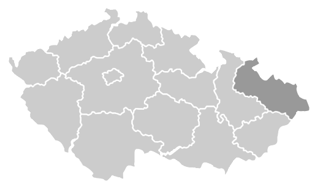

Nadace OKD podporuje projekty na celém území České republiky, nejvíce pak v Moravskoslezském kraji. Jedenkrát putovala nadační podpora i na Slovensko, a to v souvislosti s důlním neštěstím v Handlové.
Nyní podpora směřuje pouze do měst a obcí Albrechtice, Dětmarovice, Doubrava, Frýdek-Místek, Havířov, Horní Suchá, Karviná, Orlová, Paskov, Petřvald, Staříč, Stonava, Sviadnov a Žabeň.
Celkem Nadace OKD podpořila ? projektů celkovou částkou ? Kč. Na mapce je uveden počet podpořených projektů v jednotlivých regionech ČR.

Celkový počet podpořených projektů: 3649
- Jihočeský kraj: 29
- Jihomoravský kraj: 36
- Karlovarský kraj: 5
- Královéhradecký kraj: 22
- Liberecký kraj: 22
- Moravskoslezský kraj: 3289
- Olomoucký kraj: 35
- Pardubický kraj: 20
- Plzeňský kraj: 5
- Hlavní město Praha: 74
- Středočeský kraj: 30
- Ústecký kraj: 14
- Kraj Vysočina: 17
- Zlínský kraj: 50
- Zahraničí: 1
Moravskoslezský kraj
Podpořených projektů: 3289
Celkový příspěvek: 399 850 112 Kč
| Program | Název organizace | Název projektu | Rok | Podpořeno částkou | Město |
|---|---|---|---|---|---|
| Pro zdraví | Slezská diakonie | Dostupné služby - zřízení bezbariérového vchodu na ul. Fryštátská 168 | 2011 | 40 000 Kč | Karviná |
| Pro zdraví | PRAPOS | BUDEME VÁM KONKURENCÍ :-) aneb dílna na výrobu ekologických briket | 2013 | 93 000 Kč | Ostrava |
| Pro zdraví | Podane ruce, o.s. – Projekt OsA | Dostupná osobní asistence potřebným | 2012 | 500 000 Kč | Frýdek-Místek |
| Pro zdraví | UnikaCentrum, o.p.s. | Sociální rehabilitace pro zrakově postižené | 2013 | 140 000 Kč | Karviná |
| Pro zdraví | Nemocnice ve Frýdku Místku p.o. | Zvýšení kvality péče o novorozence ve Frýdecko - Místeckém regionu | 2008 | 400 000 Kč | Frýdek-Místek |
| Pro zdraví | TyfloCentrum ČR, o.p.s. | Podpora rozvoje sociálního podniku - Masérského centra v Karviné | 2011 | 105 404 Kč | Karviná |
| Pro zdraví | TJ Baník Ostrava OKD | Udržení samostatnosti tělesně postižených spoluobčanů | 2013 | 60 000 Kč | Ostrava |
| Pro zdraví | Diecézní charita ostravsko-opavská | Šance domova | 2013 | 50 000 Kč | Ostrava |
| Pro zdraví | Asociace TRIGON | Podpora zaměstnatelnosti osob se zdravotním hendikepem v Moravskoslezském kraji | 2011 | 400 000 Kč | Ostrava |
| Pro zdraví | Občanské sdružení - TRIANON | Trianon jede! | 2013 | 300 000 Kč | Český Těšín |
| Pro zdraví | Dětské centrum Domeček, příspěvková organizace | Obnova vybavení vozového parku | 2008 | 200 000 Kč | Ostrava |
| Pro zdraví | Slezská diakonie | O Krok Dál | 2012 | 85 800 Kč | Ostrava |
| Pro zdraví | Nemocnice s poliklinikou | CHYTIT DRUHÝ DECH – zkvalitnění diagnostiky a léčby respiračních nemocí dětí „smogového regionu“ | 2013 | 30 000 Kč | Karviná |
| Pro zdraví | ROSKA OSTRAVA, region.org.Unie Roska v ČR | rekondiční pobyt pro zejména imobilní osoby s roztroušenou sklerózou mozkomíšní | 2011 | 70 000 Kč | Ostrava |
| Pro zdraví | Občanské sdružení Vzájemné soužití | Kluby v důlní | 2013 | 200 000 Kč | Horní Suchá |
| Pro zdraví | Charita Hrabyně | Zlepšení pracovních podmínek a zvýšení konkurenceschopnosti chráněné dílny v Hrabyni | 2013 | 200 000 Kč | Hrabyně |
| Pro zdraví | Slezská diakonie | NA VLASTNÍ NOHY - Rozvoj sociálně terapeutických aktivit pro osoby s mentálním postižením ve Frýdku-Místku | 2011 | 351 800 Kč | Frýdek-Místek |
| Pro zdraví | Občanské sdružení při Základní škole speciální Diakonie ČCE Ostrava - Škola plná zážitků | Dovybavení nových prostorů pro děti s multihendikepem | 2013 | 66 550 Kč | Ostrava |
| Pro zdraví | Slezská diakonie | Podpora sociálně slabých rodin z Karviné a Orlové | 2011 | 265 000 Kč | Karviná |
| Pro zdraví | Slezská diakonie | Rodina je šance | 2013 | 200 000 Kč | Třinec |
| Pro zdraví | PRAPOS | Chráněná dílna-zaměstnávání osob se zdravotním postižením | 2013 | 180 000 Kč | Ostrava |
| Pro zdraví | Centrum pro rodinu a sociální péči o.s. | PODPORA OSOBNÍ ASISTENCE VE ŠKOLE U DĚTÍ SE ZDRAVOTNÍM POSTIŽENÍM | 2011 | 225 000 Kč | Ostrava |
| Pro zdraví | Podané ruce, o.s. | Naší canisterapií blíže k člověku | 2013 | 50 000 Kč | Frýdek-Místek |
| Pro zdraví | Domov seniorů Havířov, příspěvková organizace | Rekondiční pobyt uživatelů Domova seniorů Havířov | 2011 | 70 000 Kč | Havířov |
| Pro zdraví | Krajské středisko volného času Juventus, Karviná, příspěvková organizace | Ven z městských kluboven | 2013 | 200 000 Kč | Karviná |
| Pro zdraví | Středisko rané péče SPRP Ostrava | Raná péče – terénní služba pro rodiny dětí s postižením | 2008 | 492 000 Kč | Ostrava |
| Pro zdraví | Charita Sv. Alexandra | Pracovní i společenská integrace zdravotně znevýhodněných osob | 2008 | 180 000 Kč | Ostrava |
| Pro zdraví | Charita Opava | Nové prostory a podpora prodeje | 2012 | 250 000 Kč | Opava |
| Pro zdraví | Sdružení linka bezpečí | Linka bezpečí pro Moravskoslezský kraj v roce 2013 | 2013 | 100 000 Kč | Ostrava |
| Pro zdraví | Domov pro seniory Čujkovova, Ostrava- Zábřeh | Vybavení Domova pro seniory Čujkovova | 2008 | 362 000 Kč | Ostrava |
| Pro zdraví | FILADELFIE - Přístav Oldřichovice | MŮJ NOVÝ DOMOV | 2011 | 1 000 000 Kč | Třinec |
| Pro zdraví | ROSKA OSTRAVA, region.org.Unie Roska v ČR | Pro aktivní život s roztroušenou sklerózou | 2012 | 150 000 Kč | Ostrava |
| Pro zdraví | Centrum pro rodinu a sociální péči o.s. | MŮŽU ŽÍT PODLE SVÉHO - osobní asistence u dětí a mladých se zdravotním postižením | 2013 | 200 000 Kč | Ostrava |
| Pro zdraví | Nadační fond Medicus | Monitoring pro JIP Karvinské hornické nemocnice a.s. - 4 monitory + monitorovací centrála | 2008 | 108 844 Kč | Karviná |
| Pro zdraví | Statutární město Karviná | Relaxačně-rehabilitační koutek pro seniory se zdravotním postižením | 2011 | 450 000 Kč | Karviná |
| Pro zdraví | Středisko rané péče SPRP Ostrava | Aby dětem bylo dobře | 2013 | 250 000 Kč | Ostrava |
| Pro zdraví | Potravinová banka v Ostravě, o.s. | Potraviny potřebným | 2013 | 200 000 Kč | Ostrava |
| Pro zdraví | Občanské sdružení NET | Kontaktní centrum pro osoby s drogovou závislostí pro oblast Karviná | 2008 | 350 000 Kč | Karviná |
| Pro zdraví | HAIMA Ostrava - občanské sdružení pro pomoc dětem s poruchou krvetvorby | Rekondiční pobyt - fyzická a psychická rekondice dětí s leukémií a jinými poruchami krvetvorby v prostředí letního ozdravného pobytu | 2011 | 73 500 Kč | Ostrava |
| Pro zdraví | Město Jablunkov | Taxi senior | 2013 | 35 100 Kč | Jablunkov |
| Pro zdraví | Občanské sdružení svatá Barbora | Letní dovolená rodin Barborky v Adršpachu | 2011 | 80 000 Kč | Ostrava |
| Pro zdraví | Občanské sdružení AVE | • Růstové skupiny NZDM Střep | 2013 | 100 000 Kč | Český Těšín |
| Pro zdraví | ONKO - AMAZONKY, občanské sdružení | Rekondiční pobyt jako následná prevence | 2008 | 38 500 Kč | Ostrava |
| Pro zdraví | TJ Sokol Mariánské Hory - oddíl rugby | Ostravsko bez předsudků 2011 - 2012 | 2011 | 300 000 Kč | Ostrava |
| Pro zdraví | Občanské sdružení ABC | Terapeutický pobyt pro rodiny s dětmi s poruchou autistického spektra | 2013 | 96 850 Kč | Český Těšín |
| Pro zdraví | Místo pro děti | Klokánek - Kluby maminek pro vyjímečné děti | 2008 | 70 000 Kč | Ostrava |
| Pro zdraví | Slezská diakonie | S asistencí k lepším zítřkům | 2013 | 120 000 Kč | Karviná |
| Pro zdraví | Statutární město Karviná | Ozdravný pobyt pro děti | 2011 | 92 500 Kč | Karviná |
| Pro zdraví | Občanské sdružení ADRA | Pomáhám, zn. rád II | 2013 | 300 000 Kč | Havířov |
| Pro zdraví | Základní škola Havířov-Město Žákovská 1/1006 okres Karviná | 5 x pro zdraví | 2011 | 253 000 Kč | Havířov |
| Pro zdraví | Slezská diakonie | Mobilitou ke kvalitnějšímu prožití stáří | 2012 | 200 000 Kč | Komorní Lhotka |
| Pro zdraví | Armáda spásy v ČR | Pracovní rehabilitace na Farmě Strahovice | 2013 | 150 000 Kč | Strahovice |
| Pro zdraví | Benjamin, příspěvková organizace | Úprava vozidla pro potřeby imobilních uživatelů (vozíčkařů) - mechanická plošina a kotvení invalidního vozíku ve vozidle | 2008 | 59 067 Kč | Petřvald |
| Pro zdraví | Centrum sociálních služeb Bohumín | Tkalcovská dílna | 2011 | 35 000 Kč | Bohumín |
| Pro zdraví | Sdružení Linka bezpečí | Linka bezpečí- Moravskoslezský kraj | 2012 | 100 000 Kč | Ostrava |
| Pro zdraví | Slezská diakonie | "Bez rehabilitace to nejde" | 2013 | 100 000 Kč | Český Těšín |
| Pro zdraví | Sdružení zdravotně postižených občanů a jejich přátel | Rehabilitačně rekondiční pobyt | 2008 | 100 000 Kč | Ostrava |
| Pro zdraví | Charita Studénka | Naše služby všem potřebným | 2012 | 192 000 Kč | Studénka |
| Pro zdraví | Slezská diakonie | Blíže potřebným lidem v Karviné - Novém Městě | 2013 | 70 000 Kč | Karviná |
| Pro zdraví | Slezská diakonie | Jdeme dál | 2012 | 150 000 Kč | Frýdek-Místek |
| Pro zdraví | Nemocnice s poliklinikou | VŠE PRO RUCE aneb Moderní ošetření závažných poranění ruky | 2013 | 232 200 Kč | Karviná |
| Pro zdraví | Sociální služby města Třince – příspěvková organizace (dále jen SSMT) | Obnova zařízení Domova pro Seniory Sosna | 2008 | 200 000 Kč | Třince |
| Pro zdraví | Středisko pracovní rehabilitace | Denní stacionář pro lidi s mentálním postižením | 2011 | 170 000 Kč | Ostrava |
| Pro zdraví | Akademie J.A. Komenského Karviná, o.s. | Nízkoprahové zařízení dětí a mládeže OÁZA | 2013 | 100 000 Kč | Karviná |
| Pro zdraví | Středisko rané péče SPRP Ostrava | Bezpečně, účelně a bez bariér… | 2008 | 50 000 Kč | Ostrava |
| Pro zdraví | MENS SANA o. s. | Podpora osob s duševním onemocněním při samostatném bydlení 2011. | 2011 | 300 000 Kč | Ostrava |
| Pro zdraví | Slezská diakonie | Podpora terénní sociální práce v Karviné - Novém Městě | 2012 | 400 000 Kč | Karviná |
| Pro zdraví | Centrum pro rozvoj péče o duševní zdraví Moravskoslezského kraje | Služba následné péče "Pavučina" - dlouhodobá podpora lidí s duševním onemocněním III. | 2013 | 100 000 Kč | Ostrava |
| Pro zdraví | Mobilní hospic Ondrášek (MHO) | Podpora činnosti mobilního hospice Ondrášek | 2008 | 150 000 Kč | Ostrava |
| Pro zdraví | PRAPOS | Chráněná dílna-zaměstnávání osob se zdravotním postižením | 2012 | 120 000 Kč | Ostrava |
| Pro zdraví | ROZKOŠ bez RIZIKA | Prevence šíření pohlavně přenosných infekcí včetně HIV v Moravskoslezském kraji | 2013 | 100 000 Kč | Ostrava |
| Pro zdraví | o.s.NADĚJE pro všechny | Beskydami v sedlech koní | 2012 | 74 500 Kč | Ostrava |
| Pro zdraví | FBC Ostrava o.s. | Podpora handicapovaných sportovců FBC Ostrava | 2013 | 60 000 Kč | Ostrava |
| Pro zdraví | Městská nemocnice v Odrách, příspěvková organizace | Program Pro zdraví. | 2008 | 200 000 Kč | Odry |
| Pro zdraví | Sdružené zdravotnické zařízení Krnov, příspěvková organizace | Vybavení léčebny - 5 ks kyslikových koncentrátorů Sesam III | 2008 | 200 000 Kč | Krnov |
| Pro zdraví | Slezská diakonie | PRÁDELNA jako pracovní příležitost | 2012 | 100 000 Kč | Bruntál |
| Pro zdraví | MIKASA o.s. - volnočasové aktivity pro děti a mládež s kombinovaným postižením | Zvyšování kvality života uživatelů MIKASA denního stacionáře | 2013 | 250 000 Kč | Ostrava |
| Pro zdraví | Ostravská organizace vozíčkářů o.s. | BEZ BARIÉR poradenství | 2011 | 40 000 Kč | Ostrava |
| Pro zdraví | Sociální služby Karviná, příspěvková organizace | Stropní transportní a zvedací systém ROOMER | 2013 | 120 000 Kč | Karviná |
| Pro zdraví | Středisko rané péče SPRP Ostrava | Domov je doma | 2011 | 400 000 Kč | Ostrava |
| Pro zdraví | CENTROM, občanské sdružení | Zdravotní prevence ve vyloučených lokalitách | 2013 | 200 000 Kč | Ostrava |
| Pro zdraví | Charita sv. Alexandra | Rekonstr. chráněné kult. památky Administrativní budova s využitím pro projekt Chráněné bydlení Alexandr v Ostravě s podporou dotace z Regionálního operačního programu regionu soudružnosti Moravskosle | 2011 | 580 000 Kč | Ostrava |
| Pro zdraví | Ostravská organizace vozíčkářů o.s. | Poradenství Bez bariér | 2013 | 17 000 Kč | Ostrava |
| Pro zdraví | Charita sv. Alexandra | Zlepšení pracovních podmínek a zvýšení konkurenceschopnosti výrobků chráněných dílen Charity sv. Alexandra | 2011 | 670 000 Kč | Ostrava |
| Pro zdraví | ZIP Zábava Informace Poradenství a pomoc | Nízkoprahový klub 3NYTY pro mladé lidi v Havířově | 2012 | 690 000 Kč | Havířov |
| Pro zdraví | Charita sv. Alexandra | Chráněné dílny Charity sv. Alexandra - udržitelnost zaměstnanosti OZP | 2013 | 500 000 Kč | Ostrava |
| Pro zdraví | Sportovní klub vozíčkářů - SK Ostrava | Česká národní ragby liga vozíčkářů 2011 | 2011 | 19 200 Kč | Ostrava |
| Pro zdraví | Nový domov, příspěvková organizace | Vzpomínkami o pár let zpátky | 2012 | 65 790 Kč | Karviná |
| Pro zdraví | Mobilní hospic Ondrášek, o.p.s. | Důstojné umírání v domovech pacientů | 2011 | 295 000 Kč | Ostrava |
| Pro zdraví | HoSt - Home-Start Česká republika | HoSt - pomoc rodinám v Ostravě | 2013 | 100 000 Kč | Ostrava |
| Pro zdraví | Slezská diakonie | Vybavení nových prostor Poradny rané péče | 2008 | 80 000 Kč | Český Těšín |
| Pro zdraví | Centrum pro rozvoj péče o duševní zdraví MSK | Pavučina - propojování služeb komunitní psychiatrie | 2008 | 100 000 Kč | Ostrava |
| Pro zdraví | Společnost pro podporu lidí s mentálním postižením v České republice o.s., | Pomoc a podpora rodinám pečujícím o osoby se zdravotním postižením - Podpora při zřízení respitní odlehčovací služby a poradenského centra při denním stacionáři Škola života | 2011 | 120 000 Kč | Nový Jičín |
| Pro zdraví | Občanské sdružení - TRIANON | Obnova chráněné dílny OS TRIANON II. | 2012 | 400 000 Kč | Český Těšín |
| Pro zdraví | Sportovní klub vozíčkářů - SK Ostrava | Česká národní ragby liga vozíčkářů 2013 | 2013 | 17 300 Kč | Ostrava |
| Pro zdraví | Ostravská organizace vozíčkářů o.s. | Vozka - severomoravský magazín pro vozíčkáře a jejich přátele | 2008 | 70 000 Kč | Ostrava |
| Pro zdraví | Slezská diakonie | Kdo je venku s dětmi karvinského ghetta? | 2008 | 200 000 Kč | Český Těšín |
| Pro zdraví | ONKO-AMAZONKY, o.s. Ostrava | Ozdravný pobyt pro onko pacienty jako následná prevence | 2011 | 39 900 Kč | Ostrava |
| Pro zdraví | Statutární město Karviná | Ve zdravém těle zdravý duch | 2013 | 157 500 Kč | Karviná |
| Pro zdraví | Středisko rané péče SPRP Ostrava | Raná péče - terénní služba pro rodiny dětí s postižením | 2008 | 300 000 Kč | Ostrava |
| Pro zdraví | Statutární město Karviná | Volný čas dětí | 2011 | 83 000 Kč | Karviná |
| Pro zdraví | Bílý kruh bezpečí, o. s. | Pomoc osobám ohroženým domácím násilím v Moravskoslezském kraji | 2012 | 160 000 Kč | Ostrava |
| Pro zdraví | Salus o.p.s. | Salus pro děti | 2011 | 100 000 Kč | Kopřivnice |
| Pro zdraví | Ostravská organizace vozíčkářů o.s. | ALDIO - alternativní doprava imobilních osob | 2013 | 50 000 Kč | Ostrava |
| Pro zdraví | TyfloCentrum Ostrava, o. p. s. | Braillská tiskárna zdrojem informací pro nevidomé | 2011 | 139 857 Kč | Ostrava |
| Pro zdraví | Oblastní spolek ČČK Ostrava | Podpora dobrovolníků, kteří zachraňují lidské životy formou zakoupení a vybavení zásahového vozidla Záchranného týmu ČČK Ostrava | 2008 | 600 000 Kč | Ostrava |
| Pro zdraví | Společnost pro podporu lidí s mentálním postižením ČR, o.s. místní organizace Rýmařov | Pedagog pro kouzelnou buřinku | 2008 | 80 000 Kč | Rýmařov |
| Pro zdraví | Nadační fond Medicus | Fyzioterapeutická pomůcka REDCORD SYSTEM | 2011 | 129 833 Kč | Karviná |
| Pro zdraví | Asociace TRIGON | Rovné příležitosti v kontextu pracovní integrace osob s hendikepem | 2012 | 300 000 Kč | Ostrava |
| Pro zdraví | Help-in,o.p.s. Bruntál | I v horách žijí senioři-pomůžeme jim? | 2008 | 200 000 Kč | Bruntál |
| Pro zdraví | GALAXIE CENTRUM POMOCI | Vybavení stacionáře moderní počítačovou technikou | 2011 | 73 000 Kč | Karviná |
| Pro zdraví | Mateřská škola Orlová-Lutyně Okružní 917 okres Karviná, příspěvková organizace | Zdravíčko, zdravíčko, to je naše přáníčko | 2008 | 57 000 Kč | Orlová |
| Pro zdraví | Svaz neslýšících a nedoslýchavých v ČR ZO SP - nedoslýchavých v Ostravě - Porubě | Týdenní kurz odezírání mluvené řeči pro nedoslýchavé, rekondiční pobyt | 2011 | 10 000 Kč | Ostrava |
| Pro zdraví | Občanské sdružení ADRA | Pomáhám, zn.rád | 2012 | 392 430 Kč | Frýdek-Místek |
| Pro zdraví | MIKASA o.s. - volnočasové aktivity pro děti a mládež s kombinovaným postižením | Rozšíření provozu MIKASA denního stacionáře pro děti a mládež s kombinovaným postižením | 2011 | 651 500 Kč | Ostrava |
| Pro zdraví | Slezská diakonie | Dejme ruce dohromady, uděláme moc | 2012 | 100 000 Kč | Ostrava |
| Pro zdraví | UnikaCentrum, o.p.s. | Sociální podnik - Centrum krásy a odpočinku | 2012 | 337 456 Kč | Havířov |
| Pro zdraví | Klub bechtěreviků o.s. | Chci se dívat lidem do očí - 2011 | 2011 | 50 000 Kč | Ostrava |
| Pro zdraví | Help-in, o.p.s. | Pomoc i pro vás | 2011 | 300 000 Kč | Bruntál |
| Pro zdraví | Charita sv. Alexandra | Podpora konkurenceschopnosti chráněných dílen Charity sv. Alexandra | 2012 | 800 000 Kč | Ostrava |
| Pro zdraví | Diakonie Církve bratrské pobočka v Hrádku nad Olší | Mezigenerační integrované středisko služeb Hrádek-náhradní zdroj el. Energie | 2008 | 366 000 Kč | Hrádek nad Olší |
| Pro zdraví | Armáda spásy ČR | Azylový dům Armády spásy pro muže v Ostravě | 2008 | 80 000 Kč | Ostrava |
| Pro zdraví | Fokus - Opava, o.s. | Chráněná dílna Opava | 2011 | 140 000 Kč | Opava |
| Pro zdraví | Charita Opava | Rekonstrukce prostor pro chráněnou dílnu na využívání odpadů | 2008 | 300 000 Kč | Opava |
| Pro zdraví | Kafira o.s. | Pracovní a sociální integrace nevidomých a těžce zrakově postižených občanů MSK | 2008 | 100 000 Kč | Opava |
| Pro zdraví | Slezská Diakonie | Přinášíme naději rodinám v Karviné | 2008 | 172 000 Kč | Český Těšín |
| Pro zdraví | Slezská Diakonie | Rekonstrukce koupelny v Domově pro seniory Slezská Diakonie Betania | 2008 | 45 000 Kč | Český Těšín |
| Pro zdraví | Společnost senior, občanské sdružení | Stáří není nemoc | 2008 | 27 000 Kč | Ostrava |
| Pro zdraví | Dům seniorů „Pohoda“, o.p.s. | Cesta k vyšší soběstačnosti | 2012 | 65 000 Kč | Orlová |
| Pro zdraví | TJ Sokol Mariánské Hory | Sport bez předsudků 2009 - Ostravsko bez přesudků 2009 | 2008 | 300 000 Kč | Ostrava |
| Pro zdraví | Charita Opava | Mraveneček - aneb zkvalitnění života a společenská integrace handicapovaných dětí a jejich rodin | 2008 | 100 000 Kč | Opava |
| Pro zdraví | Charita Opava | Rozšíření a udržení péče v denním stacionáři pro seniory | 2008 | 33 000 Kč | Opava |
| Pro zdraví | Kofoedova škola o.s., pobočka Ostrava | Pracovně sociální integrace na Ostravsku | 2008 | 400 000 Kč | Ostrava |
| Pro zdraví | MIKASA o.s. - volnočasové aktivity pro děti a mládež s kombinovaným postižením | Rozšíření cílové skupiny MIKASA denního stacionáře - děti a mladí lidé s autismem | 2012 | 600 000 Kč | Ostrava |
| Pro zdraví | Svaz postižených civilizačními chorobami v České republice, o.s. - Základní organizace Havířov - měs | Rekondiční pobyt pro osoby postižené kardiovaskulárními chorobami | 2008 | 66 000 Kč | Havířov |
| Pro zdraví | Ostravská organizace vozíčkářů, o. s. | ALDIO - alternativní doprava imobilních osob | 2008 | 75 000 Kč | Ostrava |
| Pro zdraví | Ostravská organizace vozíčkářů, o. s. | Ozdravný pobyt vozíčkářů | 2008 | 20 000 Kč | Ostrava |
| Pro zdraví | Sportovní klub vozíčkářů | Obnova vozového parku pro alternativní dopravu ve Frýdku - Místku | 2008 | 250 000 Kč | Frýdek-Místek |
| Pro zdraví | Svaz postižených civilizačními chorobami v ČR, o.s., městská organizace Ostrava | Organizování sociální rehabilitace a podpora integrace seniorů a zdravotně postižených občanů | 2012 | 80 000 Kč | Ostrava |
| Pro zdraví | Kaštanový krámek - občanské sdružení | Kaštanový krámek - rozvoj pracovní dílny | 2012 | 222 700 Kč | Ostrava |
| Pro zdraví | Centrum pro rodinu a sociální péči, o.s. | Poradna pro ženy a dívky | 2008 | 100 000 Kč | Ostrava |
| Pro zdraví | Mateřská škola, Ostrava-Poruba, Čs. exilu 670, příspěvková organizace | HERNÍ AKTIVITY DĚTÍ S AUTISMEM | 2012 | 151 000 Kč | Ostrava |
| Pro zdraví | Občanské sdružení CHEWAL | Kůň - kamarád zdravých a nemocných | 2012 | 49 000 Kč | Bystřice |
| Pro zdraví | Středisko sociálních služeb města Frýdlant nad Ostravicí | První půjčovna kompenzačních pomůcek ve Středisku sociálních služeb města Frýdlant nad Ostravicí pro veřejnost a posílení materiálně technické základny Pečovatelské služby ve Frýdlantu nad Ostravicí | 2012 | 150 000 Kč | Frýdlant nad Ostravicí |
| Pro zdraví | Charita Hlučín | Vybavení a obnova půjčovny zdravotnických pomůcek | 2008 | 86 500 Kč | Hlučín |
| Pro zdraví | Fokus - Opava, o.s. | Rehabilitace duševně nemocných osob - podpora chráněných dílen | 2008 | 168 200 Kč | Svobodné Heřmanice |
| Pro zdraví | Základní škola Orlová-Lutyně K. Dvořáčka 1230 okres Karviná, příspěvková organizace | Pomoc hendikepovaným žákům | 2012 | 22 000 Kč | Orlová |
| Pro zdraví | Občanské sdružení Vzájemné soužití | Liščina, tady jsme doma! | 2008 | 200 000 Kč | Ostrava |
| Pro zdraví | Společnost pro podporu lidí s mentálním postižením v České republice, o. s., krajská organizace Mora | Rehabilitační pobyt lidí s mentálním postižením | 2008 | 90 000 Kč | Havířov |
| Pro zdraví | Sdružení azylových domů v ČR, o. s. | Prázdniny jinak | 2012 | 153 450 Kč | Ostrava |
| Pro zdraví | Podané ruce, o.s. - Projekt OsA Frýdek-Místek | Koordinace canisterapie | 2008 | 200 000 Kč | Frýdek-Místek |
| Pro zdraví | Rodičovské centrum Chaloupka o.s. | Zdravé dítě- přání každé mámy | 2008 | 20 800 Kč | Ostrava |
| Pro zdraví | ANIMA VIVA o.s. | Máme co nabídnout | 2012 | 200 000 Kč | Ostrava |
| Pro zdraví | Sportovní klub vozíčkářů - SK Ostrava | Česká národní ragby liga vozíčkářů 2012 | 2012 | 21 300 Kč | Ostrava |
| Pro zdraví | Asociace Trigon | Agentura podporovaného zaměstnávání | 2008 | 150 000 Kč | Ostrava |
| Pro zdraví | Jezdecký klub Stáje Nanka Orlová | Hiporehabilitace pro zkvalitnění života | 2012 | 153 700 Kč | Orlová |
| Pro zdraví | Mateřská škola Ostrava-Radvanice, příspěvková organizace | Čistý vzduch pro zdravější a kvalitnější pobyt dětí v MŠ | 2008 | 100 000 Kč | Ostrava |
| Pro zdraví | Občanské sdružení Dítě s diabetem | Rovný přístup pro děti s diabetem mellitus | 2012 | 321 200 Kč | Ostrava |
| Pro zdraví | Ostravská organizace vozíčkářů o.s. | ALDIO – alternativní doprava imobilních osob | 2012 | 30 000 Kč | Ostrava |
| Pro zdraví | MENS SANA o. s. | Podpora osob s duševním onemocněním při samostatném bydlení. | 2008 | 200 000 Kč | Ostrava |
| Pro zdraví | Krizové centrum Ostrava, o.s. | Krizové centrum Ostrava | 2012 | 300 000 Kč | Ostrava |
| Pro zdraví | Slezský klub stomiků Ostrava | Rekondiční pobyt s rehabilitačním a zdravotním programem pro stomiky | 2008 | 60 000 Kč | Ostrava |
| Pro zdraví | Středisko pracovní rehabilitace Ostrava | Středisko pracovní rehabilitace - denní stacionář | 2008 | 135 000 Kč | Ostrava |
| Pro zdraví | LIGA o. s. | Mateřinka pro nejmenší děti | 2010 | 80 000 Kč | Bruntál |
| Pro zdraví | Diakonie ČCE, středisko Rýmařov | Zkvalitnění života seniorů | 2010 | 100 000 Kč | Dolní Moravice |
| Pro zdraví | Chrpa sociální firma Slezské diakonie o.p.s. | Příležitost s CHRPOU | 2012 | 330 000 Kč | Krnov |
| Pro zdraví | RAINMAN – sdružení rodičů a přátel dětí s autismem | Terapeutický tábor a víkendy pro děti s poruchou autistického spektra | 2008 | 50 000 Kč | Ostrava |
| Pro zdraví | Charita Frenštát pod Radhoštěm | S Nadací OKD ke kvalitnějším službám | 2010 | 103 400 Kč | Frenštát pod Radhoštěm |
| Pro zdraví | Podané ruce, o.s. | Koordinace canisterapie | 2010 | 100 000 Kč | Frýdek-Místek |
| Pro zdraví | MENS SANA o. s. | Podpora osob s duševním onemocněním při samostatném bydlení 2012 | 2012 | 300 000 Kč | Ostrava |
| Pro zdraví | Sportovní klub vozíčkářů Frýdek-Místek | Cyklistika bez Hranic - integrace do společnosti nově | 2010 | 75 900 Kč | Frýdek-Místek |
| Pro zdraví | Náš svět, příspěvková organizace Pržno | Vzájemný svět | 2008 | 100 000 Kč | Frýdland nad Ostravicí |
| Pro zdraví | Charita Frýdek-Místek | Terénní služba ZOOM | 2010 | 100 000 Kč | Frýdek-Místek |
| Pro zdraví | Klub bechtěreviků o.s. | Chci se dívat lidem do očí - 2012 | 2012 | 51 000 Kč | Ostrava |
| Pro zdraví | Sdružené zdravotnické zařízení Krnov, příspěvková organizace | Vybavení dětského oddělení - nákup 2 ks vyhřívaných lůžek pro novorozence | 2008 | 175 000 Kč | Krnov |
| Pro zdraví | Podané ruce, o.s. Projekt OsA Frýdek-Místek | Společenská integrace handicapovaných osob a seniorů | 2010 | 300 000 Kč | Frýdek-Místek |
| Pro zdraví | S.T.O.P. | Každý den úsměv | 2012 | 179 610 Kč | Ostrava |
| Pro zdraví | Anima Viva o.s. | Sociální a pracovní rehabilitace osob s duševním onemocněním | 2008 | 250 000 Kč | Opava |
| Pro zdraví | Duha Zámeček | Správná pětka pro děti ze severomoravských dětských domovů | 2010 | 70 000 Kč | Havířov |
| Pro zdraví | Servis region o.s. | Centrum podporovaného zaměstnávání | 2008 | 200 000 Kč | Karviná |
| Pro zdraví | Občanské sdružení ANGELIS | • Zahájení provozu tréninkové kavárny v Havířově pro duševně nemocné klienty | 2010 | 200 000 Kč | Havířov |
| Pro zdraví | Charita Český Těšín | Žijeme v azylovém domě | 2012 | 70 000 Kč | Český Těšín |
| Pro zdraví | Základní škola speciální a Mateřská škola speciální, Nový Jičín, p.o. | Pedagogicko psychologické ježdění na koni - hipoterapie, jako alternativní forma výuky a rehabilitace pro žáky s těžším zdravotním postižením | 2008 | 39 000 Kč | Nový Jičín |
| Pro zdraví | Charita Hlučín | I.Vo = invalidní vozíky pro potřebné! | 2010 | 40 000 Kč | Hlučín |
| Pro zdraví | Help-in, o.p.s. | Rodinná asistence | 2012 | 270 000 Kč | Bruntál |
| Pro zdraví | Duha Zámeček | Správná pětka - projekt pro děti ze severomoravských dětských domovů | 2008 | 60 000 Kč | Havířov |
| Pro zdraví | Charita Jablunkov | Celková úprava sociálního zařízení a převlékárny klientů Denního stacionáře sv. Josefa | 2010 | 100 000 Kč | Jablunkov |
| Pro zdraví | KAFIRA o.s. | Jsem těžce zrakově postižený, přesto mohu pracovat! | 2008 | 300 000 Kč | Opava |
| Pro zdraví | TyfloCentrum ČR, o.p.s. | Vytvoření doplňkové specializované dopravy pro lidi se zdravotním postižením | 2010 | 150 000 Kč | Karviná |
| Pro zdraví | Akademie J.A.Komenského Karviná,o.s. | Nízkoprahové zařízení dětí a mládeže OÁZA | 2010 | 200 000 Kč | Karviná |
| Pro zdraví | Základní škola Ostrava, Gajdošova 9, příspěvková organizace | Ve zdravém těle zdravý duch | 2012 | 100 000 Kč | Ostrava |
| Pro zdraví | Krizové a kontaktní centrum Pod slunečníkem | Krizové a kontaktní centrum Pod slunečníkem | 2008 | 80 000 Kč | Opava |
| Pro zdraví | Slezská diakonie | Podpora a zábava pro sociálně-slabé rodiny z Karviné, Orlové | 2010 | 100 000 Kč | Karviná |
| Pro zdraví | Podané ruce, o.s. | Canisterapie aneb pes kamarádem | 2012 | 150 000 Kč | Frýdek-Místek |
| Pro zdraví | ROSKA OSTRAVA, reg. org. Unie Roska v ČR | Rekondiční pobyt | 2008 | 70 500 Kč | Ostrava |
| Pro zdraví | Charita Bohumín | Rozšíření a vybavení odlehčovací služby a půjčovny ošetřovatelských pomůcek v Charitním domě sv. Františka | 2008 | 50 000 Kč | Bohumín |
| Pro zdraví | Občanské sdružení Heřmánek | Provozování Domu na půli cesty Heřmánek v roce 2010 | 2010 | 600 000 Kč | Karviná |
| Pro zdraví | Nadační fond Medicus | Dostupnost a kvalita v prevenci a terapii karcinomu prsu | 2008 | 100 000 Kč | Karviná |
| Pro zdraví | Statutární město Karviná | Integrace | 2010 | 80 000 Kč | Karviná |
| Pro zdraví | Oblastní spolek Českého červeného kříže Karviná | Zásahové vozidlo | 2012 | 50 000 Kč | Karviná |
| Pro zdraví | Občanské sdružení Dítě s diabetem | Raná péče - ruka podaná na pomoc dětem s cukrovkou | 2008 | 190 000 Kč | Ostrava |
| Pro zdraví | Svaz diabetiků ČR, územní organizace Karviná | Rekondiční pobyt diabetiků | 2010 | 30 000 Kč | Karviná |
| Pro zdraví | Občanské sdružení Heřmánek | Provozování Domu na půli cesty Heřmánek | 2008 | 1 000 000 Kč | Karviná |
| Pro zdraví | TyfloCentrum ČR, o.p.s. | Zřízení centra regeneračních služeb za účelem zaměstnání zdravotně postižených občanů | 2008 | 70 000 Kč | Karviná |
| Pro zdraví | Knihovna města Ostravy, příspěvková organizace | Zakoupení speciálního software pro provozování internetu pro nevidomé a zrakově postižené jako prostředku rovných příležitostí v přístupu k informacím | 2008 | 85 714 Kč | Ostrava |
| Pro zdraví | Ostravská organizace vozíčkářů o.s. | VOZKA - severomoravský magazín pro vozíčkáře a jejich přátele | 2012 | 65 000 Kč | Ostrava |
| Pro zdraví | Město Nový Jičín | Obnovení povodní zničené tělocvičny v domě s pečovatelskou službou | 2010 | 45 500 Kč | Nový Jičín |
| Pro zdraví | Občanské sdružení Dítě s diabetem | Zkvalitnit život dětí s diabetem a jiným autoimunitním onemocněním - letní zdravotně edukační pobyt | 2008 | 100 000 Kč | Ostrava |
| Pro zdraví | Eurotopia Opava o.p.s. | Společně ke změně | 2010 | 198 000 Kč | Opava |
| Pro zdraví | Armáda spásy v ČR | Poslední krok k osamostatnění | 2012 | 205 000 Kč | Havířov |
| Pro zdraví | Kafira o.s. | Jsem těžce zrakově postižení, přesto MOHU a CHCI pracovat! | 2010 | 150 000 Kč | Opava |
| Pro zdraví | Anima viva o.s. | Podpora Centra ANIMA Opava (CAO) | 2010 | 250 000 Kč | Opava |
| Pro zdraví | Charita Ostrava | Zlepšení ubytovacích podmínek Charitního domu sv. Zdislavy - azylového domu pro matky v tísni | 2008 | 80 000 Kč | Ostrava |
| Pro zdraví | Mateřská škola Orlová-Lutyně Okružní | V zdravém těle zdravý duch | 2010 | 12 000 Kč | Orlová |
| Pro zdraví | Klub bechtěreviků, o.s. - Moravskoslezský kraj | Chci se dívat lidem do očí | 2008 | 50 000 Kč | Třinec |
| Pro zdraví | Diecézní charita ostravsko-opavská | Horizont - středisko socíální aktivizace | 2010 | 150 000 Kč | Ostrava |
| Pro zdraví | Diakonie Broumov | Pracovní a společenská integrace sociálně znevýhodněných osob | 2008 | 100 000 Kč | Broumov |
| Pro zdraví | Sdružení Podkova | Elektrický vozík | 2008 | 62 160 Kč | Děhylov |
| Pro zdraví | S.T.O.P. | Dobrovolníci v Moravskoslezském kraji | 2010 | 50 000 Kč | Ostrava |
| Pro zdraví | Diecézní charita ostravsko-opavská | Kunčičky - místo pro život | 2012 | 300 000 Kč | Ostrava |
| Pro zdraví | Slezská Diakonie | Tísňová péče Dorkas | 2008 | 750 000 Kč | Český Těšín |
| Pro zdraví | Krizové centrum Ostrava, o.s. | Krizové Centrum Ostrava - psychosociální terénní, ambulantní a pobytová pomoc lidem v krizových situacích - pokračující projekt | 2010 | 200 000 Kč | Ostrava |
| Pro zdraví | Ústav sociální péče pro tělesně postižené v Hrabyni | Rehabilitační pomůcky pro zvýšení kvality života | 2012 | 200 000 Kč | Hrabyně |
| Pro zdraví | Diakonie ČCE - středisko v Ostravě | Azylový dům Debora | 2008 | 87 500 Kč | Ostrava |
| Pro zdraví | Sociální služby Karviná | Zlepšení péče o imobilní uživatele Domečku | 2008 | 77 000 Kč | Karviná |
| Pro zdraví | Sdružení rodičů Klokánek o.s. | Krůčky k poznání | 2010 | 150 000 Kč | Ostrava |
| Pro zdraví | Společnost pro podporu lidí s mentálním postižením v ČR, o.s., okresní organizace Ostrava | Centrum denních služeb-odlehčovací služby | 2010 | 100 000 Kč | Ostrava |
| Pro zdraví | Charita Ostrava | Noční provoz Kontaktního místa pro osoby bez přístřeší | 2010 | 99 000 Kč | Ostrava |
| Pro zdraví | SERVIS REGION o.s. | ROZVOJ SLUŽEB PODPOROVANÉHO ZAMĚSTNÁVÁNÍ V KARVINÉ | 2008 | 250 000 Kč | Karviná |
| Pro zdraví | Mobilní hospic Ondrášek, o.p.s. | Zajištění provozu mobilního hospice | 2010 | 260 000 Kč | Ostrava |
| Pro zdraví | Federace rodičů a přátel sluchově postižených | Naše dítě neslyší - kdo pomůže? | 2010 | 200 000 Kč | Ostrava |
| Pro zdraví | Svaz postižených civilizačními chorobami v ČR, o.s., městský výbor Ostrava | Organizování sociální rehabilitace a podpora integrace seniorů a zdravotně postižených občanů | 2010 | 50 000 Kč | Ostrava |
| Pro zdraví | Diakonie ČCE - středisko v Příboře, církevní nestátní nezisková organizace | Modernizace kompenzačních pomůcek | 2008 | 60 000 Kč | Příbor |
| Pro zdraví | Občanské sdružení ADRA | Realizace dobrovolnických programů za účelem zlepšení životních podmínek sociálně ohrožených skupin obyvatelstva v MS kraji | 2010 | 173 260 Kč | Ostrava |
| Pro zdraví | RAINMAN – sdružení rodičů a přátel dětí s autismem | Terapeutický tábor pro děti s poruchou autistického spektra | 2008 | 90 000 Kč | Ostrava |
| Pro zdraví | Občanské sdružení při Základní škole speciální Diakonie ČCE Ostrava - Škola plná zážitků | Rekonstrukce nájezdové rampy v objektu Základní školy speciální Diakonie ČCE Ostrava | 2010 | 230 000 Kč | Ostrava |
| Pro zdraví | Dětský diagnostický ústav, Základní škola Bohumín, příspěvková organizace | Terapeutická místnost pro děti vyžadující zvýšenou individuální péči | 2008 | 75 000 Kč | Bohumín |
| Pro zdraví | Občanské sdružení Vzájemné soužití | Liščina, tady jsme doma! III. | 2010 | 250 000 Kč | Ostrava |
| Pro zdraví | Sdružení maminek Sluníčko | Bublina je majákem pro děti | 2012 | 200 000 Kč | Karviná |
| Pro zdraví | TyfloCentrum ČR, o.p.s. | Mezinárodní Blind olympiáda 2008 a mezinárodní konference Nevidomí mezi námi | 2008 | 50 000 Kč | Karviná |
| Pro zdraví | Mikasa o.s. - volnočasové aktivity pro děti a mládež s kombinovaným postižením | Podpora vzniku a provozu denního stacionáře pro děti a mládež s kombinovaným postižením MIKASA | 2010 | 300 000 Kč | Ostrava |
| Pro zdraví | Občanské sdružení Dítě s diabetem | Nebojte se cukrovky - edukace šitá na míru | 2010 | 210 000 Kč | Ostrava |
| Pro zdraví | Jesle Frýdek-Místek,příspěvková organizace | Cesta za zdravím pro děti trpící alergiemi | 2008 | 50 000 Kč | Frýdek-Místek |
| Pro zdraví | ONKO - Naděje, sdružení onkologických pacientů Karviná | Zkvalitnění života onkologických pacientů a preventivní osvěta k nádorovému onemocnění v Karviné a okolí - podprojekt vzdělávání realizačního týmu | 2008 | 8 000 Kč | Karviná |
| Pro zdraví | Ostravská organizace vozíčkářů o.s. | Ozdravný pobyt vozíčkářů | 2010 | 23 500 Kč | Ostrava |
| Pro zdraví | Charita sv. Alexandra | Podpora zaměstnávání osob se zdravotním postižením v chráněných dílnách | 2010 | 275 000 Kč | Ostrava |
| Pro zdraví | Sdružení rodičů KLOKÁNEK o.s. | Krůčky ke zdraví | 2008 | 96 000 Kč | Ostrava |
| Pro zdraví | Potravinová banka v Ostravě, o.s. | Potraviny pomáhají sociálně slabým | 2010 | 100 000 Kč | Ostrava |
| Pro zdraví | Asociace TRIGON | Příprava na práci včetně zajištění rekvalifikací pro osoby se zdravotním postižením | 2010 | 200 000 Kč | Ostrava |
| Pro zdraví | Občanské sdružení ADRA | Dobrovolníci v sociálních a zdravotních zařízeních Moravskoslezského kraje | 2008 | 208 800 Kč | Frýdek-Místek |
| Pro zdraví | Místo pro děti | Kluby maminek výjimečných dětí - Klokánek | 2010 | 100 000 Kč | Ostrava |
| Pro zdraví | Středisko rané péče SPRP Ostrava | Dítě patří domů | 2010 | 200 000 Kč | Ostrava |
| Pro zdraví | Ostravská organizace vozíčkářů o.s. | Poradenství Bez bariér | 2012 | 19 000 Kč | Ostrava |
| Pro zdraví | Centrum pro rodinu a sociální péči o.s. | PORADNA PRO ŽENY DÍVKY | 2008 | 80 000 Kč | Ostrava |
| Pro zdraví | Armáda spásy v ČR | Zajištění lékařské služby lidem bez domova | 2010 | 100 000 Kč | Ostrava |
| Pro zdraví | Spolkový dům Mariany BERLOVÉ | Dětské denní centrum Beruška | 2008 | 75 000 Kč | Bruntál |
| Pro zdraví | Občanské sdružení svatá Barbora | Podzimní pobyt dětí z ,,Barborky na horách | 2010 | 100 000 Kč | Ostrava |
| Pro zdraví | Mens sana o. s. | Podpora osob s duševním onemocněním při samostatném bydlení 2010 | 2010 | 200 000 Kč | Ostrava |
| Pro zdraví | Centrum pro rodinu a sociální péči o.s. | Zpřístupnění možnosti IT komunikace dětem a mladým lidem s postižením a pomoci jim v integraci speciálními kompenzačními pomůckami | 2008 | 100 000 Kč | Ostrava |
| Pro zdraví | Tyfloservis, o.p.s. | Zvýšení kvality terénních sociálně rehabilitačních služeb Tyfloservisu, o.p.s. | 2008 | 50 000 Kč | Ostrava |
| Pro zdraví | Charita Krnov | Umožněme plnohodnotný život i těm, kteří se ocitli v nepříznivé životní situaci | 2009 | 132 000 Kč | Krnov |
| Pro zdraví | Občanské sdružení Dítě s diabetem | Vzájemně si pomáháme | 2008 | 100 000 Kč | Ostrava |
| Pro zdraví | Církevní základní škola a mateřská škola Přemysla Pittra, příspěvková organizace | Kdo našel oporu, smí doufat sám v sebe - bezbariérový přístup pro školáky na vozíku pro invalidy | 2008 | 100 400 Kč | Ostrava |
| Pro zdraví | Středisko rané péče SPRP Ostrava | „Pomoci si navzájem“ | 2009 | 297 000 Kč | Ostrava |
| Pro zdraví | Slezský klub stomiků Ostrava | Rekondiční pobyt s rehabilitačním a zdravotním programem pro stomiky | 2009 | 65 000 Kč | Ostrava |
| Pro zdraví | Centrum nové naděje | Občanská poradna – dluhové poradenství | 2009 | 250 000 Kč | Frýdek-Místek |
| Pro zdraví | Základní škola, Dětský domov, Školní družina a Školní jídelna, Vrbno pod Pradědem, přísp. org. | NASLOUCHÁNÍ … | 2008 | 200 000 Kč | Vrbno pod Pradědem |
| Pro zdraví | Sjednocená org. nevidomých a slabozrakých ČR, oblastní odbočka Nový Jičín | Rozšíření nabídky kompenzačních pomůcek k bezplatnému zapůjčení těžce zrakově postiženým klientům oblastní odbočky Nový Jičín. | 2009 | 32 000 Kč | Nový Jičín |
| Pro zdraví | Sportovní klub vozíčkářů Frýdek-Místek | Chráněná dílna EKOREO | 2010 | 200 000 Kč | Staré Město |
| Pro zdraví | Charita Studénka | Schody nejsou bariérou | 2010 | 400 000 Kč | Studénka |
| Pro zdraví | Společnost pro podporu lidí s mentálním postižením v České republice, obč. sdružení, krajská organiz | Sportovní olympiáda lidí s mentálním postižením 2010 | 2009 | 100 000 Kč | Havířov |
| Pro zdraví | Charita Opava | Pořízení otočných vidlí k VZV | 2010 | 65 000 Kč | Velké Hoštice |
| Pro zdraví | Centrum sociálních služeb Bohumín, příspěvková organizace | Cvičný byt | 2009 | 120 000 Kč | Bohumín |
| Pro zdraví | Dětský domov se školou, základní škola a školní jídelna, Těrlicko | Integrace chlapců s nařízenou ústavní výchovou | 2010 | 20 000 Kč | Vrbno pod Pradědem |
| Pro zdraví | Asociace rodičů a přátel zdravotně postižených dětí v ČR o.s. Klub Zvoneček Nádražní 695/28 Odry | Cestu si tvoříme tím ,že jdeme | 2012 | 209 300 Kč | Odry |
| Pro zdraví | Domov Jistoty,p.o. | XIII. Mezinárodní sportovně společenské hry vozíčkářů | 2009 | 34 500 Kč | Bohumín |
| Pro zdraví | Město Orlová | Zkvalitnění prostředí v sociálních službách | 2009 | 200 000 Kč | Orlová |
| Pro zdraví | Občanské sdružení AMOS-HAVÍŘOV | Kvalitní život pro sociálně znevýhodněné osoby umožňující jejich osobní rozvoj, začlenění a péči | 2008 | 150 000 Kč | Havířov |
| Pro zdraví | Občanské sdružení - TRIANON | 7. KONFERENCE S MEZINÁRODNÍ ÚČASTÍ „BEZ BARIÉR BEZ HRANIC 2009 | 2008 | 55 000 Kč | Český Těšín |
| Pro zdraví | Nadační fond Medicus | Monitor iMM Solar 8000i - modulární monitorování pro kritickou péči | 2009 | 200 000 Kč | Karviná |
| Pro zdraví | Wichterlovo gymnázium, Ostrava-Poruba, příspěvková organizace | Vybudování plošiny pro tělesně postižené žáky gymnázia | 2008 | 200 000 Kč | Ostrava |
| Pro zdraví | TJ Sokol Mariánské Hory – oddíl rugby | Ostravsko bez předsudků (SBP 2009) – podzim 2009, Školní liga ragby 2009 (ŠLR 2009) - podzim | 2009 | 200 000 Kč | Ostrava |
| Pro zdraví | Akademie J.A. Komenského Karviná, o.s. | Nízkoprahové zařízení dětí a mládeže OÁZA | 2012 | 400 000 Kč | Karviná |
| Pro zdraví | Chrpa sociální firma Slezské diakonie o.p.s. | Zahradnictví Chrpa | 2009 | 376 060 Kč | Krnov |
| Pro zdraví | Charita Ostrava | Zkvalitnění služeb pro seniory v Charitním domě sv. Alžběty | 2009 | 90 000 Kč | Ostrava |
| Pro zdraví | Základní škola, Opava, Havlíčkova 1, příspěvková organizace | Počítač - brána k informacím a k integraci | 2008 | 100 000 Kč | Opava |
| Pro zdraví | Charita Ostrava | Rozšíření počtu lůžek pro odlehčovací služby v Hospici sv. Lukáše | 2009 | 520 000 Kč | Ostrava |
| Pro zdraví | Asociace rodičů a přátel zdravotně postižených dětí v ČR o.s. Klub Zvoneček | Tvoříme,vzděláváme se ,poznáváme svět | 2009 | 150 000 Kč | Odry |
| Pro zdraví | Slezská nemocnice v Opavě, příspěvková organizace | Humanizace oddělení TRN – péče o klienty s onemocněním dýchacích cest v důsledku profese | 2008 | 150 000 Kč | Opava |
| Pro zdraví | Akademie J. A. Komenského Karviná, o.s. | Nízkoprahové zařízení dětí a mládeže OÁZA | 2009 | 100 000 Kč | Karviná |
| Pro zdraví | GALAXIE CENTRUM POMOCI o.s. | Estetizace tvořivých dílen, pracovny a relaxačního koutku | 2008 | 80 000 Kč | Karviná |
| Pro zdraví | FILADELFIE – Přístav Oldřichovice | DĚTI PATŘÍ DO RODINY | 2009 | 1 000 000 Kč | Třinec |
| Pro zdraví | ONKO – Naděje, sdružení onkologických pacientů Karviná | Rekondiční pobyt „Onkologického klubu Naděje Karviná“ | 2009 | 40 000 Kč | Karviná |
| Pro zdraví | Kofoedova škola, občanské sdružení | Pomoc k svépomoci | 2008 | 150 000 Kč | Karviná |
| Pro zdraví | Mobilní hospic Ondrášek (dále jen MHO) | Zajištění provozu Mobilního hospice Ondrášek | 2009 | 140 000 Kč | Ostrava |
| Pro zdraví | Domov pro seniory Frýdlant nad Ostravicí | Modernizace úseku rehabilitace v Domově pro seniory Frýdlant nad Ostravicí | 2009 | 311 000 Kč | Frýdland nad Ostravicí |
| Pro zdraví | Ergon - Chráněná dílna, o. s. | Nová technologie - nové pracovní příležitosti pro občany zdravotně znevýhodněné | 2008 | 350 000 Kč | Český Těšín |
| Pro zdraví | Sportovní klub vozíčkářů Ostrava | Společné sportovní aktivity dětských a hendikepovaných stolních tenistů | 2009 | 68 000 Kč | Ostrava |
| Pro zdraví | Základní škola pro tělesně postižené, Opava, Dostojevského 12 | Šťastný život s handicapem za spoluúčasti osobních asistentů | 2012 | 100 000 Kč | Opava |
| Pro zdraví | Sportovní klub vozíčkářů Frýdek – Místek | Rozšíření Cyklocentra pro hendikepované děti, mládež a dospělé | 2008 | 150 000 Kč | Frýdek-Místek |
| Pro zdraví | Domov pro seniory Slunovrat, Ostrava-Přívoz,příspěvková organizace | „Zřízení signalizačního přivolávacího systému“ | 2009 | 100 000 Kč | Ostrava |
| Pro zdraví | Městská nemocnice Ostrava, příspěvková organizace | Zkvalitnění služby na Lince důvěry Ostrava | 2012 | 50 000 Kč | Ostrava |
| Pro zdraví | Občanské sdružení ADRA | Dobrovolníci v sociálních a zdravotních zařízeních Moravskoslezského kraje - příspěvek na mzdy, telefony, cestovné atd. | 2008 | 160 000 Kč | Frýdek-Místek |
| Pro zdraví | Občanské sdružení Heřmánek | Provozování Zařízení pro děti vyžadující okamžitou pomoc Heřmánek v roce 2012 | 2012 | 200 000 Kč | Karviná |
| Pro zdraví | Charita sv. Alexandra | „Obnova a využití chráněné kulturní památky Hlubinný uhelný důl Alexandr pro sociální účely-II. etapa KOČÁROVNA - Chráněná dílna zpacování plastů“ | 2008 | 400 000 Kč | Ostrava |
| Pro zdraví | Sportovní klub vozíčkářů Frýdek – Místek | Alternativní doprava ve Frýdku – Místku | 2009 | 150 000 Kč | Frýdek-Místek |
| Pro zdraví | Občanské sdružení Heřmánek | Provozování Domu na půli cesty Heřmánek v roce 2012 | 2012 | 800 000 Kč | Karviná |
| Pro zdraví | Slezská diakonie | Poradna Elpis Ostrava | 2009 | 175 100 Kč | Český Těšín |
| Pro zdraví | Centrum pro zdravotně postižené Moravskoslezského kraje o.s. | Osobní asistence na Novojičínsku | 2012 | 190 000 Kč | Nový Jičín |
| Pro zdraví | Slezská diakonie | Občanská poradna Havířov při Slezské diakonii | 2009 | 100 000 Kč | Český Těšín |
| Pro zdraví | Slezská diakonie | Kavárna Empatie – podpora pracovního uplatnění osob se zdravotním znevýhodněním | 2009 | 190 000 Kč | Český Těšín |
| Pro zdraví | Nemocnice s poliklinikou Havířov, příspěvková organizace | Vybavení neurologického oddělení mechanickými lůžky | 2008 | 111 000 Kč | Havířov |
| Pro zdraví | Slezská diakonie | Zdravý spánek seniorů | 2009 | 78 000 Kč | Český Těšín |
| Pro zdraví | Občanské sdružení NET | Terénní programy pro uživatele návykových látek v Karviné | 2012 | 90 540 Kč | Karviná |
| Pro zdraví | Centrum pro rodinu a sociální péči o.s. | Podpora kvalitní osobní asistence. | 2009 | 200 000 Kč | Ostrava |
| Pro zdraví | Slezský klub stomiků Ostrava | 20. rekondiční pobyt pro stomiky | 2012 | 64 000 Kč | Ostrava |
| Pro zdraví | Sdružení Klíček | Plná náruč času - poskytování respitní a hospicové péče pro děti a mladé lidi | 2008 | 100 000 Kč | Ostrava |
| Pro zdraví | Dětský diagnostický ústav, Základní škola a Školní jídelna Bohumín | Obklady stěn v ústavu pro děti vyžadující zvýšenou individuální péči | 2009 | 68 600 Kč | Bohumín |
| Pro zdraví | Sledge hokejový klub Panthers Havířov o.s. | Integrace zdravotně postižených dětí, mládeže a dospělých ve sportu | 2008 | 150 000 Kč | Havířov |
| Pro zdraví | Občanské sdružení svatá Barbora | Podzimní prázdniny dětí z Barborky | 2009 | 60 500 Kč | Ostrava |
| Pro zdraví | Obec Bělá | Diagnostická stezka pro zdraví | 2008 | 200 000 Kč | Bolatice |
| Pro zdraví | Charita Bohumín | Technické zázemí pro nízkoprahové denní centrum pro osoby bez přístřeší POHODA | 2009 | 50 000 Kč | Bohumín |
| Pro zdraví | Centrum pro rozvoj péče o duševní zdraví Moravskoslezského kraje | Služba následné péče Pavučina - dlouhodobá podpora lidí s duševním onemocněním II | 2012 | 129 600 Kč | Ostrava |
| Pro zdraví | KAFIRA o.s. | Handicap není bariérou | 2009 | 200 000 Kč | Opava |
| Pro zdraví | Občanské sdružení Dítě s diabetem | Žijme naplno-rovný přístup pro děti s diabetem! | 2014 | 50 000 Kč | Ostrava |
| Pro zdraví | Svaz postižených civilizačními chorobami, o. s. | Projekt resocializační pomoci postiženým následky karcinogenních chorob. Prevence proti civilizačnímu onemocnění rakoviny prsu - pro mládež a pro dospělé | 2008 | 58 000 Kč | Havířov |
| Pro zdraví | Salus o.p.s. | Domov Salus | 2009 | 50 000 Kč | Kopřivnice |
| Pro zdraví | ONKO pomoc Karviná, o.p.s. | Jak dál žít | 2014 | 60 000 Kč | Karviná |
| Pro zdraví | Základní škola Borovského | EEG - Biofeedback - pomáhá dětem i dospělým | 2008 | 50 000 Kč | Karviná |
| Pro zdraví | Obec Stonava | Oprava havarijního stavu ve staré části Domu s pečovatelskou službou Stonava čp. 613 | 2009 | 500 000 Kč | Stonava |
| Pro zdraví | NEDOKLUBKO, o.s. | • Mámy pro mámy - pomáháme srdcem v Moravskoslezském kraji | 2012 | 50 000 Kč | Ostrava |
| Pro zdraví | Domov Vesna | Nevšední smyslový zážitek | 2014 | 100 000 Kč | Orlová |
| Pro zdraví | Základní škola, Havířov-Město, Mánesova 1, příspěvková organizace | Zkvalitnění péče o těžce zdravotně handicapované žáky | 2009 | 150 000 Kč | Havířov |
| Pro zdraví | THeatr ludem | Terapie loutkou | 2011 | 100 000 Kč | Ostrava |
| Pro zdraví | Mobilní hospic Ondrášek, o.p.s. | Komplexní hospicová péče pro umírající v jejich domovech | 2014 | 100 000 Kč | Ostrava |
| Pro zdraví | TyfloCentrum ČR, o.p.s. | Sociálně aktivizační služby pro osoby se zdravotním postižením | 2008 | 180 000 Kč | Karviná |
| Pro zdraví | S.T.O.P. | Dobrovolníci mění svět | 2011 | 71 850 Kč | Ostrava |
| Pro zdraví | Statutární město Karviná | Rekondiční pobyt a Memoriál Jana Schmida | 2012 | 100 000 Kč | Karviná |
| Pro zdraví | Statutární město Karviná | Karviná lyžuje 2014 | 2014 | 250 000 Kč | Karviná |
| Pro zdraví | Duha Zámeček | Správná pětka – projekt pro děti ze severomoravských dětských domovů (2009) | 2008 | 110 000 Kč | Havířov |
| Pro zdraví | Občanské sdružení EpiStop | EpiStop Ostrava | 2011 | 200 000 Kč | Ostrava |
| Pro zdraví | Občanské sdružení "AVE" | Program "Makám na sobě" ve Střepu | 2014 | 98 100 Kč | Petrovice u Karviné |
| Pro zdraví | Duha Zámeček | Zámeček – časopis pro děti z DD, celoroční hry Zámečku a tábor dětské redakce | 2009 | 100 000 Kč | Havířov |
| Pro zdraví | Heřmánek, z.s. | Provozování Zařízení pro děti vyžadující okamžitou pomoc Heřmánek v roce 2014 | 2014 | 250 000 Kč | Karviná |
| Pro zdraví | SANTÉ-centrum ambulantních a pobytových sociálních služeb | Bez bariér - šikmá schodišťová plošina ve středisku MIKADO | 2011 | 172 800 Kč | Havířov |
| Pro zdraví | Mobilní hospic Ondrášek, o.p.s. | Zajištění péče umírajícím v jejich domovech | 2012 | 350 000 Kč | Ostrava |
| Pro zdraví | Heřmánek, z.s. | Provozování Domu na půli cesty Heřmánek v roce 2014 | 2014 | 250 000 Kč | Karviná |
| Pro zdraví | Slezská humanita o. s. humanitární společenství pro zdravotnictví a sociální pomoc | Osobní lůžkový výtah v Domově pro seniory Slezské humanity o. s. | 2008 | 654 150 Kč | Karviná |
| Pro zdraví | Centrum pro rozvoj péče o duševní zdraví Moravskoslezského kraje | Pavučina – propojování služeb komunitní psychiatrie II. | 2009 | 178 000 Kč | Ostrava |
| Pro zdraví | Středisko rané péče SPRP Ostrava | Průvodce raného věku | 2014 | 100 000 Kč | Ostrava |
| Pro zdraví | Nadační fond Betlém nenarozeným | Azylový dům pro těhotné ženy v tísni - dostavba verandy a venkovní úpravy | 2008 | 194 000 Kč | Ostrava |
| Pro zdraví | Krizové centrum Ostrava, o.s. | Krizové Centrum Ostrava – psychosociální terénní, ambulantní a pobytová pomoc lidem v krizových situacích. | 2009 | 200 000 Kč | Ostrava |
| Pro zdraví | ZIP Zábava Informace Poradenství a pomoc | Větrat je třeba - v klubu i na ulici | 2011 | 50 000 Kč | Havířov |
| Pro zdraví | Hrčávka | Návrat k tradicím prostřednictvím pomoci osobám se zdravotním postižením | 2012 | 181 900 Kč | Hrčava |
| Pro zdraví | Charita sv. Alexandra | Chráněné dílny Charity sv. Alexandra | 2014 | 250 000 Kč | Ostrava |
| Pro zdraví | Občanské sdružení Heřmánek | Provozování Domu na půli cesty Heřmánek | 2009 | 1 000 000 Kč | Karviná |
| Pro zdraví | Podane ruce, o.s. Projekt OsA | Usnadnění běžného života seniorům a zdravotně handicapovaným lidem prostřednictvím osobní asistence | 2011 | 500 000 Kč | Frýdek-Místek |
| Pro zdraví | Slezská diakonie | Inovace terénní sociální práce ve vyloučené lokalitě | 2014 | 70 000 Kč | Český Těšín |
| Pro zdraví | Spirála o.p.s. | • Chráněná pracovní místa v divadelním občerstvení | 2014 | 50 000 Kč | Ostrava |
| Pro zdraví | KČT oblast Moravskoslezská | Integrace zdravotně postižených turistů | 2008 | 150 000 Kč | Ostrava |
| Pro zdraví | Město Orlová | Společně na zahradě | 2014 | 200 000 Kč | Orlová |
| Pro zdraví | Mateřská škola Ostrava - Hrabůvka, Adamusova 7, příspěvková organizace | Terapie a relaxace pro děti s poruchou autistického spektra hrou | 2008 | 75 400 Kč | Ostrava |
| Pro zdraví | Charita Hlučín | „Domov je víc, než jen obyčejný pojem“ | 2009 | 20 000 Kč | Hlučín |
| Pro zdraví | Ústav sociální péče pro tělesně postižené v Hrabyni | Transportní a zvedací systém ROOMER pro zkvalitnění poskytovaných služeb | 2011 | 200 000 Kč | Hrabyně |
| Pro zdraví | ROSKA OSTRAVA, region.org.Unie Roska v ČR | Aktivně i s roztroušenou sklerózou(dále jen RS) | 2014 | 50 000 Kč | Ostrava |
| Pro zdraví | Nemocnice s poliklinikou Havířov, příspěvková organizace | Průtokový cytometr pro diagnostiku hematoonkologických onemocnění | 2009 | 250 000 Kč | Havířov |
| Pro zdraví | Společnost pro podporu lidí s mentálním postižením v České republice,o.s.Okresní organizace SPMP ČR | Vybavení sociálně terapeutické dílny Polárka | 2011 | 58 000 Kč | Bruntál |
| Pro zdraví | Statutární město Karviná | Aktivitou proti stárnutí | 2014 | 100 000 Kč | Karviná |
| Pro zdraví | Podané ruce, o.s. - Projekt OsA Frýdek-Místek | Poskytování služeb osobní asistence | 2008 | 500 000 Kč | Frýdek-Místek |
| Pro zdraví | Roska Frýdek-Místek | Zlepšení rehabilitačních postupů pro nemocné roztroušenou sklerózou – rekondice,semináře,rehabilitace | 2009 | 80 000 Kč | Frýdek-Místek |
| Pro zdraví | Armáda spásy v ČR | Vybavení nově vzniklého bezbariérového bytu v azylovém domě | 2011 | 229 800 Kč | Havířov |
| Pro zdraví | Krajské středisko volného času Juventus, Karviná, příspěvková organizace | Ven z městských kluboven III. | 2014 | 100 000 Kč | Karviná |
| Pro zdraví | Jezdecký klub Stáje NANKA Orlová | Hiporehabilitací zpět do společnosti | 2008 | 150 000 Kč | Orlová |
| Pro zdraví | občanské sdružení Vzájemné soužití | Liščina, tady jsme doma! II. | 2009 | 825 000 Kč | Ostrava |
| Pro zdraví | Statutární město Karviná | Volnočasové aktivity | 2014 | 68 000 Kč | Karviná |
| Pro zdraví | YMCA Orlová | Centrum pro rodinu Orlová | 2008 | 200 000 Kč | Orlová |
| Pro zdraví | Občanské sdružení Dítě s diabetem | Barevné DIAdny Luhačovice 2009 | 2009 | 100 000 Kč | Ostrava |
| Pro zdraví | Charita Opava | Nově v Radosti | 2011 | 124 500 Kč | Opava |
| Pro zdraví | MIKASA z.s. - volnočasové aktivity pro děti a mládež s kombinovaným postižením | Autismus a kombinované vady - rozvoj terapeutických metod a provozu MIKASA denního stacionáře | 2014 | 100 000 Kč | ostrava |
| Pro zdraví | Diakonie ČCE – středisko v Ostravě | Podpora soukromí uživatelů služeb Domovinky pro seniory | 2009 | 96 000 Kč | Ostrava |
| Pro zdraví | Nemocnice s poliklinikou Havířov, příspěvková organizace | Efektivnější diagnostika a terapie u zrakově postižených dětí | 2011 | 283 660 Kč | Havířov |
| Pro zdraví | Občanské sdružení Vzájemné soužití | Liščina- spolu nám tady bude dobře | 2012 | 150 000 Kč | Ostrava |
| Pro zdraví | Charita Frýdek-Místek | Pořízení automobilů pro Charitní pečovatelskou a ošetřovatelskou službu | 2008 | 200 000 Kč | Frýdek-Místek |
| Pro zdraví | Domov Vesna, příspěvková organizace | Tísňový a komunikační systém pro uživatele Domova Vesny | 2009 | 100 000 Kč | Orlová |
| Pro zdraví | Akademie J.A. Komenského Karviná, o.s. | Nízkoprahové zařízení dětí a mládeže OÁZA | 2011 | 260 570 Kč | Karviná |
| Pro zdraví | Sociální služby města Orlová, příspěvková organizace | Dovybavení chráněného bydlení | 2012 | 50 000 Kč | Orlová |
| Pro zdraví | Náš svět, příspěvková organizace | Kůň a pes | 2011 | 138 800 Kč | Pržno |
| Pro zdraví | Charita Frýdek-Místek | Mateřské centrum Kolečko | 2008 | 150 000 Kč | Frýdek-Místek |
| Pro zdraví | ANIMA VIVA o.s. | NEJSME NA TO SAMI! | 2009 | 135 400 Kč | Opava |
| Pro zdraví | Diecézní charita ostravsko-opavská | Nový domov | 2011 | 185 000 Kč | Ostrava |
| Pro zdraví | Střední škola, Odry, příspěvková organizace | SLYŠÍTE SVÉ RUCE MLUVIT? | 2009 | 84 920 Kč | Odry |
| Pro zdraví | Máš čas?, o. s. | Zabezpečení provozu nízkoprahového denního centra pro osoby bez přístřeší - Racek | 2012 | 83 000 Kč | Kopřivnice |
| Pro zdraví | Bílé peří, sociální družstvo | • Pečovatelská služba pro osoby se zdravotním či chronickým onemocněním a pro rodiny s dětm a seniory | 2008 | 150 000 Kč | Karviná |
| Pro zdraví | Bílý nosorožec o.p.s. | Právo a vzdělávání | 2009 | 158 625 Kč | Ostrava |
| Pro zdraví | Obec Hnojník | Zlepšení životních podmínek klientů DPS Hnojník | 2011 | 200 000 Kč | Hnojník |
| Pro zdraví | Agentura SLUNCE, o.p.s. | Zlaté slunce – nákup vybavení pro uživatele v závěru života | 2009 | 410 000 Kč | Ostrava |
| Pro zdraví | Tyfloservis, o.p.s. | Cesta ze tmy | 2012 | 220 000 Kč | Ostrava |
| Pro zdraví | Benjamín, příspěvková organizace | nákup zvedacího zařízení Advance pro těžce zdravotně postižené uživatele | 2009 | 70 000 Kč | Petřvald |
| Pro zdraví | SPOLEČNĚ – JEKHETANE, o. s. | Jak neskončit v dluhové pasti | 2012 | 180 000 Kč | Ostrava |
| Pro zdraví | Sdružení maminek Sluníčko o.s. | Bublina po hornicku | 2008 | 114 000 Kč | Karviná |
| Pro zdraví | Středisko pracovní rehabilitace | SPR – Denní stacionář | 2009 | 147 000 Kč | Ostrava |
| Pro zdraví | Charita Český Těšín | Keramická dílna pro Těšín | 2011 | 210 000 Kč | Český Těšín |
| Pro zdraví | Centrum pro zdravotně postižené Moravskoslezského kraje o. s. | Informace bez bariér | 2008 | 50 000 Kč | Nový Jičín |
| Pro zdraví | Společnost pro podporu lidí s mentálním postižením v České republice, o.s., Okresní organizace SPMP | SPMP Ostrava – Centrum denních služeb | 2009 | 170 000 Kč | Ostrava |
| Pro zdraví | Potravinová banka v Ostravě, o.s. | Potravinová banka | 2012 | 295 000 Kč | Ostrava |
| Pro zdraví | Centrum pro zdravotně postižené Moravskoslezského kraje o. s | Občanská poradna – Nový začátek | 2009 | 110 000 Kč | Ostrava |
| Pro zdraví | Občanské sdružení Vzájemné soužití | Krůček k lepší budoucnosti | 2011 | 170 000 Kč | Ostrava |
| Pro zdraví | Spolek přátel Frýdku-Místku o.s. | Chráněná dílna Sokolík | 2012 | 102 000 Kč | Frýdek-Místek |
| Pro zdraví | Centrum pro zdravotně postižené Moravskoslezského kraje o. s. | Osobní asistence - cesta k integraci | 2008 | 52 500 Kč | Nový Jičín |
| Pro zdraví | Občanské sdružení Heřmánek | Provozování Domu na půli cesty Heřmánek v roce 2011 | 2011 | 650 000 Kč | Karviná |
| Pro zdraví | Ostravská organizace vozíčkářů o.s. | VOZKA - severomoravský magazín pro vozíčkáře a jejich přátele | 2011 | 60 000 Kč | Ostrava |
| Pro zdraví | Městská nemocnice Ostrava, příspěvková organizace | Zvýšení kvality služeb poskytovaných v Domě sociálních služeb při Městské nemocnici Ostrava | 2008 | 69 500 Kč | Ostrava |
| Pro zdraví | Sociální služby Karviná, příspěvková organizace | Psychowalkman pro osoby s nemocí Alzheimer | 2012 | 27 000 Kč | Karviná |
| Pro zdraví | ANIMA VIVA o.s. | V zaměstnávání hendikepovaných jdeme sami příkladem. | 2011 | 600 000 Kč | Opava |
| Pro zdraví | Sportovní klub SK Ostrava | Česká národní ragby liga vozíčkářů 2009 (ČNRLV) | 2008 | 118 700 Kč | Ostrava |
| Pro zdraví | Charita Krnov | Denní stacionář Charity Krnov | 2011 | 150 000 Kč | Krnov |
| Pro zdraví | Oblastní spolek ČČK Ostrava | Zachraňujme kvalitněji! - závěrečné dovybavení sanitního vozidla Záchranného týmu ČČK Ostrava | 2011 | 85 780 Kč | Ostrava |
| Pro zdraví | Občanské sdružení - TRIANON | Obnova chráněné dílny OS TRIANON | 2011 | 400 000 Kč | Český Těšín |
| Pro zdraví | Občanské sdružení Vzájemné soužití | Horní Suchá - tady chceme bydlet! II. | 2012 | 300 000 Kč | Horní Suchá |
| Pro zdraví | Základní škola a Mateřská škola Václavovice, příspěvková organizace | Handicap není překážkou k prožití plnohodnotného života | 2008 | 47 000 Kč | Václavovice |
| Pro zdraví | ONKO-Naděje, sdružení onkologických pacientů Karviná | Vracíme se do Čeladné | 2011 | 50 000 Kč | Karviná |
| Pro zdraví | Podané ruce, o.s. - Projekt OsA Frýdek - Místek | Poskytování služeb osobní asistence | 2008 | 100 000 Kč | Frýdek-Místek |
| Pro zdraví | Podané ruce, o.s. | Koordinace canisterapie | 2011 | 290 600 Kč | Frýdek-Místek |
| Pro zdraví | HC KES Studénka o.s. | Sledge hokej Studénka 2013-2014 | 2013 | 65 000 Kč | Studénka |
| Pro zdraví | Občanské sdružení Vzájemné soužití | Horní Suchá - tady chceme bydlet! | 2011 | 500 000 Kč | Horní Suchá |
| Pro zdraví | Sportovní klub vozíčkářů Ostrava | 19.ročník MČR ve stolním tenise vozíčkářů a finanční pomoc pro činnosti SKV Ostrava na rok 2013. | 2013 | 61 350 Kč | Ostrava |
| Pro zdraví | Charita Opava | Lisujeme odpady | 2013 | 180 000 Kč | Velké Hoštice |
| Pro zdraví | Sociální služby Karviná, příspěvková organizace | Modernizace vybavení Střediska osobní hygieny pečovatelské služby | 2011 | 80 392 Kč | Karviná |
| Pro zdraví | Statutární město Karviná | Karviná lyžuje | 2013 | 250 000 Kč | Karviná |
| Pro zdraví | ANIMA VIVA, o.s. | Sociální a pracovní rehabilitace pro pokročilé | 2013 | 100 000 Kč | Opava |
| Pro zdraví | Charita Opava | POHANKA, SUCHÁ UHLIČITÁ KOUPEL, PRODEJNÍ AKCE = ROZVOJ CHRÁNĚNÉHO ZAMĚSTNÁVÁNÍ | 2011 | 477 580 Kč | Opava |
| Pro zdraví | Krajské středisko volného času Juventus, Karviná, příspěvková organizace | Z městských kluboven za čerstvým vzduchem | 2012 | 327 510 Kč | Karviná |
| Pro zdraví | MENS SANA, o.s. | Kognitivní rehabilitace lidí s traumatickým poraněním mozku a schizofrenií | 2013 | 400 000 Kč | Ostrava |
| Pro zdraví | Občanské sdružení Dítě s diabetem | Společně vše zvládneme | 2011 | 300 000 Kč | Ostrava |
| Pro zdraví | Charita Český Těšín | Do "Komety" za sportem i poučením | 2013 | 100 000 Kč | Karviná |
| Pro zdraví | Charita Opava | Pes přítel Mravenečka | 2012 | 43 400 Kč | Opava |
| Pro zdraví | Sdružení maminek Sluníčko o.s. | 2013 Bezpečná Bublina | 2013 | 100 000 Kč | Karviná |
| Pro zdraví | Centrum pro rozvoj péče o duševní zdraví Moravskoslezského kraje | Služba následné péče Pavučina - dlouhodobá podpora lidí s duševním onemocněním | 2011 | 362 125 Kč | Ostrava |
| Pro zdraví | Charita sv. Alexandra | Aktivity pro duševně nemocné v Chráněném bydlení | 2013 | 150 000 Kč | Ostrava |
| Pro zdraví | Středisko rané péče SPRP Ostrava | Od narození po školu | 2012 | 350 000 Kč | Ostrava |
| Pro zdraví | Občanské sdružení Dítě s diabetem | Žijme naplno-rovný přístup pro děti s diabetem! | 2013 | 100 000 Kč | Ostrava |
| Pro zdraví | Centrum sociálních služeb Ostrava, příspěvková organizace | Podpůrné terapeutické programy pro rodiny, které jsou zasažené či ohrožené domácím násilím | 2011 | 223 300 Kč | Ostrava |
| Pro zdraví | ANIMA VIVA o.s. | Program 5P (Potřebného a Přínosného Propojení Péče a Podpory) | 2012 | 200 000 Kč | Opava |
| Pro zdraví | Občanské sdružení Heřmánek | Provozování Domu na půli cesty Heřmánek v roce 2013 | 2013 | 400 000 Kč | Karviná |
| Pro zdraví | Charita Frýdek - Místek | Denní centrum sv. Josefa pro psychicky nemocné | 2008 | 100 000 Kč | Frýdek-Místek |
| Pro zdraví | Potravinová banka v Ostravě, o.s. | Potraviny pomáhají | 2011 | 300 000 Kč | Ostrava |
| Pro zdraví | Harmonie, příspěvková organizace | Místo i pro mě ... | 2012 | 150 000 Kč | Město Albrechtice |
| Pro zdraví | GALAXIE CENTRUM POMOCI o.s. | Provozování denního stacionáře | 2013 | 84 000 Kč | Karviná |
| Pro zdraví | Občanské sdružení ADRA | Podpora a rozvoj dobrovolnických programů DC ADRA ve vybraných lokalitách MSK | 2011 | 225 442 Kč | Frýdek-Místek |
| Pro zdraví | Statutární město Karviná | Volný čas dětí | 2012 | 71 000 Kč | Karviná |
| Pro zdraví | Mobilní hospic Ondrášek, o.p.s. | Komplexní péče o umírající v jejich domovech | 2013 | 300 000 Kč | Ostrava |
| Pro zdraví | ONKO pomoc Karviná, o.p.s. | BISTRO ESÍČKO | 2012 | 300 000 Kč | Karviná |
| Pro zdraví | Podane ruce, o.s. – Projekt OsA | Zajištění osobní asistence potřebným | 2013 | 200 000 Kč | Frýdek-Místek |
| Pro zdraví | Občanské sdružení při Dětském centru Kopřivnice | Pro zdraví Chceme jezdit do své školy | 2011 | 200 000 Kč | Kopřivnice |
| Pro zdraví | Spirála o.p.s. | Máme co nabídnout II. aneb Jak propojit sociální službu se zaměstnáváním duševně nemocných | 2013 | 200 000 Kč | Ostrava |
| Pro zdraví | Slezská diakonie | Ergoterapeutické činnosti pro osoby s mentálním postižením | 2012 | 500 000 Kč | Český Těšín |
| Pro zdraví | Krizové centrum Ostrava, o.s. | Krizové centrum Ostrava | 2013 | 200 000 Kč | Ostrava |
| Pro zdraví | Slezská diakonie | Bezbariérová Hosana Karviná – II. etapa | 2011 | 80 000 Kč | Karviná |
| Pro zdraví | Dětský domov a Školní jídelna, Budišov nad Budišovkou, ČSA 718, příspěvková organizace | TŘI SCHODY | 2012 | 115 000 Kč | Budišov nad Budišovkou |
| Pro zdraví | Ostravská organizace vozíčkářů o.s. | VOZKA - magazín o životě a pro život na vozíku | 2013 | 85 000 Kč | Ostrava |
| Pro zdraví | Nemocnice s poliklinikou Havířov, příspěvková organizace | Zakoupení přístrojů pro znevýhodněné pacienty na dětském oddělení | 2012 | 73 082 Kč | Havířov |
| Pro zdraví | Federace rodičů a přátel sluchově postižených, o.s. | Raná péče rodinám dětí se sluchovým a kombinovaným postižením v Moravskoslezském kraji | 2013 | 100 000 Kč | Ostrava |
| Pro radost | Středisko kultury a vzdělávání Vrbno pod Pradědem, příspěvková organizace | JAK MALÝ ČTENÁŘ DO KNIHOVNY PŘIŠEL | 2009 | 19 300 Kč | Vrbno pod Pradědem |
| Pro radost | Sdružení Permoník, občanské sdružení | Činnost organizace Ostrovů hudby - 14. etapa, část realizace pro rok 2009 | 2008 | 50 000 Kč | Karviná |
| Pro radost | AMŠ - Alternativa | TRADICE – SLAVNOSTI A RADOSTI aneb VĚDOMÍ V SRDCI | 2009 | 150 000 Kč | Ostrava |
| Pro radost | Světelská pohoda – sdružení pro obnovu a rozvoj místních tradic | „Tradice či netradice - hlavně ať se něco děje“ | 2009 | 70 000 Kč | Světlá Hora |
| Pro radost | Městský dům kultury Karviná | Karvinské varhany - 5. ročník festivalu varhanní hudby | 2008 | 50 000 Kč | Karviná |
| Pro radost | Pionýrská skupina PASKOV | Kdo si hraje nezlobí | 2012 | 17 860 Kč | Paskov |
| Pro radost | Základní škola Ostrava -Vítkovicepříspěvková organizace | Letní tábor pro děti „Správnou cestou“ | 2008 | 88 600 Kč | Ostrava |
| Pro radost | KERIT | POJĎ S NÁMI POZNÁVAT SVĚT | 2008 | 150 000 Kč | Orlová |
| Pro radost | Místní skupina Polského kulturně-osvětového svazu v Jablunkově | 62. Mezinárodní folklórní setkání „Gorolski Święto” | 2009 | 81 000 Kč | Jablunkov |
| Pro radost | Středisko volného času, Ostrava – Zábřeh, příspěvková organizace | Kulturní most mezi národy | 2008 | 100 000 Kč | Ostrava |
| Pro radost | Comenius Fulnek, o.s. | „Edu & Art Fulnek 2009 – 2010“ (Education and Art Fulnek 2009 – Vzdělávání a umění Fulnek 2009 - 2010) | 2009 | 177 400 Kč | Fulnek |
| Pro radost | EUROTOPIA Opava o.p.s. | Kulturní aktivity pro romské děti | 2009 | 119 000 Kč | Opava |
| Pro radost | Mensa České republiky | Logická olympiáda 2012 | 2012 | 100 000 Kč | Ostrava |
| Pro radost | Krizové centrum Ostrava, o.s. | Podpora vzdělávání pracovníků krizového centra pro zvýšení kvality poskytovaných služeb | 2008 | 30 000 Kč | Ostrava |
| Pro radost | Základní škola Ostrava, Gajdošova 9, příspěvková organizace | Galerie Na chodbě | 2009 | 38 000 Kč | Ostrava |
| Pro radost | Dům seniorů Pohoda, o.p.s. | Pochod všech generací | 2008 | 30 500 Kč | Orlová |
| Pro radost | Celé Česko čte dětem, o. p. s. | Celé Česko čte dětem | 2008 | 200 000 Kč | Ostrava |
| Pro radost | FILADELFIE – Přístav Oldřichovice | RADÍME PĚSTOUNŮM | 2009 | 162 000 Kč | Třinec |
| Pro radost | Za starou Ostravu | Cesty energie – Zdroj černé uhlí | 2009 | 90 000 Kč | Ostrava |
| Pro radost | PZKO - Polský svaz kulturně-osvětový | Přehlídka lidových kapel z Trojmezí - Česko,Polsko, Slovensko - III.ročník | 2008 | 35 000 Kč | Třinec |
| Pro radost | Dům dětí a mládeže Vratimov, příspěvková organizace | Křížem krážem Slezskou bránou | 2008 | 140 000 Kč | Vratimov |
| Pro radost | Střední škola, Odry, příspěvková organizace | TVŮRČÍ DÍLNY - NAPŘÍČ VŠEMI GENERACEMI | 2009 | 73 850 Kč | Odry |
| Pro radost | Sbor dobrovolných hasičů Český Těšín - Stanislavice | Víkendové radovánky v rámci oslav 90. výročí založení SDH Český Těšín - Stanislavice | 2012 | 16 490 Kč | Český Těšín |
| Pro radost | Dětský domov a Školní jídelna, Čeladná | Sportovní vybavení kroužku stolního tenisu | 2008 | 10 620 Kč | Čeladná |
| Pro radost | Obec Raškovice | Tradiční mluva v podhůří Beskyd | 2009 | 100 000 Kč | Pražmo |
| Pro radost | EXIL o.s. | Mezinárodní festival pěveckých sborů Visegrádské čtyřky - Ostrava | 2008 | 86 000 Kč | Ostrava |
| Pro radost | Ekologické informační centrum Zelený bod Ostrava | Ekofilm a my | 2012 | 100 000 Kč | Ostrava |
| Pro radost | Sdružení pro činnost mezinárodních kamenných sympozií | Zviditelnění sochařských parků vzniklých ze sympozií LANDEK | 2009 | 177 500 Kč | Ostrava |
| Pro radost | Obec Horní Suchá | Fedrování s folklórem | 2009 | 80 000 Kč | Horní Suchá |
| Pro radost | Občanské sdružení svatá Barbora | Vzděláním k rozvoji budoucnosti dítěte | 2008 | 500 000 Kč | Ostrava |
| Pro radost | Dům kultury města Orlové, příspěvková organizace (dále jen DKMO) | Lidová tvořivost na jarmacích v Orlové | 2009 | 87 000 Kč | Orlová |
| Pro radost | Kroužek krojovaných horníků dolu František | Kroužek krojovaných horníků František Horní Suchá | 2012 | 30 000 Kč | Horní Suchá |
| Pro radost | Mateřské a rodinné centrum Sluníčko Havířov, občanské sdružení | Aktivně na mateřské spolu s dětmi a Mateřským a rodinným centrem Sluníčko Havířov | 2008 | 100 000 Kč | Havířov |
| Pro radost | Valíme se …, o.s. | Nástrahy velkoměsta | 2008 | 35 000 Kč | Karviná |
| Pro radost | Moravskoslezská vědecká knihovna v Ostravě, příspěvková organizace | Moderní webová prezentace Moravskoslezské vědecké knihovny v Ostravě | 2009 | 232 050 Kč | Ostrava |
| Pro radost | Regionální knihovna Karviná | 18. ročník Knižního jarmarku | 2012 | 50 000 Kč | Karviná |
| Pro radost | Základní škola a mateřská škola Ostrava-Bělský Les | Televizní noviny v naší škole | 2008 | 70 000 Kč | Ostrava |
| Pro radost | Valíme se …, o.s. | Stíny temnoty | 2008 | 40 000 Kč | Karviná |
| Pro radost | Mendelovo gymnázium, Opava, příspěvková organizace | Pokusem a praxi k zlepšení znalosti a dovednosti učitelů a žáků v oblasti přírodních věd | 2008 | 100 000 Kč | Opava |
| Pro radost | Občanské sdružení Sdružení Romů Severní Moravy | Zájmová a výchovná činnost pro dětí z Karviné – Nového Města | 2008 | 170 000 Kč | Karviná |
| Pro radost | Statutární město Ostrava - městský obvod Michálkovice | Michálkovické řezbářské dny ve dnech 15. - 21. 6. 2009 | 2008 | 100 000 Kč | Ostrava |
| Pro radost | Regionální knihovna Karviná | Cyklus besed pro hornické důchodce OKD | 2008 | 40 500 Kč | Karviná |
| Pro radost | Diakonický institut | Příprava a realizace kvalifikačního kurzu pro pracovníky azylových domů a jejich obyvatele - osoby ohrožené sociálním vyloučením | 2008 | 270 000 Kč | Český Těšín |
| Pro radost | Městské kulturní centrum Fulnek, příspěvková organizace | Svět slova II | 2008 | 100 000 Kč | Fulnek |
| Pro radost | občanské sdružení Za starou Ostravu | Jak se nás dotkly dějiny aneb historky z naší kuchyně. | 2008 | 44 700 Kč | Ostrava |
| Pro radost | Mezinárodní křesťanské velvyslanectví Jeruzalém, česká pobočka | Světlo paměti | 2012 | 100 000 Kč | Český Těšín |
| Pro radost | KLUBsten Karviná | Ostrava se baví 2008; Společenská akce pro děti z dětských domovů a stacionářů | 2008 | 20 000 Kč | Karviná |
| Pro radost | Charita Frýdek-Místek | Klub Nezbeda | 2008 | 75 000 Kč | Frýdek-Místek |
| Pro radost | Město Orlová | Happening pod širým nebem | 2012 | 80 000 Kč | Orlová |
| Pro radost | Hasičský sbor Hradec nad Moravicí hasičské jednotky | Folkové léto (nejen) dětem | 2008 | 24 000 Kč | Hradec nad Moravicí |
| Pro radost | Obec Vendryně | Sport a kultura neznají hranice - utužování partnerské spolupráce | 2012 | 50 000 Kč | Vendryně |
| Pro radost | Církevní středisko volného času sv.Jana Boska v Havířově | Prevence sociálně patologických jevů dětí a mládeře v Havířově | 2008 | 27 000 Kč | Havířov |
| Pro radost | Občanské sdružení Madleine | Děti dětem - Adventní koncerty | 2012 | 200 000 Kč | Ostrava |
| Pro radost | Čtyřlístek – centrum pro osoby se zdravotním postižením Ostrava, p.o. | Všechny barvy duhy II; Koncert zdravotně postižených dětí a dospělých lidí | 2008 | 50 000 Kč | Ostrava |
| Pro radost | Město Orlová | Festival národnostních kultur | 2008 | 55 000 Kč | Orlová |
| Pro radost | KLUBsten Karviná | Ostrava se baví 2009 | 2008 | 50 000 Kč | Karviná |
| Pro radost | Junák-svaz skautů a skautek ČR, Středisko Modrý šíp Ostrava | Smysluplný rozvoj schopností | 2008 | 80 000 Kč | Ostrava |
| Pro radost | Literární klub Petra Bezruče | Josef Mnohoslav Kadlčák-osvětový pilíř Pobeskydí | 2008 | 22 000 Kč | Frýdland nad Ostravicí |
| Pro radost | Základní škola, Ostrava-Poruba, Porubská 831, Příspěvková organizace | Člověk v pohybu | 2008 | 100 000 Kč | Ostrava |
| Pro radost | Rozvoj Krnovska o.p.s. | Jin/jang Krnovska a Osoblažska | 2012 | 18 500 Kč | Osoblaha |
| Pro radost | Dům seniorů Pohoda o.p.s. | Pěčoky | 2008 | 15 000 Kč | Orlová |
| Pro radost | Obec Doubrava | Doubrava spolu II. - podpora kulturního života v obci | 2014 | 86 500 Kč | Doubrava |
| Pro radost | Knihovna města Ostravy, příspěvková organizace | Až budu velký, budu…. | 2008 | 55 000 Kč | Ostrava |
| Pro radost | Mateřská škola, Ostrava-Poruba, Dětská 920, příspěvková organizace | Ostrava moje město | 2012 | 50 000 Kč | Ostrava |
| Pro radost | Obec Horní Suchá | Fedrování s folklorem 2013 | 2013 | 80 000 Kč | Horní Suchá |
| Pro radost | Místní skupina Polského svazu kulturně-osvětového Karviná-Ráj | 18. Máj nad Olzou | 2012 | 60 000 Kč | Karviná |
| Pro radost | Bunkr, o. s. | Bez nudy | 2013 | 100 000 Kč | Třinec |
| Pro radost | Florbalový klub Horní Suchá, o.s. | Sportovní kemp pro děti a mládež | 2013 | 50 000 Kč | Havířov |
| Pro radost | Divadlo loutek Ostrava p.o. | Uspořádání 5. ročníku akce Divadelní pouť Bez bariér | 2008 | 60 000 Kč | Ostrava |
| Pro radost | Kulturní zařízení Ostrava-Jih, příspěvková organizace | ŘEMESLO MÁ ZLATÉ DNO | 2012 | 55 000 Kč | Ostrava |
| Pro radost | Obec Žabeň | Mezinárodní setkání ŽABÍCH obcí | 2013 | 50 000 Kč | Žabeň |
| Pro radost | Klub mladých Filadelfia | Nízkoprahové zařízení Fontána | 2008 | 150 000 Kč | Český Těšín |
| Pro radost | Dům kultury města Orlové, příspěvková organizace | ADVENT v Orlové | 2013 | 150 000 Kč | Orlová |
| Pro radost | PAVUČINA Občanské sdružení DEN pobočka Ostrava | Dětské dny pavučiny | 2013 | 18 200 Kč | Ostrava |
| Pro radost | Občanské sdružení Fiducia | Kultiplex Fiducia | 2008 | 100 000 Kč | Ostrava |
| Pro radost | Statutární město Havířov | Štědrý večer pro osamělé seniory | 2013 | 21 100 Kč | Havířov |
| Pro radost | občanské sdružení Fiducia | Ateliéry pro děti a jejich rodiče ve Fiducii | 2013 | 80 000 Kč | Ostrava |
| Pro radost | PZKO - Polský svaz kulturně- osvětový, místní skupina Třinec - Dolní Lištná | Přehlídka lidových kapel z Trojmezí - Česko, polsko, Slovensko - II. Ročník | 2008 | 30 000 Kč | Třinec |
| Pro radost | Pecha Kucha Ostrava o.s. | Pecha Kucha Night Ostrava | 2013 | 40 000 Kč | Ostrava |
| Pro radost | Základní a mateřská škola Frenštát pod Radhoštěm okr.Nový Jičín | Nebojme se techniky, umí nám pomáhat | 2008 | 50 000 Kč | Frenštát pod Radhoštěm |
| Pro radost | Klub přátel Hornického muzea v Ostravě | 25 let činnosti Klubu přátel hornického muzea v Ostravě | 2013 | 60 000 Kč | Ostrava |
| Pro radost | Wheel klub o. s. | Vybudování areálu adrenalinových sportů | 2008 | 52 000 Kč | Karviná |
| Pro radost | Sdružení pro Bašku | Baškohrátky 2013 - nové a netradiční | 2013 | 80 000 Kč | Frýdek-Místek |
| Pro radost | Iniciativa Dokořán | DOKOŘÁN - radost všemi směry! | 2013 | 250 000 Kč | Karviná |
| Pro radost | Florbalový klub Horní Suchá | Sportovní kemp pro děti a mládež | 2012 | 100 000 Kč | Havířov |
| Pro radost | Film For People | Letní Biograf Láska přiváží na Ostravsko české komedie | 2013 | 100 000 Kč | Orlová |
| Pro radost | Základní umělecká škola, Rýmařov, | Všeoborový celoškolní projekt „Amerika“ | 2008 | 100 000 Kč | Rýmařov |
| Pro radost | Občanské sdružení Kulturní Ostrava | Multižánrové centrum současného umění Cooltour | 2013 | 200 000 Kč | Ostrava |
| Pro radost | Základní škola Majakovského Karviná | Klub dětí Evropy; Zkvalitnění a rozšíření cizojazyčné výuky | 2008 | 100 000 Kč | Karviná |
| Pro radost | Obec Stonava | Tradiční stonavská pouť ke sv.Maří Magdaléně - 103.ročník | 2013 | 100 000 Kč | Stonava |
| Pro radost | Občanské sdružení Svatá Barbora | • Za vzděláním do Prahy | 2008 | 80 000 Kč | Ostrava |
| Pro radost | ART Prometheus o.s. | • Karnevalový průvod 2013 | 2013 | 200 000 Kč | Karviná |
| Pro radost | Slezská diakonie | Naučte se s námi bránit… | 2008 | 150 000 Kč | Český Těšín |
| Pro radost | Hlásím se k továrně | Deepcamp Hlubina 2013 - vaše ulice | 2013 | 50 000 Kč | Ostrava |
| Pro radost | K3 Bohumín p.o. | O Bohumínu a historii hornictví MSK, víme všechno aneb soutěž pro 1833 dětí | 2008 | 72 982 Kč | Bohumín |
| Pro radost | Ekologické informační centrum Zelený bod Ostrava | Návrat Ekofilmu do Ostravy | 2013 | 50 000 Kč | Ostrava |
| Pro radost | Občanské sdružení Galerie Michal | Mezinárodní výtvarné sympozium na územní tzv. Brown fields, bývalý důl Michal | 2008 | 51 429 Kč | Ostrava |
| Pro radost | Obec Stonava | Mezinárodní soutěž ve zpěvu komorních ansámblů Stonavská Barborka - 7. ročník | 2013 | 150 000 Kč | Stonava |
| Pro radost | Slezská diakonie | Proti nudě a sociální patologií | 2008 | 82 000 Kč | Český Těšín |
| Pro radost | Dům dětí a mládeže p.o. Orlová | Orlová žije tancem a pohybem | 2008 | 80 000 Kč | Orlová |
| Pro radost | Koliba | Dědictví Karpat | 2013 | 50 000 Kč | Košařiska |
| Pro radost | Muzeum Novojičínska, příspěvková organizace | Vyžívání přírodních surovin v lidové kultuře Beskyd | 2013 | 40 000 Kč | Příbor |
| Pro radost | Jazz v Beskydech o.s. | Jazz v Beskydech | 2012 | 131 000 Kč | Frýdek-Místek |
| Pro radost | Sbor dobrovolných hasičů Vratimov | Den záchranných složek Vratimov 2013 | 2013 | 50 000 Kč | vratimov |
| Pro radost | Gymnázium a Střední odborná škola Orlová | natočení a vydání CD, vydání sbírky výtvarných a literárních děl naších žáků, vydání propagačních materiálů | 2008 | 60 000 Kč | Orlová |
| Pro radost | Dům kultury města Orlové p.o. | Šachty pohraničí v umění | 2008 | 145 000 Kč | Orlová |
| Pro radost | Spolek Přátelé Vrbenska | Lesní slavnost Lapků z Drakova 2013 | 2013 | 100 000 Kč | Heřmanovice |
| Pro radost | Slezský klub stomiků Ostrava | Trojsetkání stomiků na hranici | 2013 | 30 000 Kč | Ostrava |
| Pro radost | Sbor dobrovolných hasičů Vratimov | Den záchranných složek 2012 | 2012 | 100 000 Kč | Vratimov |
| Pro radost | Filmotéka Ostrava, o.s. | Nová Stará vol.02 | 2013 | 50 000 Kč | Ostrava |
| Pro radost | Knihovna města Ostravy, příspěvková organizace | Kouzelná knihovna - knihovna pro všechny. | 2008 | 60 000 Kč | Ostrava |
| Pro radost | Cirkus trochu jinak | Cirkulum | 2013 | 100 000 Kč | Ostrava |
| Pro radost | Janáčkova konzervatoř a Gymnázium v Ostravě | Cyklus koncertů a představení jako oslava 60 let uměleckého vzdělávání na konzervatoři v Ostravě | 2013 | 50 000 Kč | Ostrava |
| Pro radost | Občanské sdružení Tvůrčí centrum Ostrava | 34. podzimní přehlídka nové vokální a instrumentální tvory Hudební současnost 2008 | 2008 | 70 000 Kč | Ostrava |
| Pro radost | Mensa České republiky | Logická olympiáda 2013 | 2013 | 70 000 Kč | Ostrava |
| Pro radost | Základní škola a Mateřská škola Bohumín tř.Dr.E.Beneše 456 okres Karviná | Cirkus ve škole, škola v cirkusu (aneb prodlužme si život smíchem...) | 2013 | 60 000 Kč | Bohumín |
| Pro radost | Slezský soubor Heleny Salichové | Podzimní slavnost Třebovický koláč | 2008 | 30 000 Kč | Ostrava |
| Pro radost | Divadlo loutek Ostrava, příspěvková organizace | 10. mezinárodní loutkářský festival SPECTACULO INTERESSE | 2013 | 100 000 Kč | Ostrava |
| Pro radost | Místní skupina Polského svazu kulturně-osvětového Karviná-Ráj | 19. máj nad Olzou | 2013 | 60 000 Kč | Karviná |
| Pro radost | Sdružení pro činnost mezinárodních kamenných sympozií o.s. | 4. ročník bienále LANDEK 08; Prezentace Moravskoslezského kraje, podpora účastníků sympozia | 2008 | 185 000 Kč | Ostrava |
| Pro radost | Dělnický dům v Odrách | A proč ne - 3. ročník nesoutěžního festivalu amatérského divadla v Odrách | 2012 | 45 000 Kč | Odry |
| Pro radost | Májovák, dechový orchestr, Karviná CZ | Oslavy 105. výročí založení Májováku | 2013 | 50 000 Kč | Karviná |
| Pro radost | Pionýrská skupina PASKOV | Motýl je náš kamarád | 2013 | 15 930 Kč | Paskov |
| Pro radost | Sjednocená organizace nevidomých a slabozrakých České republiky | Dny umění nevidomých na Moravě 2013 | 2013 | 45 300 Kč | Ostrava |
| Pro radost | Centrum pro rodinu a sociální péči o.s. | Dřevo - Dřívko - Dřevíčko; výstava | 2008 | 112 000 Kč | Ostrava |
| Pro radost | Soubor lidových písní a tanců Valašský vojvoda | Souznění 2013 - Mezinárodní festival adventních a vánočních zvyků, koled a řemesel | 2013 | 50 000 Kč | Kozlovice |
| Pro radost | TEMPL, občanské sdružení | TEMPL – jediná stabilní, celoroční a dlouhodobá multikulturní scéna s centrem komunitního setkávání na Stodolní ulici | 2008 | 150 000 Kč | Ostrava |
| Pro radost | Jesenické infocentrum | Bruntálské indiánské léto | 2012 | 50 000 Kč | Bruntál |
| Pro radost | Obec Hrčava | Pouť Cyrila a Metoděje na Hrčavě | 2013 | 25 000 Kč | Hrčava |
| Pro radost | Slezský soubor Heleny Salichové | Podzimní slavnost Třebovický koláč | 2012 | 50 000 Kč | Ostrava |
| Pro radost | Střední škola techniky a služeb, Karviná, příspěvková organizace | SŠTaS Karviná - Brána řemeslům otevřená | 2013 | 100 000 Kč | Karviná |
| Pro radost | Regionální knihovna Karviná | 19. ročník Knižního jarmarku | 2013 | 50 000 Kč | Karviná |
| Pro radost | Základní škola Karviná - Ráj, U Lesa 713 | Přátelství bez bariér | 2012 | 50 000 Kč | Karviná |
| Pro radost | Kulturní zařízení Ostrava-Jih, příspěvková organizace | ŘEMESLO MÁ ZLATÉ DNO | 2013 | 57 000 Kč | Ostrava |
| Pro radost | Stáj Tennessee Bonanza | • Ke koním bez bariér | 2012 | 150 000 Kč | Trojanovice |
| Pro radost | Statutární město Ostrava, městský obvod Proskovice | Svatojánské slavnosti | 2013 | 30 000 Kč | Ostrava |
| Pro radost | Česká Footbagová Asociace | Dělej něco! | 2012 | 256 000 Kč | Ostrava |
| Pro radost | Obec Doubrava | Doubrava spolu - podpora kulturního života v obci | 2013 | 88 500 Kč | Doubrava |
| Pro radost | Statutární města Ostrava, městský obvod Slezská Ostrava | Realizace kulturních a společenských akcí seniorů | 2008 | 80 000 Kč | Ostrava |
| Pro radost | Sdružení maminek Sluníčko | Sluníčko - místo pro rodiny a komunitu | 2012 | 150 000 Kč | Karviná |
| Pro radost | "Jazz v Beskydech o.s." | Jazz, folk a blues v Beskydech | 2013 | 84 000 Kč | Frýdek-Místek |
| Pro radost | Hlásím se k továrně | Deepcamp Hlubina | 2012 | 81 000 Kč | Ostrava |
| Pro radost | Městský dům kultury Karviná | Veselé prázdniny v Karviné | 2013 | 150 000 Kč | Karviná |
| Pro radost | Bunkr, o. s. | Bez nudy | 2012 | 150 000 Kč | Třinec |
| Pro radost | Dům kultury města Orlové, příspěvková organizace | Rocktherapy - na pomoc onkologicky nemocným | 2012 | 200 000 Kč | Orlová |
| Pro radost | Městský dům kultury Karviná | Karviná v rytmu | 2013 | 100 000 Kč | Karviná |
| Pro radost | Dům dětí a mládeže Český Těšín | KULTURNĚ - VZDĚLÁVACÍ CENTRUM PRO RODIČE S DĚTMI KLUBÍČKO | 2008 | 180 000 Kč | Český Těšín |
| Pro radost | Obec Dolní Lomná | Vozatajské závody | 2012 | 100 000 Kč | Dolní Lomná |
| Pro radost | K3 Bohumín, příspěvková organizace | Divadelní festival na náměstí | 2013 | 24 600 Kč | Bohumín |
| Pro radost | o.s. Filadelfie | S hudbou to zvládám lépe | 2012 | 100 000 Kč | Frýdek-Místek |
| Pro radost | Dream Factory Ostrava | Dream Factory Ostrava 2013 | 2013 | 200 000 Kč | Ostrava |
| Pro radost | Svatováclavský hudební festival o. s. | 5. ročník Svatováclavského hudebního festivalu; Finanční podpora 5. ročníku hudebního festivalu | 2008 | 270 000 Kč | Ostrava |
| Pro radost | Středisko kultury a vzdělávání Vrbno pod Pradědem p.o. | Od neználka k všeználkovi“ | 2008 | 70 000 Kč | Vrbno pod Pradědem |
| Pro radost | Sdružení Permoník | Tóny přátelství | 2012 | 200 000 Kč | Karviná |
| Pro radost | Pod Svícnem | Sweetsen fest - Umělci potřebným 2013 | 2013 | 150 000 Kč | Frýdek-Místek |
| Pro radost | Akademie J.A.Komenského Karviná, o.s. | Vzdělávání pro komunitní plánování | 2008 | 261 000 Kč | Karviná |
| Pro radost | Beskydská šachová škola o.s. | 30. ročník turnajů šachových nadějí | 2008 | 85 000 Kč | Frýdek-Místek |
| Pro radost | Pecha Kucha Ostrava o.s. | Pecha Kucha Night Ostrava | 2012 | 56 000 Kč | Ostrava |
| Pro radost | Dům kultury města Orlové, příspěvková organizace | Rocktherapy "ROCKOVÁ DIALÝZA" - na pomoc pacientům s onemocněním ledvin | 2013 | 100 000 Kč | Orlová |
| Pro radost | TEMPL, občanské sdružení | KLUB TEMPL – kvalitní, stabilní, celoroční a dlouhodobá multikulturní scéna s centrem komunitního setkávání | 2008 | 210 000 Kč | Ostrava |
| Pro radost | Asociace TRIGON | XVI. ročník Evropských dnů handicapu v Ostravě | 2008 | 100 000 Kč | Ostrava |
| Pro radost | Pod Svícnem | Sweetsen fest - Umělci potřebným 2012 | 2012 | 168 000 Kč | Frýdek-Místek |
| Pro radost | Základní škola Stará Bělá příspěvková organizace | Vytvoření skákacích panáků | 2008 | 1 100 Kč | Ostrava |
| Pro radost | Základní škola a mateřská škola Ostrava – Bělský Les, B. Dvorského 1, p.o. | Sportovní vyžití a nákup sportovního vybavení | 2008 | 50 000 Kč | Ostrava |
| Pro radost | Sdružení přátel polské knihy | Vydání v češtině výběru povídek z Těšínského Slezska z díla Józefa Ondrusze Godki ślaskie | 2008 | 80 000 Kč | Český Těšín |
| Pro radost | Domov seniorů Havířov, příspěvková organizace | • Kultura v Domově seniorů Havířov | 2012 | 50 000 Kč | Havířov |
| Pro radost | Junák - svaz skautů a skautek ČR, středisko Strážci Ostrava | Dotváříme sami sebe aneb po stopách Rubikonu | 2008 | 40 000 Kč | Ostrava |
| Pro radost | Klub přátel Hornického muzea v Ostravě | Podpora publikační činnosti Klubu přátel hornického muzea v Ostravě | 2012 | 100 000 Kč | Ostrava |
| Pro radost | Mikroregion - Sdružení obcí Osoblažska | Ochutnej Osoblažsko | 2012 | 80 000 Kč | Osoblaha |
| Pro radost | OVArt | MEZINÁRODNÍ DIVADELNÍ FESTIVAL DREAM FACTORY OSTRAVA | 2008 | 200 000 Kč | Ostrava |
| Pro radost | LUNA PŘÍBOR, středisko volného času, p.o. | MATEŘSKÉ CENTRUM „ZVONEČEK“ | 2008 | 100 000 Kč | Příbor |
| Pro radost | Sdružení pro umění a výchovu Talent | Pro Bohemia | 2008 | 35 000 Kč | Ostrava |
| Pro radost | Místní skupina polského kulturně-osvětového svazu v Karviné - Fryštátě | Dolański Gróm 2012 | 2012 | 75 000 Kč | Karviná |
| Pro radost | Tělovýchovná jednota SOKOL FRYČOVICE | 100 let tradice a vzájemnosti v TJ Sokol Fryčovice | 2012 | 50 000 Kč | Fryčovice |
| Pro radost | Základní škola, Ostrava - Poruba | Rozvoj klimatu na Zdravé škole | 2008 | 111 423 Kč | Ostrava |
| Pro radost | Soubor lidových písní a tanců Valašský vojvoda | Souznění 2012 - Mezinárodní festival adventních a vánočních zvyků, koled a řemesel | 2012 | 140 000 Kč | Kozlovice |
| Pro radost | Klub Kultury, o.p.s. | 17. Třinecké filmové babí léto | 2008 | 250 000 Kč | Třinec |
| Pro radost | Duha – Zámeček | Celoroční motivační hry časopisu pro děti z dětských domovů Zámeček | 2008 | 50 000 Kč | Havířov |
| Pro radost | Domov pro seniory Kamenec, Slezská Ostrava, příspěvková organizace | Radujme se bez hranic | 2012 | 42 000 Kč | Ostrava |
| Pro radost | Bílý nosorožec o.p.s. | Výchovně vzdělávací program Bílého nosorožce | 2008 | 80 000 Kč | Ostrava |
| Pro radost | Středisko volného času, Ostrava- Moravská Ostrava, příspěvková organizace | OSTRAVA DĚTEM 2011- ZNÁMÁ I NEZNÁMÁ | 2011 | 100 000 Kč | Ostrava |
| Pro radost | ART Prometheus o.s. | Karnevalový průvod v Moravskoslezském kraji | 2011 | 250 000 Kč | Karviná |
| Pro radost | Iniciativa Dokořán o.s. | KARVINSKÉ LÉTO DOKOŘÁN | 2011 | 186 000 Kč | Karviná |
| Pro radost | Festival Poodří Františka Lýska, o.s. | Festival Poodří Františka Lýska | 2008 | 90 000 Kč | Ostrava |
| Pro radost | Klub maminek Broučci | Zdravý vývoj našich nejmenších | 2011 | 33 950 Kč | Frýdek-Místek |
| Pro radost | Občanské sdružení Ochotnický soubor Na Podolí | Pohádkový les 2012 | 2012 | 8 700 Kč | Hradec nad Moravicí |
| Pro radost | Korálek - Sdružení při ZŠ a MŠ Kyjovice | Radost pro všechny - děti dětem i seniorům | 2008 | 45 000 Kč | Kyjovice |
| Pro radost | Sdružení pro Bašku | Baškohrátky aneb netradiční zábava | 2011 | 75 000 Kč | Baška |
| Pro radost | S.T.O.P. | Podpora vzdělávání žáků ze sociokulturně znevýhodněného prostředí | 2008 | 100 000 Kč | Ostrava |
| Pro radost | Český kynologický svaz, Základní kynologická organizace - 016, Karviná-Hranice | Kynologie pro každého | 2011 | 50 300 Kč | Karviná |
| Pro radost | Městská knihovna Havířov | Cesty za knihou | 2008 | 70 000 Kč | Havířov |
| Pro radost | Iniciativa Dokořán, o.s. | Komunitní centrum na náměstí | 2008 | 100 000 Kč | Karviná |
| Pro radost | Město Kopřivnice | • Ve stopách malíře Zdeňka Buriana - zabezpečení doprovodných akcí | 2012 | 50 000 Kč | Kopřivnice |
| Pro radost | Klub mladých Filadelfia | S Fontánou opět do akce | 2011 | 100 000 Kč | Karviná |
| Pro radost | Wichterlovo gymnázium, Ostrava-Poruba, příspěvková organizace | Literární toulky Ostravskem | 2011 | 60 000 Kč | Ostrava |
| Pro radost | Dětský domov a školní jídelna | Rozvoj sportovních, kulturních a hudebních aktivit dětí z dětských domovů, prevence negativních jevů vyplněním volného času dětí. | 2008 | 100 000 Kč | Frýdek-Místek |
| Pro radost | Základní škola Karviná - Ráj | Praměňácký klub deskových her | 2008 | 30 000 Kč | Karviná |
| Pro radost | Pecha Kucha Ostrava o.s. | Pecha Kucha night Ostrava | 2011 | 37 000 Kč | Ostrava |
| Pro radost | Biskupství ostravsko-opavské | Noc kostelů 2012 | 2011 | 100 000 Kč | Ostrava |
| Pro radost | Charita Krnov | Zvídálek - středisko pro mimoškolní činnost romských dětí | 2008 | 86 000 Kč | Krnov |
| Pro radost | Slezský soubor Heleny Salichové | Podzimní slavnost Třebovický koláč | 2011 | 80 000 Kč | Ostrava |
| Pro radost | K3 Bohumín, příspěvková organizace | Divadelní festival na náměstí | 2012 | 26 600 Kč | Bohumín |
| Pro radost | Pod Svícnem | SWEETSEN FEST - UMĚLCI POTŘEBNÝM | 2011 | 100 000 Kč | Frýdek-Místek |
| Pro radost | Obec Dolní Lomná | Pro radost | 2011 | 100 000 Kč | Dolní Lomná |
| Pro radost | Rodinné centrum U Rosničky, Malenovice | Malenovice rostou, co my na to, Rosničko ? | 2011 | 120 000 Kč | Malenovice |
| Pro radost | Sdružení polské mládeže v České republice | INDEPENDENT.PL - setkání s polskou nezávislou kulturou | 2008 | 14 000 Kč | Český Těšín |
| Pro radost | Soubor lidových písní a tanců Hlubina | Hornické uniformy | 2008 | 78 000 Kč | Ostrava |
| Pro radost | Charita Český Těšín | S karvinskou Kometou za hranice všedních dnů | 2011 | 85 000 Kč | Karviná |
| Pro radost | OVArt | Dream Factory Ostrava 2012 | 2011 | 200 000 Kč | Ostrava |
| Pro radost | Iniciativa Dokořán | KARVINSKÉ LÉTO NAD HLUBINOU | 2012 | 255 000 Kč | Karviná |
| Pro radost | Křesťanské sdružením Benjamin,pobočka 04 Orlová | KDO SI HRAJE (na nástroj) NEZLOBÍ | 2008 | 100 000 Kč | Orlová |
| Pro radost | Jodík, o.s. | Bavíme se s Jodíkem | 2011 | 75 000 Kč | Klimkovice |
| Pro radost | Sportovní klub vozíčkářů Ostrava, o. s. | Podpora sportovní činnosti, účast na turnajích ČP Open, MČR družstev a nákup sportovního vybavení pro členy Sportovního klubu vozíčkářů Ostrava v roce 2008 | 2008 | 55 000 Kč | Ostrava |
| Pro radost | Občanské sdružení Kulturní Ostrava | Podpora mladých a začínajících uměleckých talentů prostřednictvím multižánrového kulturního centra. | 2011 | 200 000 Kč | Ostrava |
| Pro radost | Obec Horní Suchá | Fedrování s folklórem 2012 | 2012 | 90 000 Kč | Horní Suchá |
| Pro radost | Sdružení Telepace | Festival dobrých zpráv | 2008 | 100 000 Kč | Ostrava |
| Pro radost | Soubor lidových písní a tanců Valašský vojvoda | Souznění 2011 - Mezinárodní festival adventních a vánočních zvyků, koled a řemesel | 2011 | 100 000 Kč | Kozlovice |
| Pro radost | Obec Sedlnice | Tradičně i netradičně aneb bavíme se na vesnici! | 2012 | 50 000 Kč | Sedlnice |
| Pro radost | Edukana | Vzdělávání neziskových organizací v Moravskoslezském kraji | 2011 | 100 000 Kč | Ostrava |
| Pro radost | Janáčkova filharmonie Ostrava | Adventní muzicírování | 2008 | 100 000 Kč | Ostrava |
| Pro radost | Základní škola Ostrava, Gajdošova 9, příspěvková organizace | Zahrada pro radost | 2011 | 100 000 Kč | Ostrava |
| Pro radost | Náboženská obec Církve československé husitské v Ostravě - Moravské a Slezské Ostravě | Cyril, Metoděj a Hus na Slezskoostravském hradě 2009 | 2008 | 150 000 Kč | Ostrava |
| Pro radost | Středisko volného času, Ostrava-Zábřeh, příspěvková organizace | Ostrava uprostřed zeměkoule | 2011 | 100 000 Kč | Ostrava |
| Pro radost | Spolek Přátelé Vrbenska | Lesní slavnost Lapků z Drakova 2011 | 2011 | 130 000 Kč | Heřmanovice |
| Pro radost | BK Havířov o.s. | Havířovská olympiáda Basket pro radost | 2011 | 60 000 Kč | Havířov |
| Pro radost | občanské sdružení Fiducia | Fiducia dětem a seniorům | 2008 | 250 000 Kč | Ostrava |
| Pro radost | Obec Doubrava | Dětství s knihou | 2011 | 170 000 Kč | Doubrava |
| Pro radost | Janáčkova konzervatoř a Gymnázium v Ostravě | Talenty regionu III. | 2012 | 16 500 Kč | Ostrava |
| Pro radost | Centrum sociálních služeb Poruba, p.o. | Žijeme naplno | 2011 | 33 220 Kč | Ostrava |
| Pro radost | Sportovní klub SK Ostrava | X. ročník mezinárodního turnaje vozíčkářského ragby OSTRAVA CUP 2008 | 2008 | 39 000 Kč | Ostrava |
| Pro radost | Masarykova střední škola zemědělská a Vyšší odborná škola, Opava, příspěvková organizace | LIDOVÉ ZVYKY A OBYČEJE VČERA A DNES - ČTVERO ROČNÍCH OBDOBÍ | 2011 | 50 000 Kč | Opava |
| Pro radost | OS Maryška, Bohumín | Večery pod palmou | 2011 | 40 000 Kč | Bohumín |
| Pro radost | Městský dům kultury Karviná | Letní open-air taneční party pro mládež HIP- HOP , R´n B´ , DANCE and FUNKY NIGHT | 2012 | 180 000 Kč | Karviná |
| Pro radost | Základní škola a mateřská škola MUDr. Emílie Lukášové | Středověký jarmark | 2008 | 8 000 Kč | Ostrava |
| Pro radost | Obec Hnojník | Pampeliška Eliška | 2011 | 10 000 Kč | Hnojník |
| Pro radost | Sdružení Filip Neri | Svatojánské kulturní léto 2012 | 2011 | 100 000 Kč | Frýdek-Místek |
| Pro radost | Středisko volného času, Ostrava-Zábřeh, příspěvková organizace | Ostravský den pro Afriku - Fotbal pro rozvoj | 2011 | 50 000 Kč | Ostrava |
| Pro radost | Domov Don Bosco SKM | Koncerty budoucích hudebníků | 2008 | 42 000 Kč | Ostrava |
| Pro radost | Duha Zámeček | Duhové vánoce | 2008 | 50 000 Kč | Havířov |
| Pro radost | Dům dětí a mládeže, Orlová, příspěvková organizace | Radostné tvoření | 2011 | 200 000 Kč | Orlová |
| Pro radost | občanské sdružení Fiducia | Ostrava postindustriální aneb Kam směřuješ, Ostravo!!? | 2011 | 100 000 Kč | Ostrava |
| Pro radost | Obec Kunín | Pocta hraběnce Marii Walburze – 250. výročí narození | 2012 | 100 000 Kč | Kunín |
| Pro radost | Základní škola a Mateřská škola Vřesina | Lidové tradice v současné Vřesině | 2011 | 70 000 Kč | Vřesina |
| Pro radost | Obec Doubrava | S knihou v každém věku | 2012 | 200 000 Kč | Doubrava |
| Pro radost | Sbor dobrovolných hasičů Ryžoviště | Prázdniny s úsměvem na tváři | 2011 | 53 000 Kč | Ryžoviště |
| Pro radost | Valíme se ..., o.s. | Valíme se Karvinou | 2011 | 82 000 Kč | Karviná |
| Pro radost | S©hody ven | Výstava obrazů tělesně postižených malířek v Ostravě | 2012 | 21 860 Kč | Ostrava |
| Pro radost | Comenius Fulnek, o.s. | Edu & Art - Fulnek bez bariér | 2012 | 100 000 Kč | Fulnek |
| Pro radost | Maraton klub Seitl Ostrava | 50. ročník ostravského maratonu | 2011 | 100 000 Kč | Ostrava |
| Pro radost | Charita Český Těšín | Centrum prevence pro děti a mládež ohrožené závislostmi všeho druhu Havířov | 2008 | 150 000 Kč | Český Těšín |
| Pro radost | ZaolziańskieTowarzystwo Fotograficzne / Fotografická společnost Těšínského Slezska | Workshop Silesia 2011 | 2011 | 62 600 Kč | Český Těšín |
| Pro radost | Koliba, občanské sdružení | Za společným dědictvím předchozích generací | 2011 | 100 000 Kč | Košařiska |
| Pro radost | Městský dům kultury Karviná | Pohádková Karviná | 2012 | 90 000 Kč | Karviná |
| Pro radost | Janáčkova filharmonie Ostrava | • Zvířátka v ZOO | 2011 | 50 000 Kč | Ostrava |
| Pro radost | Muzeum Novojičínska, příspěvková organizace | Člověk a lesní bohatství v Západních Beskydech | 2011 | 40 000 Kč | Příbor |
| Pro radost | Statutární město Karviná | Seriál aktivit pro seniory aneb zábava nemá hranice | 2011 | 100 000 Kč | Karviná |
| Pro radost | Sdružení pro Bašku | Baškohrátky aneb divoká plavba | 2010 | 40 000 Kč | Baška |
| Pro radost | Místní skupina Polského svazu kulturně-osvětového Karviná-Ráj | 17. Máj nad Olzou | 2011 | 75 000 Kč | Karviná |
| Pro radost | Diecézní charita ostravsko-opavská | Slezská Lilie | 2012 | 50 000 Kč | Ostrava |
| Pro radost | Akademie Jana Amose Komenského, o.s. oblast Ostrava | Zvyšování konkurenceschopnosti neziskových organizací | 2008 | 120 000 Kč | Ostrava |
| Pro radost | Občanské sdružení Vesica | • Festival Kolotoč | 2010 | 53 286 Kč | Bohumín |
| Pro radost | Sdružení měst a obcí povodí Ondřejnice | Setkáváme se v čase předvánočním | 2011 | 200 000 Kč | Brušperk |
| Pro radost | Železný Prajzák | Amatérský triatlon Železný Prajzák 2010 | 2010 | 50 000 Kč | Dolní Benešov |
| Pro radost | Statutární město Karviná | Podzim života může být pestrý | 2012 | 100 000 Kč | Karviná |
| Pro radost | Obec Doubrava | Děti zdravě a spolu | 2010 | 100 000 Kč | Doubrava |
| Pro radost | Dům kultury města Orlové, příspěvková organizace | Svět loutek Galimortova divadla | 2011 | 67 000 Kč | Orlová |
| Pro radost | Základní škola Ostrava Muglinov, příspěvková organizace | Škola a sport v jednom dresu | 2008 | 100 000 Kč | Ostrava |
| Pro radost | Beskydská šachová škola o.s. | Šachovou hrou k rozvoji osobnosti | 2010 | 30 000 Kč | Frýdek-Místek |
| Pro radost | Májovák, dechový orchestr, Karviná CZ | Koncerty hornického orchestru Májovák pro seniory OKD | 2011 | 86 368 Kč | Ostrava |
| Pro radost | Dětský folklorní soubor Ostravička | Mezinárodní folklorní festival CIOFF | 2010 | 50 000 Kč | Frýdek-Místek |
| Pro radost | Oblastní spolek ČČK Ostrava | Hrad žije první pomocí 2012 | 2011 | 80 000 Kč | Ostrava |
| Pro radost | Sdružení rodičů bludovické školy | Česko-polský školní den | 2010 | 15 000 Kč | Havířov |
| Pro radost | Moravskoslezská vědecká knihovna v Ostravě, příspěvková organizace | E-knihy aneb nová výzva pro knihovny | 2011 | 205 000 Kč | Ostrava |
| Pro radost | Spolek Přátelé Vrbenska | Lesní slavnost Lapků z Drakova | 2010 | 70 000 Kč | Heřmanovice |
| Pro radost | Statutární město Ostrava, městský obvod Michálkovice | Žijeme spolu, ne vedle sebe | 2011 | 50 000 Kč | Ostrava |
| Pro radost | ART Prometheus o.s. | Karnevalový průvod 2012 | 2012 | 300 000 Kč | Karviná |
| Pro radost | Obec Horní Tošanovice | Hasiči lidem | 2010 | 80 000 Kč | Horní Tošanovice |
| Pro radost | Slezská diakonie | Radostně za kulturou | 2011 | 50 000 Kč | Orlová |
| Pro radost | OVArt | Dream Factory Ostrava 2011 | 2011 | 150 000 Kč | Ostrava |
| Pro radost | Město Orlová | Kulturní rok v Orlové | 2008 | 300 000 Kč | Orlová |
| Pro radost | Iniciativa Dokořán o.s. | Festival dokořán - pro jedny práce, pro mnohé zábava | 2010 | 50 000 Kč | Karviná |
| Pro radost | Sdružení přátel sborového zpěvu o.s. | Vánoční akordy 2011 | 2011 | 104 000 Kč | Ostrava |
| Pro radost | Občanské sdružení Fiducia | Dětské studio Fiducia | 2012 | 100 000 Kč | Ostrava |
| Pro radost | Valíme se ..., o.s. | Nástrahy velkoměsta | 2010 | 40 000 Kč | Karviná |
| Pro radost | Bunkr, o. p. s. | Bez nudy | 2014 | 67 250 Kč | Třinec |
| Pro radost | Regionální knihovna Karviná | Nadační městečko OKD a Knižní jarmark | 2010 | 51 900 Kč | Karviná |
| Pro radost | Regionální knihovna Karviná | 17. ročník Knižního jarmarku | 2011 | 50 000 Kč | Karviná |
| Pro radost | Město Jablunkov | Letem létem kinosvětem | 2012 | 40 000 Kč | Jablunkov |
| Pro radost | Sdružení Permoník | Rok 2014 - Rok české hudby Účast Sborového studia Permoník na této nejvýznamnější sborové akci roku. | 2014 | 100 000 Kč | Karviná |
| Pro radost | Sportovní klub vozíčkářů Frýdek – Místek | HENDIKEMP 2009 | 2008 | 200 000 Kč | Frýdek-Místek |
| Pro radost | Klub mladých Filadelfia | S Fontánou se nenudíme | 2010 | 50 000 Kč | Karviná |
| Pro radost | Obec Horní Suchá | Fedrování s folklórem 2011 | 2011 | 50 000 Kč | Horní Suchá |
| Pro radost | Občanské sdružení Kulturní Ostrava | Multižánrové centrum současného umění Cooltour 2014-2015 | 2014 | 100 000 Kč | Ostrava |
| Pro radost | Statutární město Karviná | Mezinárodní spolupráce | 2010 | 34 000 Kč | Karviná |
| Pro radost | Divadlo loutek Ostrava, příspěvková organizace | 9. mezinárodní loutkářský festival SPECTACULO INTERESSE | 2011 | 300 000 Kč | Ostrava |
| Pro radost | "Jazz v Beskydech o.s." | Od folklóru k jazzu (Folklor to Jazz) | 2014 | 60 000 Kč | Frýdek-Místek |
| Pro radost | Statutární město Karviná | Sportovní den pro seniory aneb výhra mezi hranicemi | 2010 | 34 850 Kč | Karviná |
| Pro radost | Rodinné centrum Starovjáček | Rodinné centrum Starovjáček | 2011 | 30 000 Kč | Stará Ves nad Ondřejnicí |
| Pro radost | o.s. Donum | Přehlídka dětské divadelní tvorby Arénka | 2014 | 48 000 Kč | Jistebník |
| Pro radost | Městský dům kultury Karviná | Karvinské varhany - 6. ročník festivalu varhanní hudby | 2010 | 30 000 Kč | Karviná |
| Pro radost | Obec Stonava | Mezinárodní soutěž ve zpěvu komorních ansámblů Stonavská Barborka - 5. ročník | 2011 | 300 000 Kč | Stonava |
| Pro radost | Světlo do života - občanské sdružení | Poutavý život farmáře | 2012 | 16 300 Kč | Vítkov |
| Pro radost | Dům kultury města Orlové, příspěvková organizace | ADVENT v Orlové 2014 | 2014 | 150 000 Kč | Orlová |
| Pro radost | Májovák, dechový orchestr, Karviná | Koncertní turné DO Májovák v Norsku | 2010 | 100 000 Kč | Karviná |
| Pro radost | FILADELFIE - Přístav Oldřichovice | OPĚT RADÍME PĚSTOUNĹŽM | 2011 | 101 000 Kč | Třinec |
| Pro radost | Dům dětí a mládeže Vratimov, příspěvková organizace | Společná radost | 2012 | 100 000 Kč | Vratimov |
| Pro radost | Obec Stonava | Oslavy 100. výročí kroužku krojovaných horníků | 2014 | 250 000 Kč | Stonava |
| Pro radost | Místní skupina Polského svazu kulturně-osvětového Karviná-Ráj | 16. Máj nad Olzou | 2010 | 70 000 Kč | Karviná |
| Pro radost | Obec Stonava | Mezinárodní soutěž ve zpěvu komorních ansámblů Stonavská Barborka - 6. ročník | 2012 | 200 000 Kč | Stonava |
| Pro radost | Sociální služby města Orlová, příspěvková organizace | Orlovské múzy | 2014 | 65 000 Kč | Orlová |
| Pro radost | Přátelé Vrbenska | Lesní slavnost Lapků z Drakova a Dny Lesů České republiky - 11. - 12. 7. 2009 | 2008 | 120 000 Kč | Vrbno pod Pradědem |
| Pro radost | HCB | Karviná handball Cup 2010 - 17. ročník mezinárodního kulturně společenského setkání házenkářské mládeže | 2010 | 60 000 Kč | Karviná |
| Pro radost | CANTANTES o.s. | Podpora kulturně-vzdělávací činnosti dětského sboru Trallala | 2011 | 30 000 Kč | Český Těšín |
| Pro radost | Bílý nosorožec o.p.s. | Pro společnou radost aneb poznejte netradiční sporty | 2014 | 50 000 Kč | Ostrava |
| Pro radost | Střední škola techniky a služeb, Karviná, příspěvková organizace | Střední škola techniky a služeb Karviná obnovuje hornické tradice | 2010 | 50 000 Kč | Karviná |
| Pro radost | ZŠ a MŠ Stará Ves | CESTA ZA ŘEMESLEM | 2011 | 212 000 Kč | Stará Ves u Rýmařova |
| Pro radost | Ekologické informační centrum Zelený bod Ostrava | Doprovodný program Ekofilmu | 2014 | 50 000 Kč | ostrava |
| Pro radost | Regionální knihovna Karviná | Permoníkova čítanka | 2010 | 45 000 Kč | Karviná |
| Pro radost | Domov pro seniory Kamenec, Slezská Ostrava, příspěvková organizace | Česko-polské radovánky pro seniory | 2011 | 49 000 Kč | Ostrava |
| Pro radost | Dům dětí a mládeže Ostrava-Poruba, příspěvková organizace | Festival dětské divadelní tvorby ARÉNKA | 2012 | 46 000 Kč | Ostrava |
| Pro radost | Obec Stonava | Stonavská Barborka (8. ročník) | 2014 | 150 000 Kč | Stonava |
| Pro radost | občanské sdružení Vzájemné soužití | Sdílená radost, dvojnásobná radost, sdílená bolest, poloviční bolest! | 2008 | 150 000 Kč | Ostrava |
| Pro radost | Jodík, o.s. | Jodíkovy hrátky | 2010 | 63 500 Kč | Klimkovice |
| Pro radost | Obec Bolatice | Bibliomaniak 2011/2012 | 2011 | 13 000 Kč | Bolatice |
| Pro radost | Iniciativa Dokořán | KARVINÁ DOKOŘÁN - kultura, která otevírá region | 2014 | 245 000 Kč | Karviná |
| Pro radost | Základní škola a mateřská škola s polským jazykem vyučovacím, příspěvková organizace | XXXVIII. Zjazd Gwiaździsty - největší zájezdy ve slalomu a běhu na lyžích pro žáky ZŠ s polským vyučovacím jazykem v ČR - 550 účastníků | 2008 | 50 000 Kč | Třinec |
| Pro radost | Město Klimkovice | Setkání | 2010 | 50 000 Kč | Klimkovice |
| Pro radost | Májovák, dechový orchestr, Karviná CZ | Koncert Májováku a družebního orchestru Rybnik (PL) pro hornické seniory OKD | 2012 | 59 000 Kč | Karviná |
| Pro radost | Šumbarák, občanské sdružení | měsíčník Šumbarák | 2014 | 50 000 Kč | Havířov |
| Pro radost | Středisko volného času Méďa, Krnov, Dobrovského | Za poznáním staročeských zvyků a řemesel | 2010 | 20 000 Kč | Krnov |
| Pro radost | Obecně prospěšná společnost Dlaň životu | Pohádka nejen pro děti | 2011 | 14 750 Kč | Nový Jičín |
| Pro radost | Dům kultury města Orlové, příspěvková organizace | ROCKTHERAPY 2014 - na pomoc lidem s diabetes mellitus | 2014 | 100 000 Kč | Orlová |
| Pro radost | Klub rodičů a přátel dětského folklorního souboru Ondrášek | Folklor pro Vás | 2008 | 80 000 Kč | Frýdek-Místek |
| Pro radost | Občanské sdružení Bludička | Bludička bliká SOS | 2010 | 50 000 Kč | Nový Jičín |
| Pro radost | Nový domov, příspěvková organizace | Výlety uživatelů Nového domova, příspěvkové organizace | 2011 | 33 000 Kč | Karviná |
| Pro radost | Střední škola techniky a služeb, Karviná, příspěvková organizace | Brána řemeslům otevřená | 2014 | 80 000 Kč | Karviná |
| Pro radost | Střední Škola, Odry | Tvůrčí dílny - Napříč všemi generacemi 2 | 2010 | 50 000 Kč | Odry |
| Pro radost | Město Jablunkov | Pro radost všem - Jabkový den | 2011 | 50 000 Kč | Jablunkov |
| Pro radost | Regionální knihovna Karviná | 20. ročník Knižního jarmarku | 2014 | 50 000 Kč | Karviná |
| Pro radost | Masarykova střední škola zemědělská a Vyšší odborná škola, Opava, příspěvková organizace | Tvořivá dílna - lidové zvyky a obyčeje | 2010 | 30 000 Kč | Opava |
| Pro radost | Dům dětí a mládeže,Jablunkov,Dukelská 145, přísp.org. | Beskydská liga mládeže | 2011 | 24 000 Kč | Jablunkov |
| Pro radost | Krajské středisko volného času Juventus, Karviná, příspěvková organizace | Do přírody za poznáním a odpočinkem | 2012 | 100 000 Kč | Karviná |
| Pro radost | Dream Factory Ostrava | Dream Factory Ostrava 2014 | 2014 | 50 000 Kč | Frýdek-Místek |
| Pro radost | Dům dětí a mládeže, Orlová, příspěvková organizace | Naše město | 2010 | 20 000 Kč | Orlová |
| Pro radost | Třanovice služby, o.p.s. | Zelené centrum v Třanovicích | 2011 | 281 640 Kč | Třanovice |
| Pro radost | Májovák, dechový orchestr, Karviná CZ | Důl Michal žije Májovákem | 2014 | 30 000 Kč | Karviná |
| Pro radost | Mateřské a rodinné centrum Sluníčko Havířov | Kdo si hraje nezlobí - zajištění plnohodnotného využití volného času rodin s malými dětmi, služby rodičům atd. | 2008 | 39 043 Kč | Havířov |
| Pro radost | Město Orlová | Zkvalitnění vybavení Klubů důchodců v Orlové | 2010 | 20 000 Kč | Orlová |
| Pro radost | Městský dům kultury Karviná | Karvinské varhany - 7. ročník festivalu varhanní hudby | 2011 | 50 000 Kč | Karviná |
| Pro radost | Městský dům kultury Karviná | Advent 2014 v Karviné | 2014 | 150 000 Kč | Karviná |
| Pro radost | Mateřská škola Orlová - Lutyně Na Vyhlídce, příspěvková organizace | Jsme malí, ale šikovní.. | 2010 | 20 000 Kč | Orlová |
| Pro radost | Ekologické informační centrum Zelený bod Ostrava | Ekologická osvěta | 2011 | 80 000 Kč | Ostrava |
| Pro radost | Beskydská šachová škola o.s. | 34. ročník Turnajů šachových nadějí a 6.ročník Talent Cup | 2012 | 100 000 Kč | Frýdek-Místek |
| Pro radost | Městský dům kultury Karviná | Pojďte s námi do pohádky - Karviná dětem | 2014 | 50 000 Kč | Karviná |
| Pro radost | Klub seniorů Orlová | S náma se nudit nebudete | 2010 | 20 000 Kč | Orlová |
| Pro radost | Občanské sdružení Madleine | Děti dětem - Adventní koncerty | 2011 | 200 000 Kč | Ostrava |
| Pro radost | Městský dům kultury Karviná | Hudba + tanec = Karviná | 2014 | 200 000 Kč | Karviná |
| Pro radost | Základní škola Orlová-Lutyně K. Dvořáčka, příspěvková organizace | Herna volno-časových aktivit dětí školního věku | 2010 | 30 000 Kč | Orlová |
| Pro radost | Sportovní klub vozíčkářů - SK Ostrava | MEZINÁRODNÍ SLEZSKÁ LIGA RAGBY VOZÍČKÁŘŮ 2012 | 2011 | 24 500 Kč | Ostrava |
| Pro radost | Moravskoslezská vědecká knihovna v Ostravě, příspěvková organizace | S jedním průkazem do více knihoven | 2012 | 170 000 Kč | Ostrava |
| Pro radost | Statutární město Karviná | Stáří bereme vitálně a radostně | 2014 | 76 500 Kč | Karviná |
| Pro radost | Dům kultury města Orlové, příspěvková organizace | Rock Therapy- s Adrou na pomoc dětem v dětském domově | 2010 | 150 000 Kč | Orlová |
| Pro radost | Sdružení maminek Sluníčko | Bublina - Vlastenecké putování po Slezsku | 2011 | 100 000 Kč | Karviná |
| Pro radost | Křesťanské sdružení Benjamin, pobočka 04 | O CO BĚŽÍ POD KOSTELNÍ VĚŽÍ | 2012 | 150 000 Kč | Orlová |
| Pro radost | Pod svícnem | Sweetsen fest - umělci potřebným 2014 | 2014 | 100 000 Kč | Frýdek-Místek |
| Pro radost | Základní škola Ostrava, Gajdošova, příspěvková organizace | I naše děti zvládnou zachránit lidský život | 2010 | 25 000 Kč | Ostrava |
| Pro radost | Základní škola a mateřská škola obce Zbyslavice, příspěvková organizace | Táhneme společně za jeden provaz. | 2011 | 60 000 Kč | Zbyslavice |
| Pro radost | Sjednocená organizace nevidomých a slabozrakých České republiky | Festival Dny umění nevidomých na Moravě 2014 | 2014 | 18 000 Kč | Ostrava |
| Pro radost | Ekologické informační centrum Zelený bod Ostrava | Ozvěny Ekofilmu a zelená videotéka | 2008 | 89 000 Kč | Ostrava |
| Pro radost | Základní škola, Ostrava - Poruba, Porubská, příspěvková organizace | Děti dětem podruhé | 2010 | 50 000 Kč | Ostrava |
| Pro radost | Dům kultury města Orlové, příspěvková organizace | Rocktherapy - na pomoc handicapovaným | 2011 | 100 000 Kč | Orlová |
| Pro radost | Sdružení pro činnost mezinárodních kamenných sympozií, o.s. | 5. ročník bienále mezinárodního sochařského sympozia LANDEK 2010 | 2010 | 20 000 Kč | Ostrava |
| Pro radost | Kulturní zařízení Ostrava-Jih, příspěvková organizace | ŘEMESLO MÁ ZLATÉ DNO | 2011 | 55 000 Kč | Ostrava |
| Pro radost | Sportuj.org | RUN UP 2012 | 2012 | 100 000 Kč | Ostrava |
| Pro radost | Knihovna města Ostravy | Od dolu k dolu vandrujeme spolu... | 2010 | 31 850 Kč | Ostrava |
| Pro radost | Obec Komorní Lhotka, rozpočtová organizace | Podpora čtenářství - co chtějí číst děti | 2008 | 20 000 Kč | Komorní Lhotka |
| Pro radost | Slezský klub stomiků Ostrava | Mezinárodní setkání stomiků v Hornickém muzeu v Petřkovicích. | 2010 | 30 000 Kč | Ostrava |
| Pro radost | Kulturní zařízení Ostrava-Jih, příspěvková organizace | Řemeslo má zlaté dno | 2010 | 55 000 Kč | Ostrava |
| Pro radost | Oblastní spolek ČČK Ostrava | Hrad žije první pomocí 2011 | 2010 | 50 000 Kč | Ostrava |
| Pro radost | Wichterlovo gymnázium, Ostrava-Poruba, příspěvková organizace | Zelená Poruba | 2010 | 50 000 Kč | Ostrava |
| Pro radost | Valíme se ..., o.s. | Hry na Lodičkách | 2012 | 80 000 Kč | Karviná |
| Pro radost | Sportovní klub vozíčkářů - SK Ostrava | Mezinárodní slezská liga ragby vozičkářů 2011 | 2010 | 25 200 Kč | Ostrava |
| Pro radost | Ekologické informační centrum Zelený bod Ostrava | Ozvěny Ekofilmu a zelená videotéka | 2010 | 50 000 Kč | Ostrava |
| Pro radost | Knihovna města Ostravy, příspěvková organizace | Knihovnické časohrátky | 2010 | 31 000 Kč | Ostrava |
| Pro radost | Centrum sociálních služeb Poruba, p.o. | Knihy do ouška | 2010 | 19 000 Kč | Ostrava |
| Pro radost | Polský kulturně-osvětový svaz v ČR | Mezinárodní divadelní happening Sešívání Olzy | 2008 | 40 000 Kč | Český Těšín |
| Pro radost | Slezský soubor Heleny Salichové | Podzimní slavnost Třebovický koláč | 2010 | 50 000 Kč | Ostrava |
| Pro radost | Obec Morávka | Festival sněhu 2012-2013 | 2012 | 100 000 Kč | Morávka |
| Pro radost | Statutární město Ostrava, městský obvod Slezská Ostrava | Kulturní a společenské akce seniorů | 2010 | 40 000 Kč | Ostrava |
| Pro radost | Divadlo loutek Ostrava | Divadelní pouť bez bariér, 6. ročník | 2010 | 50 000 Kč | Ostrava |
| Pro radost | Filmotéka Ostrava, o.s. | Ostrava Kamera Oko ve Vesmíru | 2012 | 75 000 Kč | Ostrava |
| Pro radost | Občanské sdružení Madleine | Děti dětem adventní koncerty | 2010 | 100 000 Kč | Ostrava, Orlová, Frýdek-Místek |
| Pro radost | Náš svět, příspěvková organizace | Tři barvy duhy | 2010 | 100 000 Kč | Pržno |
| Pro radost | Základní škola s mateřská škola Stará Ves, okres Bruntál, příspěvková organizace | Výtvarný klub Muchomůrka | 2012 | 100 000 Kč | Stará Ves |
| Pro radost | Střední Škola Odry, příspěvková organizace | Tvůrčí dílny | 2008 | 35 100 Kč | Odry |
| Pro radost | Obec Karlovice | Karlovická kosa, soutěž v tradičním kosení kosou a festival lidové hudby | 2012 | 100 000 Kč | Karlovice |
| Pro radost | Střední zdravotnická škola a Vyšší odborná škola zdravotnická, Ostrava, p.o. | Mosty partnerství Ostrava-Cadenberge 2009, Téma : Ochrana životního prostředí v našem životě | 2008 | 51 000 Kč | Ostrava |
| Pro radost | Obec Stonava | Mezinárodní soutěž ve zpěvu komorních ansámblů Stonavská Barborka - 4. ročník | 2010 | 50 000 Kč | Stonava |
| Pro radost | Sdružení obcí povodí Stonávky | Soutěžíme rádi | 2010 | 70 000 Kč | Třanovice |
| Pro radost | Místní skupina Polského kulturně osvětového svazu v Neborech | Dzień Oszeldy | 2008 | 44 800 Kč | Třinec |
| Pro radost | Základní škola a Mateřská škola Vřesina | Naše školka - místo plné radosti, her a poznání | 2010 | 50 000 Kč | Vřesina |
| Pro radost | Rodinné centrum Kaštánek | Rodinné centrum Kaštánek - Vybudování zázemí a zahájení provozu | 2008 | 50 000 Kč | Ostrava |
| Pro radost | EUROTOPIA Opava o.p.s. | Hurá do života - rozvoj mimoškolních aktivit pro romské děti na opavsku | 2008 | 158 500 Kč | Opava |
| Pro radost | Občanské sdružení Kulturní Ostrava | Ostravské křemíkové nebe | 2012 | 70 000 Kč | Ostrava |
| Pro radost | Občanské sdružení Koliba | Horalský rok pod Kozubovou | 2009 | 120 200 Kč | Milíkov u Jablunkova |
| Pro radost | Oblastní spolek Českého červeného kříže Frýdek-Místek | Pohádková první pomoc | 2012 | 16 500 Kč | Frýdek-Místek |
| Pro radost | Domov pro seniory Český Těšín, příspěvková organizace | Očima videokamery | 2008 | 21 500 Kč | Český Těšín |
| Pro radost | Divadlo loutek Ostrava, příspěvková organizace | 8. mezinárodní loutkářský festival SPECTACULO INTERESSE OSTRAVA 2009 | 2009 | 200 000 Kč | Ostrava |
| Pro radost | Sportovní klub SK Ostrava | MEZINÁRODNÍ SLEZSKÁ LIGA RAGBY VOZÍČKÁŘŮ 2010 | 2009 | 33 300 Kč | Vřesina |
| Pro radost | Hasičský sbor Hradec nad Moravicí Moravské hasičské jednoty, o. s. | Fénix - vytvoření zájmového klubu pro děti a mládež | 2008 | 19 500 Kč | Hradec nad Moravicí |
| Pro radost | Místo pro děti | KLOKÁNEK – KLUBY MAMINEK PRO VÝJIMEČNÉ DĚTI | 2009 | 120 000 Kč | Ostrava |
| Pro radost | Krajské středisko volného času Juventus, Karviná, příspěvková organizace | Den dětí v Karviné | 2008 | 100 000 Kč | Karviná |
| Pro radost | Obec Stonava | Mezinárodní soutěž pěveckých ensemblů Stonavská Barborka – 3. ročník | 2009 | 300 000 Kč | Stonava |
| Pro radost | Společnost pro kulturu a umění v Ostravě, občanské sdružení | 12. ročník FOLKLOR BEZ HRANIC OSTRAVA 2009 festival městských folklorních souborů s mezinárodní účastí | 2009 | 39 000 Kč | Ostrava |
| Pro radost | Středisko volného času Vítkov, příspěvková organizace | Informace očima dětí | 2012 | 108 200 Kč | Vítkov |
| Pro radost | Společnost senior, občanské sdružení | Aktivní stárnutí - Senioři a Internet | 2008 | 80 000 Kč | Ostrava |
| Pro radost | Sdružení polské mládeže v České republice | INDEPENDENT.PL – setkání s polskou nezávislou kulturou | 2009 | 19 000 Kč | Český Těšín |
| Pro radost | Májovák, dechový orchestr, Karviná, CZ | Mezinárodní festival dechových orchestrů ve Schladmingu | 2009 | 237 000 Kč | Karviná |
| Pro radost | Centrum pro rodinu a sociální péči o.s. | Zvyšování kvalifikace pracovníků Poradny pro ženy a dívky a rozšiřování služeb | 2008 | 55 000 Kč | Ostrava |
| Pro radost | Svatováclavský hudební festival, o.s. | 2. ročník cyklu koncertů „Čtvero ročních období“ | 2009 | 100 000 Kč | Ostrava |
| Pro radost | Místní skupina Polského svazu kulturně-osvětového Karviná-Ráj | 15. Máj nad Olzou | 2009 | 60 000 Kč | Karviná |
| Pro radost | Kulturní zařízení Ostrava-Jih, příspěvková organizace | ŘEMESLO MÁ ZLATÉ DNO aneb „Dělání, dělání nudu z těla vyhání“ | 2009 | 55 000 Kč | Ostrava |
| Pro radost | Literární klub Petra Bezruče | Konference literátů Severomoravského kraje | 2008 | 30 000 Kč | Frýdland nad Ostravicí |
| Pro radost | Klub rodičů a přátel Základní umělecké školyv Ostravě - Mariánských Horách | Jazztalent 2009 | 2008 | 52 000 Kč | Ostrava |
| Pro radost | Wichterlovo gymnázium, Ostrava-Poruba, příspěvková organizace | PORUBA V PROMĚNÁCH ČASU | 2009 | 65 000 Kč | Ostrava |
| Pro radost | Obec Bystřice | MEZINÁRODNÍ SVATOJÁNSKÝ FOLKLÓRNÍ FESTIVAL 2009 | 2008 | 100 000 Kč | Bystřice n. Olší |
| Pro radost | Střední škola hotelová a obchodně podnikatelská, Český Těšín,p.o. | Zvýšení kvality výuky pro lepší uplatnění na trhu práce | 2009 | 100 000 Kč | Český Těšín |
| Pro radost | Oblastní spolek ČČK Ostrava | Hrad žije první pomocí 2010 + 3. ročník soutěže nezdravotnických složek IZS v poskytování první pomoci | 2009 | 90 400 Kč | Ostrava |
| Pro radost | Občanské sdružení Svatá Barbora | Podpora dosažení vzdělání a rozvoje osobnosti dítěte | 2008 | 500 000 Kč | Ostrava |
| Pro radost | Zaolziańskie Towarzystwo Fotograficzne / Fotografická společnost Těšínského Slezska | kreaKtivita 2009 • kreaKtywność 2009 • creaCtivity 2009 | 2009 | 68 600 Kč | Český Těšín |
| Pro radost | Obec Olbramice | Bartolomějská pouť - návrat kulturního života a tradice v obci | 2008 | 55 000 Kč | Olbramice |
| Pro radost | GALERIE MAGNA | Dva regiony na hranici | 2009 | 183 600 Kč | Ostrava |
| Pro radost | Základní škola U Lesa Karviná | Zakládáme školní klub | 2008 | 200 000 Kč | Karviná |
| Pro radost | Obchodní akademie, Orlová, příspěvková organizace | To nás sbližuje! | 2009 | 48 000 Kč | Orlová |
| Pro radost | Spolek Přátelé Vrbenska | Lesní slavnost Lapků z Drakova 2012 | 2012 | 150 000 Kč | Heřmanovice |
| Pro radost | Asociace TRIGON | XVII. ročník Evropských dnů handicapu | 2009 | 100 000 Kč | Ostrava |
| Pro radost | Tandem - sdružení rodičů a přátel školy při ZŠ pro zrakově postižené a žáky s vadami řeči | Sportem mezi ostatní | 2008 | 150 000 Kč | Opava |
| Pro radost | OSTRUŽINY občanské sdružení | Originální Kulturní Dárek Nadace OKD | 2009 | 100 000 Kč | Ostrava |
| Pro radost | Občanské sdružení, Tvůrčí centrum Ostrava | Celostátní skladatelská soutěž pro mladé autory do 30 let Generace | 2009 | 56 000 Kč | Ostrava |
| Pro radost | Iniciativa Dokořán | Festival Dokořán - stovka pro tisíce | 2008 | 202 000 Kč | Karviná |
| Pro radost | Základní a mateřská škola Třemešná | A Osoblažsko bude žít – mosty přátelství | 2009 | 150 000 Kč | Třemešná |
| Pro radost | S.T.O.P. | Rozvoj dobrovolnictví v Ostravě - Dobrovolnické centrum II. | 2008 | 80 000 Kč | Ostrava |
| Pro radost | OVArt, o.s. | Dream Factory Ostrava 2010 | 2009 | 100 000 Kč | Ostrava |
| Pro radost | Občanské sdružení Ochotnický soubor Na Podolí | Pohádkový les | 2008 | 17 500 Kč | Hradec nad Moravicí |
| Pro radost | Občanské sdružení Madleine | Děti dětem | 2009 | 150 000 Kč | Palkovice |
| Pro radost | Koliba | Karpaty naším domem | 2012 | 150 000 Kč | Košařiska |
| Pro radost | Národní divadlo moravskoslezské, příspěvková organizace | Dostaveníčka s NDM | 2008 | 200 000 Kč | Ostrava |
| Pro radost | Slezský soubor Heleny Salichové | podzimní slavnost TŘEBOVICKÝ KOLÁČ | 2009 | 50 000 Kč | Ostrava |
| Pro radost | Dům dětí a mládeže Bohumín p.o. | Poznejme Moravskoslezský kraj a hornictví hrou! | 2008 | 90 000 Kč | Bohumín |
| Pro radost | Centrum volného času Směr o. s. | Stop nudě na sídlišti. | 2009 | 100 000 Kč | Ostrava |
| Pro radost | Bunkr, o. s. | Hřiště a ulice bez nudy | 2008 | 116 000 Kč | Třinec |
| Pro radost | občanské sdružení Fiducia | Ostrava industriální a multikulturní- vzdělávací akce klubu Fiducia | 2009 | 225 000 Kč | Ostrava |
| Pro budoucnost | Obec Třanovice | Třanovice - hřiště pro všechny | 2012 | 150 000 Kč | Třanovice |
| Pro budoucnost | Národní památkový ústav, ú.o.p. v Ostravě | Restaurování a instalace parní turbíny | 2012 | 200 000 Kč | Ostrava |
| Pro budoucnost | Bayerův odkaz | Komunitní centrum klášter Blahutovice - místo pro všechny generace | 2008 | 200 000 Kč | Nový jičín |
| Pro budoucnost | Základní škola Ostrava-Slezská Ostrava, Bohumínská 72/1082, příspěvková organizace | Učení a odpočinek za zelenou clonou aneb i v centru města se chceme učit v zeleném. | 2008 | 50 000 Kč | Ostrava |
| Pro budoucnost | Statutární město Karviná | Barevný podzim 2012 | 2012 | 150 000 Kč | Karviná |
| Pro budoucnost | Základní škola a mateřská škola Aloise Jiráska Dolní Lutyně | Místo plné žívota | 2008 | 338 000 Kč | Dolní Lutyně |
| Pro budoucnost | Základní škola Kopřivnice - Lubina okres Nový Jičín, příspěvková organizace | Ekologická zahrada | 2008 | 70 000 Kč | Kopřivnice |
| Pro budoucnost | Apoštolská církev, sbor bez hranic Praha, misijní stanice Havířov | Zahrada zase žije 2 | 2012 | 50 000 Kč | Havířov |
| Pro budoucnost | Wheel klub, občanské sdružení | Rekonstrukce stávajícího skateboardového hřiště Karviná-Hranice | 2008 | 110 000 Kč | Karviná |
| Pro budoucnost | Charita sv. Alexandra | Obnova a využití chráněné kulturní památky Hlubinný uhelný důl Alexandr pro sociální účely | 2008 | 1 320 000 Kč | Ostrava |
| Pro budoucnost | Zoologická zahrada Ostrava, příspěvková organizace | Včelí stezka v Zoo Ostrava | 2012 | 200 000 Kč | Ostrava |
| Pro budoucnost | Základní škola Ostrava – Slezská Ostrava, Chrustova 24/1418 | Vesele i ve škole, aneb venkovní učebna s dětským hřištěm | 2008 | 420 000 Kč | Ostrava |
| Pro budoucnost | Obec Jezdkovice | Oprava venkovního schodiště zámku v Jezdkovicích | 2009 | 299 358 Kč | Litultovice |
| Pro budoucnost | PRO - BIO regionální centrum Moravská brána | Najděte si svého sedláka | 2012 | 122 390 Kč | Příbor |
| Pro budoucnost | Římskokatolický farní úřad Lubojaty | Nátěr dřevěné šindelové střechy na kostele sv. Jiří v Lubojatech | 2009 | 89 000 Kč | Olbramice |
| Pro budoucnost | Svaz skautů a skautek ČR. 3. oddíl Krnov- Krnovská trojka | Sursum Corda | 2008 | 14 000 Kč | Krnov |
| Pro budoucnost | Obec Mořkov | Výstavba dětského hřiště v obci Mořkov | 2009 | 500 000 Kč | Mořkov |
| Pro budoucnost | Radost, tábor pro všechny | Naučná stezka Údolím potoka Horníka | 2012 | 47 000 Kč | Vítkov |
| Pro budoucnost | Obec Hněvošice | Obnova historické aleje Lipková cesta v obci Hněvošice | 2009 | 238 000 Kč | Hněvošice |
| Pro budoucnost | Základní škola, Příbor, Dukelská 1346, příspěvková organizace | VĚTRNÍK- vzdělávací a informační ekologické středisko při Ekoškole Příbor | 2009 | 200 000 Kč | Příbor |
| Pro budoucnost | Římskokatolická farnost Orlová | Dokončení obnovy fasády kostela Narození Panny Marie v Orlové | 2009 | 1 000 000 Kč | Orlová |
| Pro budoucnost | Obec Kateřinice | Dětské hřiště a odpočinková zóna v obci Kateřinice | 2009 | 300 000 Kč | Kateřinice |
| Pro budoucnost | Národní památkový ústav | Didaktické zprovoznění parního stroje | 2008 | 270 000 Kč | Ostrava |
| Pro budoucnost | Statutární město Karviná | Dětské hřiště v Karviné-Hranicích | 2009 | 1 000 000 Kč | Karviná |
| Pro budoucnost | Občanské sdružení VESICA | Želví zahrada pro Salome | 2008 | 350 000 Kč | Ostrava |
| Pro budoucnost | Základní škola, Karviná – Nové Město, Komenského 614 | Školní zahrada – místo vzdělávání a odpočinku | 2009 | 181 000 Kč | Karviná |
| Pro budoucnost | Moravskoslezská vědecká knihovna v Ostravě, příspěvková organizace | Obnovitelné zdroje energie v Moravskoslezské vědecké knihovně v Ostravě | 2009 | 247 000 Kč | Ostrava |
| Pro budoucnost | Občanské sdružení rodičů a přátel ZŠ Lubina | Barevná školička | 2009 | 4 000 Kč | Kopřivnice |
| Pro budoucnost | Klub českých turistů oblast Moravskoslezská | Naučná stezka Slezská Ostrava | 2009 | 150 000 Kč | Ostrava |
| Pro budoucnost | Dětský domov Budišov nad Budišovkou | Víceúčelové hřiště | 2008 | 370 000 Kč | Budišov nad Budišovkou |
| Pro budoucnost | Římskokatolická farnost Vratimov | Oprava varhan v kostele sv. Archanděla Michaela v Řepištích | 2008 | 315 000 Kč | Vratimov |
| Pro budoucnost | Dům dětí a mládeže, Orlová, příspěvková organizace | Mateřské centrum Bejbáček - rodiny pro třetí tisíciletí | 2009 | 136 000 Kč | Orlová |
| Pro budoucnost | Dům dětí a mládeže, Orlová, příspěvková organizace | Není prostředí jako prostředí aneb Zvířata v různých biotopech | 2009 | 76 000 Kč | Orlová |
| Pro budoucnost | Slezská nemocnice v Opavě | Muzeum ošetřovatelství | 2011 | 115 000 Kč | Opava |
| Pro budoucnost | Občanské sdružení Dětřichovice | Výměna vstupních dveří do kostela sv. Michaela Dětřichovicích | 2008 | 40 000 Kč | Světlá Hora |
| Pro budoucnost | Statutární město Ostrava - městský obvod Poruba | Grilujeme mezi paneláky při minigolfu | 2009 | 150 000 Kč | Ostrava |
| Pro budoucnost | Mateřská škola Šenov, Lipová 861, 739 34 Šenov | Zdravé, spokojené a šťastné děti | 2009 | 300 000 Kč | Šenov |
| Pro budoucnost | Pozitivní projekty | Kreativní kontejnery | 2011 | 150 000 Kč | Ostrava |
| Pro budoucnost | Římskokatolická farnost Karviná-Doly | Zvony naděje do šikmého kostela Sv. Petra z Alkantary, obnova věžních hodin | 2012 | 260 000 Kč | Karviná |
| Pro budoucnost | Pionýrská skupina „DEVÍTKA“ Orlová | Letní tábor | 2008 | 120 000 Kč | Orlová |
| Pro budoucnost | Základní škola Orlová-Lutyně K. Dvořáčka 1230 okres Karviná, příspěvková organizace | Učíme se pod širým nebem | 2009 | 96 000 Kč | Orlová |
| Pro budoucnost | ASOCIACE víceúčelových ZO technických sportů a činností, 1. zákl.org. KOVONA KARVINÁ | Oplocení kynologického cvičiště | 2011 | 100 000 Kč | Karviná |
| Pro budoucnost | Mateřská škola Šenov, Lipová 861, 739 34 Šenov | Zajdi za vrátka, tam je naše zahrádka | 2009 | 134 000 Kč | Šenov |
| Pro budoucnost | Obec Vrchy | Klidové zóny v obecní zahradě | 2011 | 210 000 Kč | Vrchy |
| Pro budoucnost | Hnutí Duha Jeseníky | Rekonstrukce opěrných pilířů kostela sv. Jiří v Pelhřimovech na Osoblažsku a dobrovolnický workcamp ve Slezských Rudolticích | 2011 | 69 500 Kč | Slezské Rudoltice |
| Pro budoucnost | Sdružení přátel Detřichovic | Záchrana kostela sv. Michaela v Dětřichovicích-návrat historického zvonu | 2009 | 40 000 Kč | Dětřichovice |
| Pro budoucnost | Obec Staré Heřminovy | Dětská zoologická zahrada | 2011 | 600 000 Kč | Staré Heřminovy |
| Pro budoucnost | Město Orlová | Hrajeme si na hřišti | 2009 | 800 000 Kč | Orlová |
| Pro budoucnost | Asociace TOM ČR, TOM 1303 Maracaibo | Do klubovny na kole | 2011 | 71 500 Kč | Třinec |
| Pro budoucnost | Sportovní klub Dětmarovice | Rozvoj sportu a volnočasových aktivit v Dětmarovicích | 2008 | 200 000 Kč | Dětmarovice |
| Pro budoucnost | Základní škola a mateřská škola Ostrava, Ostrčilova 1, příspěvková organizace | Hýbej kostrou | 2009 | 140 000 Kč | Ostrava |
| Pro budoucnost | Obec Mankovice | Modernizace zázemí pro sport a volný čas v Mankovicích | 2011 | 157 140 Kč | Mankovice |
| Pro budoucnost | Sdružení rodičů a přátel dětí a školy při MŠ Ostrava-Poruba, Sokolovská 1168 | Zahrada dětských snů | 2008 | 196 090 Kč | Ostrava |
| Pro budoucnost | Junák svaz skautů a skautek ČR středisko Strážci Ostrava | Obnova táborového vybavení | 2009 | 85 600 Kč | Ostrava |
| Pro budoucnost | Základní škola Karviná-Ráj Školská 432 | Ekoškola | 2011 | 800 000 Kč | Karviná |
| Pro budoucnost | Klub přátel Hornického muzea v Ostravě | Sborník hornického zpravodaje, Hornictví včera, dnes a zítra | 2009 | 200 000 Kč | Ostrava |
| Pro budoucnost | Actaea | Všechny krásy Vrbenska II aneb společně informujme o našem regionu, dokončení informačního systému | 2011 | 381 000 Kč | Karlovice |
| Pro budoucnost | Obec Bělá | 2. etapa Diagnostické stezky zdraví | 2011 | 280 000 Kč | Bělá |
| Pro budoucnost | Dům dětí a mládeže Vratimov, příspěvková organizace | Křížem krážem Slezskou bránou s dědečkem a babičkou | 2009 | 300 000 Kč | Vratimov |
| Pro budoucnost | Občanské sdružení Čisté Klimkovice | Lesní park Klimkovice | 2011 | 236 000 Kč | Klimkovice |
| Pro budoucnost | Ostravská organizace vozíčkářů o.s. | Bez bariér - poradenství | 2008 | 7 000 Kč | Ostrava |
| Pro budoucnost | Zoologická zahrada Ostrava, příspěvková organizace | Expozice vydry říční v Zoo Ostrava | 2009 | 810 000 Kč | Ostrava |
| Pro budoucnost | Polský kulturně-osvětový svaz v ČR | Renovace sídla PZKO v Českém Těšíně | 2008 | 250 000 Kč | Český Těšín |
| Pro budoucnost | Krajské středisko volného času Juventus, Karviná, příspěvková organizace | Relaxační koutek | 2009 | 200 000 Kč | Karviná |
| Pro budoucnost | Asociace TOM ČR, TOM 1303 Maracaibo | Solární energie pro budoucnost | 2009 | 255 000 Kč | Třinec |
| Pro budoucnost | Statutární město Ostrava, Městský obvod Moravská Ostrava a Přívoz | Rekonstrukce veřejného prostranství Zborovská | 2009 | 800 000 Kč | Ostrava |
| Pro budoucnost | Eko-info centrum Ostrava | Podpora rozšíření komunitního kompostování v Moravskoslezském kraji | 2011 | 54 000 Kč | Ostrava |
| Pro budoucnost | Základní škola Karviná-Nové Město Dělnická 1758 | Škola za školou | 2009 | 600 000 Kč | Karviná |
| Pro budoucnost | Římskokatolická farnost Horní Suchá | Záchrana dominanty hornické obce - věže kostela | 2011 | 500 000 Kč | Horní Suchá |
| Pro budoucnost | Actaea | Naučná stezka historií a přírodou Karlovic | 2009 | 245 000 Kč | Karlovice |
| Pro budoucnost | Farní sbor Slezské církve evangelické a.v. v Orlové | Obnova zvonařského potenciálu kostela Slezské církve evangelické a.v. v Orlové | 2008 | 195 000 Kč | Orlová |
| Pro budoucnost | Statutární město Karviná | Sportovní hřiště | 2009 | 550 000 Kč | Karviná |
| Pro budoucnost | Mateřská škola Ostrava-Hrabůvka, Adamusova 7, příspěvková organizace | Eko na školní zahradě | 2011 | 152 000 Kč | Ostrava |
| Pro budoucnost | Římskokatolická farnost Ostrava - Hrušov | Obnova vitrážního okna nad vchodem kostela sv. Františka a Viktora v Ostravě–Hrušově | 2009 | 94 010 Kč | Ostrava |
| Pro budoucnost | Základní škola Ostrava- Kunčičky, Škrobálkova 51/300, Ostrava – Kunčičky, příspěvková organizace | Pojďme si hrát spolu | 2012 | 140 000 Kč | Ostrava |
| Pro budoucnost | Dětský domov a Školní jídelna, Čeladná 87, příspěvková organizace | Zoocentrum environmentální výchovy | 2009 | 97 971 Kč | Čeladná |
| Pro budoucnost | Baseball klub Snails Orlová | Dostavba Baseballového hřiště - Pálkařský tunel | 2011 | 40 718 Kč | Orlová |
| Pro budoucnost | Rodinné centrum ŽELVIČKA | Parčík | 2009 | 350 000 Kč | Klimkovice |
| Pro budoucnost | Římskokatolická farnost Místek | Starý sklep pro mladé | 2011 | 210 000 Kč | Frýdek-Místek |
| Pro budoucnost | Farní sbor Slezské církve evangelické a.v. v Havířově Bludovicích | Záchrana varhan v evangelickém kostele v Havířově Bludovicích | 2012 | 400 000 Kč | Havířov |
| Pro budoucnost | Asociace TOM ČR, Moravskoslezská krajská rada | Inovace letních stanových táborů | 2009 | 229 000 Kč | Ostrava |
| Pro budoucnost | Mateřská škola, Ostrava-Poruba, Čs. exilu 670, příspěvková organizace | Dopravní hřiště | 2011 | 665 000 Kč | Ostrava |
| Pro budoucnost | Innovation Tank | GREEN UP - Zdravý a zelený životní styl pro děti a mládež | 2011 | 600 000 Kč | Ostrava |
| Pro budoucnost | Město Bílovec | Obnova kapličky ve Lhotce u Bílovce | 2009 | 288 000 Kč | Bílovec |
| Pro budoucnost | Zoologická zahrada Ostrava, příspěvková organizace | Voliéra Papua - blízké setkávání se zvířaty | 2011 | 700 000 Kč | Ostrava |
| Pro budoucnost | Osadní výbor Výhoda při Zastupitelstvu města Orlové | Dětský koutek pro rodiče s malými dětmi | 2008 | 240 000 Kč | Orlová |
| Pro budoucnost | ZO ČSOP Opava 72/06 | Dlouhodobá ochrana čápů bílých na Opavsku II. | 2009 | 5 000 Kč | Opava |
| Pro budoucnost | Město Orlová | Dětské hřiště Orlová | 2011 | 200 000 Kč | Orlová |
| Pro budoucnost | Římskokatolická farnost Petrovice u Krnova | Záchrana kostela sv. Rocha v Petrovicích | 2012 | 200 000 Kč | Petrovice |
| Pro budoucnost | Mateřské a rodinné cenrum Sluníčko Havířov | Venkovní prostranství pro Sluníčko | 2009 | 40 800 Kč | Havířov |
| Pro budoucnost | Gymnázium Mikuláše Koperníka, Bílovec, příspěvková organizace | Boříme bariéry - stavíme park | 2011 | 400 000 Kč | Bílovec |
| Pro budoucnost | Římskokatolická farnost Orlová | Dokončení záchrany orlovského kostela | 2012 | 800 000 Kč | Orlová |
| Pro budoucnost | Klub přátel Hornického muzea v Ostravě | Sídliště lovců mamutů pod Landekem – archeopark – netradiční hřiště pro rodiny s dětmi | 2009 | 450 000 Kč | Ostrava |
| Pro budoucnost | Apoštolská církev, sbor bez hranic Praha, misijní stanice Havířov | Zahrada zase žije | 2011 | 171 000 Kč | Havířov |
| Pro budoucnost | Obec Tvrdkov | Pohybem, zábavou proti nudě, obezitě a drogám | 2011 | 460 920 Kč | Horní Město |
| Pro budoucnost | Obec Pstruží | Dětské hřiště v obci Pstruží | 2011 | 400 000 Kč | Pstruží |
| Pro budoucnost | ČSOP Salamandr | Likvidace křídlatky v povodí Odry – 2. etapa | 2011 | 345 000 Kč | Studénka |
| Pro budoucnost | Římskokatolická farnost Dětmarovice | Oprava kostela v Dětmarovicích | 2012 | 500 000 Kč | Dětmarovice |
| Pro budoucnost | Mateřská škola Orlová - Lutyně Na Vyhlídce 1143 okres Karviná, příspěvková organizace | Velké podnětné místo pro malé šikovné děti | 2008 | 60 000 Kč | Orlová |
| Pro budoucnost | Obec Bělá | Vybudování labyrintu s přístupem k léčebnému prameni v obci Bělá | 2008 | 704 129 Kč | Bělá |
| Pro budoucnost | Klub zábavy a sportu Záolší | Zahrada plná zábavy a odpočinku - rekonstrukce a obnova stávajícího areálu Mateřské školy na Zaolší | 2011 | 211 105 Kč | Vendryně |
| Pro budoucnost | Samostatný Dětský Oddíl /SDO/ Brontosauři | Dvoreček - středisko pro volný čas a ekologickou výchovu v ČR | 2008 | 300 000 Kč | Ostrava |
| Pro budoucnost | Obec Hostašovice | Dětského hřiště v obci Hostašovice | 2011 | 312 752 Kč | Nový Jičín |
| Pro budoucnost | Svazek měst a obcí okresů Karviná (SMOOK) | Zpracování rozhodnutí pro územní rozhodnutí a zajištění platného územního rozhodnutí dle zákona č. 183/2006 Sb. v rámci projektu Cyklotrasa podél řeky Olše | 2008 | 370 000 Kč | Karviná |
| Pro budoucnost | PROP o. s. | Blíž přírodě a historii, blíž sobě navzájem | 2012 | 442 000 Kč | Odry |
| Pro budoucnost | Římskokatolická farnost Kunín | Oslavme 200. výročí ! | 2011 | 450 000 Kč | Kunín |
| Pro budoucnost | Jezdecký klub Stáje Nanka Orlová | Hiporehabilitací ke zdravé budoucnosti | 2008 | 303 200 Kč | Orlová |
| Pro budoucnost | Dům dětí a mládeže Vratimov, příspěvková organizace | Rozvážně i ztřeštěně - naučná stezka Vratimov | 2011 | 400 000 Kč | Vratimov |
| Pro budoucnost | Armáda spásy v ČR | Rekonstrukce azylového domu pro matky s dětmi | 2008 | 635 000 Kč | Havířov |
| Pro budoucnost | Centrum pro rodinu a sociální péči o.s. Ostrava | Rekonstrukce a vybavení prostoru na ulici Syllabova v Ostravě - Zábřehu | 2008 | 210 000 Kč | Ostrava |
| Pro budoucnost | Severomoravské regionální sdružení ČSOP | Environmentální informační centrum Pustevny – Trojanovice | 2011 | 300 000 Kč | Trojanovice |
| Pro budoucnost | Základní škola Havířov-Šumbark Gen. Svobody 16/284 okres Karviná | Náš malý vodní svět | 2011 | 141 100 Kč | Havířov |
| Pro budoucnost | Občanské sdružení Dětřichovice | Obnova kůru a zadní části lodi kostela archanděla Michaela v Dětřichovicích | 2011 | 210 000 Kč | Světlá Hora |
| Pro budoucnost | ZŠ Majakovského | Rozšíření prostor školního klubu Kamarád | 2008 | 280 000 Kč | Karviná |
| Pro budoucnost | Řmskokatolická farnost Ostrava - Moravská Ostrava | Dokončení restaurování rokokových varhan | 2011 | 398 000 Kč | Ostrava |
| Pro budoucnost | Junák - svaz skautů a skautek ČR, středisko Kopřivnice | Příroda - místo k životu | 2011 | 85 210 Kč | Kopřivnice |
| Pro budoucnost | Pionýrská skupina TREND | • Obnova táborové základny | 2008 | 100 000 Kč | Ostrava |
| Pro budoucnost | Klub přátel Hornického muzea v Ostravě | Podpora prezentace hornických tradic | 2011 | 70 000 Kč | Ostrava |
| Pro budoucnost | Dolní oblast VÍTKOVICE zájmové sdružení právnických osob | Zatraktivnění fárání do důlní expozice na štolovém patře v LANDEK PARKU | 2011 | 500 000 Kč | Ostrava |
| Pro budoucnost | Moravskoslezská krajská organizace Pionýra | Bezpečná zahrada | 2008 | 90 000 Kč | Ostrava |
| Pro budoucnost | Obec Rohov | Alej nejen pro půlmaratón | 2011 | 170 000 Kč | Rohov |
| Pro budoucnost | Mateřská škola Slezská Ostrava, Komerční 22a, příspěvková organizace | Zahrada blízká živé přírodě | 2011 | 100 000 Kč | Ostrava |
| Pro budoucnost | Mateřská škola Ostrava Muglinov | Dřevěné stavby pro zdravé a šikovné děti | 2008 | 15 000 Kč | Ostrava |
| Pro budoucnost | Statutární město Ostrava, městský obvod Slezská Ostrava | Společné hornické hroby na hřbitově ve Slezské Ostravě | 2008 | 275 000 Kč | Ostrava |
| Pro budoucnost | Farní sbor Slezské církve evangelické a.v. v Orlové | Celý kostel pro všechny | 2011 | 343 000 Kč | Orlová |
| Pro budoucnost | ATOM oddíl 4316 Průzkumník Ostrava-Hrabůvka | Obnova táborové základny oddílu Průzkumník | 2008 | 100 000 Kč | Ostrava |
| Pro budoucnost | Základní škola T.G. Masaryka Opava, Riegrova 13 - příspěvková organizace | Blíže přírodě | 2011 | 300 000 Kč | Opava |
| Pro budoucnost | Statutární město Ostrava, městský obvod Slezská Ostrava | Multifunkční hřiště v areálu školského zařízení na ul. Antošovická, Ostrava-Koblov | 2008 | 600 000 Kč | Ostrava |
| Pro budoucnost | Občanské sdružení Jesenický horský spolek | Spolkový dům U synagogy v Krnově | 2011 | 400 000 Kč | Krnov |
| Pro budoucnost | Statutární město Ostrava, městský obvod Slezská Ostrava | Společné hornické hroby Slezská Ostrava | 2012 | 330 000 Kč | Ostrava |
| Pro budoucnost | Římskokatolická farnost Lichnov u Nového Jičína | Dominanta obce | 2012 | 300 000 Kč | Lichnov |
| Pro budoucnost | Zoologická zahrada Ostrava, příspěvková organizace | Modernizace Zoo Ostrava – Malá Amazonie | 2008 | 1 500 000 Kč | Ostrava |
| Pro budoucnost | Dům dětí a mládeže, Orlová, příspěvková organizace | DĚTSKÁ REKREACE VE ZDRAVÉM PROSTŘEDÍ BESKYD II | 2012 | 500 000 Kč | Krásná |
| Pro budoucnost | Obec Pstruží | Sportovní hřiště u ZŠ a MŠ Pstruží | 2012 | 200 000 Kč | Pstruží |
| Pro budoucnost | Charita Hrabyně | Relaxační a odpočinková zóna | 2008 | 320 000 Kč | Hrabyně |
| Pro budoucnost | ZŠ s polským jazykem vyučovacím | Poznej Těšínské Slezsko ve školní zahradě | 2012 | 345 157 Kč | Vendryně |
| Pro budoucnost | Klub rodičů Ostravice | Projekt školní park na Ostravici - nový vzhled okolí školy | 2008 | 462 800 Kč | Ostravice |
| Pro budoucnost | Základní škola a Mateřská škola Havířov – Bludovice Frýdecká | Zelená škola od rána do večera | 2008 | 150 000 Kč | Havířov |
| Pro budoucnost | Základní škola, Orlová-Lutyně, Polní 963 | Dílny pro budoucnost | 2008 | 100 000 Kč | Dolní Lutyně |
| Pro budoucnost | Hnutí Duha Jeseníky | Rekonstrukce sakristie kostela sv. Jiří v Pelhřimovech na Osoblažsku a dobrovolnický workcamp ve Slezských Rudolticích | 2012 | 66 100 Kč | Slezské Rudoltice |
| Pro budoucnost | Římskokatolická farnost Stonava | Rekonstrukce střechy římsko katolického kostela | 2012 | 600 000 Kč | Stonava |
| Pro budoucnost | Obec Košařiska | Po stopách salašnictví - naučná stezka | 2012 | 380 000 Kč | Košařiska |
| Pro budoucnost | TJ SLOVAN Frenštát pod Radhoštěm | Rekonstrukce střechy v jezdeckém areálu | 2012 | 250 000 Kč | Frenštát pod Radhoštěm |
| Pro budoucnost | Město Bílovec | Dětské hřiště v lokalitě Na Střelnici v Bílovci | 2008 | 250 000 Kč | Bílovec |
| Pro budoucnost | Nadace Landek | Rekonstrukce vrátnice Hornickéhu muzea OKD | 2008 | 220 000 Kč | Ostrava |
| Pro budoucnost | Obec Karlovice | Vytvořme si místo pro setkávání, multifunkční dům Slezan | 2012 | 400 000 Kč | Karlovice |
| Pro budoucnost | Nadace Landek | Nadační program pro rok 2008 - projekty financované z fundraisingu | 2008 | 500 000 Kč | Ostrava |
| Pro budoucnost | Dům dětí a mládeže, Orlová, příspěvková organizace | Dětská rekreace ve zdravém prostředí Beskyd | 2008 | 160 000 Kč | Orlová |
| Pro budoucnost | Obec Karlovice | Společně plánovat a rozvíjet Karlovice: Pomozte nám zlepšit podobu centra obce! | 2008 | 250 000 Kč | Karlovice |
| Pro budoucnost | Město Orlová | Chci být taky řidičem | 2008 | 400 000 Kč | Orlová |
| Pro budoucnost | Město Orlová | Zdraví pro všechny ve 21. století | 2008 | 320 000 Kč | Orlová |
| Pro budoucnost | Comenius Fulnek, o.s. | Člověče, zastav se... | 2008 | 331 000 Kč | Fulnek |
| Pro budoucnost | Mateřská škola, Ostrava-Poruba, Dětská 920, příspěvková organizace | Kouzelná zahrada | 2008 | 175 000 Kč | Ostrava |
| Pro budoucnost | Severomoravské regionální sdružení ČSOP | Environmentální informační centrum Pustevny – Trojanovice | 2012 | 200 000 Kč | Trojanovice |
| Pro budoucnost | Obec Doubrava | Rekonstrukce památníku padlým obětem obce Doubravy ve světové válce 1914 - 1918 | 2012 | 600 000 Kč | Doubrava |
| Pro budoucnost | Klub Beránci | Využití alternativního zdroje energie pro klub Beránci-fotovoltaická elektrárna | 2008 | 370 000 Kč | Čeladná |
| Pro budoucnost | Asociace TOM, TOM 4306 Stopaři Ostrava-Poruba | Rozšíření klubovny oddílu Stopaři | 2008 | 120 000 Kč | Ostrava |
| Pro budoucnost | Základní článek Hnutí Brontosaurus Kolovrátek | • Péče o vzácné beskydské lokality, ekovýchova a tradiční řemesla pro veřejnost | 2012 | 200 000 Kč | Fulnek |
| Pro budoucnost | Slezská diakonie | Veřejný prostor-Oáza Klidných Dnů | 2008 | 265 000 Kč | Český Těšín |
| Pro budoucnost | Krajské středisko volného čau Juventus, Karviná, příspěvková organizace | Obnova vybavení a areálu Turistické základny v Řece pro rekreační a rekondiční pobyty dětí a mládeže v přírodě | 2008 | 200 000 Kč | Karviná |
| Pro budoucnost | ZO ČSOP Nová Ostrava | • Výsadba stromořadí podél ulice Ostravská | 2008 | 106 500 Kč | Ostrava |
| Pro budoucnost | Občanské sdružení Sv. Václav | Stromy ve městě | 2008 | 320 000 Kč | Ostrava |
| Pro budoucnost | Klub českých turistů oblast Moravskoslezská | Rekonstrukce Turistické chaty Na Prašivé I. etapa | 2012 | 500 000 Kč | Vyšní Lhoty |
| Pro budoucnost | Aktivní život od A do Z, o.s. | Obnova včelařství | 2014 | 102 380 Kč | Karviná |
| Pro budoucnost | Wheel klub | • Sportovní využití prostoru bývalé prádelny v prostorách Lázní Darkov | 2014 | 150 000 Kč | Karviná |
| Pro budoucnost | OSTRAVOUNAKOLE | • Podpora cyklistické dopravy | 2014 | 70 000 Kč | Ostrava |
| Pro budoucnost | Statutární město Karviná | Workout Karviná | 2014 | 350 000 Kč | Karviná |
| Pro budoucnost | Obec Staříč | Oprava antukového hřiště za kulturním domem ve Staříči | 2014 | 300 000 Kč | Staříč |
| Pro budoucnost | Hrčávka | Rozvoj tradičních řemesel v Těšínských Beskydech | 2014 | 50 000 Kč | Hrčava |
| Pro budoucnost | Mikroregion - Sdružení obcí Osoblažska | Naučná stezka - kostely Osoblažska I. etapa | 2012 | 200 000 Kč | Osoblaha |
| Pro budoucnost | Mateřská škola Havířov-Šumbark Moravská 14/404, příspěvková organizace | Školní zahrada jako ekologická učebna pod širým nebem | 2014 | 140 000 Kč | Havířov |
| Pro budoucnost | Farní sbor Slezské církve evangelické a.v. v Orlové | Kostel pro všechny - až před oltář! | 2014 | 211 000 Kč | Orlová |
| Pro budoucnost | Obec Dětmarovice | Oprava oltáře z Nebrojovy kaple v Dětmarovicích | 2014 | 150 000 Kč | Dětmarovice |
| Pro budoucnost | Sbor dobrovolných hasičů Paskov | Vybudování sociálního zázemí na zahradě SDH Paskov | 2014 | 68 828 Kč | Paskov |
| Pro budoucnost | PRO - BIO regionální centrum Moravská brána | Jídlo z blízka pro Ostravu!!! | 2014 | 17 500 Kč | Ostrava |
| Pro budoucnost | Junák - svaz skautů a skautek ČR, středisko P.Bezruče Frýdek-Místek | Stavíme novou klubovnu | 2014 | 150 000 Kč | Frýdek - Místek |
| Pro budoucnost | Město Orlová | Workout - náš styl | 2014 | 200 000 Kč | Orlová |
| Pro budoucnost | Mateřská škola Ostrava - Výškovice, Staňkova 33, příspěvková organizace | Svět okem neviditelný | 2012 | 50 000 Kč | Ostrava |
| Pro budoucnost | ZO ČSOP Opava 72/06 | Dlouhodobá ochrana čápů bílých na Opavsku | 2008 | 3 000 Kč | Opava |
| Pro budoucnost | Obecně prospěšná společnost Karviná 2000 | Galerie Zdravého města | 2008 | 60 000 Kč | Karviná |
| Pro budoucnost | Obec Dětmarovice | Využití věřejného prostranství pro občany v Dětmarovicích | 2012 | 249 468 Kč | Dětmarovice |
| Pro budoucnost | Základní organizace českého svazu ochránů přírody v Novém Jičíně | Potřeba zachování biodiverzity, Nový Jičín | 2008 | 500 000 Kč | Nový Jičín |
| Pro budoucnost | Základní kynologická organizace č.028 | My a naši čtyřnozí kamarádi | 2012 | 40 000 Kč | Orlová |
| Pro budoucnost | Slezská ornitologická společnost - pobočka České společnosti ornitologické v Ostravě | Ochrana doupných a odumřelých stromů jako hnízdišť ptáků na pozemcích Lesů ČR v okrese Karviná formou mapování a osvěty | 2013 | 120 000 Kč | Karviná |
| Pro budoucnost | ACTAEA - společnost pro přírodu a krajinu | Jeseníky v mobilu, poznáváme Jeseníky prostřednictvím on-line informačního systému | 2012 | 250 000 Kč | Karlovice |
| Pro budoucnost | Římskokatolická farnost Staříč | První část: Restaurování levého bočního oltáře Povýšení Sv. Kříže ve Staříčii | 2013 | 200 000 Kč | Staříč |
| Pro budoucnost | Základní škola a Mateřská škola Vřesina, okres Ostrava-město, příspěvková organizace | Ekologické dny ve Vřesině | 2013 | 44 000 Kč | Vřesina |
| Pro budoucnost | Mateřská škola Čeladenská beruška, příspěvková organizace | ZAHRADA POZNÁNÍ I PRO HRANÍ | 2013 | 100 000 Kč | Čeladná |
| Pro budoucnost | ACTAEA - společnost pro přírodu a krajinu | Questing – nové cesty za poznáváním místního přírodního a kulturního dědictví v České republice | 2013 | 221 000 Kč | Karlovice |
| Pro budoucnost | Za lepší Hradec | • Naučná stezka Energie řeky Moravice využitá člověkem | 2012 | 63 471 Kč | Hradec nad Moravicí |
| Pro budoucnost | Obec Doubrava | Zábava pro vodníky na souši | 2013 | 250 000 Kč | Doubrava |
| Pro budoucnost | Junák - svaz skautů a skautek ČR, Moravskoslezský kraj | Příprava projektu rekonstrukce mohyly Ivančena | 2013 | 50 000 Kč | Ostravice |
| Pro budoucnost | Sbor dobrovolných hasičů Řepiště | Renovace historické požární stříkačky DS 12 - Sigmund LM 32 | 2013 | 19 750 Kč | Řepiště |
| Pro budoucnost | Farní sbor Slezské církve evangelické a.v. v Orlové | Schodiště pro všechny | 2013 | 150 000 Kč | Orlová |
| Pro budoucnost | Klub zábavy a sportu Záolší | Dětem pro radost, dospělým k odpočinku... | 2013 | 250 000 Kč | Vendryně |
| Pro budoucnost | Farní sbor Slezské církve evangelické a. v. ve Stonavě | Rekonstrukce evangelického kostela ve Stonavě | 2013 | 500 000 Kč | Stonava |
| Pro budoucnost | Vždy o něco navíc | Záchrana biotopu | 2013 | 120 000 Kč | Klimkovice |
| Pro budoucnost | Sdružení Filip Neri | Zpřístupnění svatojánské věže ve Frýdku | 2010 | 330 000 Kč | Frýdek-Místek |
| Pro budoucnost | Základní škola a Mateřská škola Staříč, okres Frýdek-Místek, příspěvková organizace | Z objetí šachet ve Staříči do náruče přírody | 2013 | 100 000 Kč | Staříč |
| Pro budoucnost | Základní škola Havířov-Podlesí K. Světlé | Monitoring ovzduší, vod a černých skládek v částech města Havířov - Podlesí a Bludovice | 2010 | 170 000 Kč | Havířov |
| Pro budoucnost | Římskokatolická farnost Petřvald u Karviné | Oprava střechy kostela sv. Jindřicha | 2013 | 190 000 Kč | Petřvald |
| Pro budoucnost | Kynologický klub Kovona Karviná | Úprava kynologického cvičiště Klubu Kovona Karviná a zkvalitnění výcvikových podmínek | 2010 | 37 000 Kč | Karviná |
| Pro budoucnost | ČSOP Salamandr | Likvidace křídlatky v povodí Ostravice | 2013 | 200 000 Kč | Frýdlant nad Ostravicí |
| Pro budoucnost | Mateřská škola Balzacova 2/1190, Havířov-Podlesí | Aktivní využití oázy zeleně pro regeneraci těla i duše pro širší veřejnost | 2008 | 400 000 Kč | Havířov |
| Pro budoucnost | Wheel klub, občanské sdružení | Zachraňme už téměř zničené... | 2010 | 54 976 Kč | Karviná |
| Pro budoucnost | Moravskoslezský SEM | S hřištěm blíže lidem | 2013 | 75 000 Kč | Šenov |
| Pro budoucnost | Nový domov, příspěvková organizace | Zelená zahradě Nového domova, příspěvkové organizace | 2010 | 85 000 Kč | Karviná |
| Pro budoucnost | ZO ČSOP Nový Jičín | Zlepšení podmínek pro rehabilitaci zvířat | 2012 | 200 000 Kč | Bartošovice |
| Pro budoucnost | Český svaz včelařů, o.s., základní organizace Frýdek-Místek | Včelařský naučný areál bez bariér | 2013 | 203 000 Kč | Frýdek-Místek |
| Pro budoucnost | Svazek měst a obcí okresu Karviná | Projekt Prospects | 2010 | 175 000 Kč | Karviná |
| Pro budoucnost | Statutární město Karviná | Herní prvky pro děti | 2012 | 500 000 Kč | Karviná |
| Pro budoucnost | Římskokatolická farnost Kunčice pod Ondřejníkem | Pořízení zvonu do "Ruského" kostela | 2013 | 100 000 Kč | Kunčice pod Ondřejníkem |
| Pro budoucnost | Rodinné centrum ŽELVIČKA | Tajemství | 2010 | 92 400 Kč | Klimkovice |
| Pro budoucnost | Město Fulnek | • Centrum pro setkávání, sport a relaxaci občanů v Děrném | 2013 | 150 000 Kč | Fulnek |
| Pro budoucnost | Dům dětí a mládeže, Orlová, příspěvková organizace | Víceúčelové sportoviště ve zdravém prostředí Beskyd | 2010 | 350 000 Kč | Krásná |
| Pro budoucnost | Římskokatolická farnost Karviná | Rekonstrukce střechy kostela Sv. Marka v Karviné | 2013 | 500 000 Kč | Karviná |
| Pro budoucnost | Severomoravské regionální sdružení ČSOP | Obnova Křenkovy zahrady - pokračování realizace | 2010 | 200 000 Kč | Kunčice pod Ondřejníkem |
| Pro budoucnost | Bludný kámen | Telefonní výklenky v mobilní éře | 2012 | 33 000 Kč | Opava |
| Pro budoucnost | Město Orlová | Aktivní v každém věku | 2013 | 300 000 Kč | Orlová |
| Pro budoucnost | Kyjovičtí rodáci | Zahrada setkání | 2010 | 300 000 Kč | Kyjovice |
| Pro budoucnost | Obec Dětmarovice | Odpočinková plocha pro občany v Dětmarovicích parc.č. 4042/1, k.ú. Dětmarovice | 2013 | 300 000 Kč | Dětmarovice |
| Pro budoucnost | Hnutí Duha Jeseníky | Dokončení renovace střechy brány a márnice a dobrovolnický workcamp na bývalém evangelickém hřbitově v České Vsi u Města Albrechtic | 2010 | 142 500 Kč | Město Albrechtice |
| Pro budoucnost | Základní škola a Mateřská škola Havířov – Bludovice Frýdecká, příspěvková organizace | TADY BYDLÍM JÁ- MOTÝL | 2013 | 100 000 Kč | Havířov |
| Pro budoucnost | Baseball klub Snails Orlová | Výstavba baseballového hřiště | 2008 | 100 000 Kč | Orlová |
| Pro budoucnost | Asociace TOM ČR, TOM 4207 Kadao | Klubovna k světu | 2010 | 80 000 Kč | Opava |
| Pro budoucnost | Město Orlová | Pro dětský smích II. | 2010 | 500 000 Kč | Orlová |
| Pro budoucnost | Základní škola Ostrava-Hrabůvka, Klegova 27 | Učme se a relaxujme v zeleném atriu | 2010 | 100 000 Kč | Ostrava |
| Pro budoucnost | Město Paskov | Setkání generací | 2012 | 250 000 Kč | Paskov |
| Pro budoucnost | Národní památkový ústav, územní odborné pracoviště v Ostravě | Didaktické zprovoznění parního stroje - II. etapa | 2010 | 250 000 Kč | Ostrava |
| Pro budoucnost | Obec Závada | Stromy našich rodin - Ovocný sad Na Nivce | 2012 | 44 075 Kč | Závada |
| Pro budoucnost | Charita sv. Alexandra | Využití chráněné kulturní památky Administrativní budova pro sociální účely | 2010 | 500 000 Kč | Ostrava |
| Pro budoucnost | Římskokatolická farnost Lubina | Záchrana dědictví otců | 2012 | 150 000 Kč | Kopřivnice |
| Pro budoucnost | Římskokatolická farnost Petrovice u Karviné | Nový zvon pro dřevěný kostel Nanebevstoupení Páně v Dolních Marklovicích | 2010 | 70 000 Kč | Petrovice u Karviné |
| Pro budoucnost | Obec Stonava | Rekonstrukce plochy fotbalového hřiště obce Stonava | 2008 | 1 500 000 Kč | Stonava |
| Pro budoucnost | Obec Skřipov | Společně utváříme veřejná prostranství v obci | 2010 | 200 000 Kč | Skřipov |
| Pro budoucnost | Město Andělská Hora | Pouť ke svaté Anně | 2010 | 300 000 Kč | Světlá Hora |
| Pro budoucnost | Severomoravské regionální sdružení ČSOP | Environmentální informační centrum Pustevny - Trojanovice | 2010 | 338 000 Kč | Trojanovice |
| Pro budoucnost | Klub zábavy a sportu Záolší | Táhneme za jeden provaz | 2010 | 200 000 Kč | Vendryně |
| Pro budoucnost | Actaea | Všechny krásy Vrbenska (Informační systém mikroregionu Vrbensko) | 2010 | 150 000 Kč | Vrbno pod Pradědem |
| Pro budoucnost | Sbor dobrovolných hasičů Vrchy | Výměna vstupních dveří v kostele sv. Jiří v obci Vrchy | 2010 | 65 000 Kč | Vrchy |
| Pro Evropu | Obec Polom | Revitalizace mokřadu | 2010 | 175 000 Kč | Polom |
| Pro Evropu | Obchodní akademie a Vyšší odborná škola sociální, Ostrava - Mariánské Hory | Vzdělávání pedagogů OA Ostrava v oblasti projektového managementu směrem k vyšší efektivitě řešených evropských projektů | 2010 | 30 000 Kč | Ostrava |
| Pro Evropu | Diakonický institut | Příprava projektu na nastavení a pilotní ověření systému celoživotního vzdělávání na vybraných pracovních pozicích pracovníků v sociálních službách | 2008 | 30 000 Kč | Český Těšín |
| Pro Evropu | ZO ČSOP Studénka 70/03 | Ekocentrum Poodří - Odborné poradenství a zpracování podkladů | 2008 | 70 000 Kč | Studénka |
| Pro Evropu | Vyšší odborná škola DAKOL a Střední škola DAKOL, o.p.s. | Příprava žádosti o dotaci EU – Modernizace odborných učeben SŠ DAKOL | 2016 | 50 000 Kč | Havířov |
| Pro Evropu | Středoevropská skupina pro integraci osob se zdravotním postižením | Společným úsilím ke změně situace | 2016 | 60 000 Kč | Karviná |
| Pro Evropu | Občanské sdružení AVE | Rekonstruce Nízkoprahového střediska pro neorganizované děti a mládež STŘEP-Příprava dokumentace pro ROP Moravskoslezko | 2008 | 150 000 Kč | Český Těšín |
| Pro Evropu | Svazek měst a obcí okresu Karviná | Zpracování dokumentace pro stavební povolení a zajištění platného stavebního povolení dle zákona č. 183/2006 Sb. v rámci projektu Cyklotrasa podél řeky Olše | 2009 | 300 000 Kč | Karviná |
| Pro Evropu | Comenius Fulnek, o.s. | Přípravná projektová dokumentace pro možné využití Kapucínského kláštera ve Fulneku včetně srovnání variant řešení | 2009 | 150 000 Kč | Fulnek |
| Pro Evropu | Bílý nosorožec o.p.s. | Vzdělávání pracovníků - Sociální ekonomika | 2009 | 89 820 Kč | Ostrava |
| Pro Evropu | CENTROM, občanské sdružení | Zaměstnávání Romů ve stavebnictví | 2009 | 35 000 Kč | Ostrava |
| Pro Evropu | Základní škola, Ostrava-Poruba, Ukrajinská 1533, příspěvková organizace | Výborný projektový záměr potřebuje odborníky | 2009 | 15 000 Kč | Ostrava |
| Pro Evropu | CENTROM, o.s. | Zpracování projektové žádosti do OP LZZ-zdravotní prevence v romské komunitě | 2008 | 32 500 Kč | Ostrava |
| Pro Evropu | CENTROM, o.s. | Zpracování projektové žádosti do 2.1.2.ROP | 2008 | 55 000 Kč | Ostrava |
| Pro Evropu | Diakonie Církve bratrské pobočka v Hrádku nad Olší | Vypracování žádosti o financování projektu ze strukturálních fondů EU | 2009 | 125 000 Kč | Hrádek nad Olší |
| Pro Evropu | CENTROM, o.s. | Zprcování projektové žádosti do OP LZZ, op. 3.3.-sociální firma | 2008 | 52 500 Kč | Ostrava |
| Pro Evropu | Junák - svaz skautů a skautek ČR, středisko Pagoda Nový Jičín | Pořízení dokumentace pro rekonstrukce skautských kluboven a vznik centra pro volnočasové aktivity | 2009 | 109 000 Kč | Nový Jičín |
| Pro Evropu | Obchodní akademie a Vyšší odborná škola sociální, Ostrava – Mariánské Hory | Příprava projektů Evropského sociálního fondu na OA Ostrava směrem k vyšší konkurenceschopnosti | 2009 | 45 800 Kč | Ostrava |
| Pro Evropu | KČT oblast Moravskoslezská | • Naučná stezka Ivančena | 2008 | 120 000 Kč | Ostrava |
| Pro Evropu | Dům dětí a mládeže Vratimov, příspěvková organizace | Kdo je připraven, nebývá zaskočen | 2011 | 146 000 Kč | Vratimov |
| Pro Evropu | Akademie J.A. Komenského Karviná, o.s. | Zvýšení šancí | 2011 | 90 000 Kč | Karviná |
| Pro Evropu | Sdružení obcí Rýmařovska | Projektová dokumentace Cyklostezka Malá Morávka - Valšov | 2011 | 300 000 Kč | Rýmařov |
| Pro Evropu | Bezpečnostně technologický klastr, o.s. | Podpora vědy, výzkumu a inovací pro rozvoj bezpečnosti průmyslu v MSK | 2011 | 50 000 Kč | Ostrava |
| Pro Evropu | Česká technologická platforma bezpečnosti průmyslu, o.s. | Podpora a rozvoj bezpečnosti průmyslu v MSK | 2011 | 50 000 Kč | Ostrava |
| Pro Evropu | Aktivní život od A do Z | Integrace sociálně vyloučených | 2011 | 40 000 Kč | Karviná |
| Pro Evropu | Město Odry | LBK Pod Tošovickým kopcem na k.ú. Odry | 2011 | 85 050 Kč | Odry |
| Pro Evropu | Sociální služby města Třince | Likvidace zásobníku lehkého topného oleje Domova Sosna | 2011 | 156 000 Kč | Třinec |
| Pro Evropu | Národní rada osob se zdravotním postižením ČR | Jsem handicapovaný, no a? | 2011 | 44 600 Kč | Ostrava |
| Pro Evropu | Bílý nosorožec o.p.s. | Další krok do Evropy | 2008 | 80 000 Kč | Ostrava |
| Pro Evropu | Dům kultury města Orlové, příspěvková organizace | Staré za nové, nové na budoucí | 2011 | 30 000 Kč | Orlová |
| Pro Evropu | Bílý nosorožec o.p.s. | Cesta ke zvýšení uplatnitelnosti na trhu práce I | 2008 | 47 500 Kč | Ostrava |
| Pro Evropu | Bílý nosorožec o.p.s. | Další vzdělávání ke zkvalitňování služeb I | 2008 | 23 000 Kč | Ostrava |
| Pro Evropu | Actaea | Horské středisko ekologické výchovy Jeseníky | 2008 | 287 000 Kč | Karlovice |
| Pro Evropu | Občanské sdružení Amos - Havířov | Kvalitní příprava - záruka úspěšného získání finančních prostředků pro sociální oblast | 2008 | 60 000 Kč | Havířov |
| Pro Evropu | Základní škola, Ostrava-Poruba, Ukrajinská 1533, příspěvková organizace | My to společně zvládneme | 2012 | 30 000 Kč | Ostrava |
| Pro Evropu | Základní škola a mateřská škola Aloise Jiráska Dolní Lutyně Komenského 1000 okres Karvinná, příspěvk | JIRANET - informačně výukový server pro žáky s přístupem i mimo vyučování | 2008 | 51 400 Kč | Dolní Lutyně |
| Pro Evropu | Základní škola a mateřská škola Aloise Jiráska Dolní Lutyně Komenského 1000 okres Karvinná, příspěvk | KUKÁTKO do světa mého budoucího povolání | 2008 | 50 700 Kč | Dolní Lutyně |
| Pro Evropu | Hlásím se k továrně | • Kreativní čtvrť Provoz Hlubina | 2014 | 48 250 Kč | Ostrava |
| Pro Evropu | Hrčávka | Rozvoj Těšínských Beskyd | 2014 | 45 000 Kč | Hrčava |
| Pro Evropu | Bílý nosorožec o.p.s. | • Příprava projektové dokumentace do OP Zaměstnanost | 2014 | 45 000 Kč | Ostrava |
| Pro Evropu | O.s. Sdružení Romů Severní Moravy | Zpracování žádosti o grant | 2008 | 86 700 Kč | Karviná |
| Pro Evropu | MIKASA z.s. | Příprava žádosti pro realizaci Domova se zvláštním režimem pro klienty s poruchami autistického spektra a poruchami chování | 2015 | 96 000 Kč | Ostrava |
| Pro Evropu | Farní sbor Českobratrské církve evangelické v Orlové | • KOMUNITNÍ CENTRUM PRO ORLOVOU - ZPRACOVÁNÍ ŽÁDOSTI O DOTACI EU | 2015 | 50 000 Kč | Orlová |
| Pro Evropu | Česká technologická platforma bezpečnosti průmyslu, o.s. | Přeshraniční česko-polská inovační a technologická síť | 2013 | 32 250 Kč | Ostrava |
| Pro Evropu | Římskokatolická farnost Ostrava - Moravská Ostrava | Příprava projektové žádosti "Katedrála Božského spasitele v Ostravě, dominanta kraje, jako atraktivita cestovního ruchu" | 2013 | 40 000 Kč | Ostrava |
| Pro Evropu | CENTROM, občanské sdružení | Žádost do IOP - DSS Šumbark | 2013 | 125 000 Kč | Havířov |
| Pro Evropu | Místní skupina Polského kulturně-osvětového svazu v Jablunkově | Příprava projektu „Návrat k tradicím - Dům řemesel a lidové tvořivosti“ | 2012 | 100 000 Kč | Jablunkov |
| Pro Evropu | Bílý nosorožec o.p.s. | Cesta ke zvýšení uplatnitelnosti na trhu práce II | 2010 | 49 000 Kč | Ostrava |
| Pro Evropu | Občanské sdružení Anabell | Příprava projektové žádosti pro KCA Ostrava | 2010 | 26 500 Kč | Ostrava |
| Pro Evropu | Obec Bělá | Projektová příprava cyklostezky | 2010 | 92 000 Kč | Rohov |
| Pro Evropu | Obec Karlovice | Obnovitelné zdroje pro vytápění Mateřské školy, jako vzorový projekt obce | 2010 | 150 000 Kč | Karlovice |
| Sídliště žije | Morfé, o. s. | MULTIFUNKČNÍ ALTERNATIVNÍ CENTRUM KRYT | 2012 | 683 000 Kč | Studénka |
| Sídliště žije | Dům dětí a mládeže, Orlová, příspěvková organizace | VESELE UPROSTŘED SÍDLIŠTĚ | 2012 | 1 261 000 Kč | Orlová |
| Sídliště žije | Softballový klub Slávie Ostravská univerzita | Softballem na sídlišti k sportovní radosti | 2013 | 800 000 Kč | Ostrava |
| Sídliště žije | Občanské sdružení obyvatel Spořilova ve Frýdku - Místku | Dobrý den, pojďte ven | 2013 | 438 000 Kč | Frýdek-Místek |
| Sídliště žije | Statutární město Havířov | Revitalizace dětského hřiště v Havířově-Šumbarku k volnočasovému využití | 2013 | 386 320 Kč | Havířov |
| Sídliště žije | Statutární město Ostrava, městský obvod Poruba | Oživíme skatepark společně? | 2013 | 800 000 Kč | Ostrava |
| Sídliště žije | Město Jablunkov | Máme si kde hrát ! | 2013 | 1 036 232 Kč | Jablunkov |
| Sídliště žije | Statutární město Karviná | Regenerace panelového sídliště Karviná - Hranice, část centrální park | 2014 | 700 000 Kč | Karviná |
| Sídliště žije | Dům dětí a mládeže, Orlová, příspěvková organizace | VESELE NA HŘIŠTI | 2014 | 600 000 Kč | Orlová |
| Sídliště žije | Obec Doubrava | Revitalizace centra Doubrava | 2014 | 700 000 Kč | Doubrava |
| Sídliště žije | Statutární město Ostrava, městský obvod Poruba | S chutí do toho, půl už je hotovo! | 2014 | 500 000 Kč | Ostrava |
| Sídliště žije | Dům kultury města Orlové, příspěvková organizace | Letňák - Areál pro všechny | 2012 | 918 480 Kč | Orlová |
| Srdcovka | Svaz tělesně postižených v České republice, o.s., městská organizace Ostrava | 7. ročník víkendového setkání zdravotně postižených motoristů (ZPM) | 2014 | 12 000 Kč | Ostrava |
| Srdcovka | SH ČMS - Sbor dobrovolných hasičů Dolní Lutyně - Nerad | Poslední krok ke sportovnímu úspěchu | 2021 | 10 000 Kč | Dolní Lutyně |
| Srdcovka | Český kynologický svaz, základní kynologická organizace - 016, 733 01 Karviná - Hranice | Oprava střechy klubovny | 2014 | 30 000 Kč | Karviná |
| Srdcovka | SPMP ČR pobočný spolek Havířov | Rehabilitační víkendový pobyt zaměřený na hiporehabilitaci pro mentálně hendikepované | 2021 | 25 000 Kč | Havířov |
| Srdcovka | V-klub výtvarníků Frýdecko-Místecka | Frýdeckomístecký Salon | 2014 | 5 000 Kč | Frýdek-Místek |
| Srdcovka | ADAM - autistické děti a my, z.s. | Terapeutické aktivity pro děti s autismem | 2021 | 30 000 Kč | Havířov |
| Srdcovka | S.K. Karviná-ženy | Podpora ženského karvinského hokeje | 2014 | 20 000 Kč | Karviná |
| Srdcovka | 1.FBC Karviná, z.s. | Moderní pomůcky pro trénování u dětských družstev | 2021 | 20 000 Kč | Karviná |
| Srdcovka | Junák - svaz skautů a skautek ČR, středisko Evžena Cedivody Karviná | Plackovač | 2014 | 15 000 Kč | Petrovice u Karviné |
| Srdcovka | Gymnastika M&E Havířov, z.s. | Pořízení posilovacího a zpevňovacího náčiní pro trénink akrobatické gymnastiky | 2021 | 15 000 Kč | Havířov |
| Srdcovka | Junák - svaz skautů a skautek ČR, středisko Evžena Cedivody Karviná | Letní stanový tábor skautského oddílu Skarabeus | 2014 | 15 000 Kč | Petrovice u Karviné |
| Srdcovka | HC Vlci Český Těšín, z.s. | Soustředění HC Vlci Český Těšín U14 a U15 | 2021 | 20 000 Kč | Český Těšín |
| Srdcovka | TJ Baník Karviná, o.s. | Pískařská horoškola | 2014 | 10 000 Kč | Karviná |
| Srdcovka | Tělocvičná jednota Sokol Karviná | NESEĎ DOMA, PŘIDEJ SE K NÁM | 2021 | 5 000 Kč | Karviná |
| Srdcovka | Místní organizace PZKO v Českém Těšíně - Svibice | Nákup stanů pro konání společenských akcí | 2014 | 10 000 Kč | Český Těšín |
| Srdcovka | Spolek POSEJDON | Indiánské léto - síla kmene | 2021 | 15 000 Kč | Dolní Lutyně |
| Srdcovka | Místní skupina Polského kulturně - osvětového svazu v Horní Suché | Dětský den - vítání prázdnin 2014 | 2014 | 10 000 Kč | Horní Suchá |
| Srdcovka | TJ Baník Karviná, z.s. | Jdeme s dobou! Nové jistící pomůcky pro instruktory | 2021 | 15 000 Kč | Karviná |
| Srdcovka | Orel jednota Paskov | Zachování tradice házené v Paskově | 2014 | 13 000 Kč | Paskov |
| Srdcovka | FK Gascontrol Havířov, z.s. | Zimní soustředění mládežnických družstev | 2021 | 14 000 Kč | Havířov |
| Srdcovka | Orel jednota Paskov | Materiální vybavení družstva dorostenců | 2014 | 5 000 Kč | Paskov |
| Srdcovka | Český rybářský svaz, z.s., místní organizace Orlová | Rybářské závody pro mládež | 2021 | 20 000 Kč | Orlová |
| Srdcovka | Spol.pro podporu lidí s mentálním postižením v Čr, o.s. Místní organizace SPMP ČR Karviná | Edukační týdenní pobyt | 2014 | 20 000 Kč | Petrovice u Karviné |
| Srdcovka | Myslivecký spolek Václavovice u Frýdku-Místku, z.s. | Na myslivecké políčko jetel, oves, zrníčko | 2021 | 25 000 Kč | Václavovice |
| Srdcovka | Kroužek krojovaných horníků při obci Stonava | Přerámování historických hornických obrazů | 2014 | 25 000 Kč | Stonava |
| Srdcovka | Český kynologický svaz ZKO Havířov - Bludovice - 038 | Nákup výcvikových překážek | 2021 | 25 000 Kč | Havířov |
| Srdcovka | TJ Slovan Havířov | Jarní soustředění mládeže | 2014 | 15 000 Kč | Havířov |
| Srdcovka | Klub stolního tenisu a plavání Karviná, z.s. | Rozvoj stolního tenisu v Karviné | 2021 | 25 000 Kč | Karviná |
| Srdcovka | TJ Hlučín | Kdo sportuje, nezlobí | 2014 | 5 000 Kč | Hlučín |
| Srdcovka | Vodní záchranná služba ČČK Ostrava. pobočný spolek | 18. ročník X-RUNTO TRIATHLON BRUŠPERK | 2021 | 20 000 Kč | Brušperk |
| Srdcovka | TJ Kovona Karviná | Dopadové žíněnky | 2014 | 15 000 Kč | Karviná |
| Srdcovka | SH ČMS - Sbor dobrovolných hasičů Petrovice - Závada | Mladí hasiči SDH Petrovice - Závada 21 | 2021 | 25 000 Kč | Petrovice - Závada |
| Srdcovka | Florbal Havířov | Nákup tréninkových pomůcek pro žáky a juniory | 2014 | 10 000 Kč | Havířov |
| Srdcovka | Rugby Club Havířov, zapsaný spolek | Tréninkové pomůcky pro mládež | 2021 | 25 000 Kč | Havířov |
| Srdcovka | Florbal Havířov | Florbalové míčky pro všechny | 2014 | 5 000 Kč | Havířov |
| Srdcovka | Tennis Club Karviná, z.s. | Letní tenisová škola mládeže | 2021 | 20 000 Kč | Karviná |
| Srdcovka | TJ Sokol Vojkovice | Vybavení šaten žáků, dorostů a mužů | 2014 | 10 000 Kč | Dobrá |
| Srdcovka | Český rybářský svaz, z.s., místní organizace Karviná | Rybáři pro děti a hendikepované | 2021 | 20 000 Kč | Karviná |
| Srdcovka | Spolek rodičů a přátel školy při ZŠ a MŠ ve Václavovicích | Nebuď "ZEKO", objev v sobě "EKO" | 2021 | 24 000 Kč | Václavovice |
| Srdcovka | TJ Kovona Karviná | Letní putovní tábor 2014 - Sázava | 2014 | 15 000 Kč | Karviná |
| Srdcovka | SH ČMS - Sbor dobrovolných hasičů Koblov | Zajištění sportovní činnosti dětí a mládeže v roce 2021 | 2021 | 28 000 Kč | Koblov |
| Srdcovka | Klub přátel školy při mateřské škole Havířov - Podlesí Čelakovského 1240/4 | Kdo se sportuje, zdravý je, z pohybu se raduje! | 2014 | 15 000 Kč | Havířov |
| Srdcovka | UNIE ROSKA-reg. org. ROSKA Frýdek-Místek, z.p.s. | I s handicapem (roztroušená skleróza) nejsme mimo hru, jsme stále soutěživí a hraví a toužíme být vidět | 2021 | 29 000 Kč | Frýdek-Místek |
| Srdcovka | Vodní záchranná služba ČČK Ostrava, pobočný spolek | 20. ročník X-RUNTO TRIATHLON BRUŠPERK | 2023 | 20 000 Kč | Brušperk |
| Srdcovka | Taneční studio Vítkovice,o.s. | Tančím, tak jako by se nikdo nedíval - nákup oblečení a obuvi | 2014 | 10 000 Kč | Ostrava |
| Srdcovka | Ski klub Kozlovice, z.s. | Beskydský pohár žáků ve skoku na lyžích (Turné čtyř můstků) | 2021 | 20 000 Kč | Kozlovice |
| Srdcovka | Střední škola, Základní škola a Mateřská škola, Karviná, příspěvková organizace | 9. karvinská ABILYMPIÁDA pro děti a mládež s postižením | 2023 | 25 000 Kč | Karviná |
| Srdcovka | TJ Sokol Palkovice | Tenis mladým | 2014 | 20 000 Kč | Palkovice |
| Srdcovka | SPMP ČR pobočný spolek Karviná | Edukační pobyt | 2021 | 25 000 Kč | Karviná |
| Srdcovka | Český kynologický svaz ZKO Havířov - Bludovice - 038 | Agility překážky | 2023 | 30 000 Kč | Havířov |
| Srdcovka | Sbor dobrovolných hasičů | Mladí hasiči Závada 2014 | 2014 | 15 000 Kč | Petrovice u Karviné |
| Srdcovka | CK Orlík Orlová, z.s. | Rukávky a nohavičky pro cyklistické závodníčky | 2021 | 10 000 Kč | Orlová |
| Srdcovka | Horolezecký oddíl Tatran Havířov, z.s. | Útěk v řetězech - 14. ročník | 2023 | 30 000 Kč | Havířov |
| Srdcovka | Sbor dobrovolných hasičů Místek-Bahno | Sportovní areál pro dobrovolné hasiče | 2014 | 15 000 Kč | Frýdek - Místek |
| Srdcovka | Horolezecký oddíl Tatran Havířov, z.s. | Útěk v řetězech - 12. ročník | 2021 | 25 000 Kč | Havířov |
| Srdcovka | TJ Baník Karviná, z.s. | Bezpečnost na prvním místě! - Nákup prvků jistícího řetězce | 2023 | 7 000 Kč | Karviná |
| Srdcovka | Gymnastika ME Havířov, o.s. | Zakoupení gymnastických cvičebních žíněnek | 2014 | 15 000 Kč | Havířov |
| Srdcovka | SH ČMS - Sbor dobrovolných hasičů Karviná-Hranice | Nový dataprojektor do naší hasičárny | 2021 | 15 000 Kč | Karviná |
| Srdcovka | Městský fotbalový klub Karviná, z.s. | MFK 2023 | 2023 | 10 000 Kč | Karviná |
| Srdcovka | Sbor dobrovolných hasičů Frýdek | O pohár Nadace OKD – Soutěž v požárním sportu | 2014 | 15 000 Kč | Frýdek - Místek |
| Srdcovka | Městský fotbalový klub Karviná, z.s. | MFK U14/U15 2023 | 2023 | 25 000 Kč | Karviná |
| Srdcovka | FBC Český Těšín, o.s. | Mezinárodní výměna dětí z PR | 2014 | 10 000 Kč | Český Těšín |
| Srdcovka | CK Orlík Orlová, z.s. | Závodní cyklistika nás baví | 2023 | 18 000 Kč | Orlová |
| Srdcovka | "Tělovýchovná jednota UNIE HLUBINA o.s." | Fotbal ano - drogy né!!! | 2014 | 16 000 Kč | Ostrava |
| Srdcovka | Horolezecký oddíl Beskyd Karviná, z.s. | Horolezecké soustředění Vysočina 2023 | 2023 | 10 000 Kč | Karviná |
| Srdcovka | MS Václavovice | I bažanti chtějí mít svou mámu | 2014 | 17 000 Kč | Václavovice |
| Srdcovka | SH ČMS - Sbor dobrovolných hasičů Frýdek | 9. ročník soutěže v požárním útoku Velká cena Frýdku-Místku - O pohár Nadace OKD | 2023 | 7 000 Kč | Frýdek-Místek |
| Srdcovka | Slezská diakonie | Chceme být taky v obraze | 2014 | 15 000 Kč | Český Těšín |
| Srdcovka | Základní škola a Mateřská škola Řepiště, příspěvková organizace | Preventivní program - Etický kompas | 2023 | 14 000 Kč | Řepiště |
| Srdcovka | Klub stolního tenisu a plavání Karviná | Rozvoj stolního tenisu v Karviné | 2014 | 15 000 Kč | Karviná |
| Srdcovka | Český kynologický svaz ZKO Karviná - Hranice - 016 | Zkvalitnění výcviku Agility a Hoopers | 2023 | 19 000 Kč | Karviná |
| Srdcovka | Sportovní klub Panthers Havířov | Podpora in-line hokejového klubu v Karviné | 2014 | 10 000 Kč | Albrechtice |
| Srdcovka | SH ČMS - Sbor dobrovolných hasičů Koblov | Zajištění sportovní činnosti dětí a mládeže v roce 2023 | 2023 | 5 000 Kč | Koblov |
| Srdcovka | Církevní středisko volného času sv.Jana Boska v Havířově | Bojuj a vytrvej! | 2014 | 10 000 Kč | Havířov |
| Srdcovka | 1.FBC Karviná, z.s. | Florbal do školek 2023 | 2023 | 25 000 Kč | Karviná |
| Srdcovka | SURVIVAL & KUNG FU CLUB KARVINÁ | Mezinárodní tréninkový kemp kung-fu Bystřice nad Olší | 2014 | 10 000 Kč | Karviná |
| Srdcovka | Myslivecký spolek Václavovice u Frýdku-Místku, z.s. | I ZVÍŘÁTKA V HÁJI, OBČAS TAM HLAD MAJÍ | 2023 | 15 000 Kč | Václavovice |
| Srdcovka | BK Havířov o.s. | Materiálové vybavení ligových hráček do celorepublikové soutěže | 2014 | 10 000 Kč | Havířov |
| Srdcovka | Family for kids, z.s. | Tábory s Awanou 2023! | 2023 | 20 000 Kč | Karviná |
| Srdcovka | "Karate Havířov" | Karate 2014 | 2014 | 15 000 Kč | Havířov |
| Srdcovka | PASKOV SAURIANS z.s. | SAURIANS 2023-PUTOVÁNÍ ZA DINOSAURY | 2023 | 27 000 Kč | Paskov |
| Srdcovka | Voltiž Duha o.s. | S paravoltiží se úsměv rozšíří | 2014 | 20 000 Kč | Karviná |
| Srdcovka | Ski klub Kozlovice, z.s. | 35. ročník Beskydského poháru žáku ve skoku na lyžích | 2023 | 25 000 Kč | Kozlovice |
| Srdcovka | "o.s.NADĚJE pro všechny" | Adrenalinový víkend Nadějáků | 2014 | 29 000 Kč | Ostrava |
| Srdcovka | Rugby Club Havířov, zapsaný spolek | Soustředění mládeže 2023 | 2023 | 20 000 Kč | Havířov |
| Srdcovka | Tělovýchovná jednota SOKOL ŠILHEŘOVICE | Nové tréninkové a zápasové fotbalové pomůcky | 2014 | 5 000 Kč | Šilheřovice |
| Srdcovka | Rugby Club Havířov, zapsaný spolek | Nákup ochranných přileb pro mládež | 2023 | 20 000 Kč | Havířov |
| Srdcovka | Házená Paskov, z.s. | Prague Handbal Cup | 2023 | 10 000 Kč | Praha |
| Srdcovka | SPMP ČR pobočný spolek Karviná | Ozdravně víkendový pobyt | 2023 | 30 000 Kč | Karviná |
| Srdcovka | Klub vojenské historie Ostrava, z.s. | Pochod 4. kolony Olomouc - Slavkov, XVIII. ročník | 2023 | 27 000 Kč | Ostrava |
| Srdcovka | Městský sportovní klub Orlová, příspěvková organizace | Žijeme fotbalem | 2023 | 30 000 Kč | Orlová |
| Srdcovka | TJ Baník Karviná, o.s. | Na skály bezpečně! | 2015 | 10 000 Kč | Karviná |
| Srdcovka | Městský sportovní klub Orlová, příspěvková organizace | První krůčky na ledě | 2023 | 20 000 Kč | Orlová |
| Srdcovka | TJ ČSAD Havířov | Fotbalová školička | 2015 | 10 000 Kč | Havířov |
| Srdcovka | Městský sportovní klub Orlová, příspěvková organizace | 30 let baseballu v Orlové | 2023 | 30 000 Kč | Orlová |
| Srdcovka | Místní skupina Vodní záchranné služby Českého Červeného kříže | 12. ročník EXTREME TRIATHLONU BRUŠPERK | 2015 | 15 000 Kč | Brušperk |
| Srdcovka | Tělocvičná jednota Sokol Polanka nad Odrou | Agility v Polance - podpora pravidelného sportování dětí i dospělých | 2023 | 10 000 Kč | Polanka nad Odrou |
| Srdcovka | MS Václavovice | ,,ZAHRÁDKA PRO ZAJÍČKY" | 2015 | 10 000 Kč | Václavovice |
| Srdcovka | FK Gascontrol Havířov, z.s. | Mezinárodní halový turnaj juniorek v kopané O pohár primátora města Havířov | 2023 | 10 000 Kč | Havířov |
| Srdcovka | Benjamín Orlová, o.s. | O.K. Dny pro rodinu | 2015 | 15 000 Kč | Orlová |
| Srdcovka | Šumění, z.s. | Z Frýdku - Místku do vesmíru s tvProstor | 2023 | 12 000 Kč | Frýdek-Místek |
| Srdcovka | Klub stolního tenisu a plavání Karviná | Podpora stolního tenisu | 2015 | 20 000 Kč | Karviná |
| Srdcovka | Junák - český skaut, středisko Šenov, z.s. | Materiálové vybavení pro chod skautského oddílu Šenov | 2023 | 10 000 Kč | Šenov |
| Srdcovka | ASOCIACE víceúčelových ZO technických sportů a činností, 1. zákl.org. KOVONA KARVINÁ | Dokončení oplocení areálu kynologického cvičiště a výměna nevyhovujících střech kotců pro psy | 2015 | 15 000 Kč | Karviná |
| Srdcovka | Sportovní krasobruslařský klub Karviná, z. s. | Oddílové závody sezóny 2022/2023 | 2023 | 26 600 Kč | Karviná |
| Srdcovka | Sbor dobrovolných hasičů | Zakoupení 9 ks přileb pro družstvo mladých hasičů na požární sport | 2015 | 5 000 Kč | Orlová |
| Srdcovka | Dragon Club Karviná, z.s. | Vybavení klubovny Dragon Centra pro společný čas | 2023 | 25 000 Kč | Karviná |
| Srdcovka | Orel jednota Paskov | Zlepšení materiální a sportovní úrovně dr. mužů | 2015 | 10 000 Kč | Paskov |
| Srdcovka | TJ Sokol Palkovice | Aktivním pohybem ke zdraví dětí | 2023 | 5 000 Kč | Palkovice |
| Srdcovka | Orel jednota Paskov | Zlepšit sportovní úroveň družstva žen | 2015 | 10 000 Kč | Paskov |
| Srdcovka | SH ČMS - Sbor dobrovolných hasičů Petrovice - Závada | Mladí hasiči SDH Petrovice - Závada 2023 | 2023 | 10 000 Kč | Petrovice - Závada |
| Srdcovka | Naše místo z. s. | Cvičení a kreativní programy pro děti | 2015 | 10 000 Kč | Havířov |
| Srdcovka | ČTU - T.K. Kamarádi Opava, p.s. | Smaragdový osud 2023 | 2023 | 10 000 Kč | Opava |
| Srdcovka | Junák - svaz skautů a skautek ČR, středisko Evžena Cedivody Karviná | Letní tábor 2015 - Podzemní Svět | 2015 | 10 000 Kč | Karviná |
| Srdcovka | Basketbalový klub NH Ostrava, o. s. | Basketbalový kemp s Markem Stuchlým IV. | 2016 | 15 000 Kč | Ostrava |
| Srdcovka | ADAM - autistické děti a my, z.s. | Terapeutické aktivity pro děti s autismem | 2023 | 30 000 Kč | Havířov |
| Srdcovka | TJ KOVONA Karviná | Odrazový můstek Wiemers | 2015 | 10 000 Kč | Karviná |
| Srdcovka | ADAM - autistické děti a my, z.s. | Sportovní kroužek pro děti s autismem | 2016 | 25 000 Kč | Havířov |
| Srdcovka | AKCENT OSTRAVA | Tancem pro pohybový rozvoj dětí | 2023 | 22 000 Kč | Ostrava |
| Srdcovka | TJ Slovan Havířov, z. s. | Jarní soustředění mládeže | 2015 | 20 000 Kč | Havířov |
| Srdcovka | DRAGON CUP KARVINÁ 2016 – turnaj bojových umění | DRAGON CUP KARVINÁ 2016 – turnaj bojových umění | 2016 | 15 000 Kč | Karviná |
| Srdcovka | Shotokan Karate Frýdek-Místek, z.s. | Výuka dětí a mládeže ve sportovní a tradiční formě KARATE stylu Shotokan podle SKIF | 2023 | 22 000 Kč | Frýdek-Místek |
| Srdcovka | TJ Sokol Dolní Lutyně-Věřňovice | Mobilní fotbalová branka pro TJ Sokol Dolní Lutyně - Věřňovice | 2015 | 16 000 Kč | Dolní Lutyně |
| Srdcovka | Baník OKD Doubrava | Brankářské vybavení pro brankáře | 2016 | 11 000 Kč | Doubrava |
| Srdcovka | Judo club Orlová z.s. | POSILUJEME v JUDO CLUBU ORLOVÁ 2023 | 2023 | 25 000 Kč | Orlová |
| Srdcovka | Oblastní spolek ČČK Karviná | Mobilní ošetřovna - zdravotnický stan | 2015 | 29 700 Kč | Karviná |
| Srdcovka | NADĚJE pro všechny, z. s. | Aktivita a relaxace | 2016 | 30 000 Kč | Staré Těchanovice |
| Srdcovka | SPMP ČR pobočný spolek Havířov | Víkendový rehabilitační pobyt pro mentálně hendikepované v horském prostředí Beskyd | 2023 | 15 000 Kč | Havířov |
| Srdcovka | Sportovní Klub Lapačka - občanské sdružení | Bezepčné branky - předcházíme závažným úrazům | 2015 | 16 000 Kč | Šenov |
| Srdcovka | Táborová a turistická činnost dětí a mládeže | Táborová a turistická činnost dětí a mládeže | 2016 | 20 000 Kč | Karlovice |
| Srdcovka | SH ČMS - Sbor dobrovolných hasičů Horní Suchá | SDH Horní Suchá - materiálové zabezpečení pro přípravku | 2023 | 22 000 Kč | Horní Suchá |
| Srdcovka | Střední škola, Základní škola a Mateřská škola, Karviná, příspěvková organizace | 2. karvinská ABILYMPIÁDA pro děti a mládež s postižením | 2015 | 10 000 Kč | Karviná |
| Srdcovka | Střední škola, Základní škola a Mateřská škola, Karviná, příspěvková organizace | 3. karvinská ABILYMPIÁDA pro děti a mládež s postižením | 2016 | 12 000 Kč | Karviná |
| Srdcovka | Dobrodiní o.p.s. | Adaptačně ozdravný pobyt pro děti a mládež s autismem | 2023 | 23 000 Kč | Karviná |
| Srdcovka | Tělocvičná jednota Sokol Vítkovice | 14. ročník memoriálu Jiřího Klepca v zápase ve volném stylu | 2015 | 15 000 Kč | Ostrava |
| Srdcovka | Vodní záchranná služba ČČK Ostrava, pobočný spolek | 13. ročník XTREME TRIATHLON BRUŠPERK | 2016 | 17 000 Kč | Brušperk |
| Srdcovka | Horolezecký oddíl Staré město, z.s. | V horách bezpečně s HO Staré Město | 2023 | 20 000 Kč | Staré město |
| Srdcovka | Kynologický klub č. 021 Havířov - Horní Suchá | Překážky agility | 2015 | 10 000 Kč | Horní Suchá |
| Srdcovka | SH ČMS - Sbor dobrovolných hasičů Dolní Lutyně - Nerad | Obnova sportovního vybavení soutěžních družstev vč. mládeže a dětí | 2016 | 15 000 Kč | Dolní Lutyně |
| Srdcovka | Tělocvičná jednota Sokol Karviná | Podpora tělovýchovných a sportovních aktivit | 2023 | 15 000 Kč | Karviná |
| Srdcovka | Sportovní klub Panthers Havířov | Podpora in line hokejového klubu v Karviné | 2015 | 10 000 Kč | Havířov |
| Srdcovka | Torpedo Havířov, z.s. | Kondiční tréninky mládeže | 2023 | 20 000 Kč | Havířov |
| Srdcovka | Voltiž Duha o.s. | Duhový čtyřlístek pomáhá dětem | 2015 | 20 000 Kč | Karviná |
| Srdcovka | SH ČSM - Sbor dobrovolných hasičů Orlová-Poruba | Nákup zdravotnického batohu | 2016 | 5 000 Kč | Orlová |
| Srdcovka | Spolek rodičů a přátel školy při ZŠ a MŠ ve Václavovicích | Splněný dětský sen je mít ČOKOLÁDOVÝ den | 2023 | 15 000 Kč | Václavovice |
| Srdcovka | POSEJDON, o.s. | Vodácký tábor | 2015 | 15 000 Kč | Dolní Lutyně |
| Srdcovka | Voltiž Duha z.s. | Duhový čtyřlístek aneb koně dětem | 2016 | 20 000 Kč | Karviná |
| Srdcovka | SH ČMS - Sbor dobrovolných hasičů Karviná - Ráj | Prevence je základ | 2023 | 10 000 Kč | Karviná |
| Srdcovka | SPMP ČR Karviná | Vybavení klubovny | 2015 | 10 000 Kč | Karviná |
| Srdcovka | Svaz tělesně postižených v České republice z. s. místní organizace Moravská Ostrava | Volnočasové aktivity místní organizace Mor. Ostrava, Svazu tělesně postižených v ČR | 2016 | 6 000 Kč | Ostrava |
| Srdcovka | Klub stolního tenisu a plavání Karviná, z.s. | Stolní tenis pro děti a mládež | 2023 | 20 000 Kč | Karviná |
| Srdcovka | Gymnastika ME Havířov, o.s. | Zakoupení gymnastického cvičebního nářadí a náčiní | 2015 | 10 000 Kč | Havířov |
| Srdcovka | SH ČMS - Sbor dobrovolných hasičů Petrovice - Závada | Mladí hasiči v roce 2016 | 2016 | 15 000 Kč | Petrovice u Karviné |
| Srdcovka | Junák - český skaut, středisko Kruh Frýdek-Místek, z.s. | Skautský kurz NITRO | 2023 | 30 000 Kč | Frýdek-Místek |
| Srdcovka | Mažoretky MICHELLE Karviná, o.s. | Karvinský pohár /nepostupová soutěž sóloformací a skupin v mažoretkovém sportu/ | 2015 | 20 000 Kč | Karviná |
| Srdcovka | Mažoretky MICHELLE Karviná, o.s. | Karvinský pohár kvalifikační kolo Mistrovství České republiky v mažoretkovém sportu | 2016 | 15 000 Kč | Karviná |
| Srdcovka | Voltiž Duha z.s. | Duhoví srdcaři opět v akci.. | 2023 | 10 000 Kč | Havířov |
| Srdcovka | Sbor dobrovolných hasičů Frýdek | Vybavení družstev pro požární sport - Dresy | 2015 | 5 000 Kč | Frýdek-Místek |
| Srdcovka | Karate Havířov, z.s. | Pořízení oddílových sportovních souprav | 2016 | 10 000 Kč | Havířov |
| Srdcovka | UNIE ROSKA-reg. org. ROSKA Frýdek-Místek, z.p.s. | O putovní pohár "Žolíkového krále/královny" ROSKY Frýdek-Místek | 2023 | 30 000 Kč | Frýdek-Místek |
| Srdcovka | Dechový orchestr Ostrava, spolek | Mladí dechového orchestru Ostrava 2025 | 2025 | 30 000 Kč | Ostrava |
| Srdcovka | Sbor dobrovolných hasičů Frýdek | Velká cena Frýdku-Místku - O pohár Nadace OKD | 2015 | 5 000 Kč | Frýdek-Místek |
| Srdcovka | Český kynologický svaz, základní kynologická organizace č.038 Havířov-Bludovice | Opravy prostrů klubovny | 2016 | 15 000 Kč | Havířov |
| Srdcovka | Oblastní spolek Českého červeného kříže Karviná | Figuríny pro Mladé zdravotníky | 2023 | 28 000 Kč | Karviná |
| Srdcovka | ADAM - autistické děti a my, z.s. | Terapeutické aktivity pro děti s autismem | 2025 | 30 000 Kč | Havířov |
| Srdcovka | Tělocvičná jednota SOKOL,Frýdek-Místek | Vzdělávací seminář sebeobrany - IAODG PRO DEFENCE | 2015 | 10 000 Kč | Frýdek-Místek |
| Srdcovka | ASOCIACE víceúčelových ZO technických sportů a činností, 1. zákl.org. KOVONA KARVINÁ | Oprava nevyhovujících střech kotců pro ustájené psy | 2016 | 15 000 Kč | Karviná |
| Srdcovka | 1.BFK Frýdlant n.O., z.s. | Modernizace sportovních pomůcek pro tréninkovou činnost mládeže | 2023 | 11 000 Kč | Frýdlant nad Ostravicí |
| Srdcovka | Střední škola, Základní škola a Mateřská škola, Karviná, příspěvková organizace | 11. karvinská ABILYMPIÁDA pro děti a mládež s postižením | 2025 | 30 000 Kč | Karviná |
| Srdcovka | Sbor dobrovolných hasičů | Cestujeme za poznáním | 2015 | 10 000 Kč | Petrovice u Karviné |
| Srdcovka | DON BOSKO HAVÍŘOV o.p.s. | Boxovací totém | 2016 | 5 900 Kč | Havířov |
| Srdcovka | Vodní záchranná služba ČČK Ostrava, pobočný spolek | 22. ročník X-RUNTO TRIATHLON BRUŠPERK | 2025 | 23 000 Kč | Brušperk |
| Srdcovka | TJ Gymnázium Hladnov | Celoroční systematická sportovní činnost dětí a mládeže v basketbalovém klubu TJ Gymnázium Hladnov | 2015 | 15 000 Kč | Ostrava |
| Srdcovka | Fotbalový klub Staříč | Bezpečné fotbalové branky | 2016 | 20 000 Kč | Staříč |
| Srdcovka | Horolezecký oddíl Beskyd Karviná,z.s. | Horolezecké soustředění Český Kras-Srbsko 2025 | 2025 | 25 000 Kč | Karviná |
| Srdcovka | Karate Havířov | Karate 2015 | 2015 | 10 000 Kč | Havířov |
| Srdcovka | ADRA, o. p. s. | Tandem V | 2016 | 10 000 Kč | Havířov |
| Srdcovka | Shotokan Karate Frýdek-Místek, z.s. | Výuka sportovní a tradiční formy karate ve stylu Shotokan podle SKIF | 2025 | 27 000 Kč | Frýdek-Místek |
| Srdcovka | TJ Baník Havířov | Dukelský Haicman Cup | 2015 | 10 000 Kč | Havířov |
| Srdcovka | TJ Sokol Palkovice | Osvětlení víceúčelového sportoviště | 2016 | 24 000 Kč | Palkovice |
| Srdcovka | SPMP ČR pobočný spolek Haviřov | Víkendový rehabilitační pobyt pro mentálně hendikepované s rodičem/pečujícím/ - Bystřice pod Hostýnem | 2025 | 25 000 Kč | Havířov |
| Srdcovka | Shotokan Karate Frýdek-Místek | Sportovní výuka dětí a mládeže se zaměřením na bojové umění - sportovní a tradčiní KARATE stylu Shotokan | 2015 | 10 000 Kč | Frýdek-Místek |
| Srdcovka | SH ČMS - Sbor dobrovolných hasičů Karviná-Hranice | S novým strojem vzhůru k vítězstvím! | 2016 | 30 000 Kč | Karviná |
| Srdcovka | Klub stolního tenisu a plavání Karviná, z.s. | Stolní tenis dětem a mládeži | 2025 | 20 000 Kč | Karviná |
| Srdcovka | Basket Ostrava | Vyrostly jsme z dresů | 2015 | 15 000 Kč | Ostrava |
| Srdcovka | Český kynologický svaz ZKO Havířov - Bludovice - 038 | Technické zabezpečení areálu | 2025 | 30 000 Kč | Havířov |
| Srdcovka | Sbor dobrovolných hasičů Český Těšín - Stanislavice | Družstvo ,,Přípravka Stanislavice" v novém hasičském mundůrů | 2015 | 15 000 Kč | Český Těšín |
| Srdcovka | Klub stolního tenisu a plavání Karviná | Rozvoj stolního tenisu mládeže v Karviné | 2016 | 15 000 Kč | Karviná |
| Srdcovka | Klub vojenské historie Ostrava, z. s. | Pochod 4. kolony Olomouc-Slavkov, XX. ročník | 2025 | 20 000 Kč | Ostrava |
| Srdcovka | Florbal Havířov | Nové dresy pro mládežnické kategorie | 2015 | 10 000 Kč | Havířov |
| Srdcovka | Kynologický klub č. 021 Havířov - Horní Suchá | AGILITY Horní Suchá | 2016 | 10 000 Kč | Horní Suchá |
| Srdcovka | "Sportovní krasobruslařský klub Karviná, z. s." | Rozvoj fyzické zdatnosti mimo ledovou plochu | 2025 | 20 000 Kč | Karviná |
| Srdcovka | Tělovýchovná jednota UNIE HLUBINA o.s. | Fotbal ANO - Drogy NÉ!!! | 2015 | 10 000 Kč | Ostrava |
| Srdcovka | Myslivecký spolek Václavovice u Frýdku-Místku, z.s. | Tůňky pro kuňky | 2016 | 19 000 Kč | Václavovice |
| Srdcovka | Český kynologický svaz ZKO Horní Suchá - 021 | AGILITY HORNÍ SUCHÁ 2025 | 2025 | 30 000 Kč | Horní Suchá |
| Srdcovka | Sbor dobrovolných hasičů Dolní Lutyně-Nerad | Zvyšování odborné úrovně hasičů | 2015 | 15 000 Kč | Dolní Lutyně |
| Srdcovka | 1.BFK Frýdlant n.O. | S bezpečnými brankami a novými pomůckami nám to půjde lépe | 2016 | 15 000 Kč | Frýdlant nad Ostravicí |
| Srdcovka | Voltiž Duha z.s. | Kůň nám opravdu pomáhá.. | 2025 | 30 000 Kč | Havířov |
| Srdcovka | ADRA, o. p. s. | Tandem IV | 2015 | 10 000 Kč | Havířov |
| Srdcovka | Sdružení rodičů při Základní škole, Školní 246, Petřvald | Den dětí - sportem ke zdraví | 2016 | 15 000 Kč | Petřvald |
| Srdcovka | Házená Paskov, z.s. | Paskovské házenkářky jedou dobýt Slovinsko | 2025 | 18 000 Kč | Paskov |
| Srdcovka | ADRA, o. p. s. | Srdečné hry | 2015 | 9 387 Kč | Karviná |
| Srdcovka | Rugby Club Havířov, zapsaný spolek | Školní liga tag ragby | 2016 | 15 000 Kč | Havířov |
| Srdcovka | Family for kids, z.s. | Tábory s Awanou 2025 | 2025 | 30 000 Kč | Karviná |
| Srdcovka | TJ Slovan Havířov, z. s. | Sportovní pomůcky pro mládež | 2015 | 15 000 Kč | Havířov |
| Srdcovka | "TJ UNIE HLUBINA z.s" | Fotbal ANO - Drogy NE | 2016 | 15 000 Kč | Ostrava |
| Srdcovka | SH ČMS - Sbor dobrovolných hasičů Horní Suchá | Materiálové vybavení pro sportovní činnost dětí | 2025 | 25 000 Kč | Horní Suchá |
| Srdcovka | Místní organizace SPMP ČR Havířov | Rehabilitační víkendový pobyt / Penzion U Studánky, Horní Lomná 29. 5. - 31 .5. 2015 | 2015 | 20 000 Kč | Havířov |
| Srdcovka | TJ Baník Havířov | Dukelský Haicman Cup | 2016 | 15 500 Kč | Havířov |
| Srdcovka | Rugby Club Havířov, zapsaný spolek | Nákup hracích dresů pro kategorii U14 | 2025 | 30 000 Kč | Havířov |
| Srdcovka | Moravskoslezský klub judo Karviná | Bezpečnost při sportování | 2015 | 10 000 Kč | Karviná |
| Srdcovka | SH ČMS - Sbor dobrovolných hasičů Český Těšín - Stanislavice | Starší žáci soutěží - reprezentují v nových dresech | 2016 | 10 000 Kč | Český Těšín |
| Srdcovka | Rugby Club Havířov, zapsaný spolek | Sport do Mateřských školek | 2025 | 30 000 Kč | Havířov |
| Srdcovka | Moravskoslezský klub judo Karviná | Táborová a turistická činnost | 2015 | 10 000 Kč | Karviná |
| Srdcovka | Český kynologický svaz ZKO Karviná - Hranice - 016 | Hydroizolace a sanace klubovny | 2016 | 15 000 Kč | Karviná |
| Srdcovka | Myslivecký spolek Václavovice u Frýdku-Místku, z.s. | ZELENÁ KLUBOVNA - zázemí pro radost, přírodě na pomoc | 2025 | 18 000 Kč | Václavovice |
| Srdcovka | Místní organizace PZKO v Českém Těšíně - Svibice | Nákup párty-stanu pro konání společenských akcí | 2015 | 10 000 Kč | Český Těšín |
| Srdcovka | Český kynologický svaz ZKO Karviná - Hranice - 016 | Rekonstrukce střechy kotců | 2016 | 15 000 Kč | Karviná |
| Srdcovka | Kraso klub Havířov z.s. | Kraso pro zdraví: Podpora sportovních pomůcek pro mládež v Havířově | 2025 | 30 000 Kč | Havířov |
| Srdcovka | Fotoklub Art Collegium Frýdek-Místek | 18. ročník fotosoutěže pro mladé autory do 25. let | 2015 | 5 000 Kč | Frýdek-Místek |
| Srdcovka | SPMP ČR pobočný spolek Karviná | Týdenní rehabilitační pobyt | 2016 | 30 000 Kč | Karviná |
| Srdcovka | SH ČMS - Sbor dobrovolných hasičů Karviná-Ráj | Nové lavičky a stoly k celkové renovaci hasičské zahrady Sboru dobrovolných hasičů Karviná-Ráj | 2025 | 19 600 Kč | Karviná |
| Srdcovka | Český kynologický svaz, základní kynologická organizace č.038 Havířov-Bludovice | Odvodnění cvičiště | 2015 | 10 000 Kč | Havířov |
| Srdcovka | FK Gascontrol Havířov, z.s. | Nové dresy pro družstva přípravek oddílů | 2016 | 15 000 Kč | Havířov |
| Srdcovka | Judo club Orlová z.s. | JUDO PRO DĚTI A MLÁDEŽ 2025 | 2025 | 20 000 Kč | Orlová |
| Srdcovka | Klub rodičů a přátel ZŠ H.Salichové Ostrava-Polanka | Jantarovou stezkou poznáváme Poodří aneb branný závod v CHKO Polanka nad Odrou | 2015 | 17 000 Kč | Polanka |
| Srdcovka | CK Orlík Orlová z.s. | Závodní cyklistika je náš život | 2025 | 18 000 Kč | Orlová |
| Srdcovka | Dům dětí a mládeže Bohumín, příspěvková organizace | Florbal open air tour 2013 - 2. ročník | 2013 | 20 000 Kč | Bohumín |
| Srdcovka | CANTICORUM MORAVIA z.s. | Česká mše vánoční Jana Jakuba Ryby | 2015 | 10 000 Kč | Malenovice |
| Srdcovka | Fotbalový klub Těrlicko | Sportovní ozdravný kemp | 2016 | 20 000 Kč | Těrlicko |
| Srdcovka | SPMP ČR pobočný spolek Karviná | Víkend v Beskydech | 2025 | 30 000 Kč | Karviná |
| Srdcovka | Sbor dobrovolných hasičů Řepiště | Dovybavení družstva dorostu SDH Řepiště | 2013 | 6 000 Kč | Řepiště |
| Srdcovka | SURVIVAL & KUNG FU CLUB KARVINÁ | DRAGON CUP KARVINÁ 2015 - turnaj bojových umění | 2015 | 10 000 Kč | Karviná |
| Srdcovka | Gymnastika M&E Havířov, z.s. | Oddílové oblečení pro děti a trenéry | 2016 | 10 000 Kč | Havířov |
| Srdcovka | Dobrodiní o.p.s. | Adaptačně ozdravný pobyt pro děti a mládež s poruchami autistického spektra | 2025 | 30 000 Kč | Karviná |
| Srdcovka | Český kynologický svaz, základní kynologická organizace - 016, 733 01 Karviná - Hranice | Zlepšení zázemí pro členy klubu | 2013 | 8 000 Kč | Karviná |
| Srdcovka | SURVIVAL & KUNG FU CLUB KARVINÁ | Nákup zátěžové podlahy do posilovny klubu | 2015 | 10 000 Kč | Karviná |
| Srdcovka | Wheel klub | Adrenalinové centrum Karviná | 2016 | 15 000 Kč | Karviná |
| Srdcovka | ČTU - T.K. Kamarádi Opava, p.s. | Smaragdový osud 2025 | 2025 | 18 000 Kč | Opava |
| Srdcovka | 2.ZO AVZO TSČ ČR sportovně střelecký klub | Revitalizace klubovny | 2015 | 5 000 Kč | Karviná |
| Srdcovka | TJ Gymnázium Hladnov | Celoroční systematická sportovní činnost dětí a mládeže v basketbalovém klubu TJ Gymnázium Hladnov | 2016 | 17 000 Kč | Ostrava |
| Srdcovka | SH ČMS - Sbor dobrovolných hasičů Třanovice | Nejlepší čas znamená vítězství | 2025 | 25 000 Kč | Třanovice |
| Srdcovka | Junák - svaz skautů a skautek ČR, středisko Evžena Cedivody Karviná | Letní tábor 2013 - HOBIT | 2013 | 8 000 Kč | Petrovice u Karviné |
| Srdcovka | ADAM - Autistické děti a my | Sportovní kroužek pro děti s autismem | 2015 | 15 000 Kč | Havířov |
| Srdcovka | Sbor dobrovolných hasičů Frýdek | Velká cena Frýdku-Místku - O pohár Nadace OKD | 2016 | 7 000 Kč | Frýdek-Místek |
| Srdcovka | PASKOV SAURIANS z.s. | SAURIANS 2025-Doplnění výbavy pro děti | 2025 | 18 000 Kč | Paskov |
| Srdcovka | Občanské sdružení ADRA | Tandem II aneb Help Klub na cestách | 2013 | 20 000 Kč | Havířov |
| Srdcovka | Rugby Club Havířov, občanské sdružení | Činnost školních kroužků ragby a školní liga tag ragby | 2015 | 10 000 Kč | Havířov |
| Srdcovka | Karate Silesia Opava, z.s. | Studijní seminář sloužící k rozvoji a vúce dětí a mládeže se zaměřením na bojové umění - KARATE-DÓ stylu Shotokan | 2016 | 15 000 Kč | Malá Morávka |
| Srdcovka | Český kynologický svaz ZKO Karviná - Hranice - 016 | Kynologické závody a obnova výcvikových překážek | 2025 | 25 000 Kč | Karviná |
| Srdcovka | KLUB VODNÍHO LYŽOVÁNÍ HAVÍŘOV o.s. | Letní příprava juniorů na MČR 2013 - tréninky za člunem | 2013 | 10 000 Kč | Havířov |
| Srdcovka | Sbor dobrovolných hasičů Český Těšín - Stanislavice | Přes překážku s novými technickými prostředky o krůček blíž k ještě lepším výsledkům | 2015 | 10 000 Kč | Český Těšín |
| Srdcovka | Bílá holubice z.s. | Tanec pro handicap | 2016 | 25 000 Kč | Ostrava |
| Srdcovka | Torpedo Havířov, z. s. | Brankářská akademie | 2025 | 28 000 Kč | Havířov |
| Srdcovka | Oblastní spolek ČČK Karviná | Pro bezpečí klientů i posádky | 2013 | 16 000 Kč | Karviná |
| Srdcovka | Combat Garda | Dětský sportovní kemp bojových umění IV. | 2015 | 15 000 Kč | Ostrava |
| Srdcovka | VK Karviná, z. s. | Chceme ještě lépe a zdravějí trénovat | 2016 | 15 000 Kč | Karviná |
| Srdcovka | Junák - český skaut, středisko Kruh Frýdek-Místek, z. s. | Kurz psychického bezpečí - Animi | 2025 | 30 000 Kč | Frýdek-Místek |
| Srdcovka | Spolek Václavka, o.s. | III. ročník srazu auto-moto-velo veteránů v Orlové | 2013 | 8 000 Kč | Orlová |
| Srdcovka | TJ Sokol Palkovice | Dokončení modernizace víceúčelového hřiště | 2015 | 18 000 Kč | Palkovice |
| Srdcovka | FK Baník Albrechtice | Bezpečné fotbalové branky pro mládež | 2016 | 8 000 Kč | Albrechtice |
| Srdcovka | Tělocvičná jednota Sokol Karviná | Minižačky a mladší žačky do hal | 2025 | 22 000 Kč | Karviná |
| Srdcovka | Junák - svaz skautů a skautek ČR, středisko Evžena Cedivody Karviná | Geocaching | 2013 | 15 000 Kč | Petrovice u Karviné |
| Srdcovka | TJ Sokol Palkovice | Bezpečné branky - dětské mezinárodní fotbalové utkání | 2015 | 26 000 Kč | Palkovice |
| Srdcovka | Oblastní spolek ČČK Karviná | Vybavení týmu záchranářů ČČK | 2016 | 15 000 Kč | Karviná |
| Srdcovka | 1.FBC Karviná, z.s. | Zajištění florbalového turnaje pro MŠ | 2025 | 30 000 Kč | Karviná |
| Srdcovka | Sdružení rodičů KLOKÁNEK o.s. | Děti v krojích | 2013 | 10 000 Kč | Ostrava |
| Srdcovka | Sbor dobrovolných hasičů | Pořízení záchranářského batohu s vybavením | 2015 | 15 000 Kč | Orlová |
| Srdcovka | TJ Sokol Dolní Lutyně-Věřňovice | Sada dresů pro žáky TJ Věřňovice, s Logem Nadace OKD na hrudi, co si můžeme přát více? | 2016 | 10 000 Kč | Dolní Lutyně |
| Srdcovka | Horolezecký oddíl Tatran Havířov, z.s. | Útěk v řetězech - 16.ročník | 2025 | 30 000 Kč | Havířov |
| Srdcovka | Tělocvičná jednota Sokol Metylovice | Vybavení sportovním nářadím pro odbor všestrannosti při TJ Sokol Metylovice | 2013 | 5 000 Kč | Metylovice |
| Srdcovka | Český kynologický svaz, základní kynologická organizace - 016, 733 01 Karviná - Hranice | Zlepšení zázemí pro členy klubu | 2015 | 10 000 Kč | Karviná |
| Srdcovka | "Combat Garda" | Dětský sportovní kemp bojových umění V. | 2016 | 15 000 Kč | Ostrava |
| Srdcovka | SH ČMS - Sbor dobrovolných hasičů Petrovice - Závada | Mladí hasiči Petrovice - Závada 2025 | 2025 | 25 000 Kč | Petrovice - Závada |
| Srdcovka | "Como - 3 gym" | Dětský sportovní kemp bojových umění II. | 2013 | 15 000 Kč | Ostrava |
| Srdcovka | Český kynologický svaz, základní kynologická organizace - 016, 733 01 Karviná - Hranice | Oprava elektroinstalace | 2015 | 10 000 Kč | Karviná |
| Srdcovka | Sbor dobrovolných hasičů Frýdek | Bez ochranní přílby ani ránu!!! | 2016 | 5 000 Kč | Frýdek-Místek |
| Srdcovka | Spolek rodičů a přátel školy při ZŠ a MŠ ve Václavovicích | Od kapky k řece | 2025 | 21 000 Kč | Václavovice |
| Srdcovka | Fotbalový klub Těrlicko | Zimní tréninkový kemp - Bystřice nad Olší | 2013 | 25 000 Kč | Těrlicko |
| Srdcovka | Dobrodiní o.p.s. | Hrajeme si spolu | 2015 | 5 000 Kč | Karviná |
| Srdcovka | 1. SFK Havířov, z.s. | Pořízení florbalového vybavení pro děti a mládež | 2016 | 10 000 Kč | Havířov |
| Srdcovka | Vodní záchraná služba ČČK Ostrava, pobočný spolek | 15. ročník XTREME TRIATLON BRUŠPERK | 2018 | 20 000 Kč | Brušperk |
| Srdcovka | UNIE ROSKA-reg.org. ROSKA Frýdek-Místek,z.p.s. | S roztroušenou sklerózou společenský a kulturní život nekončí | 2025 | 29 400 Kč | Frýdek-Místek |
| Srdcovka | Sportovní klub Slezan Orlová | Sportovní prázdniny s volejbalem | 2013 | 10 000 Kč | Orlová |
| Srdcovka | Pionýr, z. s. - 3. pionýrská skupina Orlová | Letní tábor na Sázavě-Soběšín 2015 | 2015 | 15 000 Kč | Orlová |
| Srdcovka | Sportovní Klub Lapačka - občanské sdružení | Podpora střelby z luků u dětí a mládeže | 2016 | 13 000 Kč | Šenov |
| Srdcovka | Místní skupina Polského kulturně - osvětového svazu v Horní Suché | Dětský den- vítání prázdnin 2018 | 2018 | 21 000 Kč | Horní Suchá |
| Srdcovka | Městský sportovní klub Orlová, příspěvková organizace | Střelnice pro hokejisty MSK Orlová | 2025 | 30 000 Kč | Orlová |
| Srdcovka | "Křesťanské společenství, o.s." | Ozdravný veselý víkend | 2013 | 10 000 Kč | Český Těšín |
| Srdcovka | Akcent Ostrava | Děti chětjí tančit | 2015 | 10 000 Kč | Ostrava |
| Srdcovka | SPMP ČR pobočný spolek Haviřov | Hiporehabilitační intenzivní víkendový pobyt pro osoby s mentálním postižením v horském prostředí /Bystřice nad Olší - Penzion U stadionu, Stáje Vitality/ | 2016 | 24 000 Kč | Bystřice |
| Srdcovka | Baník OKD Doubrava, z.s. | Světelná tabule - ukazatel času a skóre | 2018 | 15 000 Kč | Doubrava |
| Srdcovka | Městský sportovní klub Orlová, příspěvková organizace | Sportovní kempy s MSK a NOKD | 2025 | 30 000 Kč | Orlová |
| Srdcovka | FAMUS, o.s. | Světlo pro radost! | 2013 | 15 000 Kč | Frýdek-Místek |
| Srdcovka | Fotbalový klub Těrlicko | Nákup přenosných fotbalových branek | 2015 | 26 000 Kč | Těrlicko |
| Srdcovka | POSEJDON, o.s. | AjaCup-Posejdon 2016 | 2016 | 15 000 Kč | Dolní Lutyně |
| Srdcovka | Český kynologický svaz ZKO Havířov - Bludovice - 038 | Zlepšení zázemí klubovny | 2018 | 13 000 Kč | Havířov |
| Srdcovka | SH ČMS- Sbor dobrovolných hasičů Dolní Lutyně - Nerad | Materiálové vybavení "Kroužky mladých hasičů" | 2013 | 9 000 Kč | Dolní Lutyně |
| Srdcovka | Sdružení rodičů při ZŠ Mládí, Orlová-Lutyně 729 | Interaktivně ve volném čase | 2015 | 10 000 Kč | Orlová |
| Srdcovka | Tělocvičná jednota Sokol Karviná | Mikulášský turnaj - mezinárodní - házena přes hranice | 2016 | 15 000 Kč | Karviná |
| Srdcovka | ADAM - autistické děti a my, z.s. | Sportovní kroužek pro děti s autismem | 2018 | 30 000 Kč | Havířov |
| Srdcovka | JO ATHOS | Realizace pískové jízdárny | 2013 | 15 000 Kč | Bílovec |
| Srdcovka | Místní skupina Polského kulturně - osvětového svazu v Horní Suché | Dětský den - vítání prázdnin 2015 | 2015 | 15 000 Kč | Horní Suchá |
| Srdcovka | Škola Taekwon-Do ITF Karviná | Moravia open 2016 | 2016 | 15 000 Kč | Karviná |
| Srdcovka | Myslivecký spolek Václavovice u Frýdku-Místku, z.s. | Děti baví nejvíce krmit v lese zajíce | 2018 | 30 000 Kč | Václavovice |
| Srdcovka | Šumbarák, občanské sdružení | Poznávací zájezd pro seniory z vyloučené lokality | 2015 | 10 000 Kč | Havířov |
| Srdcovka | TJ Slovan Havířov, z. s. | Sportovní pomůcky pro mládež | 2016 | 15 000 Kč | Havířov |
| Srdcovka | SPMP ČR pobočný spolek Karviná | Poznáváme krásy a řemesla naší vlasti | 2018 | 30 000 Kč | Karviná |
| Srdcovka | I. FBK EAGLES Orlová | Nákup florbalových branek, dresů a míčků pro mládež | 2013 | 20 000 Kč | Orlová |
| Srdcovka | Sbor dobrovolných hasičů | Ozdravný pobyt mladých hasičů v ÚHŠ Janské Koupele | 2015 | 10 000 Kč | Havířov |
| Srdcovka | SH ČMS - Sbor dobrovolných hasičů ve Stonavě | Mladí hasiči | 2016 | 15 000 Kč | Stonava |
| Srdcovka | Karate Silesia Opava, z.s. | Studijní seminář sloužící k rozvoji a výuce dětí a mládeže se zaměřením na bojové umění-KARATE-DÓ stylu Shotokan - Silesia Gasshuku-2018 | 2018 | 30 000 Kč | Opava |
| Srdcovka | Tělocvičná jednota Sokol Karviná | Házená přes hranice - turnaj | 2013 | 10 000 Kč | Karviná |
| Srdcovka | Wheel klub | Pumptrack Karviná 2015 | 2015 | 20 000 Kč | Karviná |
| Srdcovka | Benjamín Orlová, z. s. | O.K. Dny pro rodinu | 2016 | 15 000 Kč | Orlová |
| Srdcovka | Bílá holubice z.s. | Výjezdní terapeutický workshop | 2018 | 30 000 Kč | Ostrava |
| Srdcovka | Sbor dobrovolných hasičů Pražmo | Nákup vybavení pro mladé hasiče SDH Pražmo | 2013 | 10 800 Kč | Pražmo |
| Srdcovka | BK Havířov o.s. | Rozcvičování trika pro ligové hráčky | 2015 | 5 000 Kč | Havířov |
| Srdcovka | Hokejbal Ostrava | Ostravská Hokejbalová Liga | 2016 | 10 000 Kč | Ostrava |
| Srdcovka | Moravskoslezský klub judo Karviná | Volný čas dětí táborová a turistická činnost | 2018 | 17 500 Kč | Karviná |
| Srdcovka | Obec Řepiště | Vybavení pro náš pěvecký sbor | 2013 | 15 000 Kč | Řepiště |
| Srdcovka | Junák - svaz skautů a skautek ČR, středisko Evžena Cedivody Karviná | Materiál a ceny k oddílové hře Loupežníci v Českých zemích | 2015 | 15 000 Kč | Karviná |
| Srdcovka | Sportovní klub Slezan Orlová | VOLEJBAL - NÁŠ ÚSPĚŠNÝ SPORT | 2018 | 22 800 Kč | Orlová |
| Srdcovka | Svaz postižených civilizačními chorobami v ČR, o.s. základní organizace kardiaků Karviná | Prodloužený víkend plný zdraví | 2013 | 20 000 Kč | Karviná |
| Srdcovka | Klub vodního lyžování Havířov o.s. | Letní příprava juniorů na závody Evropského poháru ve vodním lyžování 2015 | 2015 | 10 000 Kč | Havířov |
| Srdcovka | Místní skupina Polského kulturně - osvětového svazu v Horní Suché | Dětský den - Vítání prázdnin 2016 | 2016 | 15 000 Kč | Horní Suchá |
| Srdcovka | SH ČMS - Sbor dobrovolných hasičů Třanovice | Bezpečný sport | 2018 | 15 000 Kč | Třanovice |
| Srdcovka | Sbor dobrovolných hasičů | Obnova společenské místnosti sboru | 2013 | 20 000 Kč | Orlová |
| Srdcovka | Občanské sdružení Bílá holubice | Cirkus | 2015 | 10 000 Kč | Ostrava |
| Srdcovka | Tělocvičná jednota Sokol Polanka nad Odrou | Dvě zastřešené pergoly a příruční sklad (kolárna) | 2016 | 17 000 Kč | Ostrava |
| Srdcovka | Tennis club Karviná | Tenisová škola mládeže | 2018 | 21 500 Kč | Karviná |
| Srdcovka | Sbor dobrovolných hasičů | Rozvoj dovednosti mladých hasičů | 2013 | 25 000 Kč | Petrovice u Karviné |
| Srdcovka | Sportovní klub karate Budo Havířov, o.s. | • Středoevropský pohár nadějí karate | 2015 | 10 000 Kč | Havířov |
| Srdcovka | HbK Karviná | Hokejbal pro všechny | 2018 | 20 000 Kč | Karviná |
| Srdcovka | BK Havířov o.s. | Dovybavení hráček žákovské ligy v celorepublikové soutěži | 2013 | 12 000 Kč | Havířov |
| Srdcovka | Soubor lidových písní a tanců Ostravica | Pořízení nových krojů pro tanečníky SLPT Ostravica | 2015 | 15 000 Kč | Ostravica |
| Srdcovka | TJ Sokol Palkovice | Cvičná tenisová zeď víceúčelového hřiště TJ Sokol Palkovice | 2018 | 30 000 Kč | Palkovice |
| Srdcovka | GALAXIE CENTRUM POMOCI o.s. | Rekondiční pobyt | 2013 | 15 000 Kč | Karviná |
| Srdcovka | BK Frýdek-Místek, o.s. | Streetball na náměstí | 2015 | 15 000 Kč | Frýdek-Místek |
| Srdcovka | FK Baník Albrechtice | Albrechtický fotbalový kemp | 2018 | 28 800 Kč | Albrechtice |
| Srdcovka | Dětský domov a Školní jídelna, Havířov-Podlesí, Čelakovského 1, příspěvková organizace | Lavičky a pískoviště doplní nám dětské hřiště | 2013 | 15 000 Kč | Havířov |
| Srdcovka | FBC Český Těšín, o.s. | Materiální vybavení družstva FBC DDM SRDCOVKA Český Těšín | 2015 | 10 000 Kč | Český Těšín |
| Srdcovka | Tělovýchovná jednota Sokol Staříč | Singletrail Naučná stezka Staříč | 2018 | 15 000 Kč | Staříč |
| Srdcovka | Klub rodičů | Nákup party stanu pro konání venkovních akcí pro děti | 2013 | 10 000 Kč | Ostrava |
| Srdcovka | Basketbalový klub NH Ostrava, o. s. | Basketbalový kemp s Markem Stuchlým 3 | 2015 | 15 000 Kč | Ostrava |
| Srdcovka | Horolezecký oddíl Beskyd Karviná,z.s. | Horolezecké soustředění v Českém ráji | 2018 | 20 000 Kč | Karviná |
| Srdcovka | Tělovýchovná jednota Sokol Staré Město, o.s. | Pořízení 2 ks bezpečnostních branek 5x2 m | 2013 | 20 000 Kč | Frýdek-Místek |
| Srdcovka | Klub stolního tenisu a plavání Karviná | Stolní tenis - sport pro naše děti | 2017 | 15 000 Kč | Karviná |
| Srdcovka | Myslivecký spolek Karviná Staré Město | Obnova krmelců a posedů | 2018 | 10 000 Kč | Karviná |
| Srdcovka | Sdružení rodičů při Základní škole, Školní 246, Petřvald | Sportujeme s radostí | 2013 | 10 000 Kč | Petřvald |
| Srdcovka | Horolezecký oddíl Tatran Havířov | Útěk v řetězech, Havířov- 9. ročník | 2017 | 25 000 Kč | Havířov |
| Srdcovka | Sdružení sportovních klubů Vítkovice | Letní tábor na podporu rozvoje mládežnických družstev oddílu národní házené SSK Vítkovice | 2018 | 15 000 Kč | Ostrava |
| Srdcovka | Sbor dobrovolných hasičů Těškovice | XV. mezinárodní hasičská soutěž - Francie | 2013 | 20 000 Kč | Těškovice |
| Srdcovka | Okresní fotbalový svaz Karviná | Serial turnajů v malé kopané pro mládež od 6 do 17 let | 2017 | 15 000 Kč | Karviná |
| Srdcovka | Český kynologický svaz ZKO Horní Suchá - 021 | Sportovní vybavení ZKO Horní Suchá | 2018 | 14 000 Kč | Horní Suchá |
| Srdcovka | "VETERÁN KLUB RYCHVALD" | Veteránské akce (Rychvald plný veteránů, Srazy veteránů) | 2013 | 10 000 Kč | Rychvald |
| Srdcovka | Karate Silesia Opava z.s. | Studijní seminář sloužící k rozvoji a výuce dětí a mládeže se zaměřením na bojové umění-KARATE-DO´stylu Shotokan | 2017 | 30 000 Kč | Opava |
| Srdcovka | ADRA o.p.s. | Tandem VII | 2018 | 20 540 Kč | Havířov |
| Srdcovka | Myslivecké sdružení Václavovice u Frýdku - Místku | Krmiva a léčiva pro zvěř | 2013 | 20 000 Kč | Václavovice |
| Srdcovka | ADRA o.p.s. | Tandem VI | 2017 | 15 000 Kč | Havířov |
| Srdcovka | Svaz tělesně postižených v České republice z. s. místní organizace Moravská Ostrava | Volnočasové aktivity místní organizace Mor. Ostrava, Svazu tělesně postižených v ČR v r.2018 | 2018 | 11 000 Kč | Ostrava |
| Srdcovka | SURVIVAL & KUNG FU CLUB KARVINÁ | Zakoupení tatami pro výcvik bojových sportů | 2013 | 20 000 Kč | Karviná |
| Srdcovka | 1. BFK Frýdlant n. O., z.s. | Nová pomůcka, míč a dres zvýší náš fotbalový interes | 2017 | 15 000 Kč | Frýdlant n.O. |
| Srdcovka | Rugby Club Havířov, zapsaný spolek | Beach rugby Havířov 2018 | 2018 | 15 000 Kč | Havířov |
| Srdcovka | Křesťanské sdružení BENJAMIN, pobočka 04 | Z kuchyně pod pergolu, ke společnému stolu | 2013 | 20 000 Kč | Orlová |
| Srdcovka | Moravskoslezký klub Karviná | Pojď si hrát a zasportovat | 2017 | 10 000 Kč | Karviná |
| Srdcovka | SPMP ČR pobočný spolek Haviřov | Rehabilitační víkendový pobyt pro osoby s mentálním postižením v horském prostředí /Hotel Excelsior-Horní Lomná/ 40 lat SPMP Havířov | 2018 | 30 000 Kč | Havířov |
| Srdcovka | Sbor dobrovolných hasičů Frýdek | Podpora zajištění na XV. Mezinárodní hasičské olympiádě CTIF Mulhouse 14. - 21. 7. 2013, Francie | 2013 | 30 000 Kč | Frýdek-Místek |
| Srdcovka | VOLTIŽ DUHA, z.s. | Duhový čtyřlístek dětem pomáhá i nadále | 2017 | 25 000 Kč | Karviná |
| Srdcovka | VOLTIŽ DUHA, z.s. | Srdcaři míří do Prahy | 2018 | 30 000 Kč | Karviná |
| Srdcovka | S.K. Karviná-ženy | Podpora ženského karvinského hokeje | 2013 | 20 000 Kč | Karviná |
| Srdcovka | TJ Baník Havířov, odbor ASPV | Dukelský Haicman Cup | 2017 | 10 000 Kč | Havířov |
| Srdcovka | 1.BFK Frýdlant n.O. | Chceme fotbal dobře hrát, fotbalový kemp nám má co dát. | 2018 | 15 000 Kč | Frýdlant n.O. |
| Srdcovka | Aktivně na vozíku, o.s. | Asistence tělesně postiženým lukostřelcům na mistrovství světa 2013 | 2013 | 30 000 Kč | Ostrava |
| Srdcovka | ADAM - autistické děti a my, z.s. | Sportovní kroužek pro děti s autismem | 2017 | 30 000 Kč | Havířov |
| Srdcovka | SH ČMS - Sbor dobrovolných hasičů Karviná-Hranice | Mikulášské uzlování | 2018 | 15 000 Kč | Karviná |
| Srdcovka | Klub vojenské historie Ostrava, z.s. | Pochod 4. kolony Olomouc - Slavkov, XVII. ročník | 2022 | 30 000 Kč | Ostrava |
| Srdcovka | OBČANSKÉ SDRUŽENÍ VSD | LDT 2013 | 2013 | 15 000 Kč | Vratimov |
| Srdcovka | KARATE, Havířov z.s. | Rozvoj oddílu KARATE Havířov z.s. | 2017 | 15 000 Kč | Havířov |
| Srdcovka | Pionýr, z. s. - 3. pionýrská skupina Orlová | Letní vodácký tábor Řepice na Otavě | 2018 | 20 000 Kč | Orlová |
| Srdcovka | SH ČMS - Sbor dobrovolných hasičů Třanovice | Bez vody to nejde | 2022 | 14 000 Kč | Třanovice |
| Srdcovka | Voltiž Duha o.s. | Jsme tady pro děti | 2013 | 30 000 Kč | Karviná |
| Srdcovka | MICHELLE Karviná z.s. | MICHELLE Karviná z.s. | 2017 | 15 000 Kč | Karviná |
| Srdcovka | DON BOSKO HAVÍŘOV o.p.s. | Tréninkové překážky a žebříky | 2018 | 6 138 Kč | Havířov |
| Srdcovka | FK Gascontrol Havířov, z.s. | • Fotbalový kemp pro děti v roce 2022 | 2022 | 12 500 Kč | Havířov |
| Srdcovka | Sbor dobrovolných hasičů Albrechtičky | Doplnění výzbroje žákovského družstva k soutěžní činnosti | 2013 | 10 000 Kč | Albrechtičky |
| Srdcovka | Sbor dobrovolných hasičů Karviná-Hranice | A je to v suchu! | 2017 | 17 000 Kč | Karviná |
| Srdcovka | Český kynologický svaz ZKO Karviná - Hranice - 016 | Osvětlení cvičební plochy | 2018 | 10 000 Kč | Karviná |
| Srdcovka | TJ Sokol Palkovice | Žijeme zdravě - sportujeme II | 2022 | 25 000 Kč | Palkovice |
| Srdcovka | Svaz tělesně postižených v České republice, o.s., místní organizace Moravská Ostrava | 6. ročník víkendového setkání zdravotně postižených motoristů | 2013 | 10 000 Kč | Ostrava |
| Srdcovka | SURIVAL & KUNG FU CLUB KARVINÁ, z.s. | Cvičíme efektivně Kung-fu s NOKD | 2017 | 15 000 Kč | Karviná |
| Srdcovka | SH ČMS - Sbor dobrovolných hasičů Petrovice - Závada | 110 let Sboru dobrovolných hasičů v Závadě | 2018 | 5 000 Kč | Petrovice |
| Srdcovka | Dobrodiní o.p.s. | Adaptačně ozdravný pobyt pro děti s autismem | 2022 | 22 000 Kč | Karviná |
| Srdcovka | POSEJDON, o.s. | Slezské Benátky - Vodácký víceboj | 2013 | 20 000 Kč | Dolní Lutyně |
| Srdcovka | Sbor dobrovolných hasičů Dolní Lutyně-Nerad | Nákup požární stříkačky PS12 pro mládež | 2017 | 23 000 Kč | Orlová |
| Srdcovka | NADĚJE pro všechny, z. s. | Poznáváme svoji vlast | 2018 | 30 000 Kč | Karviná |
| Srdcovka | Judo club Orlová z.s. | POSILUJEME v JUDO CLUBU ORLOVÁ 2022 | 2022 | 15 000 Kč | Orlová |
| Srdcovka | TJ Sokol Dolní Lutyně-Věřňovice | Oprava a rekonstrukce sportovního areálu TJ Sokol Dolní Lutyňě - Věřňovice | 2012 | 43 129 Kč | Orlová |
| Srdcovka | Tělovýchovná jednota Slavoj Český Těšín, o.s. | Částečné krytí nákladů na výstroj | 2013 | 20 000 Kč | Český Těšín |
| Srdcovka | Sdružení rodičů při Základní škole, Školní 246, Petřvald, z.s. | Talentmánie | 2017 | 13 100 Kč | Petřvald |
| Srdcovka | Gymnastika M&E Havířov, z.s. | Oddílové oblečení pro děti a trenéry | 2018 | 15 000 Kč | Havířov |
| Srdcovka | Myslivecký spolek Václavovice u Frýdku-Místku, z.s. | DĚTI BAVÍ NEJVÍCE, KRMIT KAPRY V RYBNÍCE | 2022 | 20 000 Kč | Václavovice |
| Srdcovka | SDH Albrechtičky | Založení žákovského družstva | 2012 | 16 918 Kč | Albrechtičky |
| Srdcovka | Český kynologický svaz, ZKO-016 Karviná -Hranice | Veřejný závod Agility | 2017 | 10 000 Kč | Karviná |
| Srdcovka | FBC Český Těšín, o.s. | Těšínská florbalka | 2018 | 9 700 Kč | Český Těšín |
| Srdcovka | Rugby Club Havířov, zapsaný spolek | Soustředění mládeže | 2022 | 20 000 Kč | Havířov |
| Srdcovka | TJ Sokol Karviná, oddíl házené | Házenkářky v novém | 2012 | 12 000 Kč | Karviná |
| Srdcovka | Tennis club Karviná | Tenisová škola mládeže | 2017 | 30 000 Kč | Karviná |
| Srdcovka | Junák - český skaut, středisko Evžena Cedivody Karviná, z. s. | Letní tábor 2018- Neznámé světy | 2018 | 10 000 Kč | Karviná |
| Srdcovka | ADAM - autistické děti a my, z.s. | Terapeutické aktivity pro děti s autismem | 2022 | 30 000 Kč | Havířov |
| Srdcovka | Dům dětí a mládeže Bohumín | Florbal open air tour 2012 | 2012 | 20 000 Kč | Bohumín |
| Srdcovka | Pionýr, z. s. - 3. pionýrská skupina Orlová | Letní vodácký tábor Březina na Sázavě | 2017 | 25 000 Kč | Orlová |
| Srdcovka | Sportovní Klub Lapačka - občanské sdružení | Vybavení areálu novými lavičkami a stoly | 2018 | 30 000 Kč | Šenov |
| Srdcovka | TJ Baník Karviná, z.s. | Do skal pouze s kvalitní helmou! | 2022 | 15 000 Kč | Karviná |
| Srdcovka | TJ Sokol Šilheřovice | Nové fotbalové branky pro TJ Sokol Šilheřovice | 2012 | 30 000 Kč | Šilheřovice |
| Srdcovka | Sportovní klub SLEZAN ORLOVÁ, Orlová | VOLEJBAL NÁS BAVÍ | 2017 | 20 000 Kč | Orlová |
| Srdcovka | SH ČMS - Sbor dobrovolných hasičů Frýdek | 5. ročník soutěže v požárním útoku Velká cena Frýdku-Místku - O pohár Nadace OKD | 2018 | 7 000 Kč | Frýdek-Místek |
| Srdcovka | 1.FBC Karviná, z.s. | Pomůcky pro trénování u dětských družstev | 2022 | 15 000 Kč | Karviná |
| Srdcovka | Sdružení sportovních klubů Vítkovice | Zkvalitnění přípravy kolektivu mladších žáků | 2012 | 7 000 Kč | Ostrava |
| Srdcovka | TJ UNIE HLUBINA z.s. | Fotbal ANO-Drogy NE | 2017 | 10 000 Kč | Ostrava |
| Srdcovka | SPORTOVNÍ KLUB KARVINÁ z.s. | Materiální vybavení hokejových družstev SK Karviná | 2018 | 15 000 Kč | Karviná |
| Srdcovka | Český kynologický svaz ZKO Havířov - Bludovice - 038 | Rekonstrukce sociálního zařízení | 2022 | 30 000 Kč | Havířov |
| Srdcovka | OBČANSKÉ SDRUŽENÍ VSD | LTD Jablunkov Návsí | 2012 | 10 000 Kč | Vratimov |
| Srdcovka | Don Bosko o.p.s. | Lapy-pomůcka pro nácvik Taekwonda (7ks) | 2017 | 5 600 Kč | Havířov |
| Srdcovka | Sbor dobrovolných hasičů (Orlová - Město) | "Kdo saje, ten jede" | 2018 | 10 000 Kč | Orlová |
| Srdcovka | Shotokan Karate Frýdek-Místek, z.s. | Výuka dětí a mládeže ve sportovní a tradiční formě KARATE stylu Shotokan podle SKIF | 2022 | 25 000 Kč | Frýdek-Místek |
| Srdcovka | Aktivně na vozíku | Příprava lukostřelců na paralympiádu | 2012 | 50 000 Kč | Ostrava |
| Srdcovka | Klub stolního tenisu a plavání Karviná, z.s. | Stolní tenis dětem a mládeži v Karviné | 2018 | 5 000 Kč | Karviná |
| Srdcovka | Vodní záchranná služba ČČK Ostrava. pobočný spolek | 19. ročník X-RunTo Triathlon Brušperk | 2022 | 20 000 Kč | Brušperk |
| Srdcovka | VK Karviná, z.s.-volejbalový klub | Dobrý trénink, dobrá rehabilitace rovná se úspěch | 2017 | 15 000 Kč | Karviná |
| Srdcovka | Tělocvičná jednota Sokol Polanka nad Odrou | Realizace zpevněné plochy pod pergolami pro posezení účastníků sportovních, kulturních a společenských akcí | 2018 | 30 000 Kč | Polanka nad Odrou |
| Srdcovka | Střední škola, Základní škola a Mateřská škola, Karviná, příspěvková organizace | 8. Abilympiáda ke 100. výročí založení školy | 2022 | 30 000 Kč | Karviná |
| Srdcovka | BK Frýdek-Místek | Dovybavení družstva dívek U14 pro celostátní soutěž | 2012 | 18 000 Kč | Frýdek-Místek |
| Srdcovka | Gymnastika M&E Havířov, z.s. | Oddílové závodní dresy | 2017 | 14 000 Kč | Karviná |
| Srdcovka | 1. SFK Havířov, z.s. | Letní florbalové kempy v přírodě | 2018 | 30 000 Kč | Havířov |
| Srdcovka | Tělovýchovná jednota Sokol Dolní Lutyně-Věřňovice, z.s. | Podpora volnočasových aktivit dětí a mládeže v Tělovýchovné jednotě Sokol Dolní Lutyně - Věřňovice, z.s. | 2022 | 15 000 Kč | Dolní Lutyně |
| Srdcovka | První společnost za práva koček | Depozitum Kočky Bohumín - zdravé kočky ve zdravém prostředí | 2012 | 20 000 Kč | Bohumín |
| Srdcovka | FBC Český Těšín | Materiální vybavení družstva FBC DDM SRDCOVKA Český Těšín | 2017 | 10 000 Kč | Český Těšín |
| Srdcovka | Spolek POSEJDON | Vodácké závody s přilbou | 2018 | 15 000 Kč | Věřňovice |
| Srdcovka | Dům dětí a mládeže, Orlová, příspěvková organizace | Cesty za poznáváním krás naší vlasti a podporu činnosti mladých sportovců | 2022 | 12 000 Kč | Orlová |
| Srdcovka | Apoštolská církev, sbor bez hranic Praha, misijní stanice Havířov | Chlapi na cestě | 2012 | 15 000 Kč | Havířov |
| Srdcovka | Rugby Club Havířov zapsaný spolek | Školní ligy Tag ragby a finálový turnaj v Praze | 2017 | 15 000 Kč | Havířov |
| Srdcovka | Benjamín Orlová, z. s. | O.K. Dny pro rodinu | 2018 | 17 000 Kč | Orlová |
| Srdcovka | PASKOV SAURIANS z.s. | Příměstský tábor - SAURIANS 2022 | 2022 | 30 000 Kč | Paskov |
| Srdcovka | TJ UNIE HLUBINA | Fotbal ANO - Drogy NÉ | 2012 | 15 000 Kč | Ostrava |
| Srdcovka | SPMP ČR pobočný spolek Havířov | Rehabilitační víkendový pobyt pro osoby s mentálním postižením v horském prostředí /Penzion Sluníčko - Beskydy/ | 2017 | 30 000 Kč | Havířov |
| Srdcovka | SURIVAL & KUNG FU CLUB KARVINÁ, z.s. | DRAGON CAMP for DRAGONCUP 2018 | 2018 | 10 000 Kč | Karviná |
| Srdcovka | SH ČMS - Sbor dobrovolných hasičů Horní Suchá | Víkend v přírodě | 2022 | 25 000 Kč | Horní Suchá |
| Srdcovka | KVH Dolní Lutyně | Naučná stezka po linii lehkého opevnění vz, 37 v Dolní Lutyni 1938-1989 | 2012 | 40 000 Kč | Dolní Lutyně |
| Srdcovka | Horolezecký oddíl Beskyd Karviná, z.s. | Horolezecké soustředění v Adršpachu | 2017 | 15 000 Kč | Karviná |
| Srdcovka | Sdružení rodičů při Základní škole, Školní 246, Petřvald, z.s. | Školní akademie | 2018 | 10 000 Kč | Petřvald |
| Srdcovka | Spolek POSEJDON | Tábor TROSEČNÍCI aneb Z DŽUNGLE DO DŽUNGLE | 2022 | 30 000 Kč | Dolní Lutyně |
| Srdcovka | Posejdon | Letní vodácké tábory | 2012 | 30 000 Kč | Dolní Lutyně |
| Srdcovka | Sbor dobrovolných hasičů Frýdek | Podpora zajištění na XVI. Mezinárodní hasičskou olympiádu CTIF Villach 9. – 16. 7. 2017, Rakousko | 2017 | 20 000 Kč | Frýdek-Místek |
| Srdcovka | 1.FBC Karviná | Jarní víkendový florbalový kemp v podhůří Beskyd | 2018 | 30 000 Kč | Karviná |
| Srdcovka | SH ČMS - Sbor dobrovolných hasičů Koblov | Zajištění sportovní činnosti dětí a mládeže v roce 2022 | 2022 | 29 000 Kč | Koblov |
| Srdcovka | CANTICORUM MORAVIA | Adventní koncert | 2012 | 10 000 Kč | Havířov |
| Srdcovka | Florbal Havířov, z.s. | Florbalové a sportovní vybavení pro děti a mládež | 2017 | 15 000 Kč | Havířov |
| Srdcovka | TJ Sokol Myslík | Sportovní vybavení pro TJ Sokol Myslík | 2018 | 10 000 Kč | Myslík |
| Srdcovka | CK Orlík Orlová, z.s. | Závodní cyklistika je naše vášeň | 2022 | 17 000 Kč | Orlová |
| Srdcovka | Základní kynologická organizace č. 028 | Výměna kamen v klubovně ZKO 028 Orlová | 2012 | 25 000 Kč | Orlová |
| Srdcovka | Sbor dobrovolných hasičů Frýdek | 4 ročník soutěže v požárním útoku Velká cena Frýdku-Místku- O pohár Nadace OKD | 2017 | 6 000 Kč | Frýdek-Místek |
| Srdcovka | Městský sportovní klub Orlová, příspěvková organizace | BeeBall ve školkách a školách | 2018 | 30 000 Kč | Orlová |
| Srdcovka | Tělocvičná jednota Sokol Karviná | Spojení srdcí pokračuje | 2022 | 24 000 Kč | Karviná |
| Srdcovka | TJ Sokol Karviná, oddíl házené | Sportovní aktivity v roce oslav 150. výročí založení TJ Sokol | 2012 | 25 000 Kč | Karviná |
| Srdcovka | Sbor dobrovolných hasičů Český Těšín- Stanislavice | Bezpečné přilby a nové dresy pro mladší žáky | 2017 | 20 000 Kč | Český Těšín |
| Srdcovka | Parkinson-Help z.s. | Setkání parkinsonků | 2018 | 14 000 Kč | Ostrava |
| Srdcovka | HC Vlci Český Těšín, z.s. | Příměstský tábor pro nejmenší hokejisty | 2022 | 30 000 Kč | Český Těšín |
| Srdcovka | 2. ZO AVZO TSČ ČR sportovně střelecký klub | Nákup cen na memoriál Františka Kováče | 2012 | 10 000 Kč | Karviná |
| Srdcovka | Victory Havířov z.s. | Sportuj tancem | 2017 | 15 000 Kč | Havířov |
| Srdcovka | SH ČMS - Sbor dobrovolných hasičů Albrechtice | Nové vybavení pro mladé hasiče | 2018 | 11 000 Kč | Albrechtice |
| Srdcovka | Horolezecký oddíl Tatran Havířov, z.s. | Útěk v řetězech - 13. ročník | 2022 | 30 000 Kč | Havířov |
| Srdcovka | Svaz tělesně postižených v České republice, místní organizace Moravská Ostrava | Dvoudenní seminář pro zdravotně postižené motoristy | 2012 | 12 500 Kč | Ostrava |
| Srdcovka | Sportovní Klub Lapačka - občanské sdružení | Podpora střelby z luku u dětí a mládeže | 2017 | 15 000 Kč | Šenov |
| Srdcovka | Sbor dobrovolných hasičů Havířov Město | Přes překážky bez obav | 2018 | 15 000 Kč | Havířov |
| Srdcovka | DON BOSKO HAVÍŘOV o.p.s. | Braň se rychlými údery | 2022 | 7 800 Kč | Havířov |
| Srdcovka | Baseball klub Snails Orlová občanské sdružení | Naučte se baseball | 2017 | 20 000 Kč | Orlová |
| Srdcovka | SH ČMS - Sbor dobrovolných hasičů Stonava | Výbava výjezdové jednotky | 2018 | 14 174 Kč | Stonava |
| Srdcovka | SH ČMS - Sbor dobrovolných hasičů Orlová - Město | Thorovo kladivo | 2022 | 9 000 Kč | Orlová |
| Srdcovka | Junák - svaz skautů a skautek ČR, středisko Evžena Cedivody Karviná | Táborové TEE-PEE | 2012 | 25 000 Kč | Havířov |
| Srdcovka | ASOCIACE víceúčelových ZO technických sportů a činností, 1. zákl.org. KOVONA KARVINÁ | Oprava nevyhovujících střech kotců pro ustájené psy | 2017 | 15 000 Kč | Karviná |
| Srdcovka | Sportovní Klub Lapačka, z.s. | Fitness v přírodě nejen pro lukostřelce | 2022 | 20 000 Kč | Šenov |
| Srdcovka | Taneční skupina LIMIT DANCE CORPORATION Havířov | • Zařízení a vybavení tanečních prostor | 2012 | 45 000 Kč | Havířov |
| Srdcovka | TJ Sokol Myslík | Sportovní pomůcky pro TJ Sokol Myslík | 2017 | 15 000 Kč | Palkovice |
| Srdcovka | Ski klub Kozlovice, z.s. | Beskydský pohár žáků ve skoku na lyžích | 2022 | 25 000 Kč | Kozlovice |
| Srdcovka | TJ Baník Havířov | Tělocvična 2012 | 2012 | 30 000 Kč | Havířov |
| Srdcovka | FK Baník Albrechtice | Letní fotbalový kemp mladých albrechtických fotbalistů | 2017 | 15 000 Kč | Albrechtice |
| Srdcovka | UNIE ROSKA-reg. org. ROSKA Frýdek-Místek, z.p.s. | Sportovní odpoledne s holandským billiardem k 35. výročí založení ROSKY Frýdek-Místek (lidí s roztroušenou sklerózou a jejich rodinami a přáteli) | 2022 | 27 000 Kč | Frýdek-Místek |
| Srdcovka | Sbor dobrovolných hasičů ve Stonavě | Výstavba chodníku k dětskému hřišti | 2012 | 41 000 Kč | Stonava |
| Srdcovka | Sbor dobrovolných hasičů | Cesta k úspěchu | 2017 | 25 000 Kč | Havířov |
| Srdcovka | SPMP ČR pobočný spolek Havířov | Rehabilitační víkendový pobyt pro mentálně hendikepované v krásné přírodě - Areál Setina | 2022 | 30 000 Kč | Havířov |
| Srdcovka | Český kynologický svaz, Základní kynologická organizace 016, Karviná-Hranice | Nákup a oprava výcvikového vybavení | 2012 | 22 810 Kč | Karviná |
| Srdcovka | Spolek POSEJDON | Střecha nejen pro vodáky | 2017 | 15 000 Kč | Dětmarovice |
| Srdcovka | SH ČMS - Sbor dobrovolných hasičů Havířov město | Základna CTIF | 2022 | 18 800 Kč | Havířov |
| Srdcovka | Společnost pro podporu lidí s mentální postižením v ČR, Místní organizace SPMP ČR Havířov | Exkurze do Prahy a návštěva muzikálu | 2012 | 15 000 Kč | Havířov |
| Srdcovka | Parkinson-Help z.s. | Ostravská parkiniáda 2017 | 2017 | 20 000 Kč | Karviná |
| Srdcovka | Městský sportovní klub Orlová, příspěvková organizace | FIRST CUP 2022 - benjamínci | 2022 | 18 486 Kč | Orlová |
| Srdcovka | Tělovýchovná jednota Slavoj Český Těšín | Ice show a zahájení sezóny pro veřejnost | 2012 | 37 500 Kč | Český Těšín |
| Srdcovka | Sbor dobrovolných hasičů | Šiška v bezpečí | 2017 | 8 000 Kč | Orlová |
| Srdcovka | Městský sportovní klub Orlová, příspěvková organizace | Bezpečné bruslení pro mateřské školy | 2022 | 30 000 Kč | Orlová |
| Srdcovka | VETERÁN KLUB RYCHVALD | Rychvald plný veteránů | 2012 | 8 800 Kč | Rychvald |
| Srdcovka | NADĚJE pro všechny, z. s. | Za čerstvým vzduchem do Krkonoš | 2017 | 30 000 Kč | Ostrava |
| Srdcovka | Junák - český skaut, středisko Evžena Cedivody Karviná, z.s. | Podsadové stany pro skauty | 2022 | 20 000 Kč | Karviná |
| Srdcovka | Como - 3 gym | Dětský kemp bojových umění | 2012 | 30 000 Kč | Ostrava |
| Srdcovka | 1 FBC Karviná, z.s. | Požízení florbalové vybavení pro dětská drustva | 2017 | 18 000 Kč | Karviná |
| Srdcovka | Torpedo Havířov, z.s. | Modernizace tréninkové činnosti mládeže | 2022 | 20 000 Kč | Havířov |
| Srdcovka | 6. pionýrská skupina Svibická šestka | Boudička Balda - táborový přístřešek | 2012 | 25 000 Kč | Český Těšín |
| Srdcovka | SPMP ČR pobočný spolek Karviná | Rehabilitačně edukační pobyt | 2017 | 30 000 Kč | Karviná |
| Srdcovka | Základní škola F. Hrubína Havířov - Podlesí, příspěvková organizace | Vánoční setkání s rodiči, prarodiči a příteli školy | 2022 | 20 000 Kč | Havířov |
| Srdcovka | Fotoklub Art Collegium Frýdek-Místek | Slavnostní vyhodnocení 54. ročníku celostátní fotosoutěže Mapového okruhu Vysočina | 2012 | 22 000 Kč | Frýdek-Místek |
| Srdcovka | 1. SFK Havířov, z.s. | Pořízení sportovního vybavení pro florbalový trénink dětí | 2017 | 15 000 Kč | Havířov |
| Srdcovka | Městský sportovní klub Orlová, příspěvková organizace | Chance Orlová 2022 | 2022 | 22 500 Kč | Orlová |
| Srdcovka | Rugby Club Havířov | Šiška je náš přítel | 2012 | 26 000 Kč | Havířov |
| Srdcovka | Benjamín Orlová, z. s. | O.K. Dny pro rodinu | 2017 | 15 000 Kč | Orlová |
| Srdcovka | Klub vojenské historie, z.s. | Pochod 4. kolony Olomouc-Slavkov, XVI. ročník | 2020 | 30 000 Kč | Ostrava |
| Srdcovka | SPMP ČR pobočný spolek Karviná | Ozdravně víkendový pobyt | 2022 | 30 000 Kč | Karviná |
| Srdcovka | Help klub, sdružení rodičů a přátel dětí s postižením | Tandem aneb Help na cestách | 2012 | 37 860 Kč | Havířov |
| Srdcovka | Bílá holubice z.s. | Terapeutický workshop | 2017 | 30 000 Kč | Ostrava |
| Srdcovka | Voltiž Duha z.s. | Spolu se Srdcovkou pro výhru na kraj České republiky | 2020 | 14 000 Kč | Havířov |
| Srdcovka | Horolezecký oddíl Beskyd Karviná, z.s. | Nákup horolezeckého materiálu pro instruktory a děti | 2022 | 15 000 Kč | Karviná |
| Srdcovka | Wheel klub | Opravme náš Skatepark | 2012 | 40 000 Kč | Karviná |
| Srdcovka | TJ Kovona Karviná, z. s. | řeka Hron | 2017 | 15 000 Kč | Karviná |
| Srdcovka | Sdružení rodičů při Základní škole, Školní 246, Petřvald, z. s. | Sportem ke zdraví | 2019 | 27 150 Kč | Petřvald |
| Srdcovka | Sportovní klub Slezan Orlová, spolek | Vybavení pro nejmladší volejbalistky | 2020 | 24 000 Kč | Orlová |
| Srdcovka | Dechový orchestr Ostrava, spolek | Mladí Dechového orchestru Ostrava | 2022 | 30 000 Kč | Ostrava |
| Srdcovka | Sportovní Klub Lapačka | Obnova terčovnic | 2012 | 16 000 Kč | Šenov |
| Srdcovka | SH ČMS - Sbor dobrovolných hasičů Petrovice - Závada | Mladí hasiči v roce 2016 | 2017 | 15 000 Kč | Petrovice |
| Srdcovka | ADAM - autistické děti a my, z.s. | Sportovní kroužek pro děti s autismem | 2019 | 30 000 Kč | Havířov |
| Srdcovka | TJ Baník Karviná, z.s. | Nová lana pro instruktorský tým | 2020 | 20 000 Kč | Karviná |
| Srdcovka | Spolek rodičů a přátel školy při ZŠ a MŠ ve Václavovicích | Vraťme dětem vesnici | 2022 | 25 000 Kč | Václavovice |
| Srdcovka | Záchranná brigáda kynologů moravskoslezského kraje | Memoriál Oldy Dvoroka | 2012 | 19 500 Kč | Ostrava |
| Srdcovka | Vodní záchranná Služba ČČK Ostrava, pobočný spolek | 14. ročník XTREME TRIATHLON BRUŠPERK | 2017 | 16 000 Kč | Ostrava |
| Srdcovka | Moravskoslezský klub Karviná z.s. | Táborová a turistická činnost dětí 2019 | 2019 | 25 000 Kč | Karviná |
| Srdcovka | Vodní záchranná služba ČČK Ostrava. pobočný spolek | 17. ročník X-RUNTO TRIATHLON BRUŠPERK | 2020 | 17 000 Kč | Brušperk |
| Srdcovka | Dragon Club Karviná, z.s. | Cítit se mlád a být stále zdráv! :) | 2022 | 23 000 Kč | Karviná |
| Srdcovka | Voltiž Duha | Vzhůru za sportovními úspěchy | 2012 | 26 000 Kč | Karviná |
| Srdcovka | TJ Sokol Palkovice | Sociální zařízení - mobilní WC | 2017 | 26 000 Kč | Palkovice |
| Srdcovka | Taneční Klub Kmit, z.s. | Bezpečná akrobacie | 2019 | 13 000 Kč | Orlová |
| Srdcovka | ČSS, z.s. - sportovně střelecký klub Olymp Ostrava | Výchova mladých talentů ve sportovní střelbě | 2020 | 30 000 Kč | Ostrava |
| Srdcovka | SH ČMS - Sbor dobrovolných hasičů Petrovice - Závada | Mladí hasiči SDH Petrovice - Závada 2022 | 2022 | 20 000 Kč | Petrovice - Závada |
| Srdcovka | TJ ČSAD Havířov | Rekonstrukce stávající travnaté plochy | 2012 | 24 359 Kč | Havířov |
| Srdcovka | Myslivecký spolek Václavovice u Frýdku-Místku | ZAJÍČEK V SVÉ JAMCE NECHCE SEDĚT SÁM | 2017 | 26 000 Kč | Václavovice |
| Srdcovka | Myslivecký spolek Václavovice u Frýdku-Místku, z.s. | Postavíme krmelečky, pro zajíce, pro srnečky | 2019 | 16 510 Kč | Frýdek-Místek |
| Srdcovka | SH ČMS - Sbor dobrovolných hasičů Horní Suchá | Kdo trénuje, ten boduje | 2020 | 18 000 Kč | Horní Suchá |
| Srdcovka | SH ČMS - Sbor dobrovolných hasičů Frýdek | Podpora zajištění na XVII. Mezinárodní hasičskou olympiádu CTIF Celje 17.7.2022 - 24.7.2022, Slovinsko | 2022 | 22 000 Kč | Frýdek-Místek |
| Srdcovka | Svaz tělesně postižených v ČR, z.s., místní organizace Moravská Ostrava | Volnočasové aktivity místní organizace Mor. Ostrava, Svazu tělesně postižených v ČR v r.2017 | 2017 | 11 000 Kč | Ostrava |
| Srdcovka | SH ČMS - Sbor dobrovolných hasičů Petrovice - Závada | Mladí hasiči SDH Závada 2019 | 2019 | 25 000 Kč | Petrovice u Karviné |
| Srdcovka | SH ČMS - Sbor dobrovolných hasičů Karviná-Hranice | Mikulášské uzlování 2020 | 2020 | 15 000 Kč | Karviná |
| Srdcovka | Tělocvičná jednota Sokol Polanka nad Odrou | Nákup mobilních lavic a stolů pro posezení účastníků kulturních a společenských akcí | 2017 | 21 000 Kč | Polanka nad Odrou |
| Srdcovka | Český kynologický svaz ZKO Horní Suchá - 021 | "AGILITY 2019 " | 2019 | 11 000 Kč | Horní Suchá |
| Srdcovka | SPMP ČR pobočný spolek Karviná | Poznáváme krásy naší vlasti | 2020 | 20 000 Kč | Karviná |
| Srdcovka | TJ Petřvald | Oprava a estetizace areálu TJ Petřvald | 2012 | 40 000 Kč | Petřvald |
| Srdcovka | 1. SFK Havířov, z.s. | Podzimní víkendový florbalový kemp v podhůří Beskyd | 2019 | 30 000 Kč | Havířov |
| Srdcovka | SURVIVAL & KUNG FU CLUB KARVINÁ, z.s. | Bezpečnost především - sportovní podlaha pro výuku Kung Fu v Karviné | 2020 | 20 000 Kč | Karviná |
| Srdcovka | Český kynologický svaz ZKO Karviná - Hranice - 016 | Nákup a renovace výcvikového vybavení a oprava oplocení | 2024 | 30 000 Kč | Karviná |
| Srdcovka | Sbor dobrovolných hasičů | Zajištění činnosti kolektivu mladých hasičů při SDH Závada | 2012 | 15 000 Kč | Petrovice u Karviné |
| Srdcovka | FK Baník Albrechtice z. s. | Albrechtický fotbalový kemp | 2019 | 20 800 Kč | Albrechtice |
| Srdcovka | FK Gascontrol Havířov, z.s. | Podpora mládeže v klubu | 2020 | 12 500 Kč | Havířov |
| Srdcovka | Vodní záchranná služba ČČK Ostrava, pobočný spolek | 21. ročník X-RUNTO TRIATHLON BRUŠPERK | 2024 | 25 000 Kč | Brušperk |
| Srdcovka | SPORTOVNÍ KLUB JUDO - FRÝDEK-MÍSTEK | Pobytové soustředění nových zájemců a členů z řad dětí a mládeže od 5 do 15 let | 2012 | 36 500 Kč | Frýdek-Místek |
| Srdcovka | TJ Sokol Palkovice | Oprava betonové podezdívky oplocení | 2019 | 10 000 Kč | Palkovice |
| Srdcovka | SH ČMS - Sbor dobrovolných hasičů Frýdek | 7. ročník soutěže v požárním útoku Velká cena Frýdku-Místku - O pohár Nadace OKD | 2020 | 7 000 Kč | Frýdek-Místek |
| Srdcovka | PASKOV SAURIANS z.s. | SAURIANS 2024 - TAJEMNÝ SVĚT ZVÍŘAT | 2024 | 15 000 Kč | Paskov |
| Srdcovka | PASKOV SAURIANS z.s. | Florbalové soustředění - SAURIANS CAMP 2019 | 2019 | 25 000 Kč | Paskov |
| Srdcovka | Spolek rodičů a přátel školy při Mateřské škole Sviadnov | Hravé rozvíjení ekologického, technického a vědeckého myšlení malých dětí | 2020 | 6 500 Kč | Sviadnov |
| Srdcovka | TJ Sokol Palkovice | Léto plné pohybu | 2024 | 29 000 Kč | Palkovice |
| Srdcovka | Victory Havířov z.s. | Tanec je život | 2019 | 15 000 Kč | Havířov |
| Srdcovka | SH ČMS - Sbor dobrovolných hasičů Orlová - Město | Mobilní útočiště | 2020 | 13 000 Kč | Orlová |
| Srdcovka | Myslivecký spolek Václavovice u Frýdku-Místku, z.s. | Děti vidí z posedu, zajíčka neposedu. | 2024 | 22 000 Kč | Václavovice |
| Srdcovka | TJ Depos Horní Suchá, z.s. | Vybavení hřiště s umělou trávou 3G světelnou tabulí (čas,skoré) | 2019 | 10 000 Kč | Horní Suchá |
| Srdcovka | Victory Havířov z.s. | POHYB, NÁPAD A SOUHRA, TO JE TANEC! | 2020 | 20 000 Kč | Havířov |
| Srdcovka | Základní škola a Mateřská škola Řepiště, příspěvková organizace | PŘECHOD | 2024 | 15 000 Kč | Řepiště |
| Srdcovka | SPMP ČR pobočný spolek Haviřov | Víkendový rehabilitační pobyt pro osoby s mentálním postižením v horském prostředí/Sola Gratia,Bystřice pod Hostýnem/ | 2019 | 30 000 Kč | Havířov |
| Srdcovka | SH ČMS - Sbor dobrovolných hasičů Havířov Město | MINIhasiči v Havířově | 2020 | 11 000 Kč | Havířov |
| Srdcovka | Házená Paskov, z.s. | Prague Handbal Cup | 2024 | 15 000 Kč | Paskov |
| Srdcovka | Sportovní klub Slezan Orlová, spolek | ROZVOJ DÍVČÍHO VOLEJBALU V ORLOVÉ | 2019 | 15 000 Kč | Orlová |
| Srdcovka | Beskydská amatérská hokejová liga, z.s. | • Finálový den BAHL 2020 | 2020 | 10 000 Kč | Třinec |
| Srdcovka | 1.FBC Karviná, z.s. | Florbalový turnaj mezi mateřskými školami v Karviné | 2024 | 29 000 Kč | Karviná |
| Srdcovka | SH ČMS - Sbor dobrovolných hasičů Frýdek | 6. ročník soutěže v požárním útoku Velká cena Frýdku-Místku - O pohár Nadace OKD | 2019 | 7 000 Kč | Frýdek-Místek |
| Srdcovka | Městský dům kultury Karviná, příspěvková organizace | Taneční soustředění TK Arabesque | 2020 | 15 000 Kč | Karviná |
| Srdcovka | ADAM - autistické děti a my, z.s. | Terapeutické aktivity pro děti s autismem | 2024 | 29 000 Kč | Havířov |
| Srdcovka | DON BOSKO HAVÍŘOV o.p.s. | Přilby | 2019 | 5 940 Kč | Havířov |
| Srdcovka | Spolek rodičů a přátel školy při ZŠ a MŠ ve Václavovicích | Dětské RADOVÁNKY 2020 | 2020 | 12 000 Kč | Václavovice |
| Srdcovka | Horolezecký oddíl Beskyd Karviná,z.s. | Horolezecké soustředění České Švýcarsko 2024 | 2024 | 10 000 Kč | Karviná |
| Srdcovka | Pionýr, z. s. - 3. pionýrská skupina Orlová | Letní vodácký tábor na Sázavě 2019 | 2019 | 30 000 Kč | Orlová |
| Srdcovka | Judo club Orlová z.s. | Posilujeme v Judo clubu Orlová | 2020 | 10 000 Kč | Orlová |
| Srdcovka | Judo club Orlová z.s. | POSILUJEME V JUDO CLUBU ORLOVÁ 2024 | 2024 | 25 000 Kč | Orlová |
| Srdcovka | ADRA, o.p.s. | Tandem VIII. | 2019 | 21 600 Kč | Havířov |
| Srdcovka | SH ČMS - Sbor dobrovolných hasičů Dolní Lutyně - Nerad | Dovybavení družstev mladých hasičů | 2020 | 12 500 Kč | Dolní Lutyně |
| Srdcovka | Sportovní klub Horní Suchá, z.s. | Materiálové vybavení pro sportovní činnost dětí a mládeže SK Horní Suchá, z.s. | 2024 | 18 000 Kč | Horní Suchá |
| Srdcovka | 1.BFK Frýdlant n.O., z.s. | Na renovované umělce jde nám fotbal mnohem lépe. | 2019 | 15 000 Kč | Frýdlant nad Ostravicí |
| Srdcovka | Pionýr, z.s. - 3. pionýrská skupina Orlová | Letní vodácký tábor 2020 | 2020 | 20 000 Kč | Orlová |
| Srdcovka | Dobrodiní o.p.s. | Adaptačně ozdravný pobyt pro děti a mládež s poruchami autistického spektra | 2024 | 25 200 Kč | Karviná |
| Srdcovka | Rugby Club Havířov, zapsaný spolek | Beach rugby Havířov 2019 | 2019 | 20 000 Kč | Havířov |
| Srdcovka | Škola Taekwon-Do ITF Karviná | • 8. ročník Ippon Cupu | 2020 | 30 000 Kč | Karviná |
| Srdcovka | Dechový orchestr Ostrava, spolek | Mladí dechového orchestru Ostrava 2024 | 2024 | 19 000 Kč | Ostrava |
| Srdcovka | Základní škola Havířov-Podlesí F. Hrubína 5/1537 okres Karviná | Vyhráváme s babičkou a s dědečkem | 2019 | 10 000 Kč | Havířov |
| Srdcovka | ADAM - autistické děti a my, z.s. | Sportovní kroužek pro děti s autismem | 2020 | 30 000 Kč | Havířov |
| Srdcovka | Klub stolního tenisu a plavání Karviná, z.s. | Stolní tenis dětem | 2024 | 17 800 Kč | Karviná |
| Srdcovka | Sportovní Klub Lapačka, z.s. | Pořízení sportovních dresů pro členy SK | 2019 | 17 000 Kč | Šenov |
| Srdcovka | ASOCIACE ŘECKÝCH OBCÍ V ČESKÉ REPUBLICE, z.s. - Řecká obec Karviná, pobočný spolek | Celostátní setkání seniorů Asociace řeckých obcí v České republice | 2020 | 11 000 Kč | Karviná |
| Srdcovka | SPMP ČR pobočný spolek Karviná | Ozdravně edukační pobyt | 2024 | 30 000 Kč | Karviná |
| Srdcovka | SH ČMS - Sbor dobrovolných hasičů Dolní Lutyně - Nerad | Nákup sportovního vybavení mladých hasičů | 2019 | 15 000 Kč | Dolní Lutyně |
| Srdcovka | Městský sportovní klub Orlová, příspěvková organizace | Baseball JEDE! | 2020 | 22 000 Kč | Orlová |
| Srdcovka | Střední škola, Základní škola a Mateřská škola, Karviná, příspěvková organizace | 10. karvinská ABILYMPIÁDA pro děti a mládež s postižením | 2024 | 30 000 Kč | Karviná |
| Srdcovka | TJ Sokol Myslík z.s. | Sportovní pomůcky a vybavení pro TJ Sokol Myslík | 2019 | 10 000 Kč | Palkovice |
| Srdcovka | Městský sportovní klub Orlová, příspěvková organizace | Orlovské kopačky | 2020 | 13 000 Kč | Orlová |
| Srdcovka | Horolezecký oddíl Tatran Havířov, z.s. | Útěk v řetězech - 15.ročník | 2024 | 28 000 Kč | Havířov |
| Srdcovka | SH ČMS - Sbor dobrovolných hasičů Stonava | Výbava výjezdové jednotky | 2019 | 12 000 Kč | Stonava |
| Srdcovka | Městský sportovní klub Orlová, příspěvková organizace | Ledu se nemusíme bát | 2020 | 20 000 Kč | Orlová |
| Srdcovka | SH ČMS - Sbor dobrovolných hasičů Třanovice | Připojit a jedem! | 2024 | 30 000 Kč | Třanovice |
| Srdcovka | Klub stolního tenisu a plavání Karviná, z.s. | Stolní tenis - sport pro naše děti | 2019 | 15 000 Kč | Karviná |
| Srdcovka | Junák - český skaut, středisko Evžena Cedivody Karviná, z.s. | ŘÍM 2020 | 2020 | 12 000 Kč | Leskovec nad Moravicí - Slezská Harta |
| Srdcovka | Rugby Club Havířov, zapsaný spolek | Sport do Mateřských školek | 2024 | 23 600 Kč | Havířov |
| Srdcovka | Junák - český skaut, středisko Evžena Cedivody Karviná, z. s. | Řeka Otava | 2019 | 25 000 Kč | Karviná |
| Srdcovka | 1. SFK Havířov, z.s. | Florbal na sídlišti mezi domy | 2020 | 20 000 Kč | Havířov |
| Srdcovka | Rugby Club Havířov, zapsaný spolek | Nákup tréninkových pomůcek pro mládež | 2024 | 21 000 Kč | Havířov |
| Srdcovka | Základní škola a Mateřská škola, příspěvková organizace | Zahrada hrou | 2019 | 15 000 Kč | Řepiště |
| Srdcovka | Spolek POSEJDON | • Poznáváme region | 2020 | 8 000 Kč | Dolní Lutyně |
| Srdcovka | SH ČMS - Sbor dobrovolných hasičů Petrovice - Závada | Mladí hasiči Petrovice - Závada 2024 | 2024 | 29 000 Kč | Petrovice - Závada |
| Srdcovka | Oblastní spolek Českého červeného kříže Karviná | AED zachraňuje životy | 2019 | 30 000 Kč | Karviná |
| Srdcovka | FK Baník Albrechtice z.s. | Albrechtický fotbalový kemp 2020 | 2020 | 15 000 Kč | Albrechtice |
| Srdcovka | UNIE ROSKA-reg.org. ROSKA Frýdek-Místek,z.p.s. | Společná roskařská setkání, chmury nám zahání | 2024 | 29 000 Kč | Frýdek-Místek |
| Srdcovka | Spolek POSEJDON | Vodácké aktivity pro děti a mládež z Orlové a okolí | 2019 | 15 000 Kč | Orlová |
| Srdcovka | SK BESKYD Frenštát p.R., z.s. | Sportuj s radostí | 2020 | 17 500 Kč | Frenštát pod Radhoštěm |
| Srdcovka | Oblastní spolek Českého červeného kříže Karviná | Učíme se resuscitovat | 2024 | 25 000 Kč | Karviná |
| Srdcovka | HC Vlci Český Těšín, z. s. | Vybavení hokejové přípravky | 2019 | 12 000 Kč | Český Těšín |
| Srdcovka | 1. FBC Karviná, z.s. | Vzdělávací víkendový kemp pro mládež v podhůří Beskyd | 2020 | 24 000 Kč | Karviná |
| Srdcovka | "Sportovní krasobruslařský klub Karviná, z. s." | Teplo nás nezastaví | 2024 | 25 000 Kč | Karviná |
| Srdcovka | FK Gascontrol Havířov, z.s. | Zlepšení podmínek pro rozvoj fotbalové miniškoličky | 2019 | 15 000 Kč | Havířov |
| Srdcovka | FK Chlebovice 1963 z.s. | • Chlebovické rodinné slavnosti | 2020 | 30 000 Kč | Chlebovice |
| Srdcovka | Český kynologický svaz ZKO Horní Suchá - 021 | AGILITY HORNÍ SUCHÁ 2024 | 2024 | 20 000 Kč | Horní Suchá |
| Srdcovka | Střední škola, Základní škola a Mateřská škola, Karviná, příspěvková organizace | 6. karvinská ABILYMPIÁDA pro děti a mládež s postižením | 2019 | 15 000 Kč | Karviná |
| Srdcovka | DON BOSKO HAVÍŘOV o.p.s. | Buď připraven se bránit | 2020 | 6 316 Kč | Havířov |
| Srdcovka | Family for kids, z.s. | Tábory s Awanou 2024! | 2024 | 30 000 Kč | Karviná |
| Srdcovka | Voltiž Duha z.s. | Srdcařské barelové (para)voltižní závody | 2019 | 20 000 Kč | Havířov |
| Srdcovka | Ski klub Kozlovice, z.s. | Beskydský pohár žáků ve skoku na lyžích (Turné čtyř můstků) | 2020 | 20 000 Kč | Kozlovice |
| Srdcovka | Voltiž Duha z.s. | Kůň nám pomáhá jít dál.. | 2024 | 30 000 Kč | Havířov |
| Srdcovka | Myslivecký spolek Mistřovice | Příjemné a poučné posezení v přírodě | 2019 | 14 000 Kč | Český Těšín |
| Srdcovka | Sportovní klub policie Ostrava, zapsaný spolek | Dětská letní škola "Aikido" | 2020 | 28 000 Kč | Frýdlant nad Ostravicí |
| Srdcovka | SH ČMS - Sbor dobrovolných hasičů Horní Suchá | Sportovní víkend v přírodě s přípravkou | 2024 | 15 000 Kč | Horní Suchá |
| Srdcovka | SURVIVAL & KUNG FU CLUB KARVINÁ, z.s. | Shaolin Kung Fu pro zdraví v Karviné a MSK | 2019 | 20 000 Kč | Karviná |
| Srdcovka | Horolezecký oddíl Beskyd Karviná, z.s. | Horolezecké soustředění České Švýcarsko 2020 | 2020 | 15 000 Kč | Karviná |
| Srdcovka | Český kynologický svaz ZKO Havířov - Bludovice - 038 | Základy pro budoucí halu | 2024 | 29 000 Kč | Havířov |
| Srdcovka | Tennis Club Karviná, z.s. | Letní tenisová škola pro děti a mládež | 2019 | 14 000 Kč | Karviná |
| Srdcovka | Gymnastika M&E Havířov, z.s. | Pořízení oddílových kostýmů | 2020 | 10 000 Kč | Havířov |
| Srdcovka | Shotokan Karate Frýdek-Místek, z.s. | Výuka sportovní a tradiční form karate ve stylu Shotokan podle SKIF | 2024 | 24 400 Kč | Frýdek-Místek |
| Srdcovka | Okresní fotbalový svaz Karviná | Seriál halových turnajů v kopané pro mládež od 6 do 16 let | 2019 | 30 000 Kč | Karviná |
| Srdcovka | Shotokan Karate Frýdek-Místek, z.s. | Výuka dětí a mládeže ve sportovní a tradiční formě KARATE stylu Shotokan podle SKIF | 2020 | 20 000 Kč | Frýdek-Místek |
| Srdcovka | Torpedo Havířov, z. s. | Torpedo Skills Camp | 2024 | 22 000 Kč | Havířov |
| Srdcovka | Horolezecký oddíl Beskyd Karviná,z.s. | Horolezecké soustředění v Českém Švýcarsku | 2019 | 30 000 Kč | Karviná |
| Srdcovka | Benjamín Orlová, z.s. | O.K. Dny pro rodinu | 2020 | 10 000 Kč | Orlová |
| Srdcovka | Spolek POSEJDON | Letní vodácký tábor 2024 | 2024 | 20 000 Kč | Dolní Lutyně - Věřňovice |
| Srdcovka | Klub vojenské historie Ostrava, z. s. | Pochod 4. kolony Olomouc-Slavkov; XV. ročník | 2019 | 20 000 Kč | Ostrava |
| Srdcovka | Základní škola a Mateřská škola Řepiště, příspěvková organizace | Příroda na dosah | 2020 | 14 000 Kč | Řepiště |
| Srdcovka | Městský sportovní klub Orlová, příspěvková organizace | Sportovní školky baví děti stále | 2024 | 25 000 Kč | Orlová |
| Srdcovka | Horolezecký oddíl Tatran Havířov, z.s. | Útěk v řetězech - 11. ročník | 2019 | 20 000 Kč | Havířov |
| Srdcovka | Jayman MMA fighting systems, z.s. | Sportovní vybavení | 2020 | 10 000 Kč | Havířov |
| Srdcovka | Městský sportovní klub Orlová, příspěvková organizace | Obnova zázemí pro zimní baseball | 2024 | 25 000 Kč | Orlová |
| Srdcovka | AVZO TSČ ČR 2. ZO Karviná | Memoriál Františka Kováče | 2019 | 5 000 Kč | Karviná |
| Srdcovka | Kabal team Karviná z.s. | • KaBaL Interantional Karviná 2020 | 2020 | 20 000 Kč | Karviná |
| Srdcovka | Junák - český skaut, středisko Modrý šíp Ostrava, z. s. | Po stopách Křivoklátska | 2024 | 30 000 Kč | Ostrava |
| Srdcovka | FBC Český Těšín z.s. | Těšínská florbalka | 2019 | 14 000 Kč | Český Těšín |
| Srdcovka | PASKOV SAURIANS z.s. | Florbalové soustředění Karviná 2020 | 2020 | 12 500 Kč | Hradec nad Moravicí |
| Srdcovka | Spolek rodičů a přátel školy při ZŠ a MŠ ve Václavovicích | K zimě patří tradice | 2024 | 10 000 Kč | Václavovice |
| Srdcovka | Sbor dobrovolných hasičů | Zakoupení páteřní desky | 2014 | 10 000 Kč | Orlová |
| Srdcovka | Baník OKD Doubrava, z.s. | Zvýšení kvality infrastruktury sportovního areálu | 2019 | 12 000 Kč | Doubrava |
| Srdcovka | Základní škola F. Hrubína Havířov - Podlesí, příspěvková organizace | Opět vyhráváme s babičkou a s dědečkem | 2020 | 15 000 Kč | Havířov |
| Srdcovka | CK Orlík Orlová z.s. | Na kole za vítězstvím | 2024 | 20 000 Kč | Orlová |
| Srdcovka | Sbor dobrovolných hasičů Pražmo | Nákup sportovních hadic pro sportovní družstvo SDH Pražmo | 2014 | 5 000 Kč | Pražmo |
| Srdcovka | SPMP ČR pobočný spolek Havířov | Rehabilitační víkendový pobyt pro osoby s mentálním postižením v horském prostředí, zaměřený na hiporehabilitaci | 2020 | 20 000 Kč | Havířov |
| Srdcovka | SPMP ČR pobočný spolek Haviřov | Víkendový rehabilitační pobyt pro mentálně hendikepované s rodičem - opatrovníkem v horském prostředí | 2024 | 30 000 Kč | Havířov |
| Srdcovka | ADRA, o. p. s. | Tandem III | 2014 | 30 000 Kč | Havířov |
| Srdcovka | Spolek rodičů a přátel školy při ZŠ a MŠ ve Václavovicích | Dětské RADOVÁNKY - "Radost dětí kolem letí" | 2019 | 20 000 Kč | Václavovice |
| Srdcovka | Český kynologický svaz ZKO Horní Suchá - 021 | AGILITY HORNÍ SUCHÁ 2020 | 2020 | 15 000 Kč | Horní Suchá |
| Srdcovka | SH ČMS - Sbor dobrovolných hasičů Koblov | Zajištění sportovní činnosti dětí a mládeže v roce 2024 | 2024 | 10 000 Kč | Koblov |
| Srdcovka | Shotokan Karate Frýdek-Místek, z.s. | Výuka sportovní a tradiční formy karate ve stylu Shotokan podle SKIF | 2026 | 25 000 Kč | Frýdek-Místek |
| Srdcovka | Tělovýchovná jednota Slavoj Český Těšín, o.s. | Led plný zábavy | 2014 | 10 000 Kč | Český Těšín |
| Srdcovka | SH ČMS - Sbor dobrovolných hasičů Karviná-Hranice | Mikulášské uzlování 2019 | 2019 | 15 000 Kč | Karviná |
| Srdcovka | Český svaz včelařů, z.s., základní organizace Těrlicko | Léčení včel v ZOČSV Těrlicko | 2020 | 10 000 Kč | Těrlicko |
| Srdcovka | ČTU - T.K. Kamarádi Opava, p.s. | Smaragdový osud 2024 | 2024 | 15 000 Kč | Opava |
| Srdcovka | Základní škola a Mateřská škola, Karviná, příspěvková organizace | 12. karvinská ABILYMPIÁDA pro děti a mládež s postižením | 2026 | 30 000 Kč | Karviná |
| Srdcovka | "Como - 3 gym" | Dětský sportovní kemp bojových umění III. | 2014 | 15 000 Kč | Ostrava |
| Srdcovka | Vodní záchranná služba ČČK Ostrava, pobočný spolek | 16. ročník XTREME TRIATHLON BRUŠPERK | 2019 | 20 000 Kč | Ostrava |
| Srdcovka | TJ Sokol Palkovice | Výuka tenisu pro veřejnost | 2020 | 15 000 Kč | Palkovice |
| Srdcovka | Tělocvičná jednota Sokol Karviná | JEDEN CELEK, JEDEN TÝM | 2024 | 10 000 Kč | Karviná |
| Srdcovka | Vodní záchranná služba ČČK Ostrava, pobočný spolek | 23.ročník X-RUNTO TRIATHLON BRUŠPERK | 2026 | 25 000 Kč | Brušperk |
| Srdcovka | Oblastní spolek ČČK Karviná | Vybavení sanitního vozidla - lepší péče pro klienty a pacienty | 2014 | 14 400 Kč | Karviná |
| Srdcovka | SH ČMS - Sbor dobrovolných hasičů Třanovice | 110 let Hasičů v Třanovicích | 2019 | 15 000 Kč | Třanovice |
| Srdcovka | Horolezecký oddíl Tatran Havířov, z.s. | • Útěk v řetězech - 12. ročník | 2020 | 20 000 Kč | Havířov |
| Srdcovka | Šumění, z.s. | Film hrou s tvProstor | 2024 | 20 000 Kč | Frýdek-Místek |
| Srdcovka | "Sportovní krasobruslařský klub Karviná, z. s." | Rozšíření funkčního zázemí sportovní přípravy krasobruslení | 2026 | 29 000 Kč | Karviná |
| Srdcovka | SH ČMS- Sbor dobrovolných hasičů Dolní Lutyně - Nerad | Pro mladé hasiče | 2014 | 10 000 Kč | Dolní Lutyně |
| Srdcovka | Spolek rodičů a přátel školy při Mateřské škole Sviadnov | Cesta za poznáním | 2019 | 25 000 Kč | Sviadnov |
| Srdcovka | Dechový orchestr Ostrava, spolek | Podpora mladých hudebníků Dechového orchestru Ostrava | 2020 | 15 000 Kč | Ostrava |
| Srdcovka | Klub vojenské historie Ostrava, z. s. | Pochod 4. kolony Olomouc-Slavkov, XIX. ročník | 2024 | 20 000 Kč | Ostrava |
| Srdcovka | SPMP ČR pobočný spolek Karviná | Prodloužený víkend v Orlických horách | 2026 | 35 000 Kč | Karviná |
| Srdcovka | Moravskoslezský klub judo Karviná | Volný čas | 2014 | 10 000 Kč | Karviná |
| Srdcovka | Benjamín Orlová, z. s. | O. K. Dny pro rodinu | 2019 | 17 000 Kč | Orlová |
| Srdcovka | Myslivecký spolek Václavovice u Frýdku-Místku, z.s. | Děti sází stromečky, pro zajíce, srnečky | 2020 | 15 000 Kč | Václavovice |
| Srdcovka | ADAM - autistické děti a my, z.s. | Terapeutické aktivity pro děti s autismem | 2026 | 35 000 Kč | Havířov |
| Srdcovka | BASKET OSTRAVA | Míče pro mladé baskěťačky | 2014 | 5 000 Kč | ostrava |
| Srdcovka | Tělocvičná jednota Sokol Karviná | Spojení srdcí | 2019 | 15 000 Kč | Karviná |
| Srdcovka | Střední škola, Základní škola a Mateřská škola, Karviná, příspěvková organizace | 7. karvinská ABILYMPIÁDA pro děti a mládež s postižením | 2020 | 20 000 Kč | Karviná |
| Srdcovka | PASKOV SAURIANS z.s. | SAURIANS 2026 | 2026 | 28 000 Kč | Paskov |
| Srdcovka | Mateřská škola Havířov-Podlesí Kosmonautů 4/1319 | Být venku je prima | 2014 | 5 000 Kč | Havířov |
| Srdcovka | SH ČMS - Sbor dobrovolných hasičů Horní Suchá | Přes překážky bez obav | 2019 | 15 000 Kč | Horní Suchá |
| Srdcovka | SH ČMS - Sbor dobrovolných hasičů Horní Suchá | Víkend plný her a poznání | 2026 | 25 000 Kč | Horní Suchá |
| Srdcovka | Tělovýchovná jednota Slavoj Český Těšín, o.s. | Částečné krytí nákladů na hokejové sety pro nejmladší hokejisty na sezonu 2014-2015 | 2014 | 10 000 Kč | Český Těšín |
| Srdcovka | SPMP ČR pobočný spolek Karviná | Edukační pobyt | 2019 | 30 000 Kč | Karviná |
| Srdcovka | Horolezecký oddíl Beskyd Karviná,z.s. | Horolezecké soustředění Český Kras - 2026 | 2026 | 20 000 Kč | Karviná |
| Srdcovka | Dům dětí a mládeže Bohumín, příspěvková organizace | Florbal open air tour 2014 - 3. ročník | 2014 | 15 000 Kč | Bohumín |
| Srdcovka | CK Orlík Orlová z.s. | Cesta mladých cyklistů k úspěchu | 2026 | 20 000 Kč | Orlová |
| Srdcovka | Český rybářský svaz, místní organizace Havířov | • Rybářské závody na nádrži Dukla | 2014 | 15 000 Kč | Havířov |
| Srdcovka | Rugby Club Havířov, zapsaný spolek | Sportování s Mateřskými školkami | 2026 | 35 000 Kč | Havířov |
| Srdcovka | 3. Pionýrská skupina ORLOVÁ | Letní tábor Suté Břehy 2014 | 2014 | 15 000 Kč | Orlová |
| Srdcovka | Rugby Club Havířov, zapsaný spolek | Kemp mládeže se zahraničními trenéry | 2026 | 28 000 Kč | Havířov |
| Srdcovka | Soubor lidových písní a tanců Ostravica | Pořízení vybavení pro muziku | 2014 | 15 000 Kč | Frýdek-Místek |
| Srdcovka | Český kynologický svaz ZKO Horní Suchá - 021 | AGILITY HORNÍ SUCHÁ 2026 | 2026 | 24 000 Kč | Horní Suchá |
| Srdcovka | TJ Slovan Havířov | Pořízení florbalového vybavení pro děti a mládež | 2014 | 10 000 Kč | Havířov |
| Srdcovka | SPMP ČR pobočný spolek Haviřov | Víkendový rehabilitační pobyt pro mentálně hendikepované s rodičem/pečujícím/ - Moravský kras | 2026 | 30 000 Kč | Havířov |
| Srdcovka | Škola Taekwon-Do ITF Karviná | II. ročník "Mistrovství Evropy tak trochu jinak" | 2014 | 20 000 Kč | Karviná |
| Srdcovka | Dechový orchestr Ostrava, spolek | Mladí Dechového orchestru Ostrava 2026 | 2026 | 27 000 Kč | Ostrava |
| Srdcovka | Sbor dobrovolných hasičů | Obnova a dovybavení technickými prostředky určenými pro královskou disciplínu požárního sportu | 2014 | 17 000 Kč | Český Těšín |
| Srdcovka | SH ČMS - Sbor dobrovolných hasičů Třanovice | Před deštěm i před sluncem | 2026 | 29 000 Kč | Třanovice |
| Srdcovka | Sbor dobrovolných hasičů | Pořízení hasičských stejnokrojů | 2014 | 5 000 Kč | Český Těšín |
| Srdcovka | Dechový orchestr Ostrava, spolek | Dechový orchestr Ostrava podporuje mladé hráče | 2021 | 20 000 Kč | Ostrava |
| Srdcovka | Dobrodiní o.p.s. | Prožitkové aktivity pro děti a mládež s různými typy postižením | 2026 | 35 000 Kč | Karviná |
| Srdcovka | T.J. Sokol Markvartovice | Nákup nových sad dresů pro mládežnické týmy | 2014 | 5 000 Kč | Markvartovice |
| Srdcovka | Základní škola a Mateřská škola Řepiště, příspěvková organizace | "Projdeme se vzhůru na Štramberskou trúbu" | 2021 | 8 000 Kč | Řepiště |
| Srdcovka | Kraso klub Havířov z.s. | Vzhůru k výškám | 2026 | 35 000 Kč | Havířov |
| Srdcovka | Baseball klub Snails Orlová občanské sdružení | Oprava baseballového hřiště | 2014 | 10 000 Kč | Orlová |
| Srdcovka | SH ČMS - Sbor dobrovolných hasičů Horní Suchá | ať nás všichni poznají | 2021 | 12 000 Kč | Horní Suchá |
| Srdcovka | SH ČMS - Sbor dobrovolných hasičů Koblov | Zajištění sportovní činnosti dětí a mládeže v roce 2026 | 2026 | 10 000 Kč | Koblov |
| Srdcovka | Beskydská amatérská hokejová liga, z.s. | • Exhibiční hokejové utkání | 2021 | 15 000 Kč | Třinec |
| Srdcovka | 1.FBC Karviná, z.s. | Florbalový program pro mateřské školy v Karviné | 2026 | 30 000 Kč | Karviná |
| Srdcovka | Dragon Club Karviná, z.s. | Digitalizace životní moudrosti bojovníků | 2021 | 14 000 Kč | Karviná |
| Srdcovka | Horolezecký oddíl Tatran Havířov, z.s. | Útěk v řetězech - 17.ročník | 2026 | 30 000 Kč | Havířov |
| Srdcovka | Sportovní Klub Lapačka, z.s. | Zlepšování fyzické kondice nejen u lukostřelců | 2021 | 30 000 Kč | Šenov |
| Srdcovka | Family for kids, z.s. | Tábory s Awanou 2026 | 2026 | 24 000 Kč | Karviná |
| Srdcovka | Tělovýchovná jednota Sokol Dolní Lutyně - Věřňovice | Podpora sportující mládeže a dospělých ve fotbalovém oddílu TJ Sokol Dolní Lutyně - Věřňovice, z.s. | 2021 | 28 000 Kč | Dolní Lutyně |
| Srdcovka | Tělocvičná jednota Sokol Karviná | Sportem za poznáním | 2026 | 30 000 Kč | Karviná |
| Srdcovka | Pionýr, z.s. - 3. pionýrská skupina Orlová | Vodácký tábor Vltava 2021 | 2021 | 20 000 Kč | Orlová |
| Srdcovka | SH ČMS - Sbor dobrovolných hasičů Petrovice - Závada | Výlet bez rodičů | 2026 | 24 000 Kč | Petrovice - Závada |
| Srdcovka | PASKOV SAURIANS z.s. | Příměstský tábor - SAURIANS 2021 | 2021 | 30 000 Kč | Paskov |
| Srdcovka | Klub stolního tenisu a plavání Karviná, z.s. | Stolní tenis dětem a mládeži | 2026 | 20 000 Kč | Karviná |
| Srdcovka | Horolezecký oddíl Beskyd Karviná, z.s. | Horolezecké soustředění Vysočina 2021 | 2021 | 20 000 Kč | Karviná |
| Srdcovka | TJ Sokol Palkovice | Fotbalový turnaj mládeže | 2026 | 27 000 Kč | Palkovice |
| Srdcovka | FK Baník Albrechtice z.s. | Albrechtický fotbalový kemp 2021 | 2021 | 26 650 Kč | Albrechtice |
| Srdcovka | Myslivecký spolek Václavovice u Frýdku-Místku, z.s. | BOBR NIČÍ HRÁZ - POJĎME JEDNAT VČAS | 2026 | 30 000 Kč | Frýdek-Místek |
| Srdcovka | Dobrodiní o.p.s. | Adaptačně ozdravný pobyt pro děti s autismem | 2021 | 20 800 Kč | Karviná |
| Srdcovka | Český kynologický svaz ZKO Havířov - Bludovice - 038 | Technické zabezpečení areálu, druhá část | 2026 | 25 000 Kč | Havířov |
| Srdcovka | Městský sportovní klub Orlová, příspěvková organizace | Svaly - základ sportování | 2021 | 20 700 Kč | Orlová |
| Srdcovka | Městský sportovní klub Orlová, příspěvková organizace | Bigshow školek - II. Vydání | 2026 | 30 000 Kč | Orlová |
| Srdcovka | Sdružení rodičů při Základní škole, Školní 246, Petřvald | Jarní maškarní rej | 2014 | 7 500 Kč | Petřvald |
| Srdcovka | Městský sportovní klub Orlová, příspěvková organizace | MY NETRÉNUJEME, MY SE BAVÍME | 2021 | 29 850 Kč | Orlová |
| Srdcovka | Junák - český skaut, středisko Kruh Frýdek-Místek, z. s. | Vzdělávací kurz pro skauty | 2026 | 30 000 Kč | Frýdek-Místek |
| Srdcovka | Fotoklub Art Collegium Frýdek-Místek | 17. ročník fotosoutěže pro mladé autory do 25. let | 2014 | 5 000 Kč | Frýdek-Místek |
| Srdcovka | Shotokan Karate Frýdek-Místek, z.s. | Výuka dětí a mládeže ve sportovní a tradiční formě KARATE stylu Shotokan podle SKIF | 2021 | 20 000 Kč | Frýdek-Místek |
| Srdcovka | Torpedo Havířov, z. s. | Pojď hrát florbal | 2026 | 29 000 Kč | Havířov |
| Srdcovka | POSEJDON, o.s. | Vodácké závody Meander orient express | 2014 | 20 000 Kč | Dolní Lutyně |
| Srdcovka | 1. SFK Havířov, z.s. | Podpora činnosti florbalového klubu v omezeném počtu | 2021 | 20 000 Kč | Havířov |
| Srdcovka | UNIE ROSKA-reg.org. ROSKA Frýdek-Místek,z.p.s. | Aktivní s roztroušenou sklerózou | 2026 | 33 500 Kč | Frýdek-Místek |
| Srdcovka | KLUB VODNÍHO LYŽOVÁNÍ HAVÍŘOV o.s. | Soustředění dětí a mládeže v Kostelci u Jihlavy | 2014 | 10 000 Kč | Havířov |
| Srdcovka | TJ KOVONA Karviná, z.s. | S pádlem na vodu | 2021 | 9 000 Kč | Karviná |
| Srdcovka | Judo club Orlová z.s. | POSILUJEME A RELAXUJEME V JUDO CLUBU Orlová 2026 | 2026 | 15 000 Kč | Orlová |
| Srdcovka | Rugby Club Havířov, občanské sdružení | Sportujeme od školky | 2014 | 15 000 Kč | Havířov |
| Srdcovka | 1.BFK Frýdlant n.O., z.s. | Nová šatna = zlepšení podmínek pro děti v 1. BFK | 2021 | 15 000 Kč | Frýdlant nad Ostravicí |
| Srdcovka | Voltiž Duha z.s. | "Z hřbetu koně máme svět veselejší" | 2026 | 22 500 Kč | Bohumín |
| Srdcovka | Sdružení maminek Sluníčko o.s. | Pohodová zahrada pro naše děti | 2014 | 10 000 Kč | Petrovice u Karviné |
| Srdcovka | TJ Sokol Palkovice | Žijeme zdravě - sportujeme | 2021 | 30 000 Kč | Palkovice |
| Srdcovka | SH ČMS - Sbor dobrovolných hasičů Karviná-Ráj | žádost o dotaci na šatní skříně pro SDH Karviná-Ráj | 2026 | 25 000 Kč | Karviná |
| Srdcovka | Šumbarák, občanské sdružení | Velký turnaj ve streetballu | 2014 | 15 000 Kč | Havířov |
| Srdcovka | Moravskoslezský klub Karviná, z.s. | Sport - volný čas pro děti a mládež 2021 | 2021 | 15 000 Kč | Karviná |
| Operativní fond | Nemocnice Karviná - Ráj, příspěvková organizace | MÁJOVÝ DEN ZDRAVÍ, pokus o překonání českého rekordu v hromadné dezinfekci rukou | 2022 | 30 000 Kč | Karviná |
| Operativní fond | Sportovní krasobruslařský klub Karviná, z. s. | Letní soustředění Karviná 2022 | 2022 | 40 000 Kč | Karviná |
| Operativní fond | Střední škola techniky a služeb, Karviná, příspěvková organizace | Vybavení zdvihací plošiny zabezpečovacími prvky | 2022 | 70 400 Kč | Karviná |
| Operativní fond | Duha Zámeček | Duhové Vánoce 2010 | 2010 | 50 000 Kč | Havířov |
| Operativní fond | HCB Karviná, z.s. | HCB Karviná - oblečení pro sportující mládež | 2022 | 100 000 Kč | Karviná |
| Operativní fond | Koordinační výbor klubu důchodců a základních organizací důchodců členů OS PHGN Havířov | Podpora Koordinačního výboru klubu důchodců v roce 2010 | 2010 | 192 000 Kč | Havířov |
| Operativní fond | Koordinační výbor klubu důchodců a základních organizací důchodců členů OS PHGN Havířov | Podpora Koordinačního výboru klubu důchodců v roce 2011 | 2010 | 191 500 Kč | Havířov |
| Operativní fond | 1. SFK Havířov, z.s. | Florbalový kemp pro děti a mládež | 2017 | 40 000 Kč | Havířov |
| Operativní fond | Obec Horní Suchá | Fedrování s folkórem | 2010 | 10 000 Kč | Horní Suchá |
| Operativní fond | Kynologický klub č. 021 Havířov - Horní Suchá | Pomůcky pro výcvik - ZKO Horní Suchá | 2017 | 10 000 Kč | Horní Suchá |
| Operativní fond | Občanské sdružení Heřmánek | Provozování domu na půli cesty Heřmánek | 2010 | 400 000 Kč | Karviná |
| Operativní fond | Myslivecký spolek Karviná Staré Město | Obnova elektroinstalace pro zprovoznění sportovní střelnice | 2017 | 15 000 Kč | Karviná |
| Operativní fond | Občanské sdružení Heřmánek | Obměna zastaralého vybavení Domu na půli cesty heřmánek | 2010 | 39 175 Kč | Karviná |
| Operativní fond | Tělovýchovná jednota Sokol Hnojník, z.s. | Fotbalový kemp pro děti | 2017 | 15 000 Kč | Hnojník |
| Operativní fond | Římskokatolická farnost Orlová | Pořízení zvonu sv. Barbory pro kostel Narození P. Marie v Orlové | 2010 | 400 000 Kč | Orlová |
| Operativní fond | Domov seniorů Havířov, příspěvková organizace | Sensa pomůcky pro Helios | 2017 | 10 000 Kč | Havířov |
| Operativní fond | Občanské sdružení Vesica | Regenerace Želví zahrady v Salome | 2010 | 10 000 Kč | Ostrava |
| Operativní fond | SH ČMS - Sbor dobrovolných hasičů Karviná-Hranice | Vylepšení soutěžního stroje mladých hasičů | 2017 | 10 000 Kč | Karviná - Hranice |
| Operativní fond | Divadlo loutek Ostrava | Den otevřených dveří v Divadle loutek Ostrava | 2010 | 10 000 Kč | Ostrava |
| Operativní fond | ADAM - autistické děti a my, z.s. | Kroužek kybernetiky na VŠB-TU Ostrava | 2017 | 10 000 Kč | Havířov |
| Operativní fond | Nadace Landek | Nadační program 2010 - projekty financované z fundraisingu | 2010 | 400 000 Kč | Ostrava |
| Operativní fond | Dolní oblast VÍTKOVICE zájmové sdružení právnických osob | Oprava důlních expozic na štolovém patře v Landek parku | 2010 | 100 000 Kč | Ostrava |
| Operativní fond | Slezský klub stomiků Ostrava | Předvánoční setkání stomiků, zástupců firem a stomasester | 2010 | 10 000 Kč | Ostrava |
| Operativní fond | Občanské sdružení Svatá Barbora | Vzdělávání a rozvoj osobnosti dětí z Barborky | 2010 | 500 000 Kč | Ostrava |
| Operativní fond | Klub přátel Hornického muzea v Ostravě | Naučná stezka NPP Landek - obnova | 2010 | 300 000 Kč | Ostrava |
| Operativní fond | Sdružení maminek Sluníčko | Klub pro neorganizované děti Bublina | 2010 | 30 000 Kč | Petrovice u Karviné |
| Operativní fond | Sdružení hasičů Čech,Moravy a Slzska sbor dobrovolných hasičů Doubrava | Staň se hasičem | 2010 | 21 850 Kč | Doubrava |
| Operativní fond | o.s. FILADELFIE - Přístav Oldřichovice | Děti pod střechou | 2010 | 10 000 Kč | Třinec |
| Operativní fond | DUPV - Dech života, z. ú | Zvlhčovač a kyslíkový koncentrátor pro Jůlinku | 2019 | 100 000 Kč | Havířov |
| Operativní fond | TJ. Slezan Frýdek-Místek | Hornická desítka | 2014 | 100 000 Kč | Frýdek-Místek |
| Operativní fond | Family for kids, z.s. | Pohybem ke zdraví | 2024 | 7 000 Kč | Karviná |
| Operativní fond | Farní sbor Slezské církve evangelické a. v. ve Stonavě | Položení nové podlahy a výmalba evangelického kostela ve Stonavě | 2024 | 100 000 Kč | Stonava |
| Operativní fond | Koordinační výbor klubu důchodců a základních organizací důchodců členů OS PHGN Havířov | Podpora činnosti důchodcovských organizací sdružených v Koordinačním výboru důchodů k udržování hornických tradic v roce 2016 | 2016 | 301 500 Kč | Havířov |
| Operativní fond | Kroužek krojovaných horníků při obci Stonava | Šíření a udržování hornického ducha a tradic nejen mezi horníky | 2016 | 40 000 Kč | Stonava |
| Operativní fond | Kroužek krojovaných horníků Barbora, z. s. | Činnost Kroužku krojovaných horníků Barbora, z.s. | 2016 | 40 000 Kč | Karviná |
| Operativní fond | Dolní oblast VÍTKOVICE, z.s. | Oprava historického objektu "kovárny" v areálu Landek park - Hornické muzeum | 2016 | 50 000 Kč | Ostrava |
| Operativní fond | Spolek svatá Barbora | Podpora vzdělávání a víkendový pobyt pro děti a maminky Spolku svatá Barbora | 2016 | 500 000 Kč | Karviná |
| Operativní fond | Základní organizace klubu krojovaných horníků dolu Darkov při OS | Hornické tradice budou žít! | 2016 | 8 000 Kč | Karviná |
| Operativní fond | Základní organizace klubu krojovaných horníků dolu Darkov při OS | Aktivní odpočinek pro aktivní členy klubu | 2016 | 19 000 Kč | Karviná |
| Operativní fond | Klub přátel hornického muzea v Ostravě, z. s. | Spolková medaile-hornické vyznamenání KPHMO | 2016 | 40 000 Kč | Ostrava |
| Operativní fond | Rugby Club Havířov, zapsaný spolek | Mikulášský večer pro děti a mládež | 2024 | 7 000 Kč | Havířov |
| Operativní fond | SPMP ČR pobočný spolek Haviřov | Mikulášská nadílka pro ment. hendikep. členy a jejich pečující SPMP Havířov, | 2024 | 5 000 Kč | Havířov |
| Operativní fond | Klub - Cesty rytmu | Colours bez bariér | 2011 | 250 000 Kč | Ostrava |
| Operativní fond | Vodní záchranná služba ČČK Ostrava, pobočný spolek | Nákup nůžkového party stanu | 2024 | 3 000 Kč | Ostrava |
| Operativní fond | Nadace Landek | Nadační program 2011 | 2011 | 400 000 Kč | Ostrava |
| Operativní fond | Horolezecký oddíl Beskyd Karviná,z.s. | Nákup horolezeckého vybavení | 2024 | 10 000 Kč | Karviná |
| Operativní fond | Občanské sdružení Svatá Barbora | Podpora vzdělávání a rozvoje talentu dětí z Barborky | 2011 | 500 000 Kč | Ostrava |
| Operativní fond | Symfonický dechový orchestr Májovák Karviná, z. s. | Pořízení notových materiálů pro orchestr na rok 2025 | 2024 | 5 000 Kč | Karviná |
| Operativní fond | Obec Stonava | Ze Stonavy až na Jadran | 2019 | 100 000 Kč | Stonava |
| Operativní fond | Black Forest Bikers Bike & School, z.s. | Modernizace Trailů v Čerňáku a práce v oddíle | 2024 | 15 000 Kč | Karviná |
| Operativní fond | Městský fotbalový klub Karviná, z.s. | Fotbal pro děti a mládež II. | 2019 | 100 000 Kč | Karviná |
| Operativní fond | ADRA, o.p.s. | ADRA projekty na Karvinsku 2025 | 2025 | 160 000 Kč | Havířov |
| Operativní fond | SPMP ČR pobočný spolek Karviná | Edukační pobyt | 2018 | 10 000 Kč | Karviná |
| Operativní fond | Nadace Charty 77 | Zkvalitnění života osob se zdravotním postižením | 2011 | 100 000 Kč | Karviná |
| Operativní fond | Mateřská škola Orlová - Lutyně K.Dvořáčka 1228 okres Karviná, příspěvková organizace | Čteme a hrajeme si | 2018 | 10 000 Kč | Orlová |
| Operativní fond | Duha Zámeček | Duhové Vánoce 2011 | 2011 | 50 000 Kč | Havířov |
| Operativní fond | Dolní oblast VÍTKOVICE, z.s. | Táborové ozvěny | 2018 | 10 000 Kč | Ostrava |
| Operativní fond | Obec Stonava | Rekonstrukce dětského hřiště | 2011 | 500 000 Kč | Stonava |
| Operativní fond | SURVIVAL & KUNG FU CLUB KARVINÁ, z.s. | Nákup klubových dresů | 2019 | 10 000 Kč | Karviná |
| Operativní fond | Valíme se…, o.s | Devatero - podzimní hra pro členy sdružení | 2011 | 10 000 Kč | Karviná |
| Operativní fond | ADRA, o.p.s. | 10 let dobrovolnictví v Havířově | 2019 | 10 000 Kč | Havířov |
| Operativní fond | Občanské sdružení Koliba | Gorolský kroj | 2011 | 5 000 Kč | Milíkov u Jablunkova |
| Operativní fond | Regionální knihovna Karviná, příspěvková organizace | Společně s úsměvem II. | 2019 | 10 000 Kč | Karviná |
| Operativní fond | Krajské středisko volného času Juventus karviná | Pořízení altánu a dalšího materiálu k propagaci Krajského SVČ Juventus, Karviná | 2011 | 15 000 Kč | Karviná |
| Operativní fond | Iniciativa Dokořán | Ocenění se cení! | 2011 | 10 000 Kč | Karviná |
| Operativní fond | Charita sv. Alexandra | Podpora provozu sociální služby chráněného bydlení | 2011 | 10 000 Kč | Ostrava |
| Operativní fond | Slezská Diakonie | Buď světlem a solí | 2011 | 10 000 Kč | Český Těšín |
| Operativní fond | Občanské sdružení svatá Barbora | Podpora hornických sirotků z Barborky v roce 2012 | 2012 | 600 000 Kč | Ostrava |
| Operativní fond | Dogma, sdružení pro soužití člověka se psem a zvířaty ve společnosti | Ustájení pro canisterapeutické psy | 2012 | 200 000 Kč | Ostrava |
| Operativní fond | Obec Staříč | Revitalizace a regenerace nevyužívané plochy – Brownfields v obci Staříč | 2012 | 500 000 Kč | Staříč |
| Operativní fond | Nadace LANDEK Ostrava | Realizace nadačního programu roku 2012 | 2012 | 400 000 Kč | Ostrava |
| Operativní fond | CENTROM, občanské sdružení | Nastartování sociálního programu CENTROM v Šumbarku | 2012 | 350 000 Kč | Havířov |
| Operativní fond | Obec Doubrava | Vydání knižní publikace | 2009 | 80 000 Kč | Doubrava |
| Operativní fond | Koordinační výbor klubu důchodců a základní organizace důchodců členů OS PHGH Havířov | Činnost koordinačního výboru klubu důchodců a základních organizací důcodců členů OS PHGH Havířov pro rok 2009 | 2009 | 192 000 Kč | Havířov |
| Operativní fond | Nadace Landek | Nadační program 2009 - projekty financované z fundraisingu | 2009 | 600 000 Kč | Ostrava |
| Operativní fond | Charita sv. Alexandra | Kočárovna s návaznosti na připojení vytápění chráněné kulturní památky Administrativní budova | 2009 | 30 000 Kč | Ostrava |
| Operativní fond | Duha Zámeček | Duhové vánoce | 2009 | 50 000 Kč | Havířov |
| Operativní fond | Ústav sociální péče pro tělesně postižené v Hrabyni | Revitalizace minigolfového hřiště | 2009 | 200 000 Kč | Hrabyně |
| Operativní fond | Dětský ranč Hlučín, o.s. | Hipoterapie | 2009 | 200 000 Kč | Hlučín |
| Operativní fond | Mateřská škola Doubrava, okres Karviná, příspěvková organizace | Hra nás baví | 2021 | 5 000 Kč | Doubrava |
| Operativní fond | 1. SFK Havířov, z.s. | Financování nákladů za služby na provoz oddílové klubovny | 2021 | 3 000 Kč | Havířov |
| Operativní fond | Baník OKD Doubrava, z.s. | Nákup sportovních potřeb | 2021 | 3 000 Kč | Doubrava |
| Operativní fond | SH ČMS - Sbor dobrovolných hasičů Horní Suchá | Výlet s dětmi | 2021 | 5 000 Kč | Horní Suchá |
| Operativní fond | SH ČMS - Sbor dobrovolných hasičů Frýdek | Vybavení pro disciplíny požárního sportu | 2021 | 10 000 Kč | Frýdek-Místek |
| Operativní fond | PASKOV SAURIANS z.s. | Nákup sportovních potřeb | 2021 | 3 000 Kč | Paskov |
| Operativní fond | Sdružení Permoník, spolek | Nákup triček | 2021 | 10 000 Kč | Karviná |
| Operativní fond | Sdružení pěstounů ELIA, z.s. | Eliáček - herna pro děti z pěstounských rodin | 2021 | 10 000 Kč | Orlová |
| Operativní fond | ADAM - autistické děti a my, z.s. | Terapeutické pomůcky | 2021 | 5 000 Kč | Havířov |
| Operativní fond | Symfonický dechový orchestr Májovák Karviná, z. s. | Činnost Májováku v roce 2021 - 2022 | 2021 | 70 000 Kč | Karviná |
| Operativní fond | Iniciativa Dokořán, z.s. | Trička pro dobrovolníky | 2021 | 10 000 Kč | Karviná |
| Operativní fond | Iniciativa Dokořán, z.s. | Společně k lepším výsledkům | 2016 | 10 000 Kč | Karviná |
| Operativní fond | Podané ruce, z. s. | Prezentace canisterapie | 2021 | 5 000 Kč | Frýdek-Místek |
| Operativní fond | Městský fotbalový klub Karviná, z.s. | Podpora sportovní výchovy dětí a mládeže | 2016 | 200 000 Kč | Karviná |
| Operativní fond | GALAXIE CENTRUM POMOCI z.ú. | Hrou k lepšímu porozumění základům elektroniky | 2021 | 3 000 Kč | Karviná |
| Operativní fond | Parkinson-Help z.s. | Turnaj v holandském billiardu klubů Parkinson –Help a Roska | 2016 | 10 000 Kč | Karviná |
| Operativní fond | Vodní záchranná služba ČČK Ostrava, pobočný spolek | 19. ročník X-RunTo Triathlon Brušperk | 2021 | 10 000 Kč | Brušperk |
| Operativní fond | SPMP ČR pobočný spolek Karviná | Edukační pobyt | 2016 | 10 000 Kč | Karviná |
| Operativní fond | Tělovýchovná jednota Sokol Dolní Lutyně-Věřňovice, z.s. | Nákup sportovních potřeb | 2021 | 5 000 Kč | Dolní Lutyně |
| Operativní fond | Středisko rané péče SPRP Ostrava | Kvalitní evidence a uložení dokumentů | 2012 | 10 000 Kč | Ostrava |
| Operativní fond | Ski klub Kozlovice, z.s. | Nákup skokanských lyží | 2021 | 3 000 Kč | Kozlovice |
| Operativní fond | Kulturní zařízení Ostrava-Jih | Podpora celoroční činnosti Kulturního zařízení Ostrava-Jih | 2012 | 10 000 Kč | Ostrava |
| Operativní fond | TJ Baník Karviná, z.s. | Nákup pomůcek pro postupové jištění pro instruktory a účastníky výcviku | 2021 | 3 000 Kč | Karviná |
| Operativní fond | FILADELFIE - Přístav Oldřichovice | Podlaha dětem | 2012 | 10 000 Kč | Třinec |
| Operativní fond | Adesse ecology z.s. | Zbavíme se černých skládek!, | 2021 | 10 000 Kč | Karviná |
| Operativní fond | Statutární město Karviná | Karviná lyžuje | 2012 | 250 000 Kč | Karviná |
| Operativní fond | Myslivecký spolek Václavovice u Frýdku-Místku, z.s. | Odlož tablet ještě dnes, dej zvířátkům náš oves | 2021 | 5 000 Kč | Václavovice |
| Operativní fond | Duha Zámeček | Duhové Vánoce 2012 | 2012 | 50 000 Kč | Budišovice |
| Operativní fond | Spolek rodičů a přátel školy při ZŠ a MŠ ve Václavovicích | Nákup vybavení potřebného pro pořádání kulturních akcí | 2021 | 3 000 Kč | Václavovice |
| Operativní fond | Čtyřlístek - centrum pro osoby se zdravotním postižením Ostrava | • Vybavení relaxační místnosti pro klienty Domova na Liščině | 2012 | 20 000 Kč | Ostrava |
| Operativní fond | Regionální knihovna Karviná, příspěvková organizace | TEEPEE do knihovny | 2021 | 3 000 Kč | Karviná |
| Operativní fond | Statutární město Karviná | Novoroční posezení seniorů a zakoupení majetku pro činnost klubu | 2012 | 15 000 Kč | Karviná |
| Operativní fond | Městský dům kultury Karviná, příspěvková organizace | Taneční kostýmy pro TK Arabesque | 2019 | 10 000 Kč | Karviná |
| Operativní fond | Statutární město Karviná | Za kulturou | 2012 | 7 000 Kč | Karviná |
| Operativní fond | MICHELLE Karviná z.s. | Pohyb je náš život | 2019 | 40 000 Kč | Karviná |
| Operativní fond | Záchranná brigáda Moravskoslezského kraje | Trička pro záchrannou brigádu | 2012 | 10 000 Kč | Ostrava |
| Operativní fond | Charita Opava | Zlepšujeme pracovní prostředí | 2012 | 5 000 Kč | Opava |
| Operativní fond | Pris Tennis | Unicef Cup 2012 | 2012 | 50 000 Kč | Frýdek-Místek |
| Operativní fond | Školní sportovní klub BESKYDY | Beskyďáček | 2012 | 150 000 Kč | Frýdek-Místek |
| Operativní fond | Koordinační výbor klubu důchodců a základních organizací důchodců členů OS PHGN | Podpora činnosti důchodcovských organizací sdružených v Koordinačním výboru klubu důchodců v roce 2012 | 2012 | 206 000 Kč | Havířov |
| Operativní fond | Junák - Svaz skautů a skautek ČR, středisko Evžena Cedivody v Karviné | Jarní tábor na Kyčeře | 2012 | 10 000 Kč | Petrovice u Karviné |
| Operativní fond | Město Orlová | Letní kino Orlová | 2013 | 3 000 000 Kč | Orlová |
| Operativní fond | Duha Zámeček | Duhové Vánoce 2013 | 2013 | 50 000 Kč | Karviná |
| Operativní fond | Železniční muzeum moravskoslezské, o.p.s. | Historie železnice na Báňské dráze | 2013 | 150 000 Kč | Ostrava |
| Operativní fond | Koordinační výbor klubu důchodců a základních organizací důchodců členů OS PHGN Havířov | Podpora činnosti důchodcovských organizací sdružených v Koordinačním výboru klubu důchodců v roce 2013 | 2013 | 200 000 Kč | Havířov |
| Operativní fond | Koordinační výbor klubu důchodců a základních organizací důchodců členů OS PHGN Havířov | Podpora činnosti důchodcovských organizací sdružených v Koordinačním výboru klubu důchodců v roce 2014 | 2014 | 150 000 Kč | Havířov |
| Operativní fond | ADRA, o.p.s. | Pomáhám a je to vidět! | 2023 | 10 000 Kč | Havířov |
| Operativní fond | Spolek svatá Barbora | Podpora vzdělávání a rekondičně-ozdravného pobytu v Krkonoších | 2014 | 300 000 Kč | Karviná |
| Operativní fond | HCB Karviná, z.s. | Nákup sportovního vybavení | 2023 | 5 000 Kč | Karviná |
| Operativní fond | Velká náruč, z.s. | Rozvíjíme se s kulturou | 2023 | 15 000 Kč | Horní Suchá |
| Operativní fond | Městský dům kultury Karviná, příspěvková organizace | Taneční škola Nicola´s Dance Unico - účast na Mistrovství Evropy | 2023 | 50 000 Kč | Karviná |
| Operativní fond | Taneční Klub Kmit, z. s. | Ozvučení pro Kmit | 2018 | 10 000 Kč | Orlová |
| Operativní fond | FK Gascontrol Havířov, z.s. | Materiálové vybavení pro družstvo juniorek | 2018 | 40 000 Kč | Havířov |
| Operativní fond | Mimo domov | Konference Dospělým ze dne na den | 2018 | 50 000 Kč | Ostrava |
| Operativní fond | Mobilní hospic Ondrášek, o.p.s. | Výjezdní zasedání ke strategickému plánování | 2024 | 15 000 Kč | Ostrava |
| Operativní fond | Andělé Stromu života p. s. | Pozůstalostní setkání pro rodiny po ztrátě | 2024 | 10 000 Kč | Havířov |
| Operativní fond | Obec Stonava | Prázdninový ozdravný pobyt | 2024 | 100 000 Kč | Stonava |
| Operativní fond | APROPO z. s. | Odměny pro asistenty | 2024 | 5 000 Kč | Havířov |
| Operativní fond | Mobilní hospic Ondrášek, o.p.s. | Mobilní hospicová péče | 2024 | 100 000 Kč | Ostrava |
| Operativní fond | Kroužek krojovaných horníků Barbora, z.s. | Činnost kroužku krojovaných horníků Barbora, z.s. | 2017 | 40 000 Kč | Karviná |
| Operativní fond | Koordinační výbor klubu důchodců a základních organizací důchodců členů OS phgn Havířov | Podpora činnosti důchodcovských organizací sdružených v Koordináčním výboru důchodců k udržování hornických tradic v roce 2017 | 2017 | 275 000 Kč | Havířov |
| Operativní fond | Klub přátel hornického muzea v Ostravě, z.s. | 21. setkání hjornických a hutních měst a obcí v Chomutově 16.-18.6.2017 | 2017 | 30 000 Kč | Ostrava |
| Operativní fond | Základní organizace klubu krojovaných horníků dolu Darkov při OS (Gabriela) | Aktivní odpočinek pro aktivní členy Kkh Gabriela | 2017 | 19 000 Kč | Karviná |
| Operativní fond | ZŠ Karolíny Světlé, Havířov-Podlesí | Památky pro všechny | 2012 | 10 000 Kč | Havířov |
| Operativní fond | Základní organizace klubu krojovaných horníků dolu Darkov při OS (Gabriela) | Hornické tradice budou žít! | 2017 | 12 000 Kč | Karviná |
| Operativní fond | Kroužek krojovaných horníků při obci Stonava | Šíření a udržování hornického ducha a tradic nejen mezi horníky | 2017 | 60 000 Kč | Stonava |
| Operativní fond | Spolek svatá Barbora | Podpora vzdělávání a víkendový pobyt pro děti a maminky Spolku svatá Barbora | 2017 | 500 000 Kč | Karviná |
| Operativní fond | Občanské sdružení svatá Barbora | Podpora vzdělávání a ozdravného pobytu dětí z Barborky na horách | 2013 | 300 000 Kč | Ostrava |
| Operativní fond | Okresní sdružení České unie sportu Karviná, z.s. | Vyhlášení nejúspěšnějších sportovců okresu Karviná za rok 2024 | 2025 | 10 000 Kč | Karviná |
| Operativní fond | TJ SŠTaS Karviná, z.s. | Otevřené Mistrovství ČR v bench-pressu | 2025 | 50 000 Kč | Karviná |
| Operativní fond | HCB Karviná, z.s. | Podpora a zabezpečení vrcholového sportu dětí a mládeže v HCB Karviná | 2025 | 250 000 Kč | Karviná |
| Operativní fond | Sdružení Permoník, spolek | Permoník Choir Karviná 2025/2026 - 60. rok karvinské hudební cesty | 2025 | 250 000 Kč | Karviná |
| Operativní fond | Koordinační výbor klubu důchodců a základních organizací důchodců členů OS PHGN Havířov | Podpora činnosti důchodcovských organizací sdružených v Koordinačním výboru klubu důchodců v roce 2015 | 2015 | 301 500 Kč | Havířov |
| Operativní fond | Dechový orchestr Ostrava, spolek | Hudební nátroje pro Dechový orchestr Ostrava | 2025 | 3 000 Kč | Ostrava |
| Operativní fond | Kroužek krojovaných horníků při obci Stonava | Šíření a udržování hornického ducha a tradic nejen mezi horníky | 2015 | 40 000 Kč | Stonava |
| Operativní fond | Házená Paskov, z.s. | Údržba hrací plochy | 2025 | 3 000 Kč | Paskov |
| Operativní fond | Spolek svatá Barbora | Podpora vzdělání dětí a studentů Spolku svatá Barbora | 2015 | 500 000 Kč | Karviná |
| Operativní fond | Junák - český skaut, středisko Kruh Frýdek-Místek, z. s. | Materiál na kurzy | 2025 | 5 000 Kč | Frýdek-Místek |
| Operativní fond | Základní organizace Odborového svazu pracovníků hornictví, geologie a naftového průmyslu | Podpora krouřku krojovaných horníků Barbora | 2015 | 40 000 Kč | Karviná |
| Operativní fond | Dobrodiní o.p.s. | SVĚT OKOLO NÁS | 2025 | 7 000 Kč | Karviná |
| Operativní fond | Základní organizace klubu krojovaných horníků dolu Darkov při OS | Aktivní odpočinek pro aktivní členy kroužku | 2015 | 32 500 Kč | Karviná |
| Operativní fond | Český svaz včelařů, z.s., základní organizace Albrechtice | Výroční členská schůze ZO ČSV Albrechtice | 2025 | 5 000 Kč | Albrechtice |
| Operativní fond | Dolní oblast VÍTKOVICE zájmové sdružení právnických osob | Oprava historického objektu bývalé stolárny v areálu LANDEK PARK - Hornické muzeum - pokračování | 2015 | 50 000 Kč | Ostrava |
| Operativní fond | Klub rodičů a přátel Základní umělecké školy Bedřicha Smetany v Karviné | "Kořeny a křídla" | 2025 | 10 000 Kč | Karviná |
| Operativní fond | Mobilní hospic Ondrášek, o.p.s. | Pracovní výjezd ke strategickému plánování a teambuilding | 2015 | 10 000 Kč | Ostrava |
| Operativní fond | Statutární město Karviná | Materiální vybavení Městského klubu seniorů Rudé armády | 2025 | 15 000 Kč | Karviná |
| Operativní fond | Dům kultury města Orlové, příspěvková organizace | Pohádkové čtvrtky v Letňáků | 2015 | 10 000 Kč | Orlová |
| Operativní fond | Statutární město Karviná | Expozice zámku Fryštát | 2015 | 10 000 Kč | Karviná |
| Operativní fond | Softballový klub Slávie Ostravská univerzita | Softball | 2015 | 10 000 Kč | Ostrava |
| Operativní fond | Farní sbor Slezské církve evangelické a. v. v Karviné 1 | Podpora pro hudebníky v Agape | 2015 | 10 000 Kč | Karviná |
| Operativní fond | Střední škola, Základní škola a Mateřská škola, Karviná, příspěvková organizace | Hipoterapie | 2015 | 10 000 Kč | Karviná |
| Operativní fond | ADRA, o. p. s. | Panenky se srdcem pro seniory | 2015 | 5 000 Kč | Havířov |
| Operativní fond | Voltiž Duha o.s. | Duhový čtyřlístek | 2015 | 3 000 Kč | Karviná |
| Operativní fond | Oblastní spolek Českého červeného kříže Karviná | Pomoc v době COVID 19 pro OS ČČK Karviná | 2020 | 175 000 Kč | Karviná |
| Operativní fond | Stonavská Barborka, z.s. | Stonavská Barborka 2020 | 2020 | 100 000 Kč | Stonava |
| Krizový fond | Obec Doubrava | Odstranění následků povodní v květnu 2010 v oblasti severní a střední moravy, Doubrava | 2010 | 380 000 Kč | Doubrava |
| Krizový fond | Statutární město Karviná | Odstranění následků povodní v květnu 2010 v oblasti severní a střední Moravy | 2010 | 800 000 Kč | Karviná |
| Krizový fond | Oblastní spolek ČČK Ostrava | Pomoc prři povodních v roce 2010 | 2010 | 50 000 Kč | Ostrava |
| Krizový fond | Obec Stonava | Odstranění následků povodní v květnu 2010 v oblasti severní a střední Moravy, Stonava | 2010 | 320 000 Kč | Stonava |
| Krizový fond | Oblastní spolek Českého červeného kříže Ostrava | Pomoc rodinám postižených osob v návaznosti na výbuch plynu v objektu celnice v Paskově (areál společnosti AWT, a.s.) | 2014 | 1 300 000 Kč | Ostrava |
| Krizový fond | ADRA, o.p.s. | Obnova domácností zasažených povodněmi v září 2024 | 2024 | 2 000 000 Kč | Jeseník, Opava, Krnov, Bohumín a Ostrava |
| Krizový fond | Diecézní charita ostravsko-opavská | Pomoc obětem povodní 2024 | 2024 | 1 000 000 Kč | Krnov, Bohumín, Opava, Ostrava a Jeseník |
| Krizový fond | Nadace Adra | Povodně 2009 | 2009 | 507 425 Kč | Nový Jičín |
| Krizový fond | Oblastní spolek Českého červeného kříže Ostrava | Následná zdravotní péče postižených osob v návaznosti na výbuch plynu v objektu celnice v Paskově (areál společnosti AWT, a.s.) | 2016 | 120 000 Kč | Paskov |
| Krizový fond | Humanitární pomoc na zabezpečení rodinných potřeb obdarované | Humanitární pomoc na zabezpečení rodinných potřeb obdarované | 2022 | 900 000 Kč | Ostrava |
| Rozvojový fond | Respekt Institut, o.p.s. | Staň se respektovaným novinářem | 2010 | 274 000 Kč | Moravskoslezský kraj |
| Rozvojový fond | Edukana, spolek | Řízení neziskových organizací v moravskoslezském kraji | 2017 | 192 465 Kč | Karviná |
| Rozvojový fond | Šumbarák, občanské sdružení | Můj nový domov | 2014 | 150 000 Kč | Havířov |
| Rozvojový fond | ART Prometheus o.s. | BezBAR - vozíčkářský bar (doprovodný program) | 2012 | 798 860 Kč | Ostrava |
| Rozvojový fond | Klub Cesty rytmu | Colours bez bariér | 2012 | 350 000 Kč | Ostrava |
| Rozvojový fond | Nadační fond pro podporu zaměstnávání osob se zdravotním postižením | Zážitky bez bariér | 2012 | 650 000 Kč | Ostrava |
| Rozvojový fond | Dolní oblast Vítkovice | Zprovoznění důlního vláčku – doprava osob | 2012 | 500 000 Kč | Ostrava |
| Rozvojový fond | Cirk La Putyka | RISK - mezinárodní projekt s účastí hendikepovaných umělců | 2012 | 70 000 Kč | Ostrava |
| Rozvojový fond | Partnerství, o.p.s. | Vzdělávací a metodická asistence při komunitním plánování 2013 | 2012 | 336 000 Kč | Ostrava |
| Rozvojový fond | Dům dětí a mládeže Vratimo | Dětská televize Vratimov | 2012 | 655 400 Kč | Vratimov |
| Rozvojový fond | Golf Club Lipiny | Golfová akademie | 2012 | 204 792 Kč | Karviná |
| Rozvojový fond | Česká psychiatrická společnost o.s. | Koncert pro duševní zdraví | 2013 | 50 000 Kč | Ostrava |
| Rozvojový fond | Dům dětí a mládeže Vratimov, příspěvková organizace | TV Pantuška 2013/2014 | 2013 | 140 000 Kč | Vratimov |
| Rozvojový fond | Občanské sdružení Edukana | Řízení a marketing neziskových organizací | 2013 | 185 000 Kč | Ostrava |
| Rozvojový fond | Partnerství, o.p.s. | Vzdělávací, konzultační a metodická asistence programů „Sídliště žije“, „Pro Budoucnost“, „Pro Evropu“ | 2013 | 237 000 Kč | Brno |
| Rozvojový fond | Institut komunitního rozvoje | Konzultační a metodická asistence programů "Pro zdraví" a "Pro radost" | 2013 | 116 000 Kč | Ostrava |
| Rozvojový fond | "Dolní oblast Vítkovice " | Oprava historického objektu bývalé stolárny v areálu LANDEK PARK - Hornické muzeum | 2014 | 100 000 Kč | Ostrava |
| Rozvojový fond | Golf Club Lipiny | Golfová akademie 2014 | 2014 | 140 270 Kč | Karviná |
| Rozvojový fond | Občanské sdružení TAP | The Tap Tap načerno | 2014 | 150 000 Kč | Karviná |
| Rozvojový fond | Edukana, spolek | Kompetence pracovníků neziskových organizací v Moravskoslezském kraji | 2018 | 189 135 Kč | Karviná |
| Rozvojový fond | SK SPRÁVNÍ CHLAPI Hlučín | Štěrkovna Open Music bez bariér | 2013 | 50 000 Kč | Hlučín |
| Rozvojový fond | Dolní oblast VÍTKOVICE zájmové sdružení právnických osob | Rozšíření důlní expozice a vybudování povrchové expozice (simulovaný odstřel horniny, větrání dolu, povrchová expozice důlních strojů) | 2013 | 200 000 Kč | Ostrava |
| Rozvojový fond | Golf Club Lipiny | Golfová akademie 2013 | 2013 | 147 210 Kč | Karviná |
| Rozvojový fond | Klub cesty rytmu | Colours bez bariér 2013 | 2013 | 350 000 Kč | Ostrava |
| Rozvojový fond | ART Prometheus o.s. | bezBAR – vozíčkářský bar 2013 | 2013 | 665 500 Kč | |
| Rozvojový fond | Cirk La Putyka, o.p.s. | La Putyka – Inspirace dětem | 2013 | 42 050 Kč | Ostrava |
| Rozvojový fond | Český tenisový svaz vozíčkářů | Karviná Indoor 2013 – 2. ročník mezinárodního turnaje tenistů na vozíku | 2013 | 30 000 Kč | Karviná |
| Rozvojový fond | Nadace LANDEK Ostrava | Realizace nadačního programu roku 2013 | 2013 | 200 000 Kč | Ostrava |
| Rozvojový fond | Golf Club Lipiny | Golfová akademie 2015 | 2015 | 200 000 Kč | Karviná |
| Rozvojový fond | Institut komunitního rozvoje, z.s. | • Konzultační a metodická asistence programů Pro region a Pro Evropu | 2015 | 273 000 Kč | Ostrava |
| Pro region | Spolek Madleine | Děti dětem - Adventní koncerty 2016 | 2016 | 150 000 Kč | Karviná |
| Pro region | Městský sportovní klub Orlová, příspěvková organizace | Judo do škol a školek | 2017 | 103 000 Kč | Orlová |
| Pro region | Svaz diabetiků ČR, pobočný spolek Karviná | Edukační a rehabilitační pobyt v horském prostředí - hotel Relax v Rožnově pod Radhošťěm | 2019 | 40 000 Kč | Karviná |
| Pro region | Jezdecká školka Jurášek z.s. | HOBBY HORSING CUP PASKOV | 2022 | 50 000 Kč | Paskov |
| Pro region | HCB Karviná, z.s. | Karvina CUP 2024 | 2024 | 150 000 Kč | Karviná |
| Pro region | TAEKWONDO W.T.F. Havířov z.s. | Soustředění chata Dukla v Čeladné pro sportovce děti a mládež | 2026 | 25 000 Kč | Havířov |
| Pro region | KAFIRA o.p.s. | Na cestě k práci II. | 2016 | 100 000 Kč | Frýdek-Místek |
| Pro region | Domov Vesna | Terapeutická babiččina zahrádka | 2017 | 47 000 Kč | Orlová |
| Pro region | Domov Alzheimer Darkov, z.ú. | BON APPETIT | 2019 | 45 000 Kč | Karviná |
| Pro region | Městský sportovní klub Orlová, příspěvková organizace | • Orlová 800 let - Orlovské hry I. | 2022 | 40 000 Kč | Orlová |
| Pro region | Město Petřvald | Pasování na čtenáře | 2024 | 20 000 Kč | Petřvald |
| Pro region | SOS dětské vesničky, z.s. | SOS Kormidlo sociální rehabilitace | 2026 | 70 000 Kč | Havířov |
| Pro region | Obec Doubrava | Sportujeme v každém věku | 2016 | 100 000 Kč | Doubrava |
| Pro region | Tenisový klub Slavia Orlová, z.s. | Sportem ke zdraví | 2017 | 51 000 Kč | Orlová |
| Pro region | Místní skupina Polského kulturně-osvětového svazu v Karviné - Fryštátě, z.s. | DOLAŃSKI GRÓM 2019 | 2019 | 100 000 Kč | Karviná |
| Pro region | HK Karviná 2021, z.s. | Tělocvična pro hokejisty a hokejistky | 2022 | 200 000 Kč | Karviná |
| Pro region | Město Petřvald | Za humny je svět | 2024 | 30 000 Kč | Petřvald |
| Pro region | Středisko volného času JUVENTUS, Karviná, příspěvková organizace | Děti přírody | 2026 | 100 000 Kč | Karviná |
| Pro region | Statutární město Karviná | Seniorský retro tábor | 2016 | 60 000 Kč | Karviná |
| Pro region | Město Paskov | Informační a vzdělávací centrum Paskov | 2017 | 100 000 Kč | Paskov |
| Pro region | Mateřská škola Klíček, Karviná-Hranice, Einsteinova 2849 | 2. Charitativní běh pro MŠ Klíček | 2019 | 20 000 Kč | Karviná |
| Hornické tradice | Kroužek krojovaných horníků Barbora, z.s. | Udržování hornických tradice a provozní náklady klubu | 2022 | 35 000 Kč | Karviná |
| Pro region | Mateřská škola Doubrava, okres Karviná, příspěvková organizace | Kouzlíme s hlínou. | 2024 | 17 500 Kč | Doubrava |
| Pro region | Obec Doubrava | Doubrava spolu 2026 - podpora kulturního života v obci | 2026 | 146 000 Kč | Doubrava |
| Pro region | Středisko rané péče SPRP Ostrava | Průvodce ke zlepšení života | 2016 | 100 000 Kč | |
| Pro region | Obec Stonava | Koncert pod otevřeným nebem | 2017 | 150 000 Kč | Stonava |
| Pro region | Golf Club Lipiny | Příměstské golfové tábory 2019 | 2019 | 200 000 Kč | Karviná |
| Hornické tradice | Koordinační výbor důchodců OS PHGN | V Koordinačním výboru důchodců k udržování hornických tradic v roce 2022 | 2022 | 230 000 Kč | Havířov |
| Pro region | Musicant z. s. | Koncerty pro Havířov | 2024 | 50 000 Kč | Havířov |
| Pro region | Obec Doubrava | Mezi generacemi 2026 | 2026 | 21 000 Kč | Doubrava |
| Pro region | Pod Svícnem | Sweetsen fest - umělci potřebným 2016 | 2016 | 100 000 Kč | Frýdek-Místek |
| Pro region | Obec Stonava | Stonavské děti na ozdravném pobytu | 2017 | 200 000 Kč | Stonava |
| Pro region | Středoevropská skupina pro integraci OZP, z. s. | Sociální výrobní program - příležitost pro zdravotně postižené | 2019 | 50 000 Kč | Karviná |
| Hornické tradice | Klub přátel hornického muzea v Ostravě, z.s. | Mezinárodní setkání hornických měst a spolků v Kutné Hoře 2022 | 2022 | 30 000 Kč | Ostrava |
| Pro region | Horolezecký oddíl Tatran Havířov, z.s. | Útěk v řetězech - 15.ročník | 2024 | 30 000 Kč | Havířov |
| Pro region | Tělovýchovná jednota Slezan Frýdek-Místek, z.s. | Hornická desítka | 2026 | 100 000 Kč | Frýdek-Místek |
| Pro region | TJ JÄKL Karviná | Atletika pro všechny v Karviné | 2016 | 50 000 Kč | Karviná |
| Pro region | Stonavská Barborka, z.s. | Stonavská Barborka 2017 | 2017 | 100 000 Kč | Stonava |
| Pro region | Tělocvičná jednota Sokol Karviná | Letní sportovní soustředění - příprava na novou sezónu | 2019 | 80 000 Kč | Karviná |
| Hornické tradice | Klub přátel hornického muzea v Ostravě, z.s. | Slavnostní setkání k svátku Sv. Barbory v roce 2022 | 2022 | 15 000 Kč | Ostrava |
| Pro region | SPMP ČR pobočný spolek Haviřov | Poznávací ozdravný pobyt pro osoby s mentálním postižením s rodičem/opatrovníkem/ - Vysočina, Penzion Bodlák | 2024 | 70 000 Kč | Havířov |
| Pro region | APROPO z. s. | Osobní asistence = svoboda života s handicapem | 2026 | 70 000 Kč | Havířov |
| Pro region | Centrum pro rodinu Sluníčko, z.s. | Chci být s mámou, chci být s tátou | 2016 | 60 000 Kč | Karviná |
| Pro region | Obec Stonava | Výstavba dráhy pumptracku Stonava | 2017 | 100 000 Kč | Stonava |
| Pro region | ADRA, o.p.s. | ADRA projekty na Karvinsku 2019 | 2019 | 100 000 Kč | Karviná |
| Hornické tradice | Spolek krojovaných horníků při obci Stonava | Šíření a udržování hornického ducha a tradic nejen mezi horníky | 2022 | 60 000 Kč | Stonava |
| Pro region | Statutární město Havířov | • Altán v parku Zámku Šumbark, Havířov | 2024 | 100 000 Kč | Havířov |
| Pro region | ADRA, o.p.s. | ADRA projekty na Karvinsku 2026 | 2026 | 170 000 Kč | Havířov |
| Pro region | Heřmánek, z.s. | Provozování Zařízení pro děti vyžadující okamžitou pomoc Heřmánek v roce 2016 | 2016 | 150 000 Kč | Karviná |
| Pro region | Mobilní hospic Ondrášek, o.p.s. | Stále spolu II | 2017 | 200 000 Kč | Havířov, Orlová, Frýdek-Místek, Karviná, Horní Suchá, Dětmarovice |
| Pro region | SYNERGIA, z.s. | Příměstský tábor - KIDS SPEAK ENGLISH | 2019 | 40 000 Kč | Karviná |
| Spolek svatá Barbora | Spolek svatá Barbora | Podpora vzdělávání a volnočasové aktivity pro děti Spolku svatá Barbora | 2022 | 500 000 Kč | Stonava |
| Pro region | ASTERIX - středisko volného času Havířov, příspěvková organizace | Sportovní a technické vybavení turistické základny pro letní táborové pobyty dětí a mládeže. | 2024 | 35 000 Kč | Havířov |
| Pro region | Městský fotbalový klub Karviná, z.s. | Podpora mladých fotbalistů 2026 | 2026 | 150 000 Kč | Karviná |
| Pro region | FK Slavia Orlová-Lutyně | • Zlepšení vybaveností šaten dětí a mládeže FK Slavia Orlová - Lutyně | 2016 | 80 000 Kč | Orlová |
| Pro region | ADRA, o. p. s. | Dobrovolníci ADRA pomáhají v Karviné a Orlové | 2017 | 96 400 Kč | Karviná. Orlová |
| Pro region | SURVIVAL & KUNG FU CLUB KARVINÁ, z.s. | Dragon Cup 2019 - Slavnosti dračích bojovníků v Karviné | 2019 | 82 200 Kč | Karviná |
| Hornické tradice | Kroužek krojovaných horníků Gabriela, z.s. | Z podporou Nadace OKD, udržujeme hornické tradice | 2022 | 46 000 Kč | Karviná |
| Pro region | Velká náruč, z.s. | Volnočasové a vzdělávací aktivity pro děti ze sociálně slabých rodin (Horní Suchá a okolí) | 2024 | 100 000 Kč | Horní Suchá |
| Pro region | UNIE ROSKA-reg.org. ROSKA Frýdek-Místek,z.p.s. | Naděje v pohybu | 2026 | 140 000 Kč | Frýdek-Místek |
| Pro region | Spolek PORTAVITA | Šumbarácký Mikuláš | 2016 | 30 000 Kč | Havířov |
| Pro region | Spolek Madleine | Děti dětem - Adventní koncerty 2017 | 2017 | 100 000 Kč | Orlová, Frýdek-Místek, Karviná |
| Pro region | TANDEM DUHA - spolek rodičů, učitelů a přátel pro školu a mládež se zdravotním postižením | Duhové zážitky 2019 | 2019 | 30 000 Kč | Karviná |
| Pro region | Florbalový klub Horní Suchá z.s. | Florbalový kemp | 2024 | 50 000 Kč | Horní Suchá |
| Pro region | Mobilní hospic Ondrášek, o.p.s. | Doma až do konce 2026 | 2026 | 250 000 Kč | Ostrava |
| Pro region | Heřmánek, z.s. | Provozování Domu na půli cesty Heřmánek v roce 2016 | 2016 | 150 000 Kč | Karviná |
| Pro region | Dolní oblast VÍTKOVICE, z.s. | Vzdělávací aktivity ve Světě techniky pro žáky základních škol | 2017 | 100 000 Kč | Horní Suchá, Dětmarovice, Doubrava, Staříč, Paskov, Stonava |
| Pro region | Sdružení Permoník, spolek | Příprava a realizace výchovných koncertů pro žáky ZŠ okresu Karviná | 2019 | 100 000 Kč | Karviná |
| Pro region | Obec Horní Suchá | Den obce Horní Suchá 2024 | 2024 | 150 000 Kč | Horní Suchá |
| Pro region | Symfonický dechový orchestr Májovák Karviná, z. s. | Koncertní sezóna 2026 – Symfonický dechový orchestr Májovák Karviná | 2026 | 100 000 Kč | Karviná |
| Pro region | Obec Stonava | Ozdravný pobyt Dalmácie 2016 | 2016 | 140 000 Kč | Stonava |
| Pro region | Klub bechtěreviků ČR z.s. | • Chci se dívat lidem do očí - 2017 | 2017 | 21 000 Kč | Horní Suchá, Dětmarovice, Doubrava, Staříč, Paskov, Stonava, Havířov, Orlová, Frýdek-Místek, Karviná |
| Pro region | GALAXIE CENTRUM POMOCI z.ú. | Záříci GALAXIE - multikulturní slavnost na podporu lidi se zdravotním znevýhodněním | 2019 | 30 000 Kč | Karviná |
| Pro region | spolek Horský klub Frýdek-Místek | Lezu, Lezeš, Lezeme !!! | 2024 | 30 000 Kč | Frýdek-Místek |
| Pro region | Spolek KALA HAVÍŘOV, z.s. | Příprava mažoretek KALA na soutěžní sezónu 2026 | 2026 | 30 000 Kč | Havířov |
| Pro region | SLEZSKÁ HUMANITA, obecně prospěšná společnost | • Klub Podvečer a knihovna | 2016 | 50 000 Kč | Karviná |
| Pro region | Středisko rané péče SPRP, pobočka Ostrava | Rodičovství s jistotou | 2017 | 80 000 Kč | Horní Suchá, Dětmarovice, Doubrava, Staříč, Paskov, Stonava, Havířov, Orlová, Frýdek-Místek, Karviná |
| Pro region | Centrum pro rodinu Sluníčko, z.s. | Klub plný života v NZDM Bublina 2019 | 2019 | 140 000 Kč | Karviná |
| Pro region | Basketpoint Frýdek-Místek z.s. | Basketpoint - sportování dětí a mládeže 2024 | 2024 | 50 000 Kč | Frýdek-Místek |
| Pro region | SH ČMS - Sbor dobrovolných hasičů Karviná-Hranice | Mikulášské uzlování 2026 | 2026 | 12 000 Kč | Karviná |
| Pro region | Centrum pro dítě s diabetem, z.s. | S cukrovkou si poradíme - vytvoření edukačních sad | 2016 | 100 000 Kč | |
| Pro region | THeatr ludem | Zdravotní prevence na 1.stupni ZŠ skrze divadelní lekce s loutkami 2017 | 2017 | 21 000 Kč | Orlová, Frýdek-Místek, Karviná, |
| Pro region | Centrum pro rodinu Sluníčko, z.s. | Když láska bolí | 2019 | 100 000 Kč | Karviná |
| Hornické tradice | Koordinační výbor důchodců OS PHGN | V Koordinačním výboru důchodců k udržování hornických tradic v roce 2023 | 2023 | 230 000 Kč | Havířov |
| Pro region | Taneční soubor PS Dance, z.s. | Radost v Každém Kroku aneb 20 let s PS Dance Petřvald | 2024 | 50 000 Kč | Petřvald |
| Pro region | ADAM - autistické děti a my, z.s. | ADAMův tábor pro autistické děti 2026 | 2026 | 150 000 Kč | Havířov |
| Pro region | Římskokatolická farnost Doubrava | Zvonice na památku obětí důlních neštěstí | 2016 | 89 000 Kč | Doubrava |
| Pro region | Voltiž Duha z.s. | "Duhový čtyřlístek aneb bez koní nejde závodit" | 2019 | 70 000 Kč | Karviná |
| Hornické tradice | Kroužek krojovaných horníků Barbora, z.s. | Zachování kulturních a folklórních tradic v hornictví | 2023 | 52 000 Kč | Karviná |
| Pro region | Dům dětí a mládeže, Orlová, příspěvková organizace | Netradiční sportování a hry pro rodiny s dětmi s Bejbáčkem | 2024 | 50 000 Kč | Orlová |
| Pro region | "Sportovní krasobruslařský klub Karviná, z. s." | Letní soustředění Karviná 2026 | 2026 | 70 000 Kč | Karviná |
| Pro region | Obec Stonava | Koncert u příležitosti stovavské pouti sv. Maří Magdalény 2016 | 2016 | 160 000 Kč | Stonava |
| Pro region | Heřmánek, z.s. | Provozování Domu na půli cesty Heřmánek v roce 2019 | 2019 | 150 000 Kč | Karviná |
| Hornické tradice | Kroužek krojovaných horníků Gabriela, z.s. | Je nám vlastní, hornických tradic udržování | 2023 | 34 000 Kč | Karviná |
| Pro region | Dům kultury města Orlové, příspěvková organizace | ORLOVÁ na FEST 2024 | 2024 | 70 000 Kč | Orlová |
| Pro region | Naše Montessa, z.s. | ZAHRADA A FARMA ŽIJE! | 2026 | 90 000 Kč | Havířov |
| Pro region | Dům kultury města Orlové, příspěvková organizace | ROCKTHERAPY 2016 - na pomoc lidem s roztroušenou sklerózou | 2016 | 200 000 Kč | Orlová |
| Pro region | Horolezecký oddíl Beskyd Karviná,z.s. | Soustředění mládeže horolezeckého oddílu Beskyd Karviná (letní tábor v Rakousku, podzimní soustředění ve Vysokých Tatrách) | 2019 | 45 000 Kč | Karviná |
| Hornické tradice | Klub přátel hornického muzea v Ostravě, z.s. | 27. Setkání hornických měst a obcí v roce 2023 v Ostravě | 2023 | 16 250 Kč | Ostrava |
| Pro region | Judo club Orlová z.s. | JUDO CAMP MORÁVKA 2024 | 2024 | 50 000 Kč | Orlová |
| Pro region | Draculino Karviná z. s. | Podpora sportovního klubu Draculino Karviná | 2026 | 150 000 Kč | Karviná |
| Pro region | Dům kultury města Orlové, příspěvková organizace | ADVENT 2016 | 2016 | 100 000 Kč | Orlová |
| Pro region | Banik OKD, z.s. | Revitalizace víceúčelového sportovního hřiště | 2019 | 80 000 Kč | Doubrava |
| Hornické tradice | Klub přátel hornického muzea v Ostravě, z.s. | Slavnostní setkání k svátku Sv. Barbory v roce 2023 | 2023 | 20 800 Kč | Ostrava |
| Pro region | Dům kultury města Orlové, příspěvková organizace | ADVENT 2024 v Orlové | 2024 | 150 000 Kč | Orlová |
| Pro region | Rugby Club Havířov, zapsaný spolek | Soustředění a příprava mládežnických družstev | 2026 | 60 000 Kč | Havířov |
| Pro region | Iniciativa Dokořán, z.s. | Region Dokořán 2016 | 2016 | 200 000 Kč | Karviná |
| Pro region | Mateřská škola Doubrava | Tanečky s babičkou a dědečkem | 2019 | 17 600 Kč | Doubrava |
| Hornické tradice | Spolek krojovaných horníků při obci Stonava | Šíření a udržování hornického ducha a tradic nejen mezi horníky | 2023 | 60 000 Kč | Stonava |
| Pro region | Slezská církev evangelická a.v. v Albrechticích | V KOSTELE NA KOPCI NENÍ NUDA | 2024 | 20 000 Kč | Albrechtice |
| Pro region | Horolezecký oddíl Tatran Havířov, z.s. | Útěk v řetězech - 17.ročník | 2026 | 30 000 Kč | Havířov |
| Pro region | MÁMA centrum z.s. | Poználkův svět pro děti a jejich rodiče. | 2016 | 20 000 Kč | Havířov |
| Pro region | Obec Doubrava | Doubrava spolu VII. - podpora kulturního života v obci | 2019 | 150 000 Kč | Doubrava |
| Spolek svatá Barbora | Spolek svatá Barbora | Podpora vzdělávání a volnočasové aktivity pro děti Spolku svatá Barbora | 2023 | 400 000 Kč | Stonava |
| Pro region | Podané ruce - osobní asistence | Osobní asistence - řešení, které pomůže | 2024 | 120 000 Kč | Frýdek-Místek |
| Pro region | Obec Stonava | Léto ve Stonavě | 2026 | 150 000 Kč | Stonava |
| Pro region | Asterix – středisko volného času Havířov, příspěvková organizace | Venkovní materiálové vybavení turistické základny pro letní táborové pobyty dětí a mládeže | 2016 | 50 122 Kč | Havířov |
| Pro region | POD SVÍCNEM, z.s. | Sweetsen fest - umělci potřebným 2019 | 2019 | 100 000 Kč | Frýdek-Místek |
| Pro region | Podané ruce, z. s. | Koordinace psích tlapek | 2024 | 130 000 Kč | Frýdek-Místek |
| Pro region | Obec Stonava | Prázdninové dobrodružství stonavských školáků. | 2026 | 200 000 Kč | Stonava |
| Pro region | Statutární město Karviná | Karviná lyžuje 2016 | 2016 | 200 000 Kč | Karviná |
| Pro region | Tělovýchovná jednota Slezan Frýdek - Místek, z.s. | Mezinárodní běžecký závod Hornická desítka | 2019 | 100 000 Kč | Frýdek-Místek |
| Pro region | Handicap Sport Club Moravia z. s. | Podpora reprezentantů ČR z klubu HSC Moravia v paralympijském sportu boccia při zahraničních a mezinárodních turnajích a reprezentačních soustředění v roce 2024 | 2024 | 100 000 Kč | Ostrava |
| Pro region | ONKO - Naděje, spolek onkologických pacientů Karviná | Opět Slatinice 2026 | 2026 | 70 000 Kč | Karviná |
| Pro region | Charita Český Těšín | "Maják" dětem na vesnici | 2016 | 100 000 Kč | Karviná |
| Pro region | Handicap Sport Club Havířov | Činnost Handicap sport clubu Havířov, z. s. | 2018 | 80 000 Kč | Havířov |
| Pro region | Junák - český skaut, středisko 8. pěšího pluku Slezského Frýdek-Místek, z. s. | Skautský tábor, místo neopakovatelných zážitků | 2019 | 25 000 Kč | Frýdek-Místek |
| Pro region | Handicap Sport Club Moravia z. s. | Soustředění a tréninková příprava boccistů z HSC Moravia, z. s. | 2024 | 70 000 Kč | Ostrava |
| Pro region | 1.FBC Karviná, z.s. | Rozvoj florbalových aktivit dětí a mládeže z Karviné | 2026 | 80 000 Kč | Karviná |
| Pro region | THeatr ludem | Zdravotní prevence a osvěta na 1.stupni ZŠ skrze divadelní lekce s loutkami | 2016 | 44 000 Kč | Karviná |
| Pro region | Handicap Sport Club Havířov | • 20. havířovský turnaj v integrované boccie | 2018 | 10 000 Kč | Havířov |
| Pro region | Podané ruce, z. s. | Když pes léčí | 2019 | 82 500 Kč | Frýdek-Místek |
| Pro region | Cimbálová muzika JAGÁR, z.s. | V. Folkorní (ne)fest | 2024 | 50 000 Kč | Havířov |
| Pro region | TJ SŠTaS Karviná, z.s. | Otevřené Mistrovství ČR v benčpresu 2026 | 2026 | 50 000 Kč | Karviná |
| Pro region | Parkinson-Help z.s. | I.ročník - Karvinský šupec 2016 | 2016 | 16 400 Kč | Karviná |
| Pro region | Spolek Madleine | Děti k Dětem - Adventní koncerty 2018 | 2018 | 100 000 Kč | Karviná, Frýdek - Místek, Orlová |
| Pro region | Podané ruce - osobní asistence | Osobní asistence pro snadnější život | 2019 | 100 000 Kč | Frýdek-Místek |
| Pro region | Statutární město Karviná | Vybavení pro konání celoměstských akcí v areálu Loděnice | 2024 | 200 000 Kč | Karviná |
| Pro region | Podané ruce - osobní asistence | Osobní asistence - skutečná pomoc v domácím prostředí | 2026 | 100 000 Kč | Frýdek-Místek |
| Pro region | Cesta bez barier, spolek | Nová šance | 2016 | 50 000 Kč | Staříč |
| Pro region | Symfonický dechový orchestr Májovák Karviná, z. s. | Oslavy 110 let Májováku | 2018 | 100 000 Kč | Karviná |
| Pro region | APROPO, z.s. | Osobní asistence = svoboda života s handicapem | 2019 | 80 000 Kč | Havířov |
| Pro region | Statutární město Karviná | Karviná lyžuje 2024/2025 | 2024 | 220 000 Kč | Karviná |
| Pro region | TS LDance, z.s. - pobočný spolek Havířov | Podpora činnost taneční skupiny LDance Havířov | 2026 | 70 000 Kč | Havířov |
| Pro region | Základní škola Havířov-Podlesí F. Hrubína 5/1537 okres Karviná | School - a place for respite | 2016 | 100 000 Kč | Havířov |
| Pro region | Naše Montessa, z.s | Pokračujeme s úsměvem | 2018 | 100 000 Kč | Havířov |
| Pro region | ADAM - autistické děti a my, z.s. | 8.ročník ADAMova tábora pro děti s autismem | 2019 | 150 000 Kč | Havířov |
| Pro region | Golf Club Lipiny | Příměstské golfové tábory 2021 | 2021 | 200 000 Kč | Karviná |
| Pro region | Městský dům kultury Karviná, příspěvková organizace | Kultura nás baví | 2024 | 220 000 Kč | Karviná |
| Pro region | Kraso klub Havířov z.s. | Letní soustředění mladých krasobruslařů v Beskydech | 2026 | 40 000 Kč | Havířov |
| Pro region | NAŠE DOUBRAVA, z. s. | V rytmu orchestrů a dalších překvapení | 2016 | 73 416 Kč | Doubrava |
| Pro region | Tělovýchovná jednota Slezan Frýdek-Místek, z.s. | Mezinárodní běžecký závod Hornická desítka | 2018 | 100 000 Kč | Frýdek-Místek |
| Pro region | Základní škola Havířov - Podlesí, F.Hrubína 5/1537 | Školní čítárna - komunitní centrum - místo pro vzdělávání, bádání, setkávání, zábavu, odpočinek | 2019 | 35 000 Kč | Havířov |
| Pro region | Golf Club Lipiny | Golfová výkonnostní akademie 2021 | 2021 | 200 000 Kč | Karviná |
| Pro region | Městský dům kultury Karviná, příspěvková organizace | Karvinské rolničky 2024 | 2024 | 200 000 Kč | Karviná |
| Pro region | Střední průmyslová škola elektrotechnická. Havířov, p.o. | Havířovský Majáles 2026 | 2026 | 50 000 Kč | Havířov |
| Pro region | Aktivní život od A do Z, o.s. | Patchwork | 2016 | 112 000 Kč | Orlová |
| Pro region | GALAXIE CENTRUM POMOCI z.ú. | Galaxie v zelené zahradě | 2018 | 20 000 Kč | Karviná |
| Pro region | Městské kulturní středisko Havířov | Promenádní koncerty a pohádky v parku 2019 | 2019 | 100 000 Kč | Havířov |
| Pro region | HCB Karviná, z.s. | Karviná CUP 2021 | 2021 | 125 000 Kč | Karviná |
| Pro region | Středisko volného času JUVENTUS, Karviná, příspěvková organizace | Letní výjezdové tábory 2024 | 2024 | 60 000 Kč | Karviná |
| Pro region | SPMP ČR pobočný spolek Haviřov | Týdenní ozdravný a edukační pobyt pro osoby s mentálním hendikepem s rodičem - Jeseníky | 2026 | 70 000 Kč | Havířov |
| Pro region | Městské kulturní středisko Havířov | Vánoční městečko 2016 | 2016 | 200 000 Kč | Havířov |
| Pro region | Městské kulturní středisko Havířov | Den dětí 2019 | 2019 | 50 000 Kč | Havířov |
| Pro region | TJ Jäkl Karviná, z.s. | S atletikou pro zdraví | 2021 | 50 000 Kč | Karviná |
| Pro region | Středisko volného času JUVENTUS, Karviná, příspěvková organizace | Děti pojďte ven.... | 2024 | 200 000 Kč | Karviná |
| Pro region | Andělé Stromu života p. s. | Mobilní hospic Strom života-pořízení zdravotního materiálu pro pobočku Havířov | 2026 | 50 000 Kč | Havířov |
| Pro region | Městské kulturní středisko Havířov | Den dětí 2016 | 2016 | 50 000 Kč | Havířov |
| Pro region | Dům seniorů „Pohoda“, o.p.s. | Zvířata v akci... | 2018 | 25 000 Kč | Orlová |
| Pro region | Městské kulturní středisko Havířov | Vánoční městečko 2019 | 2019 | 100 000 Kč | Havířov |
| Pro region | ADRA, o.p.s. | ADRA projekty na Karvinsku 2021 | 2021 | 95 000 Kč | Havířov |
| Pro region | Středisko volného času JUVENTUS, Karviná, příspěvková organizace | Příprava a realizace výchovných koncertů pro žáky ZŠ okresu Karviná | 2024 | 150 000 Kč | Karviná |
| Pro region | Torpedo Havířov, z. s. | Soustředění dětí v roce 2026 | 2026 | 50 000 Kč | Havířov |
| Pro region | Český kynologický svaz, základní kynologická organizace - 016, 733 01 Karviná - Hranice | Seznamte se s kynologickými sporty | 2016 | 100 000 Kč | Karviná |
| Pro region | Spolek PORTAVITA | Šumbarácký Mikuláš 2018 | 2018 | 30 000 Kč | Havířov |
| Pro region | Domov seniorů Havířov | Vítejte na vesnici! | 2019 | 50 000 Kč | Havířov |
| Pro region | Městský fotbalový klub Karviná, z.s. | Fotbal pro děti a mládež 2021 | 2021 | 125 000 Kč | Karviná |
| Pro region | Regionální knihovna Karviná, příspěvková organizace | Karvinský plenér u kašny | 2024 | 30 000 Kč | Karviná |
| Pro region | Cimbálová muzika JAGÁR, z.s. | 7. Folklorní (Ne)Fest | 2026 | 120 000 Kč | Havířov |
| Pro region | Akademický ústav Karviná, z.ú. | Nízkoprahové zařízení dětí a mládeže | 2016 | 90 320 Kč | Karviná |
| Pro region | ONKO-Naděje, spolek onkologických pacientů Karviná | Rekondiční pobyt ve Slatinicích | 2018 | 37 000 Kč | Karviná |
| Pro region | Andělé Stromu života, pobočný spolek Moravskoslezský kraj | Mobilní hospic Strom života - kontaktní a výjezdní místo Havířov | 2019 | 50 000 Kč | Havířov |
| Pro region | Svaz diabetiků ČR, pobočný spolek Karviná | Edukační a rehabilitační pobyt na horách - hotel Zlatý Chlum, Česká Ves | 2021 | 50 000 Kč | Karviná |
| Pro region | Regionální knihovna Karviná, příspěvková organizace | Literární a hudební kaleidoskop | 2024 | 50 000 Kč | Karviná |
| Pro region | Musicant z. s. | Koncerty pro Havířov | 2026 | 70 000 Kč | Havířov |
| Pro region | Krajské středisko volného času JUVENTUS, Karviná, příspěvková organizace | Závislost na pohybu | 2016 | 100 000 Kč | Karviná |
| Pro region | Obec Stonava | Po roce zase k moři | 2018 | 200 000 Kč | Stonava |
| Pro region | TAEKWONDO W.T.F. Havířov z.s. | Plnokontaktní závody 11.května 2019 v Havířově | 2019 | 15 000 Kč | Havířov |
| Pro region | Střední zdravotnická škola, Karviná, příspěvková organizace | Prevencí k trvalému zdraví | 2021 | 22 300 Kč | Karviná |
| Pro region | 1.FBC Karviná, z.s. | Účast na mezinárodním turnaji ve florbalu ve Skandinávii | 2024 | 50 000 Kč | Karviná |
| Pro region | Handicap Sport Club Moravia z. s. | Soustředění parasportovců-boccistů z HSC Moravia z. s. | 2026 | 90 000 Kč | Havířov |
| Pro region | UnikaCentrum, z.ú. | Specializovaná doprava pro osoby se zdravotním postižením v Karviné a okolí | 2016 | 23 800 Kč | Karviná |
| Pro region | Obec Stonava | Červencový koncert | 2018 | 100 000 Kč | Stonava |
| Pro region | Naše Montessa, z.s. | V zdravém tělě zdravý duch | 2019 | 100 000 Kč | Havířov |
| Pro region | TAEKWONDO W.T.F. Havířov z.s. | Soustředění chata DUKLA v Čeladné pro sportovce děti a mládež 6. dní | 2021 | 30 000 Kč | Havířov |
| Pro region | Oblastní spolek Českého červeného kříže Karviná | Street medicine a zázemí pro osoby bez domova | 2024 | 100 000 Kč | Karviná |
| Pro region | Handicap Sport Club Moravia z. s. | Podpora parasportovců-boccistů v reprezentaci České republiky | 2026 | 70 000 Kč | Havířov |
| Pro region | Asterix – středisko volného času Havířov, příspěvková organizace | Vnitřní materiálové vybavení turistické základny pro letní táborové pobyty dětí a mládeže | 2016 | 20 328 Kč | Havířov |
| Pro region | Golf Club Lipiny | Příměstské golfové tábory 2018 | 2018 | 200 000 Kč | Karviná |
| Pro region | Spolek PORTAVITA | Šumbarácký Mikuláš 2019 | 2019 | 20 000 Kč | Havířov |
| Pro region | APROPO z.s. | Pořízení upraveného automobilu s plošinou pro vozíčkáře | 2021 | 100 000 Kč | Havířov |
| Pro region | Dragon Club Karviná, z.s. | Karvinské "Dračí Srdce" bije pro všechny zájemce o zdraví, vitalitu a radost ze života | 2024 | 130 000 Kč | Karviná |
| Pro region | Obec Horní Suchá | Den obce Horní Suchá 2026 | 2026 | 136 000 Kč | Horní Suchá |
| Pro region | Beach Volleyball Karviná | Podpora rozvoje plážových sportů 2016 Doplnění vybavení pro pořádání turnajů a akcí pro mládežnickou sekci. | 2016 | 28 400 Kč | Karviná |
| Pro region | Golf Club Lipiny | Golfová výkonnostní akademie 2018 | 2018 | 200 000 Kč | Karviná |
| Pro region | BOX Havířov z.s. | Podpora činnosti mládežnického boxerského klubu v roce 2019 | 2019 | 20 000 Kč | Havířov |
| Pro region | Tělocvičná jednota Sokol Karviná | Tradiční sportovní příprava - příprava na novou sezónu | 2021 | 90 000 Kč | Karviná |
| Pro region | "Sportovní krasobruslařský klub Karviná, z. s." | Letní soustředění Karviná 2024 | 2024 | 50 000 Kč | Karviná |
| Pro region | Velká náruč, z.s. | Volnočasové a vzdělávací aktivity pro děti ze sociálně slabých rodin (Horní Suchá a okolí) | 2026 | 90 000 Kč | Horní Suchá |
| Pro region | Domov Vesna | Senioři udržují krok a spojení s novými technologiemi | 2016 | 40 000 Kč | Orlová |
| Pro region | obec Sviadnov | Zkvalitnění života obyvatel Domu s pečovatelskou službou Sviadnov | 2018 | 78 000 Kč | Sviadnov |
| Pro region | Městská knihovna Orlová, příspěvková organizace | Mezigenerační tvoření k udržení tradic | 2021 | 10 000 Kč | Orlová |
| Pro region | HK Karviná 2021, z.s. | Off - ice zóna pro malé hokejisty a hokejistky | 2024 | 119 500 Kč | Karviná |
| Pro region | Florbalový klub Horní Suchá z.s. | Florbalový kemp | 2026 | 80 000 Kč | Horní Suchá |
| Pro region | Statutární město Karviná | HRY PODNIKAVOSTI | 2016 | 200 000 Kč | Karviná |
| Pro region | Obec Staříč | Víceúčelové hřiště nad Bowlingem | 2018 | 200 000 Kč | Staříč |
| Pro region | Armáda spásy v České republice, z. s. | Podpora ohrožených dětí a mládeže v Havířově | 2019 | 20 000 Kč | Havířov |
| Pro region | Středisko volného času JUVENTUS, Karviná, příspěvková organizace | Příprava a realizace výchovných koncertů pro žáky ZŠ okresu Karviná | 2021 | 200 000 Kč | Karviná |
| Pro region | Klub rodičů a přátel Základní umělecké školy Bedřicha Smetany v Karviné | 100 let uměleckého školství v Karviné | 2024 | 70 000 Kč | Karviná |
| Pro region | Místní skupina Polského kulturněosvětového svazu Stonava, pobočný spolek | Setkání s folklorem 2026 | 2026 | 50 000 Kč | Stonava |
| Pro region | Sportovní klub karate Budo Havířov,z.s | Sportovní soustředění bojových sportů pro dětí a mládeže | 2016 | 100 000 Kč | Havířov |
| Pro region | Obec Dětmarovice | Sportovní hřiště na Zálesí, parc. č. 2144/1 v Dětmarovicích | 2018 | 100 000 Kč | Dětmarovice |
| Pro region | Sportovní klub karate Budo Havířov, z.s. | Sportovní tábor dětí a mládeže | 2019 | 60 000 Kč | Havířov |
| Pro region | Adesse ecology z.s. | Uklidíme naše okolí! | 2021 | 30 000 Kč | Karviná |
| Pro region | Black Forest Bikers Bike & School, z.s. | FAREJ DO LESA NA KOLO | 2024 | 40 000 Kč | Karviná |
| Pro region | Slezská církev evangelická a.v. v Albrechticích | V KOSTELE NA KOPCI NENÍ NUDA třetí ročník 2026 | 2026 | 50 000 Kč | Albrechtice |
| Pro region | Statutární město Karviná | Business Gate Solutions | 2016 | 150 000 Kč | Karviná |
| Pro region | Základní škola Doubrava, okres Karviná, příspěvková organizace | Škola - základ života v obci | 2018 | 76 000 Kč | Doubrava |
| Pro region | Handicap Sport Club Havířov, z.s. | 22. havířovský turnaj v integrované boccie | 2019 | 10 000 Kč | Havířov |
| Pro region | Domov Alzheimer Darkov z.ú. | Zahradní terapie | 2021 | 22 000 Kč | Karviná |
| Pro region | Family for kids, z.s. | RODINA JE GRUNT II. | 2024 | 90 000 Kč | Karviná |
| Pro region | Charita Bohumín | Cestování seniorů pomocí virtuálnín reality II - Aktivizace s brýlemi Kaleido | 2026 | 30 000 Kč | Dětmarovice |
| Pro region | Středoevropská skupina pro integraci osob se zdravotním postižením | • Nová cesta | 2016 | 100 000 Kč | Karviná |
| Pro region | Obec Doubrava | Doubrava spolu VI. - podpora kulturního života v obci | 2018 | 150 000 Kč | Doubrava |
| Pro region | Handicap Sport Club Havířov, z.s. | Činnost Handicap sport clubu Havířov, z. s. | 2019 | 100 000 Kč | Havířov |
| Pro region | Velká náruč, z.s. | Volnočasové a vzdělávací aktivity pro děti ze sociálně slabých rodin (Horní Suchá a okolí) | 2021 | 80 000 Kč | Horní Suchá |
| Pro region | Stará Karviná, z.s. | Důstojná připomínka zbouraného kostela sv. Jindřicha ve staré Karviné | 2024 | 80 000 Kč | Karviná |
| Pro region | Římskokatolická farnost Paskov | Varhany pro kostel sv. Vavřince v Paskově | 2026 | 100 000 Kč | Paskov |
| Pro region | Centrum pro rodinu Sluníčko, z.s. | Klub pro děti Bublina 2016 - zařízení sociálně výchovné činnosti | 2016 | 200 000 Kč | Karviná |
| Pro region | Baník OKD Doubrava, z.s. | Vybudování tréninkové a volnočasové plochy pro mládež | 2018 | 100 000 Kč | Doubrava |
| Pro region | Fedrování s folklorem 2019 | Obec Horní Suchá | 2019 | 80 000 Kč | Horní Suchá |
| Pro region | Město Paskov | Dovybavení zámeckého parku v Paskově altánem a výukovými lavičkami | 2021 | 100 000 Kč | Paskov |
| Pro region | Horolezecký oddíl Beskyd Karviná, z.s. | Sportovní soustředění mládeže 2024 | 2024 | 20 000 Kč | Karviná |
| Pro region | Slezská diakonie | Teplé jídlo – základ kvalitní péče v terénní pečovatelské službě | 2026 | 50 000 Kč | Stonava |
| Pro region | Golf Club Lipiny | Golfová akademie 2016, společným pohybem ke zdraví | 2016 | 200 000 Kč | Karviná |
| Pro region | Dům kultury města Orlové, příspěvková organizace | ROCKTHERAPY 2018 - hudbou na pomoc dětem s onkologickým onemocněním | 2018 | 150 000 Kč | Orlová |
| Pro region | Domov Vesna | Ve stínu stromů | 2019 | 40 000 Kč | Orlová |
| Pro region | ADAM - autistické děti a my, z.s. | 10. ročník ADAMova tábora pro autistické děti | 2021 | 125 000 Kč | Havířov |
| Pro region | SPMP ČR pobočný spolek Karviná | Týdenní rehabilitační pobyt | 2024 | 100 000 Kč | Karviná |
| Pro region | Taneční soubor PS Dance, z.s. | Náš příběh ožívá tancem | 2026 | 70 000 Kč | Petřvald |
| Pro region | Golf Club Lipiny | Příměstský golfový tábor 2016 | 2016 | 200 000 Kč | Karviná |
| Pro region | Dům kultury města Orlové, příspěvková organizace | ADVENT v Orlové 2018 | 2018 | 100 000 Kč | Orlová |
| Pro region | Mateřská škola Orlová - Lutyně, K. Dvořáčka 1228 | Bezpečně hrou | 2019 | 40 000 Kč | Orlová |
| Pro region | Mobilní hospic Ondrášek, o.p.s. | Doma až do konce | 2021 | 200 000 Kč | Havířov |
| Pro region | spolek Horský klub Frýdek-Místek | Blatiny 2026 | 2026 | 30 000 Kč | Frýdek-Místek |
| Pro region | Město Orlová | Parkour v Orlové | 2018 | 100 000 Kč | Orlová |
| Pro region | Město Orlová | Začínáme s lezením | 2019 | 150 000 Kč | Orlová |
| Pro region | Naše Montessa, z.s. | Pracujeme s úsměvem | 2021 | 75 000 Kč | Havířov |
| Pro region | Basketpoint Frýdek-Místek z.s. | Seriál mezinárodního mládežnického basketbalového turnaje CEYBL (Central European Youth Basketball League) | 2026 | 200 000 Kč | Frýdek-Místek |
| Pro region | Město Orlová | Dětská vánoční party III | 2018 | 40 000 Kč | Orlová |
| Pro region | Dům kultury města Orlové | ROCKTHERAPY 2019 - na pomoc dětem s mentálním postižením | 2019 | 150 000 Kč | Orlová |
| Pro region | UNIE ROSKA-reg. org. ROSKA Frýdek-Místek, z.p.s. | Sportovní soustředění - příprava na Roskiádu /sportovní hry pro lidi s roztroušenou sklerózou /RS/ | 2021 | 104 950 Kč | Frýdek-Místek |
| Pro region | Podané ruce, z. s. | Canisterapie domů | 2026 | 100 000 Kč | Frýdek-Místek |
| Pro region | Město Orlová | Nový kamarád II | 2018 | 10 000 Kč | Orlová |
| Pro region | Dům kultury města Orlové | ADVENT 2019 v Orlové | 2019 | 150 000 Kč | Orlová |
| Pro region | Dům kultury města Orlové, příspěvková organizace | ROCKTHERAPY 2021 - na pomoc dětem s mentálním postižením | 2021 | 120 000 Kč | Orlová |
| Pro region | Sociální služby města Orlová, příspěvková organizace | Když zámek dýchá létem.... | 2026 | 26 000 Kč | Orlová |
| Pro region | Městské kulturní středisko Havířov | Promenádní koncerty a pohádky v parku 2018 | 2018 | 100 000 Kč | Havířov |
| Pro region | Svaz tělesně postižených v České republice z. s. místní organizace Orlová - Město | Oprava střechy | 2019 | 20 000 Kč | Orlová |
| Pro region | Dům kultury města Orlové, příspěvková organizace | • ADVENT 2021 v Orlové | 2021 | 100 000 Kč | Orlová |
| Nadace OKD obcím | Statutární město Karviná | Inhalatorium v parku Boženy Němcové v Karviné | 2024 | 5 000 000 Kč | Karviná |
| Pro region | Taneční Klub Kmit, z.s. | SUMMER DANCE CAMP 2026 | 2026 | 50 000 Kč | Orlová |
| Pro region | Městské kulturní středisko Havířov | Vánoční městečko 2018 | 2018 | 100 000 Kč | Havířov |
| Pro region | Základní škola Orlová - Poruba Jarní 400 okres Karviná | Komunikujeme se světem kolem nás | 2019 | 70 000 Kč | Orlová |
| Pro region | Mateřská škola Doubrava, okres Karviná, příspěvková organizace | Doubravští šikulové | 2021 | 39 500 Kč | Doubrava |
| Nadace OKD obcím | Město Orlová | Studánka v pohybu | 2024 | 5 000 000 Kč | Orlová |
| Pro region | Mateřská škola Orlová - Lutyně K.Dvořáčka 1228 okres Karviná, příspěvková organizace | Mámo, táto, babi, dědo sportujeme společně | 2026 | 25 000 Kč | Orlová |
| Pro region | Městské kulturní středisko Havířov | Den dětí 2018 | 2018 | 50 000 Kč | Havířov |
| Pro region | Dům dětí a mládeže, Orlová, příspěvková organizace | NA ZAHRADĚ TURISTICKÉ ZÁKLADNY BUDE PRÍMA | 2019 | 50 000 Kč | Orlová |
| Pro region | Sdružení pěstounů ELIA, z.s. | Terapeutický pobyt pro děti z pěstounských rodin II. | 2021 | 18 000 Kč | Orlová |
| Nadace OKD obcím | Statutární město Havířov | Hřiště veřejného prostranství parku Stromovka | 2024 | 5 000 000 Kč | Havířov |
| Pro region | Benjamín Orlová, z. s. | Minifestival SAM, 27. ročník | 2026 | 80 000 Kč | Orlová |
| Pro region | Mateřská škola Orlová - Lutyně K.Dvořáčka 1228 okres Karviná, příspěvková organizace | Pohádka pro babičku a dědečka | 2018 | 35 000 Kč | Orlová |
| Pro region | Sociální služby města Orlová, příspěvková organizace | Orlovské MÚZY | 2019 | 60 000 Kč | Orlová |
| Pro region | Spolek AktivSen | Předvánoční mezigenerační Eko jarmark v Karviné a Havířově | 2021 | 20 000 Kč | Havířov |
| Nadace OKD obcím | Obec Horní Suchá | Revitalizace dětských hřišť v obci Horní Suchá | 2024 | 970 000 Kč | Horní Suchá |
| Pro region | Benjamín Orlová, z. s. | Obnova stanové základny - stanové plachty a prostěradla | 2026 | 50 000 Kč | Orlová |
| Pro region | Dům dětí a mládeže, Orlová, příspěvková organizace | HURÁ NA PRÁZDNINY | 2018 | 25 000 Kč | Orlová |
| Pro region | spolek Po súsedsku | Lepším vybavením k lepšímu připomínání tradic v Paskově | 2019 | 50 000 Kč | Paskov |
| Pro region | Slezská diakonie | Blíže k přírodě | 2021 | 34 500 Kč | Karviná |
| Nadace OKD obcím | Obec Petrovice u Karviné | Altánek se solankovým inhalatoriem | 2024 | 1 750 000 Kč | Petrovice u Karviné |
| Pro region | BK SNAKES ORLOVÁ, pobočný spolek | Basketbal v Orlové 2026 | 2026 | 60 000 Kč | Orlová |
| Pro region | Sportovní klub karate Budo Havířov,z.s | Grand Prix karate děti a mládeže 2018 | 2018 | 32 000 Kč | Havířov |
| Pro region | Rodiče a škola Stonava, z.s. | Zábavné odpoledne pro všechny generace | 2019 | 28 000 Kč | Stonava |
| Pro region | GALAXIE CENTRUM POMOCI z.ú. | TŘETÍ GALAXIE - zahradní slavnost | 2021 | 30 000 Kč | Karviná |
| Nadace OKD obcím | Obec Stonava | Stonavský skatepark | 2024 | 1 570 000 Kč | Stonava |
| Pro region | Judo club Orlová z.s. | LEGO JUDO CAMP 2026 | 2026 | 70 000 Kč | Orlová |
| Pro region | Domov seniorů Havířov, příspěvková organizace | Senioři zpátky u koní | 2018 | 28 000 Kč | Havířov |
| Pro region | Stonavská Barborka, z.s. | Stonavská Barborka 2019 | 2019 | 200 000 Kč | Stonava |
| Pro region | Statutární město Karviná | • Business Gate EntreComp | 2021 | 40 000 Kč | Karviná |
| Nadace OKD obcím | Obec Doubrava | Rekonstrukce vstupu a obřadní síně OÚ Doubrava | 2024 | 800 000 Kč | Doubrava |
| Pro region | Skateboarding Orlová, z.s. | Činnost Skateboardingu Orlová pro rok 2026/2027 | 2026 | 40 000 Kč | Orlová |
| Pro region | Tennis Hill Havířov z.s. | SPOLEČNĚ ZA SPORTEM A KVALITNÍMI VOLNOČASOVÝMI AKTIVITAMI | 2018 | 80 000 Kč | Havířov |
| Pro region | Dolní oblast VÍTKOVICE, z.s. | Vzdělávací aktivity ve Světě techniky pro děti mateřských škol a žáky základních škol | 2019 | 80 000 Kč | Dětmarovice, Doubrava, Horní Suchá, Orlová, Paskov, Staříč, Stonava, Sviadnov, Žabeň |
| Pro region | Statutární město Karviná | Úprava workout hřiště Dubina | 2021 | 200 000 Kč | Karviná |
| Pro region | Dům seniorů „Pohoda“, o.p.s. | Lázně a moře na dosah – výlet do Karviné | 2026 | 14 000 Kč | Orlová |
| Pro region | Spolek h10 | Havířovská desítka 2018 | 2018 | 100 000 Kč | Havířov |
| Pro region | Mobilní hospic Ondrášek, o.p.s. | Stále spolu IV. | 2019 | 100 000 Kč | Dětmarovice, Doubrava, Frýdek - Místek, Havířov, Horní Suchá, Karviná, Orlová, Paskov... |
| Pro region | Regionální knihovna Karviná, příspěvková organizace | Společně s úsměvem III. | 2021 | 13 000 Kč | Karviná |
| Pro region | Domov Vesna | Zvířecí láska pro radost a uzdravení | 2026 | 30 000 Kč | Orlová |
| Pro region | Armáda spásy v České republice, z. s. | Úpravy hygienického zařízení v Domě pod svahem | 2018 | 50 000 Kč | Havířov |
| Pro region | Spolek Madleine | Děti k dětem - Adventní koncerty 2019 | 2019 | 100 000 Kč | Ostrava, Frýdek-Místek, Orlová, Karviná, Čeladná |
| Pro region | Regionální knihovna Karviná, příspěvková organizace | Karviná ART | 2021 | 31 500 Kč | Karviná |
| Pro region | Město Orlová | Příměstský tábor pro seniory v Orlové 2026 | 2026 | 44 000 Kč | Orlová |
| Pro region | Armáda spásy v České republice, z. s. | Obnova vybavení Azylového domu pro osoby bez přístřeší | 2018 | 50 000 Kč | Havířov |
| Pro region | Regionální knihovna Karviná, příspěvková organizace | Spolupráce knihovny s Denním centrem služeb | 2021 | 10 000 Kč | Karviná |
| Pro region | Městský sportovní klub Orlová, příspěvková organizace | 10 let MSK v Orlové | 2026 | 50 000 Kč | Orlová |
| Pro region | Stonavská Barborka, z.s. | Stonavská Barborka 2018 | 2018 | 100 000 Kč | Stonava |
| Pro region | Krajské středisko volného času JUVENTUS, Karviná, příspěvková organizace | Do přírody za poznáním a odpočinkem VI | 2019 | 100 000 Kč | Karviná |
| Pro region | Galerie Věž z.s. | Kulturní program v 11. sezoně Galerie Věž | 2021 | 30 000 Kč | Frýdek-Místek |
| Pro region | Dům kultury města Orlové, příspěvková organizace | ADVENT V ORLOVÉ 2026 | 2026 | 150 000 Kč | Orlová |
| Pro region | Nový domov, příspěvková organizace | Zkvalitnění aktivizace uživatelů s využitím interaktivního zobrazovače 4IMAGE | 2018 | 50 000 Kč | Karviná |
| Pro region | ONKO - Naděje, spolek onkologických pacientů Karviná | Ozdravný pobyt 2021 | 2021 | 45 000 Kč | Karviná |
| Pro region | Dům kultury města Orlové, příspěvková organizace | "ŘÍZU, ŘÍZU" 2026 - řezbářské sympozium | 2026 | 50 000 Kč | Orlová |
| Pro region | ASTERIX - středisko volného času Havířov, příspěvková organizace | Informační zázemí pro rodiče s dětmi a dovybavení herny volnočasových aktivit pro děti a mládež | 2018 | 50 000 Kč | Havířov |
| Pro region | Městské kulturní středisko Havířov | Den pro děti - Festival barev 2021 | 2021 | 100 000 Kč | Havířov |
| Pro region | Black Forest Bikers Bike & School, z.s. | FAREJ DO LESA NA KOLO | 2026 | 100 000 Kč | Karviná |
| Pro region | Mobilní hospic Ondrášek, o.p.s. | Stále spolu III. | 2018 | 100 000 Kč | Dětmarovice, Doubrava, Frýdek - Místek, Havířov, Horní Suchá, Karviná, Orlová, Paskov, |
| Pro region | Městské kulturní středisko Havířov | Vánoční městečko 2021 | 2021 | 50 000 Kč | Havířov |
| Spolek svatá Barbora | Spolek svatá Barbora | Podpora vzdělávání a volnočasových aktivit pro děti Spolku svatá Barbora | 2025 | 100 000 Kč | Stonava |
| Pro region | Dobrodiní o.p.s. | Odlehčovací pobyty pro děti a mládež s postižením | 2026 | 60 000 Kč | Karviná |
| Pro region | APROPO z. s. | Osobní asistence = svoboda života s handicapem | 2018 | 50 000 Kč | Havířov |
| Pro region | Městské kulturní středisko Havířov | Koncerty a pohádky v parku 2021 | 2021 | 80 000 Kč | Havířov |
| Hornické tradice | Koordinační výbor důchodců OS PHGN | Podpora činnosti důchodcovských organizací sdružených v Koordinačním výboru důchodců k udržování hornických tradic v roce 2025 | 2025 | 230 000 Kč | Havířov |
| Pro region | Dragon Club Karviná, z.s. | Pod tlakem vznikají klenoty - úsilím k dokonalosti | 2026 | 150 000 Kč | Karviná |
| Pro region | Obec Žabeň | Žabeň - London English camp 2018 | 2018 | 200 000 Kč | žabeň |
| Pro region | Obec Horní Suchá | Fedrování s folklorem 2021 | 2021 | 80 000 Kč | Horní Suchá |
| Hornické tradice | Kroužek krojovaných horníků Barbora, z. s. | Hornictví v Karviné | 2025 | 45 000 Kč | Stonava |
| Pro region | Horolezecký oddíl Beskyd Karviná,z.s. | Soustředění mládeže ve Vysokých Tatrách 2026 | 2026 | 20 000 Kč | Karviná |
| Pro region | Město Paskov | Obnovujeme tradice - Výroční paskovský jarmark | 2018 | 100 000 Kč | Paskov |
| Pro region | BK SNAKES ORLOVÁ, pobočný spolek | Orlovská tréninková basketbalová liga | 2021 | 20 000 Kč | Orlová |
| Hornické tradice | Klub přátel hornického muzea v Ostravě, z. s. | Slavnostní setkání ke svátku Sv. Barbory 2.12.2025 | 2025 | 23 500 Kč | Ostrava |
| Pro region | Oblastní spolek Českého červeného kříže Karviná | Street medicine a zázemí pro osoby bez domova. | 2026 | 50 000 Kč | Karviná |
| Pro region | ADAM - autistické děti a my, z.s. | Adamův tábor pro děti s autismem | 2018 | 150 000 Kč | Havířov |
| Pro region | Armáda spásy v České republice, z.s. | Zóna klidu Domova Přístav Frýdek Místek | 2021 | 30 000 Kč | Frýdek-Místek |
| Hornické tradice | Klub přátel hornického muzea v Ostravě, z. s. | 29. Setkání hornických měst a obcí ČR 6. - 8.6. 2025 v Bílině | 2025 | 31 000 Kč | Ostrava |
| Pro region | SPMP ČR pobočný spolek Karviná | Komplexní rehabilitační pobyt II. | 2026 | 80 000 Kč | Karviná |
| Pro region | Dolní oblast VÍTKOVICE, z.s. | Vzdělávací aktivity ve Světě techniky pro děti mateřských škol a jejich rodiče a žáky základních škol | 2018 | 146 000 Kč | Dětmarovice, Doubrava, Frýdek - Místek, Havířov, Horní Suchá, Karviná... |
| Pro region | Obec Sviadnov | Dětské hřiště v obci Sviadnov | 2021 | 80 000 Kč | Sviadnov |
| Hornické tradice | Spolek krojovaných horníků při obci Stonava | Šíření a udržování hornického ducha a tradic nejen mezi horníky | 2025 | 60 000 Kč | Stonava |
| Pro region | Petrklíč help, z.s. | Skleníková eko-učebna komunitního centra Polní 4, Karviná | 2026 | 20 000 Kč | Karviná |
| Pro region | Regionální knihovna Karviná | 5. ročník Setkání seniorů – arteterapeutické programy pro seniory | 2018 | 20 000 Kč | Karviná |
| Pro region | Mobilní hospic Ondrášek, o.p.s. | Stále spolu V. | 2020 | 100 000 Kč | Dětmarovice, Doubrava, Frýdek - Místek, Havířov, Horní Suchá, Karviná, Orlová.. |
| Pro region | Iniciativa Dokořán, z.s. | Dokořán pro Karvinou 2021 | 2021 | 200 000 Kč | Karviná |
| Hornické tradice | Hornický spolek "Rozkvět" Sedliště | Prezentace spolku, hornické události, zvyky a tradice | 2025 | 20 000 Kč | Sedliště |
| Pro region | Spolek AktivSen | Aktivní Senior | 2026 | 20 000 Kč | Karviná |
| Pro region | Nemocnice s poliklinikou | Společnými silami k čistému ovzduší | 2018 | 43 000 Kč | Karviná |
| Pro region | Městský fotbalový klub Karviná, z.s. | Fotbal pro děti a mládež III | 2020 | 86 000 Kč | Karviná |
| Pro region | Spolek pro Faunapark ve Frýdku-Místku | • Přenosné podium | 2021 | 17 000 Kč | Frýdek-Místek |
| Hornické tradice | Kroužek krojovaných horníků Gabriela, z.s. | Je nám vlastní, hornických tradic udržování | 2025 | 40 500 Kč | Karviná |
| Pro region | Valíme se ..., z.s. | Nástrahy velkoměsta 2026 | 2026 | 50 000 Kč | Karviná |
| Pro region | Statutární město Karviná | Vzhůru ke hvězdám | 2018 | 61 000 Kč | Karviná |
| Pro region | Obec Stonava | Prázdniny u moře | 2020 | 150 000 Kč | Stonava |
| Pro region | Horolezecký oddíl Beskyd Karviná, z.s. | Horolezecké soustředění v Rakousku Peilstein a Vysoké Tatry | 2021 | 30 000 Kč | Karviná |
| Pro region | MICHELLE Karviná z.s. | Děvčata v rytmu regionu-rozvoj mažoretkového sportu v Karviné | 2026 | 30 000 Kč | Karviná |
| Pro region | Statutární město Karviná | Karviná lyžuje 2018 | 2018 | 150 000 Kč | Havířov |
| Pro region | Střední škola techniky a služeb, Karviná, příspěvková organizace | • Workout battle Karviná 3 | 2020 | 55 000 Kč | Karviná |
| Pro region | SPMP ČR pobočný spolek Karviná | Týdenní rehabilitační pobyt | 2021 | 90 000 Kč | Karviná |
| Pro region | TJ Jäkl Karviná, z.s. | Atletika pro rodinu 2026 | 2026 | 75 000 Kč | Karviná |
| Pro region | Statutární město Karviná | Business Gate Solutions 3 | 2018 | 90 000 Kč | Karviná |
| Pro region | HCB Karviná, z.s. | Karviná CUP 2020 | 2020 | 100 000 Kč | Karviná |
| Pro region | Obec Doubrava | Úprava zeleně v centru obce | 2021 | 50 000 Kč | Doubrava |
| Pro region | Tělocvičná jednota Sokol Karviná | Příprava na novou sezónu - letní soustředění | 2026 | 40 000 Kč | Karviná |
| Pro region | ONKO-Naděje, spolek onkologických pacientů Karviná | Toulání pro zdraví | 2018 | 20 000 Kč | Karviná |
| Pro region | Spolek pro Faunapark ve Frýdku-Místku | • Multifunkční učebna | 2020 | 55 000 Kč | Fýdek-Místek |
| Pro region | Obec Doubrava | Doubrava spolu IX - podpora kulturního života v obci | 2021 | 158 000 Kč | Doubrava |
| Pro region | Svaz diabetiků ČR, pobočný spolek Karviná | Edukační a rehabilitační pobyt na horách - hotel Excelsior Horní Lomná | 2023 | 25 000 Kč | Karviná |
| Pro region | Okresní fotbalový svaz Karviná | Zimní halové turnaje mládeže 6 - 14 let - 2026 | 2026 | 55 000 Kč | Karviná |
| Pro region | Andělé Stromu života pobočný spolek Moravskoslezský kraj | Pořízení materiálního a zdravotního zabezpečení Mobilního hospice Strom života | 2018 | 50 000 Kč | Frýdek - Místek, Havířov, Horní Suchá, Karviná, Orlová, Paskov, Staříč, Stonava, Sviadnov, Žabeň |
| Pro region | Střední škola techniky a služeb, Karviná, příspěvková organizace | • Brána řemeslům otevřená | 2020 | 25 000 Kč | Karviná |
| Pro region | Obec Doubrava | Mezi generacemi 2021 | 2021 | 12 500 Kč | Doubrava |
| Pro region | Symfonický dechový orchestr Májovák Karviná, z. s. | Májovák slaví 115. výročí | 2023 | 50 000 Kč | Karviná |
| Pro region | Klub rodičů a přátel Základní umělecké školy Bedřicha Smetany v Karviné | Mezi zuškou a domovem | 2026 | 50 000 Kč | Karviná |
| Pro region | Městský dům kultury Karviná | Kulturní advent v Karviné | 2018 | 100 000 Kč | Karviná |
| Pro region | SURVIVAL & KUNG FU CLUB KARVINÁ, z.s. | • Dragon Cup 2020 - Slavnosti dračích bojovníků v Karviné | 2020 | 50 000 Kč | Karviná |
| Pro region | Sociální služby města Orlová, příspěvková organizace | Orlovské MÚZY | 2021 | 50 000 Kč | Orlová |
| Pro region | HCB Karviná, z.s. | Karviná CUP 2023 | 2023 | 155 000 Kč | Karviná |
| Pro region | Místní skupina Polského kulturně-osvětového svazu Karviná - Fryštát, pobočný spolek | Dolański Gróm 2026 | 2026 | 150 000 Kč | Karviná |
| Pro region | Městský dům kultury Karviná | Kultura pro malé i velké | 2018 | 100 000 Kč | Karviná |
| Pro region | Obec Stonava | • Stonava se baví | 2020 | 100 000 Kč | Stonava |
| Pro region | Farní sbor Slezské církve evangelické a.v. v Orlové | Online v kostele - audiovizuální vybavení | 2021 | 50 000 Kč | Orlová |
| Pro region | ADAM - autistické děti a my, z.s. | 12. ročník ADAMova tábor pro autistické děti | 2023 | 200 000 Kč | Havířov |
| Pro region | Městský dům kultury Karviná, příspěvková organizace | Za kulturou společně | 2026 | 150 000 Kč | Karviná |
| Pro region | Střední škola techniky a služeb, Karviná, příspěvková organizace | Brána řemeslům otevřená | 2018 | 50 000 Kč | Karviná |
| Pro region | UNIE ROSKA-reg. org. ROSKA Frýdek-Místek, z.p.s. | Rekondiční pobyty pro postižené RS a vozíčkáře | 2020 | 50 000 Kč | Frýdek-Místek |
| Pro region | Základní škola Orlová - Poruba Jarní 400 okres Karviná | Tvořivá škola | 2021 | 35 000 Kč | Orlová |
| Pro region | Český rybářský svaz, z.s., místní organizace Orlová | Rybářské závody pro mládež | 2023 | 17 000 Kč | Orlová |
| Pro region | Městský dům kultury Karviná, příspěvková organizace | Až zazvoní rolničky | 2026 | 180 000 Kč | Karviná |
| Pro region | Iniciativa Dokořán, z.s. | Dokořán všemi směry | 2018 | 200 000 Kč | Karviná |
| Pro region | Svaz diabetiků ČR, pobočný spolek Karviná | Edukační a rehabilitační pobyt na horách - hotel Sněženka, Hynčice pod Sušinou | 2020 | 40 000 Kč | Karviná |
| Pro region | Základní škola Orlová - Poruba Jarní 400 okres Karviná | ZOOTERAPIE | 2021 | 30 000 Kč | Orlová |
| Pro region | HCB Karviná, z.s. | Ozdravně + sportovní pobyt na European Handball Festival Koper 2023 | 2023 | 150 000 Kč | Karviná |
| Pro region | Regionální knihovna Karviná, příspěvková organizace | Karvinský plenér 2026 aneb Karviná očima dětí | 2026 | 32 000 Kč | Karviná |
| Pro region | TJ JÄKL Karviná, z. s. | Během pro zdraví v Karviné | 2018 | 76 000 Kč | Karviná |
| Pro region | Dům dětí a mládeže, Orlová, příspěvková organizace | TECHNIKA V ORLOVÉ OPĚT NA VZESTUPU | 2020 | 37 000 Kč | Orlová |
| Pro region | Stonavská Barborka, z.s. | Stonavská Barborka 2021 | 2021 | 200 000 Kč | Stonava |
| Pro region | Horolezecký oddíl Beskyd Karviná, z.s. | Horolezecká stěna pro děti 2023 | 2023 | 30 000 Kč | Karviná |
| Pro region | HCB Karviná, z.s. | KARVINA CUP 2026 | 2026 | 150 000 Kč | Karviná |
| Pro region | Centrum pro rodinu Sluníčko, z.s. | Rozvodem to nekončí | 2018 | 100 000 Kč | Karviná |
| Pro region | TAEKWONDO W.T.F. Havířov z.s. | Soustředění chata DUKLA v Čeladné pro sportovce děti a mládež 5. dní | 2020 | 25 000 Kč | Havířov |
| Pro region | NAŠE DOUBRAVA, z.s. | HUDBA PROPOJUJE GENERACE | 2021 | 13 000 Kč | Doubrava |
| Pro region | Naše Montessa, z.s. | Bedýnky farmáře | 2023 | 70 000 Kč | Havířov |
| Pro region | HCB Karviná, z.s. | Letní soustředění mladších a starších žáků s účasti na zahraničním turnaji | 2026 | 60 000 Kč | Karviná |
| Pro region | Podané ruce, z. s. | Canisterapie pro šťastnější život | 2018 | 50 000 Kč | Frýdek-Místek |
| Pro region | Sociální služby Karviná, příspěvková organizace | Pořízení vozidla na přepravu imobilních klientů | 2020 | 200 000 Kč | Karviná |
| Pro region | TANEČNÍ STUDIO DANCEPOINT, z.s. | LETNÍ PŘÍMĚTSKÉ TANEČNÍ TÁBORY DANCEPOINT | 2021 | 20 000 Kč | Frýdek-Místek |
| Pro region | Středisko volného času JUVENTUS, Karviná, příspěvková organizace | Příprava a realizace výchovných koncertů pro žáky ZŠ okresu Karviná | 2023 | 200 000 Kč | Karviná |
| Pro region | HCB Karviná, z.s. | Ozdravně - sportovní tábor | 2026 | 80 000 Kč | Karviná |
| Pro region | Centrum pro rodinu Sluníčko, z.s. | Klub pro děti Bublina 2018 | 2018 | 100 000 Kč | Karviná |
| Pro region | APROPO z.s. | Osobní asistence = svoboda života s handicapem | 2020 | 78 200 Kč | Havířov |
| Pro region | Dům dětí a mládeže, Orlová, příspěvková organizace | Volný čas dětí a mládeže v přírodě | 2021 | 35 000 Kč | Orlová |
| Pro region | Velká náruč, z.s. | Volnočasové a vzdělávací aktivity pro děti ze sociálně slabých rodin (Horní Suchá a okolí) | 2023 | 100 000 Kč | Horní Suchá |
| Pro region | Family for kids, z.s. | ROZRŮSTÁME SE! | 2026 | 50 000 Kč | Karviná |
| Pro region | Městský fotbalový klub Karviná, z.s. | Fotbal pro děti a mládež | 2018 | 100 000 Kč | Karviná |
| Pro region | Místní skupina Polského kulturně-osvětového svazu v Karviné - Fryštátě z.s. | Dolański Gróm 2020 | 2020 | 200 000 Kč | Karviná |
| Pro region | Andělé Stromu života p.s. | Mobilní hospic Strom života - kontaktní a výjezdní místo Havířov | 2021 | 50 000 Kč | Havířov |
| Pro region | Městský fotbalový klub Karviná, z.s. | Fotbal pro děti a mládež 2023 | 2023 | 150 000 Kč | Karviná |
| Pro region | Iniciativa Dokořán, z.s. | Lodičky Dokořán 2026 | 2026 | 250 000 Kč | Karviná |
| Pro region | TANDEM DUHA - spolek rodičů, učitelů a přátel pro školu a mládež se zdravotním postižením | Duhové zážitky 2018 | 2018 | 50 000 Kč | Karviná |
| Pro region | Obec Stonava | Novostavba dřevěného přístřešku | 2020 | 67 000 Kč | Stonava |
| Pro region | Slezská diakonie | Nízkoprahové terapie pro rodiny s dětmi | 2021 | 50 000 Kč | Frýdek-Místek |
| Pro region | Horolezecký oddíl Tatran Havířov, z.s. | Útěk v řetězech - 14. ročník | 2023 | 30 000 Kč | Havířov |
| Pro region | Středisko volného času JUVENTUS, Karviná, příspěvková organizace | Letní tábory 2026 | 2026 | 100 000 Kč | Karviná |
| Pro region | ADRA o.p.s. | Dobrovolníci ADRA na Karvinsku | 2018 | 100 000 Kč | Havířov |
| Pro region | Obec Staříč | Herní prvky pro dětské hřiště vedle budovy OÚ ve Staříči | 2020 | 50 000 Kč | Staříč |
| Pro region | Judo club Orlová z.s. | JUDO PRO DĚTI A MLÁDEŽ 2021 | 2021 | 43 000 Kč | Orlová |
| Pro region | Středisko volného času JUVENTUS, Karviná, příspěvková organizace | Z města ven do přírody | 2023 | 200 000 Kč | Karviná |
| Pro region | Středisko volného času JUVENTUS, Karviná, příspěvková organizace | Příprava a realizace výchovných koncertů pro žáky ZŠ okresu Karviná | 2026 | 100 000 Kč | Karviná |
| Pro region | Evangelizační centrum M.I.S.E. | Být si blíž | 2018 | 30 000 Kč | Frýdek-Místek |
| Pro region | Dům kultury města Orlové, příspěvková organizace | • ROCKTHERAPY 2020 - na pomoc dětem s mentálním postižením | 2020 | 100 000 Kč | Orlová |
| Pro region | Společnost pro ranou péči, pobočka Ostrava | Pomáháme dětem se zrakovým hendikepem | 2021 | 9 600 Kč | Karviná |
| Pro region | Golf Club Lipiny | Příměstské golfové tábory 2023 | 2023 | 100 000 Kč | Karviná |
| Pro region | Statutární město Karviná | Karviná lyžuje 2026/2027 | 2026 | 170 000 Kč | Karviná |
| Pro region | Sdružení rodičů při Základní škole, Školní 246, Petřvald, z.s. | • Pětřvaldský talent | 2020 | 7 000 Kč | Petřvald |
| Pro region | Oblastní spolek Českého červeného kříže Karviná | Senior doprava - Taxík Maxík | 2021 | 80 000 Kč | Karviná |
| Pro region | Dům kultury města Orlové, příspěvková organizace | ROCKTHERAPY 2023 | 2023 | 50 000 Kč | Orlová |
| Pro region | Statutární město Karviná | Život praví: "Pohyb je zdravý" | 2026 | 140 000 Kč | Karviná |
| Pro region | HCB Karviná, z.s. | Karviná CUP 2018 | 2018 | 80 000 Kč | Karviná |
| Pro region | Regionální knihovna Karviná, příspěvková organizace | 7. ročník Setkání seniorů - arteterapeutické programy pro seniory | 2020 | 17 000 Kč | Karviná |
| Pro region | Oblastní spolek Českého červeného kříže Karviná | Ošetřovatelská péče o osoby bez domova | 2021 | 110 000 Kč | Karviná |
| Pro region | Dům kultury města Orlové, příspěvková organizace | ADVENT 2023 v Orlové | 2023 | 130 000 Kč | Orlová |
| Pro region | SPOLEK BESKYDSKÉ HŘEBENOVKY | Učíme přírodou | 2026 | 80 000 Kč | Morávka |
| Pro region | POD SVÍCNEM, z.s. | Sweetsen fest - umělci potřebným 2018 | 2018 | 100 000 Kč | Frýdek-Místek |
| Pro region | Symfonický dechový orchestr Májovák Karviná, z.s. | Česko-francouzské hudební setkání v Karviné | 2020 | 132 000 Kč | Karviná |
| Pro region | Město Orlová | Kultura za každého počasí II | 2021 | 100 000 Kč | Orlová |
| Pro region | APROPO z.s. | Osobní asistence = svoboda života s handicapem | 2023 | 50 000 Kč | Havířov |
| Pro region | Společnost pro ranou péči, pobočka Ostrava | Podpora dětí s postižením zraku | 2026 | 70 000 Kč | Ostrava |
| Pro region | Místní skupina Polského kulturně-osvětového svazu v Karviné - Fryštátě z.s. | Dolański Gróm 2018 | 2018 | 80 000 Kč | Karviná |
| Pro region | Baník OKD Doubrava, z.s. | Zavlažování hřiště dešťovou vodou | 2020 | 30 000 Kč | Doubrava |
| Pro region | Městský dům kultury Karviná, příspěvková organizace | • Advent 2021 na Masarykově náměstí v Karviné | 2021 | 200 000 Kč | Karviná |
| Pro region | Obec Stonava | Hurá za sluníčkem | 2023 | 200 000 Kč | Stonava |
| Pro region | Heřmánek, z.s. | Provozování Domu na půli cesty Heřmánek v roce 2018 | 2018 | 150 000 Kč | Karviná |
| Pro region | Mateřská škola Orlová - Lutyně K. Dvořáčka 1228 okres Karviná, příspěvková organizace | Polytechnikou hravě 2020 | 2020 | 27 000 Kč | Orlová |
| Pro region | Obec Staříč | Herní prvky pro dětské hřiště u fotbalového stadionu | 2021 | 100 000 Kč | Staříč |
| Pro region | Město Petřvald | Pasování na čtenáře | 2023 | 20 000 Kč | Petřvald |
| Pro region | Heřmánek, z.s. | • Provozování Zařízení pro děti vyžadující okamžitou pomoc Heřmánek v roce 2018 | 2018 | 150 000 Kč | Karviná |
| Pro region | Město Orlová | Na kole ve městě | 2020 | 40 000 Kč | Orlová |
| Pro region | Akademický ústav Karviná, z.ú. | Společně to zvládneme | 2021 | 80 000 Kč | Karviná |
| Pro region | Město Petřvald | Za humny je svět | 2023 | 20 000 Kč | Petřvald |
| Pro region | UNIE ROSKA-reg.org. ROSKA Frýdek-Místek,z.p.s. | Rekondiční pobyty pro postižené RS a vozíčkáře | 2018 | 50 000 Kč | Frýdek-Místek |
| Pro region | Obec Doubrava | • Doubrava spolu VIII. - podpora kulturního života v obci | 2020 | 124 000 Kč | Doubrava |
| Pro region | Domov Vesna | Vybavení koupelen pro seniory | 2021 | 25 000 Kč | Orlová |
| Pro region | Město Petřvald | "Co kdo hledo, dycki nojdě" aneb v Petřvaldě jsme rádi | 2023 | 16 000 Kč | Petřvald |
| Pro region | Svaz diabetiků ČR, územní organizace Karviná | Rehabilitační a edukační pobyt v horách - hotel Stará pošta Bělá pod Pradědem | 2018 | 30 000 Kč | Karviná |
| Pro region | Naše Montessa, z.s. | Na zahradě s úsměvem | 2020 | 100 000 Kč | Havířov |
| Pro region | SYNERGIA, z.s. | SPEAK FOR KIDS - cizí jazyk není věda II | 2021 | 50 000 Kč | Karviná |
| Pro region | ADRA, o.p.s. | ADRA projekty na Karvinsku 2023 | 2023 | 120 000 Kč | Havířov |
| Pro region | Krajské středisko volného času JUVENTUS, Karviná, příspěvková organizace | Do přírody za poznáním a odpočinkem VI | 2018 | 100 000 Kč | Karviná |
| Pro region | Mateřská škola Doubrava, okres Karviná, příspěvková organizace | Hry s babičkou a dědečkem | 2020 | 10 000 Kč | Doubrava |
| Pro region | Handicap Sport Club Havířov, z.s. | Činnost Handicap sport clubu Havířov, z.s. | 2021 | 70 000 Kč | Havířov |
| Pro region | GALAXIE CENTRUM POMOCI z.ú. | Slunovrat v Beskydech - ozdravný pobyt klientů Denního stacionáře | 2023 | 20 000 Kč | Karviná |
| Pro region | Oblastní spolek ČČK Karviná | Senior doprava ČČK | 2018 | 100 000 Kč | Karviná |
| Pro region | Statutární město Karviná | • Příměstské tábory seniory | 2020 | 32 000 Kč | Karviná |
| Pro region | Dragon Club Karviná, z.s. | Podpora a rozvoj aktivit klubu se Srdcem v Karviné | 2021 | 35 000 Kč | Karviná |
| Pro region | Místní skupina Polského kulturně-osvětového svazu Karviná - Fryštát, pobočný spolek | Dolański Gróm 2023 | 2023 | 250 000 Kč | Karviná |
| Pro region | Oblastní spolek ČČK Karviná | Zajištění ošetřovatelské péče pro lidi bez domova | 2018 | 28 000 Kč | Karviná |
| Pro region | Statutární město Karviná | Karviná lyžuje 2020 | 2020 | 200 000 Kč | Karviná |
| Pro region | Family for kids, z.s. | V KARVINÉ TO ŽIJE! | 2021 | 70 000 Kč | Karviná |
| Pro region | Dům seniorů "Pohoda", o.p.s. | Cesta za minulostí našeho regionu | 2023 | 17 000 Kč | Orlová |
| Pro region | MICHELLE Karviná z.s. | Tančíme s radostí | 2018 | 100 000 Kč | Karviná |
| Pro region | Dům kultury města Orlové, příspěvková organizace | • ADVENT V ORLOVÉ 2020 | 2020 | 150 000 Kč | Orlová |
| Pro region | Přátelé Lipiny, z.s. | Volnočasové aktivity pro děti v sociálně vyloučené lokalitě ulice Míru ve Frýdku-Místku | 2021 | 39 000 Kč | Frýdek-Místek |
| Pro region | UNIE ROSKA-reg. org. ROSKA Frýdek-Místek, z.p.s. | ROSKA pomáhá v boji s roztroušenou sklerózou | 2023 | 150 000 Kč | Frýdek-Místek |
| Pro region | SPMP ČR pobočný spolek Karviná | Týdenní rehabilitační pobyt | 2018 | 70 000 Kč | Karviná |
| Pro region | Oblastní spolek Českého červeného kříže Karviná | Ošetřovatelská péče o osoby bez domova | 2020 | 19 000 Kč | Karviná |
| Pro region | 1.FBC Karviná, z.s. | Florbal do školek | 2021 | 45 000 Kč | Karviná |
| Pro region | Mobilní hospic Ondráček, o.p.s. | DOMA až do konce 2023 | 2023 | 250 000 Kč | Ostrava |
| Pro region | Lumpíkov z. ú. | Domácí násilí aneb ženy a děti v ohrožení | 2018 | 30 000 Kč | Frýdek-Místek |
| Pro region | Oblastní spolek Českého červeného kříže Karviná | Senior doprava ČČK Karviná | 2020 | 80 000 Kč | Karviná |
| Pro region | Centrum pro rodinu Sluníčko, z.s. | Rozvodem to nekončí III. 2021 | 2021 | 120 000 Kč | Karviná |
| Pro region | Regionální knihovna Karviná, příspěvková organizace | Čteme další stovku | 2023 | 30 000 Kč | Karviná |
| Pro region | SPORTOVNÍ KLUB KARVINÁ z.s. | Letní dětský hokejový kemp v Karviné | 2018 | 60 000 Kč | Karviná |
| Pro region | Judo club Orlová z.s. | JUDO PRO DĚTI A MLÁDEŽ 2020 | 2020 | 25 000 Kč | Orlová |
| Pro region | SPMP ČR pobočný spolek Havířov | Poznávací ozdravný pobyt pro osoby s mentálním postižením se svým rodičem /opatrovníkem/ v srdci Vysočiny | 2021 | 60 000 Kč | Havířov |
| Pro region | ONKO - Naděje, spolek onkologických pacientů Karviná | Májový týden v Beskydce | 2023 | 50 000 Kč | Karviná |
| Pro region | 1.FBC Karviná, z.s. | Mezinárodní turnaj mládeže bez hranic "OpenAir florbal Karviná 2018" | 2018 | 100 000 Kč | Karviná |
| Pro region | Regionální knihovna Karviná, příspěvková organizace | Knihovnické divadélko | 2020 | 9 000 Kč | Karviná |
| Pro region | Podané ruce, z.s. | Canisterapie aneb láska psí | 2021 | 130 000 Kč | Frýdek-Místek |
| Pro region | Městské kulturní středisko Havířov | Vánoční městečko 2023 | 2023 | 50 000 Kč | Havířov |
| Pro region | Podané ruce - osobní asistence | Osobní asistencí pro snadnější život | 2018 | 150 000 Kč | Havířov, Paskov, Staříč |
| Pro region | Velká náruč, z.s. | Volnočasové a vzdělávací aktivity pro děti ze sociálně slabých rodin (Horní Suchá a okolí) | 2020 | 55 000 Kč | Horní Suchá |
| Pro region | Spolek H10 | Havířovská desítka 2021 | 2021 | 50 000 Kč | Havířov |
| Pro region | Tělocvičná jednota Sokol Karviná | Letní házenkářská příprava | 2023 | 50 000 Kč | Karviná |
| Pro region | Junák - český skaut, středisko Evžena Cedivody Karviná, z. s. | Ozdravné pobyty skautů a skautek | 2018 | 30 000 Kč | Karviná |
| Pro region | ONKO - Naděje, spolek onkologických pacientů Karviná | Rekondiční pobyt v Poděbradech | 2020 | 46 000 Kč | Karviná |
| Pro region | Obec Stonava | Hurá na ozdravný pobyt | 2021 | 200 000 Kč | Stonava |
| Pro region | Mateřská škola Doubrava, okres Karviná, příspěvková organizace | Doubravští šikulové v akci | 2023 | 17 000 Kč | Doubrava |
| Pro region | Sdružení Permoník, spolek | Příprava a realizace výchovných koncertů pro žáky ZŠ okresu Karviná | 2018 | 80 000 Kč | Karviná |
| Pro region | TANDEM DUHA - spolek rodičů, učitelů a přátel pro školu a mládež se zdravotním postižením | DUHOVÝ ŽIVOT | 2020 | 40 000 Kč | Karviná |
| Pro region | Městský sportovní klub Orlová, příspěvková organizace | • Budoucnost ve sportovním tréninku mládeže | 2021 | 50 000 Kč | Orlová |
| Pro region | Iniciativa Dokořán, z.s. | Lodičky Dokořán 2023 | 2023 | 250 000 Kč | Karviná |
| Pro region | Spolek PORTAVITA | Tvořivý ŠumbarkFEST | 2020 | 15 000 Kč | Havířov |
| Pro region | Karviná 2000, o.p.s. | Konverzace uměním Karviná 2000 | 2021 | 33 000 Kč | Karviná |
| Pro region | Regionální knihovna Karviná, příspěvková organizace | Léčba nejen knihou II | 2023 | 12 000 Kč | Karviná |
| Pro region | Spolek PORTAVITA | Šumbarácký Mikuláš 2020 | 2020 | 37 000 Kč | Havířov |
| Pro region | MÚZA Karviná, z.s. | MÚZA pro každého | 2021 | 38 000 Kč | Karviná |
| Pro region | Městské kulturní středisko Havířov | Havířovský májový den | 2023 | 30 000 Kč | Havířov |
| Pro region | Domov seniorů Havířov, příspěvková organizace | Den na vesnici aneb staré časy na statku | 2020 | 21 000 Kč | Havířov |
| Pro region | 1. SFK Havířov, z.s. | Sport 24/7 | 2021 | 20 000 Kč | Havířov |
| Pro region | Městské kulturní středisko Havířov | Pod havířovským nebem | 2023 | 50 000 Kč | Havířov |
| Pro region | ADAM - autistické děti a my, z.s. | 9. ročník ADAMova tábora | 2020 | 150 000 Kč | Havířov |
| Pro region | Obec Stonava | Přijela pouť | 2023 | 150 000 Kč | Stonava |
| Pro region | TAEKWONDO W.T.F. Havířov z.s. | Soustředění chata DUKLA v Čeladné pro sportovce děti a mládež | 2025 | 25 000 Kč | Havířov |
| Pro region | Městský dům kultury Karviná, příspěvková organizace | Pojďte s námi za kulturou | 2020 | 150 000 Kč | Karviná |
| Pro region | Obec Doubrava | Mezi generacemi 2023 | 2023 | 20 000 Kč | Doubrava |
| Pro region | ADAM - autistické děti a my, z.s. | ADAMův tábor pro autistické děti | 2025 | 150 000 Kč | Havířov |
| Pro region | Městský dům kultury Karviná, příspěvková organizace | Adventní Karviná 2020 | 2020 | 150 000 Kč | Karviná |
| Pro region | Statutární město Karviná | Kouzelný svět přírody | 2023 | 150 000 Kč | Karviná |
| Pro region | Městský fotbalový klub Karviná, z.s. | Podpora mladých fotbalistů 2025 | 2025 | 150 000 Kč | Karviná |
| Pro region | Tělovýchovná jednota Slezan Frýdek-Místek, z.s. | • Hornická desítka | 2020 | 100 000 Kč | Karviná |
| Pro region | Anděl strážný, z.ú. | Dáváme domov | 2023 | 30 000 Kč | Frýdek-Místek |
| Pro region | ONKO - Naděje, spolek onkologických pacientů Karviná | Slatinice 2025 | 2025 | 70 000 Kč | Karviná |
| Pro region | Dům seniorů "Pohoda", o.p.s. | 7 300 dní v POHODĚ | 2020 | 9 000 Kč | Orlová |
| Pro region | Sdružení pěstounů ELIA, z.s. | Veselé léto | 2023 | 30 000 Kč | Orlová |
| Pro region | FK Gascontrol Havířov, z.s. | Fotbalový kemp pro mládež v roce 2025 | 2025 | 40 000 Kč | Havířov |
| Pro region | SPMP ČR pobočný spolek Karviná | Týdenní rehabilitační pobyt | 2020 | 101 000 Kč | Karviná |
| Pro region | Taneční soubor PS Dance, z.s. | Radost z pohybu aneb cesta za úspěchem | 2023 | 30 000 Kč | Petřvald |
| Pro region | "Sportovní krasobruslařský klub Karviná, z. s." | Letní soustředění Karviná 2025 | 2025 | 60 000 Kč | Karviná |
| Pro region | Městský sportovní klub Orlová, příspěvková organizace | Bruslení s Nadací OKD | 2020 | 56 000 Kč | Orlová |
| Pro region | SYNERGIA, z.s. | Příměstský tábor - KIDS SPEAK ENGLISH V. | 2023 | 37 500 Kč | Karviná |
| Pro region | Symfonický dechový orchestr Májovák Karviná, z. s. | Koncertní činnost Májováku v roce 2025 | 2025 | 80 000 Kč | Karviná |
| Pro region | Tělocvičná jednota Sokol Karviná | Sportovní příprava - příprava na novou sezónu | 2020 | 80 000 Kč | Karviná |
| Pro region | Sdružení Permoník, spolek | 12. ročník Světové sborové hry Gangneung (Korea) | 2023 | 100 000 Kč | Karviná |
| Pro region | Sdružení SOS dětských vesniček | SOS Kormidlo sociální rehabilitace | 2025 | 50 000 Kč | Havířov |
| Pro region | SPMP ČR pobočný spolek Havířov | Týdenní ozdravný pobyt pro mentálně hendikepované s rodičem/opatrovníkem/ v lázeňském prostředí | 2020 | 100 000 Kč | Havířov |
| Pro region | BK SNAKES ORLOVÁ, pobočný spolek | Basketbal v Orlové 2023 | 2023 | 40 000 Kč | Orlová |
| Pro region | Cesta stonavských žáků na ozdravný pobyt | Obec Stonava | 2025 | 200 000 Kč | Stonava |
| Pro region | Škola Taekwon-Do ITF Karviná | Karvinské taekwondo na mezinárodních turnajích | 2020 | 50 000 Kč | Karviná |
| Pro region | SH ČMS - Sbor dobrovolných hasičů Karviná - Hranice | Mikulášské uzlování 2023 | 2023 | 11 000 Kč | Karviná |
| Pro region | SH ČMS - Sbor dobrovolných hasičů Karviná-Hranice | Mikulášské uzlování 2025 | 2025 | 12 000 Kč | Karviná |
| Pro region | Škola Taekwon-Do ITF Karviná | • Havířovský kahan | 2020 | 50 000 Kč | Havířov |
| Pro region | Andělé Stromu života p.s. | Mobilní hospic Strom života - kontaktní a výjezdní místo Havířov | 2023 | 50 000 Kč | Havířov |
| Pro region | TJ Jäkl Karviná, z.s. | Atletika pro radost 2025 | 2025 | 90 000 Kč | Karviná |
| Pro region | Městské kulturní středisko Havířov | Promenádní koncerty a pohádky v parku 2020 | 2020 | 100 000 Kč | Havířov |
| Pro region | ALFA SKI z.s. | • Na sportévní invalidní vozík | 2023 | 20 000 Kč | Dětmarovice |
| Pro region | Město Paskov | Dětský folklorfest 2025 v Paskově | 2025 | 80 000 Kč | Paskov |
| Pro region | Městské kulturní středisko Havířov | • Festival barev 2020 | 2020 | 50 000 Kč | Havířov |
| Pro region | SPMP ČR pobočný spolek Karviná | Týdenní rehabilitační pobyt | 2023 | 100 000 Kč | Karviná |
| Pro region | UNIE ROSKA-reg.org. ROSKA Frýdek-Místek,z.p.s. | ROSKA obohacuje život s roztroušenou sklerózou | 2025 | 140 000 Kč | Frýdek-Místek |
| Pro region | Městské kulturní středisko Havířov | • Vánoční městečko 2020 | 2020 | 120 000 Kč | Havířov |
| Pro region | Tělovýchovná jednota Slezan Frýdek-Místek, z.s. | Hornická desítka | 2023 | 80 000 Kč | Frýdek-Místek |
| Pro region | Horolezecký oddíl Tatran Havířov, z.s. | Útěk v řetězech - 16.ročník | 2025 | 30 000 Kč | Havířov |
| Pro region | POD SVÍCNEM z.s. | Sweetsen fest - umělci potřebným 2020 | 2020 | 81 000 Kč | Frýdek-Místek |
| Pro region | Judo club Orlová z.s. | JUDO CAMP Morávka 2023 | 2023 | 50 000 Kč | Orlová |
| Pro region | Black Forest Bikers Bike & School, z.s. | Nákup Mini dumperu pro budování a údržbu Trailů v Čerňáku - Karviná | 2025 | 60 000 Kč | Karviná |
| Pro region | Dobrodiní o.p.s. | Akademie - Rebelka a královna víl | 2015 | 20 000 Kč | Karviná |
| Pro region | Rugby Club Havířov, zapsaný spolek | • Školní liga Tag ragby 2020 | 2020 | 10 000 Kč | Havířov |
| Pro region | 1.FBC Karviná, z.s. | Společné turnaje a soustředění florbalistů | 2023 | 70 000 Kč | Karviná |
| Pro region | Black Forest Bikers Bike & School, z.s. | FAREJ DO LESA NA KOLO - VEŘEJNÝ ENDURO ZÁVOD | 2025 | 50 000 Kč | Karviná |
| Pro region | Mateřská škola Doubrava, okres Karviná, příspěvková organizace | Mámo, táto, babi, dědo pojď si se mnou hrát. | 2015 | 36 000 Kč | Doubrava |
| Pro region | Spolek Počteníčko | • Počteníčko s babičkou | 2020 | 15 000 Kč | Frýdek-Místek, Havířov |
| Pro region | Městský dům kultury Karviná, příspěvková organizace | Kulturní advent pro malé i velké | 2023 | 250 000 Kč | Karviná |
| Pro region | Tělocvičná jednota Sokol Karviná | SPOLEČNÁ CESTA | 2025 | 60 000 Kč | Karviná |
| Pro region | Pod Svícnem | Sweetsen fest - umělci potřebným 2015 | 2015 | 100 000 Kč | Frýdek-Místek |
| Pro region | 1.FBC Karviná, z.s. | Florbalové kempy pro děti a mládež | 2020 | 100 000 Kč | Karviná |
| Pro region | Městský dům kultury Karviná, příspěvková organizace | S kulturou jsme si blíž | 2023 | 250 000 Kč | Karviná |
| Pro region | SPMP ČR pobočný spolek Karviná | Komplexní rehabilitační pobyt | 2025 | 90 000 Kč | Karviná |
| Pro region | Centrum pečovatelské služby Frýdek-Místek | Kompenzační pomůcky pro kvalitnější život seniorů | 2015 | 80 000 Kč | Frýdek-Místek |
| Pro region | MÚZA Karviná, z.s. | • MÚZA PRO KAŽDÉHO | 2020 | 8 350 Kč | Karviná |
| Pro region | Statutární město Karviná | Karviná lyžuje 2023 | 2023 | 220 000 Kč | Karviná |
| Pro region | Místní skupina Polského kulturně-osvětového svazu Karviná - Fryštát, pobočný spolek | DOLAŃSKI GRÓM 2025 | 2025 | 200 000 Kč | Karviná |
| Pro region | Statutární město Karviná | Rozšíření workout hřiště | 2015 | 300 000 Kč | Karviná |
| Pro region | Město Orlová | Po stopách hornické minulosti | 2020 | 28 000 Kč | Orlová |
| Pro region | Kosatky Karviná-oddíl plavání, z.s. | Meziokresní přebory v plavání žactva | 2023 | 30 000 Kč | Karviná |
| Pro region | Tělovýchovná jednota Slezan Frýdek-Místek, z.s. | Hornická desítka | 2025 | 90 000 Kč | Frýdek-Místek |
| Pro region | Vzájemné soužití o.p.s. | Klub pro děti a mládež na Důlní | 2015 | 100 000 Kč | Horní Suchá |
| Pro region | Junák - český skaut, středisko P. Bezruče Frýdek-Místek, z.s. | Skautský tábor 2020 | 2020 | 25 000 Kč | Frýdek-Místek |
| Pro region | Sportovní klub moderní gymnastiky Havířov z.s. | • Podpora činnosti klubu SK MG Havířov v roce 2023 | 2023 | 40 000 Kč | Havířov |
| Pro region | Iniciativa Dokořán, z.s. | Lodičky Dokořán 2025 | 2025 | 250 000 Kč | Karviná |
| Pro region | Dům seniorů „Pohoda“, o.p.s. | Kompenzovat handicap-zkvalitnit život | 2015 | 70 000 Kč | Orlová |
| Pro region | Město Orlová | HORNICKÁ ORLOVÁ NA FURT! | 2020 | 35 000 Kč | Orlová |
| Pro region | Obec Doubrava | Doubrava spolu 2023 - podpora kulturního života v obci | 2023 | 160 000 Kč | Doubrava |
| Pro region | Velká náruč, z.s. | Volnočasové a vzdělávací aktivity pro děti ze sociálně slabých rodin (Horní Suchá a okolí) | 2025 | 90 000 Kč | Horní Suchá |
| Pro region | MENS SANA, o. p. s. | Podpora zaměstnávání lidí s duševním nemocněním | 2015 | 150 000 Kč | Ostrava |
| Pro region | Sportovní klub karate Budo Havířov, z.s. | Dětský tábor bojových sportů a pohybu | 2020 | 90 000 Kč | Havířov |
| Pro region | Dům dětí a mládeže, Orlová, příspěvková organizace | POZNÁVÁME ZAJÍMAVOSTI MORAVY A SLEZSKA II | 2023 | 50 000 Kč | Orlová |
| Pro region | Mobilní hospic Ondrášek, o.p.s. | Doma až do konce 2025 | 2025 | 250 000 Kč | Ostrava |
| Pro region | Dům kultury města Orlové, příspěvková organizace | ADVENT 2015 | 2015 | 150 000 Kč | Orlová |
| Pro region | SYNERGIA, z.s. | Příměstský tábor - KIDS SPEAK ENGLISH II. | 2020 | 45 000 Kč | Karviná |
| Pro region | Statutární město Karviná | • Karviná lyžuje 2021 | 2021 | 200 000 Kč | Karviná |
| Pro region | Statutární město Karviná | Mezinárodní autobusová linka Karviná - Jastrzębie-Zdrój | 2023 | 50 000 Kč | Karviná |
| Pro region | Andělé Stromu života p. s. | Mobilní hospic Strom života - kontaktní a výjezdní místo Havířov | 2025 | 50 000 Kč | Havířov |
| Pro region | Asociace TRIGON, o.p.s. | Aktivační a motivační středisko | 2015 | 50 000 Kč | Ostrava |
| Pro region | SYNERGIA, z.s. | SPEAK FOR KIDS - cizí jazyk není věda | 2020 | 30 000 Kč | Karviná |
| Pro region | Obec Stonava | Stonavské dožínky 2023 | 2023 | 50 000 Kč | Stonava |
| Pro region | Naše Montessa, z.s. | Ze zahrady k farmě | 2025 | 80 000 Kč | Havířov |
| Pro region | Občanské sdružení Rodinné centrum Budulínek | Barva je můj kamarád | 2015 | 15 730 Kč | Horní Suchá |
| Pro region | ADRA, o.p.s. | ADRA projekty na Karvinsku 2020 | 2020 | 90 000 Kč | Karviná |
| Pro region | Sportovní krasobruslařský klub Karviná, z. s. | Letní příprava a start do sezóny 2023/24 | 2023 | 30 000 Kč | Karviná |
| Pro region | GALAXIE CENTRUM POMOCI z.ú. | Relaxace GALAXIE v Hukvaldech II | 2025 | 40 000 Kč | Karviná |
| Pro region | Střední škola techniky a služeb, Karviná, příspěvková organizace | Brána řemeslům otevřená | 2015 | 96 000 Kč | Karviná |
| Pro region | Iniciativa Dokořán, z.s. | Dokořán lidem 2020 | 2020 | 200 000 Kč | Karviná |
| Pro region | Podané ruce, z.s. | Koordinace canisterapie | 2023 | 130 000 Kč | Frýdek-Místek |
| Pro region | APROPO z. s. | Osobní asistence = svoboda života s handicapem | 2025 | 50 000 Kč | Havířov |
| Pro region | Statutární město Frýdek-Místek | BURÁRUM | 2015 | 26 400 Kč | Frýdek-Místek |
| Pro region | Sociální služby města Orlová, příspěvková organizace | Blíž k přírodě | 2020 | 16 000 Kč | Orlová |
| Pro region | Benjamín Orlová, z.s. | Minifestival SAM, 24. ročník | 2023 | 25 000 Kč | Orlová |
| Pro region | Taneční soubor PS Dance, z.s. | PS DANCE: Srdce v rytmu tance | 2025 | 50 000 Kč | Petřvald |
| Pro region | Klub bechtěreviků o.s. | Chci se dívat lidem do očí - 2015 | 2015 | 34 000 Kč | Ostrava |
| Pro region | Akademický ústav Karviná, z.ú. | Děti rodičů, rodiče dětí | 2020 | 25 000 Kč | Karviná |
| Pro region | Obec Horní Suchá | Fedrování s folklorem 2023 | 2023 | 80 000 Kč | Horní Suchá |
| Pro region | Spolek KALA HAVÍŘOV, z.s. | Příprava mažoretek KALA na soutěžní sezónu 2025 | 2025 | 30 000 Kč | Havířov |
| Pro region | Česká unie neslyšících | Dejme šanci neslyšícím v Moravskoslezském kraji | 2015 | 30 000 Kč | Ostrava |
| Pro region | Spolek Madleine | Děti k dětem - Benefiční koncerty 2020 | 2020 | 100 000 Kč | Frýdek-Místek, Ostrava, Karviná, Orlová, Čeladná |
| Pro region | Sociální služby města Orlová, příspěvková organizace | Chceme také poznat okolí kde žijeme a radovat se | 2023 | 15 000 Kč | Orlová |
| Pro region | Family for kids, z.s. | S Awanou to žije! | 2025 | 90 000 Kč | Karviná |
| Pro region | Městské kulturní středisko Havířov | Den dětí 2015 | 2015 | 50 000 Kč | Havířov |
| Pro region | Rodinné centrum Beleza Harmony, z.s. | Divadlo pro nejmenší | 2020 | 7 000 Kč | Karviná |
| Pro region | Podané ruce - osobní asistence | Osobní asistence = cesta ke snadnějšímu životu | 2023 | 150 000 Kč | Havířov |
| Pro region | Draculino Karviná z. s. | Kroužek pro děti - podpora nízkopříjmových a sociálně slabých rodin | 2025 | 50 000 Kč | Karviná |
| Pro region | ADRA, o. p. s. | Dobrovolníci v domácnostech seniorů | 2015 | 67 650 Kč | Frýdek-Místek |
| Pro region | Petrklíč help, z.s. | • Létající jurta | 2020 | 25 000 Kč | Karviná |
| Pro region | Dragon Club Karviná, z.s. | Dračí srdce rozeznívá Karvinou | 2023 | 100 000 Kč | Karviná |
| Pro region | Benjamín Orlová, z. s. | Minifestival SAM, 26. ročník | 2025 | 60 000 Kč | Orlová |
| Pro region | ADRA, o. p. s. | Dobrovolníci v Orlové a Karviné | 2015 | 130 000 Kč | Orlová |
| Pro region | NAŠE DOUBRAVA, z.s. | KULTURA SPOJUJE GENERACE | 2020 | 10 000 Kč | Doubrava |
| Pro region | Handicap Sport Club Moravia z.s. | Podpora reprezentantů ČR z klubu HSC Moravia v paralympijském sportu boccia při zahraničních a mezinárodních turnajích v roce 2023 | 2023 | 100 000 Kč | Havířov |
| Pro region | Středisko volného času JUVENTUS, Karviná, příspěvková organizace | S kamarády do přírody ... | 2025 | 80 000 Kč | Karviná |
| Pro region | Iniciativa Dokořán | Dokořán pro region 2015 | 2015 | 200 000 Kč | Karviná |
| Pro region | Horolezecký oddíl Beskyd Karviná, z.s. | Horolezecké soustředění Vysoké Tatry 2020 | 2020 | 10 000 Kč | Karviná |
| Pro region | OLŠINA z.s. | Svatojánské slavnosti - zakládáme tradici | 2023 | 13 000 Kč | Orlová |
| Pro region | Středisko volného času JUVENTUS, Karviná, příspěvková organizace | Letní výjezdové tábory 2025 | 2025 | 80 000 Kč | Karviná |
| Pro region | Obec Doubrava | Doubrava spolu III. - podpora kulturního života v obci | 2015 | 60 000 Kč | Doubrava |
| Pro region | Krajské středisko volného času JUVENTUS, Karviná, příspěvková organizace | Do přírody za poznáním a odpočinkem VII | 2020 | 100 000 Kč | Karviná |
| Pro region | Farní sbor Slezské církve evangelické a. v. v Orlové | Vybavení pro aktivity se zaměřením na přírodu | 2023 | 40 000 Kč | Orlová |
| Pro region | Středisko volného času JUVENTUS, Karviná, příspěvková organizace | Příprava a realizace výchovných koncertů pro žáky ZŠ okresu Karviná | 2025 | 100 000 Kč | Karviná |
| Pro region | Armáda spásy v České republice, z. s. | Důstojné zázemí pro poskytování pobytových služeb osobám v nouzi | 2015 | 67 200 Kč | Havířov |
| Pro region | Golf Club Lipiny | Příměstské golfové tábory 2020 | 2020 | 200 000 Kč | Karviná |
| Pro region | Handicap Sport Club Moravia z.s. | Soustředění a tréninková příprava boccistů z HSC Moravia, z.s. | 2023 | 70 000 Kč | Havířov |
| Pro region | Statutární město Karviná | Karviná lyžuje 2025/2026 | 2025 | 210 000 Kč | Karviná |
| Pro region | Obec Horní Suchá | Fedrování s folklorem 2015 | 2015 | 80 000 Kč | Horní Suchá |
| Pro region | Golf Club Lipiny | Golfová výkonnostní akademie 2020 | 2020 | 200 000 Kč | Karviná |
| Pro region | Muzeum Těšínska, příspěvková organizace | • Doprovodné programy pro návštěvníky Kotulovy dřevěnky | 2023 | 20 000 Kč | Havířov |
| Pro region | Statutární město Karviná | Země česká - domov můj | 2025 | 140 000 Kč | Karviná |
| Pro region | Statutární město Ostrava, městský obvod Slezská Ostrava | Hornické hroby Slezská Ostrava | 2015 | 30 000 Kč | Ostrava |
| Pro region | Sdružení pěstounů ELIA, z.s. | Terapeutický pobyt pro děti z pěstounských rodin | 2020 | 14 000 Kč | Orlová |
| Pro region | SPMP ČR pobočný spolek Havířov | Týdenní edukační ozdravný pobyt pro osoby s mentálním postižením s rodičem - Resort Hrubá voda | 2023 | 80 000 Kč | Havířov |
| Pro region | Městský dům kultury Karviná, příspěvková organizace | Advent v Karviné 2025 | 2025 | 180 000 Kč | Karviná |
| Pro region | Májovák, dechový orchestr, Karviná CZ | Hornické koncerty pro náš region | 2015 | 35 000 Kč | Karviná |
| Pro region | Rodiče a škola Stonava, z.s. | • Zábavné radovánky pro všechny generace | 2020 | 16 000 Kč | Stonava |
| Pro region | Oblastní spolek Českého červeného kříže Karviná | Ošetřovatelská péče a zázemí o osoby bez domova | 2023 | 100 000 Kč | Karviná |
| Pro region | Městský dům kultury Karviná, příspěvková organizace | Kultura pro radost | 2025 | 150 000 Kč | Karviná |
| Pro region | Město Orlová | Hřiště uprostřed sídliště | 2015 | 250 000 Kč | Orlová |
| Pro region | Obec Doubrava | Mezi generacemi 2020 | 2020 | 18 000 Kč | Doubrava |
| Pro region | Městský sportovní klub Orlová, příspěvková organizace | Orlovský sportovní areál mládeži otevřen | 2023 | 40 000 Kč | Orlová |
| Pro region | Regionální knihovna Karviná, příspěvková organizace | Od kašny k mostu | 2025 | 150 000 Kč | Karviná |
| Pro region | Charita Frýdek-Místek | I malí mohou dokázat velké věci | 2015 | 35 200 Kč | Frýdek-Místek |
| Pro region | Farní sbor Slezské církve evangelické a. v. v Karviné 1 | Nový klub Garáž pro karvinský Mlador | 2020 | 34 000 Kč | Karviná |
| Pro region | spolek Horský klub Frýdek-Místek | Hurá do skal | 2023 | 20 000 Kč | Frýdek-Místek |
| Pro region | HCB Karviná, z.s. | Karvina CUP 2025 | 2025 | 160 000 Kč | Karviná |
| Pro region | Statutární město Karviná | Karviná lyžuje 2015 | 2015 | 250 000 Kč | Karviná |
| Pro region | MICHELLE Karviná z.s. | • Mistrovství Evropy v mažoretkovém sportu | 2020 | 75 000 Kč | Karviná |
| Pro region | HCB Karviná, z.s. | Vysokovýkonný laser pro využití sportovců v rehabilitaci, fyzioterapii, sportovní medicíně a ortopedii | 2025 | 170 000 Kč | Karviná |
| Pro region | Regionální knihovna Karviná | Klub fantasy a sci-fi literatury | 2015 | 20 000 Kč | Karviná |
| Pro region | TANEČNÍ STUDIO DANCEPOINT, z.s. | DANCEFEST - Taneční soutěžní přehlídka | 2020 | 34 000 Kč | Frýdek-Místek |
| Pro region | Dragon Club Karviná, z.s. | Vydolujme ze sebe to nejlepší! | 2025 | 150 000 Kč | Karviná |
| Pro region | Dům dětí a mládeže, Orlová, příspěvková organizace | Klub pro handicapované děti a rodiče s dětmi KUDY KAM | 2015 | 100 000 Kč | Orlová |
| Pro region | GALAXIE CENTRUM POMOCI z.ú. | OTEVŘENÉ BRÁNY | 2020 | 15 500 Kč | Karviná |
| Pro region | Oblastní spolek Českého červeného kříže Karviná | Street medicine a zázemí pro osoby bez domova | 2025 | 80 000 Kč | Karviná |
| Pro region | Farní sbor Slezské církve evangelické a. v. v Karviné 1 | Komunitní centrum Agape ožívá | 2015 | 50 000 Kč | Karviná |
| Pro region | Podané ruce, z.s. | 20 let canisterapeutické pomoci | 2020 | 125 000 Kč | Frýdek-Místek, Havířov, Karviná |
| Pro region | Horolezecký oddíl Beskyd Karviná,z.s. | Sportovní soustředění mládeže ve Vysokých Tatrách 2025 | 2025 | 30 000 Kč | Karviná |
| Pro region | Domov Vesna | Kreativita, aktivita a duševní pohoda v každém věku | 2015 | 95 360 Kč | Orlová |
| Pro region | Lumpíkov z.ú. | Buďme spolu! | 2020 | 19 000 Kč | Frýdek-Místek |
| Pro region | MICHELLE Karviná z.s. | Soustředění mažoretek v Beskydech | 2025 | 30 000 Kč | Karviná |
| Pro region | SLEZSKÁ HUMANITA, obecně prospěšná společnost | Mobilní hospic "Člověk se nerodí sám a neměl by zůstat sám ani při umírání" | 2015 | 150 000 Kč | Karviná |
| Pro region | Centrum pro rodinu Sluníčko, z.s. | Rozvodem to nekončí II. 2020 | 2020 | 122 500 Kč | Karviná |
| Nadace OKD obcím | Statutární město Havířov | Víceúčelové hřiště pro děti a mládež | 2023 | 4 585 009 Kč | Havířov |
| Pro region | TJ Baník Karviná, z.s. | MČR v boxu kadetů a školní mládež | 2025 | 70 000 Kč | Karviná |
| Pro region | Slezská diakonie | Naše ulice | 2015 | 110 000 Kč | Karviná |
| Pro region | Centrum pro rodinu Sluníčko, z.s. | Klub plný života s NZDM Bublina | 2020 | 100 000 Kč | Karviná |
| Nadace OKD obcím | Statutární město Karviná | Parkovací stání mezi ul. Nedbalovou a tř. 17. listopadu v Karviné | 2023 | 5 000 000 Kč | Karviná |
| Pro region | Klub modelářů Karviná, z.s. | Zachování historie důlní dráhy | 2025 | 60 000 Kč | Karviná |
| Pro region | Podané ruce, z. s. | Nevšední terapie | 2015 | 120 000 Kč | Frýdek-Místek |
| Pro region | Handicap Sport Club Havířov, z.s. | Činnost Handicap sport clubu Havířov, z.s. | 2020 | 60 000 Kč | Havířov |
| Nadace OKD obcím | Statutární město Karviná | Zatraktivnění veřejného prostranství mezi ul. Nedbalovou a tř. 17. listopadu v Karviné | 2023 | 4 000 000 Kč | Karviná |
| Pro region | 1.FBC Karviná, z.s. | Rok sportovních zážitků mladých florbalistů | 2025 | 80 000 Kč | Karviná |
| Pro region | Akademický ústav Karviná, z.ú. | Nízkoprahové zařízení dětí a mládeže OÁZA | 2015 | 92 800 Kč | Karviná |
| Pro region | Handicap Sport Club Havířov, z.s. | Podpora reprezentantů ČR z klubu HSC Havířov v paralympijském sportu bocii při zahraničních a mezinárodních turnajích | 2020 | 100 000 Kč | Havířov |
| Nadace OKD obcím | Město Bohumín | Propojovací stezka u Vrbického jezera | 2023 | 4 331 000 Kč | Bohumín |
| Pro region | Klub rodičů a přátel Základní umělecké školy Bedřicha Smetany v Karviné | Století talentů...a jedeme dál! | 2025 | 50 000 Kč | Karviná |
| Pro region | Sociální služby města Orlová, příspěvková organizace | Orlovské múzy | 2015 | 65 000 Kč | Orlová |
| Pro region | Benjamín Orlová, z.s. | Obnova stanů s podsadou - stanové plachty | 2020 | 44 500 Kč | Orlová |
| Nadace OKD obcím | Město Orlová | Skatepark v O/Lutyni | 2023 | 4 000 000 Kč | Orlová |
| Pro region | Dobrodiní o.p.s. | Adaptačně odlehčovací pobyty pro děti a mládež s poruchami autistického spektra | 2025 | 50 000 Kč | Karviná |
| Pro region | Bílý kruh bezpečí, z. s. | Pomoc zvlášť zranitelným obětem trestných činů | 2015 | 100 000 Kč | Ostrava |
| Hornické tradice | Kroužek krojovaných horníků Barbora, z.s. | Činnost kroužku krojovaných horníků Barbora, z.s. | 2018 | 30 000 Kč | Karviná |
| Pro region | Galerie Věž z.s. | 10. výročí Galerie Věž ve Frýdku-Místku | 2020 | 20 000 Kč | Frýdek-Místek |
| Nadace OKD obcím | Město Orlová | Veřejně přístupné hřiště u ZŠ U Kapličky O/Lutyně | 2023 | 4 000 000 Kč | Orlová |
| Pro region | Městské kulturní středisko Havířov | Havířovský den pro děti i dospělé | 2025 | 50 000 Kč | Havířov |
| Pro region | Střední škola, Základní škola a Mateřská škola, Karviná, příspěvková organizace | Poznávám svůj Moravskoslezský kraj | 2015 | 30 000 Kč | Karviná |
| Hornické tradice | Základní organizace klubu krojovaných horníků dolu Darkov při OS (Gabriela) | Aktivní odpočinek pro aktivní členy Kkh Gabriela | 2018 | 20 000 Kč | Karviná |
| Pro region | Andělé Stromu života p.s. | Mobilní hospic Strom života - kontaktní a výjezdní místo Havířov | 2020 | 50 000 Kč | Havířov |
| Nadace OKD obcím | Obec Soběšovice | Spolkový dům v Soběšovicích | 2023 | 2 000 000 Kč | Soběšovice |
| Pro region | Městské kulturní středisko Havířov | Den - historie pro všechny | 2025 | 150 000 Kč | Havířov |
| Pro region | ADAM - Autistické děti a my | Příměstský tábor pro dětí s autismem | 2015 | 100 000 Kč | Havířov |
| Pro region | Sdružení Permoník, spolek | Příprava a realizace výchovných koncertů pro žáky ZŠ okresu Karviná | 2020 | 100 000 Kč | Karviná |
| Nadace OKD obcím | Obec Dolní Domaslavice | Revitalizace fotbalového hřiště a vybudování běžecké dráhy v obci Dolní Domaslavice | 2023 | 2 000 000 Kč | Dolní Domaslavice |
| Pro region | SPMP ČR pobočný spolek Haviřov | Týdenní ozdravný a edukační pobyt pro osoby s mentálním postižením a jejich pečujících | 2025 | 70 000 Kč | Havířov |
| Pro region | Krajské středisko volného času JUVENTUS, Karviná, příspěvková organizace | Prostředí vychovává | 2015 | 100 000 Kč | Karviná |
| Hornické tradice | Základní organizace klubu krojovaných horníků dolu Darkov při OS (Gabriela) | Hornické tradice budou žít! | 2018 | 10 000 Kč | Karviná |
| Pro region | Farní sbor Slezské církve evangelické a.v. v Orlové | Rekonstrukce hygienických zařízení | 2020 | 38 000 Kč | Orlová |
| Nadace OKD obcím | Obec Sviadnov | • Realizace komunitního centra v budově moštárny ve Sviadnově | 2023 | 300 000 Kč | Sviadnov |
| Pro region | Rugby Club Havířov, zapsaný spolek | Soustředění a příprava mládežnických družstev | 2025 | 60 000 Kč | Havířov |
| Pro region | Občanské sdružení Heřmánek | Provozování Domu na půli cesty Heřmánek v roce 2015 | 2015 | 250 000 Kč | Karviná |
| Hornické tradice | Klub přátel hornického muzea v Ostravě, z.s. | Společenské setkání k 30. výročí činností KPHMO, z.s. | 2018 | 35 000 Kč | Ostrava |
| Pro region | BK SNAKES ORLOVÁ, pobočný spolek | Basketbal v Orlové | 2020 | 40 000 Kč | Orlová |
| Nadace OKD obcím | Obec Sviadnov | Rekonstrukce dětského hřiště ve Sviadnově (Rekonstrukce tartanového hřiště ve Sviadnově) | 2023 | 775 000 Kč | Sviadnov |
| Pro region | Kraso klub Havířov z.s. | Kraso na horách | 2025 | 40 000 Kč | Havířov |
| Pro region | GALAXIE CENTRUM POMOCI o.s. | Provozování stacionáře - spolu žijeme, pracujeme, tvoříme | 2015 | 90 000 Kč | Karviná |
| Hornické tradice | Koordinační výbor klubu důchodců a základních organizací důchodců členů OS phgn Havířov | Podpora činnosti důchodcovských organizací sdružených v Koordináčním výboru důchodců k udržování hornických tradic v roce 2018 | 2018 | 265 000 Kč | Havířov |
| Hornické tradice | Kroužek krojovaných horníků Barbora, z.s. | Udržování tradic po celý rok | 2020 | 50 000 Kč | Karviná |
| Nadace OKD obcím | Obec Petrovice u Karviné | Dopravní a dětské hřiště - Petrovice u Karviné | 2023 | 4 000 000 Kč | Petrovice u Karviné |
| Pro region | Torpedo Havířov, z. s. | Soustředění dětí v Horní Lomné | 2025 | 40 000 Kč | Havířov |
| Pro region | Občanské sdružení Heřmánek | Provozování Zařízení pro děti vyžadující okamžitou pomoc Heřmánek v roce 2015 | 2015 | 250 000 Kč | Karviná |
| Hornické tradice | Spolek krojovaných horníků při obci Stonava | Šíření a udržování hornického ducha a tradic nejen mezi horníky | 2018 | 40 000 Kč | Stonava |
| Hornické tradice | Koordinační výbor důchodců OS PHGN | Podpora činnosti důchodcovských organizací sdružených v Koordinačním výboru důchodců k udržování hornických tradic v roce 2020 | 2020 | 231 000 Kč | Havířov |
| Nadace OKD obcím | Obec Stonava | Obnova tenisového areálu Stonava | 2023 | 2 000 000 Kč | Stonava |
| Pro region | Střední průmyslová škola elektrotechnická. Havířov, p.o. | Havířovský Majáles 2025 | 2025 | 30 000 Kč | Havířov |
| Pro region | Slezský klub stomiků Ostrava | Rehabilitační a edukační pobyt pro stomiky | 2015 | 49 000 Kč | Ostrava |
| Spolek svatá Barbora | Spolek svatá Barbora | Podpora sirotků v oblasti vzdělávání a víkendový pobyt | 2018 | 500 000 Kč | Karviná, Havířov, Horní Suchá... |
| Hornické tradice | Spolek krojovaných horníků při obci Stonava | • Šíření a udržování hornického ducha a tradic nejen mezi horníky | 2020 | 60 000 Kč | Stonava |
| Nadace OKD obcím | Obec Stonava | Revitalizace šaten pro mladé sportovce | 2023 | 3 000 000 Kč | Stonava |
| Pro region | Cimbálová muzika JAGÁR, z.s. | VI. Folklorní (Ne)Fest | 2025 | 80 000 Kč | Havířov |
| Pro region | Dům kultury města Orlové, příspěvková organizace | ROCKTHERAPY 2015 - hudbou na pomoc zrakově postiženým | 2015 | 150 000 Kč | Orlová |
| Hornické tradice | Klub přátel hornického muzea v Ostravě, z.s. | • Mezinárodní setkání hornických spolků v Žacléři 2020 | 2020 | 21 540 Kč | Ostrava |
| Hornické tradice | Kroužek krojovaných horníků Gabriela, z.s. | Je nám vlastní, hornických tradic udržování | 2024 | 34 000 Kč | Karviná |
| Pro region | Handicap Sport Club Moravia z. s. | Podpora reprezentantů ČR z klubu HSC Moravia v paralympijském sportu boccia při zahraničních a mezinárodních turnajích a reprezentačních soustředění v roce 2025 | 2025 | 70 000 Kč | Havířov |
| Pro region | Sdružení maminek Sluníčko o.s. | Rodina na prvním místě | 2015 | 80 000 Kč | Karviná |
| Hornické tradice | Kroužek krojovaných horníků Gabriela, z.s. | S podporou Nadace OKD udržujeme hornické tradice | 2020 | 30 000 Kč | Karviná |
| Hornické tradice | Kroužek krojovaných horníků Barbora, z. s. | Zachování hornických pamětí | 2024 | 35 000 Kč | Karviná |
| Pro region | Handicap Sport Club Moravia z. s. | Soustředění a tréninková příprava boccistů z HSC Moravia, z. s. | 2025 | 90 000 Kč | Havířov |
| Pro region | Aktivní život od A do Z, o.s. | Ruční výroba svíček | 2015 | 80 000 Kč | Karviná |
| Pro region | Akademický ústav Karviná, z.ú. | Nízkoprahové zařízení dětí a mládeže OÁZA | 2018 | 80 000 Kč | Karviná |
| Spolek svatá Barbora | Spolek svatá Barbora | Projekt na podporu hornických sirotků v oblasti vzdělávání, volnočasových aktivit a víkendový pobyt | 2020 | 500 000 Kč | Karviná |
| Hornické tradice | Koordinační výbor důchodců OS PHGN | V Koordinačním výboru důchodců k udržování hornických tradic v roce 2024 | 2024 | 230 000 Kč | Havířov |
| Pro region | Základní škola Orlová - Poruba Jarní 400 okres Karviná | Smyslohraní má smysl | 2025 | 40 000 Kč | Orlová |
| Pro region | Oblastní spolek ČČK Karviná | Senior doprava ČČK | 2015 | 171 016 Kč | Karviná |
| Hornické tradice | Klub přátel hornického muzea v Ostravě, z. s. | 28. setkání hornických měst a obcí v roce 2024 v Jílovém u Prahy | 2024 | 25 000 Kč | Ostrava |
| Pro region | Základní škola Orlová - Poruba Jarní 400 okres Karviná | Spolu za zážitky | 2025 | 30 000 Kč | Orlová |
| Pro region | SLEZSKÁ HUMANITA, obecně prospěšná společnost | Seniorům z Lazů bezbariérovou zahradu | 2015 | 180 000 Kč | Orlová |
| Hornické tradice | Klub přátel hornického muzea v Ostravě, z. s. | Slavnostní setkání ke svátku Sv. Barbory v roce 2024 | 2024 | 16 000 Kč | Ostrava |
| Pro region | Dům kultury města Orlové, příspěvková organizace | ORLOVÁ na FEST 2025 - VÍNOHRANÍ | 2025 | 100 000 Kč | Orlová |
| Pro region | Regionální knihovna Karviná | Setkání seniorů – arteterapeutické programy pro seniory | 2015 | 20 000 Kč | Karviná |
| Hornické tradice | Spolek krojovaných horníků při obci Stonava | Šíření a udržování hornického ducha a tradice nejen mezi horníky | 2024 | 60 000 Kč | Stonava |
| Pro region | Dům dětí a mládeže, Orlová, příspěvková organizace | Rozpohybujme děti v Bejbáčku a přinesme jim radost a zdraví | 2025 | 40 000 Kč | Orlová |
| Pro region | UnikaCentrum, o.p.s. | Sociální rehabilitace osob se zrakovým postižením | 2015 | 160 000 Kč | Karviná |
| Spolek svatá Barbora | Spolek svatá Barbora | Podpora vzdělávání a volnočasových aktivit pro děti Spolku svatá Barbora | 2024 | 100 000 Kč | Stonava |
| Pro region | Dům kultury města Orlové, příspěvková organizace | ADVENT 2025 v Orlové | 2025 | 150 000 Kč | Orlová |
| Pro region | Obec Stonava | Stonavská Barborka (9. ročník) | 2015 | 200 000 Kč | Stonava |
| Pro region | Město Orlová | Příměstský tábor pro seniory v Orlové 2025 | 2025 | 38 000 Kč | Orlová |
| Pro region | ONKO-Naděje, spolek onkologických pacientů Karviná | Súkenická podruhé | 2015 | 42 000 Kč | Karviná |
| Pro region | Sociální služby města Orlová, příspěvková organizace | Orlovské MÚZY | 2025 | 60 000 Kč | Orlová |
| Pro region | THeatr ludem | Terapie loutkou 2015 | 2015 | 48 000 Kč | Ostrava |
| Pro region | Městský sportovní klub Orlová, příspěvková organizace | BIG SHOW Sportovních školek 2025 | 2025 | 60 000 Kč | Orlová |
| Pro region | Slezská diakonie | Terénní služba na dosah ruky | 2015 | 85 000 Kč | Karviná |
| Pro region | HCB Karviná, z.s. | Karviná CUP 2022 | 2022 | 155 000 Kč | Karviná |
| Pro region | Mateřská škola Orlová - Lutyně K.Dvořáčka 1228 okres Karviná, příspěvková organizace | Keramické čarování | 2025 | 25 000 Kč | Orlová |
| Pro region | Městské kulturní středisko Havířov | Vánoční městečko 2015 | 2015 | 100 000 Kč | Havířov |
| Pro region | Svaz diabetiků ČR, pobočný spolek Karviná | Edukační a rehabilitační pobyt na horách - hotel Brněnka Verniřovice | 2022 | 25 000 Kč | Karviná |
| Pro region | BK SNAKES ORLOVÁ, pobočný spolek | Basketbal v Orlové 2025 | 2025 | 60 000 Kč | Orlová |
| Pro region | Krajské středisko volného času JUVENTUS, Karviná, příspěvková organizace | Ven z městských kluboven IV. | 2015 | 100 000 Kč | Karviná |
| Pro region | TAEKWONDO W.T.F. Havířov z.s. | Soustředění chata DUKLA v Čeladné pro sportovce děti a mládež | 2022 | 20 000 Kč | Havířov |
| Pro region | Judo club Orlová z.s. | SAKURA CAMP 2025 | 2025 | 70 000 Kč | Orlová |
| Pro region | "Čmeláček - Klub rodičů a přátel postižených dětí" | Vybavení dílen pro pracovní terapii ve stacionáři pro lidi s mentálním a jiným zdravotním postižením | 2015 | 150 000 Kč | Paskov |
| Pro region | Místní skupina Polského kulturně-osvětového svazu v Karviné - Fryštátě z.s. | Dolański Gróm 2022 | 2022 | 200 000 Kč | Karviná |
| Pro region | Orlová na furt, z.s. | PoHo den Orlová 2025 | 2025 | 50 000 Kč | Orlová |
| Pro region | Obec Stonava | Výstavba hřiště pro adventure golf | 2015 | 300 000 Kč | Stonava |
| Pro region | APROPO z.s. | Osobní asistence = svoboda života s handicapem | 2022 | 35 000 Kč | Havířov |
| Pro region | Dům seniorů „Pohoda“, o.p.s. | Cesta časem s Tatrou | 2025 | 22 000 Kč | Orlová |
| Pro region | Mateřská škola Karviná-Mizerov | Zahrada | 2015 | 100 000 Kč | Karviná |
| Pro region | Radibudky.cz, z.s. | Radibudky.cz | 2022 | 45 000 Kč | Karviná |
| Pro region | Obec Stonava | Stonavské dožínky | 2025 | 50 000 Kč | Stonava |
| Pro region | Mobilní hospic Ondrášek, o.p.s. | Zajištění mobilní hospicové péče dospělým i dětem | 2015 | 200 000 Kč | Ostrava |
| Pro region | Městský fotbalový klub Karviná, z.s. | Fotbal pro děti a mládež 2022 | 2022 | 200 000 Kč | Karviná |
| Pro region | Obec Stonava | Stonavský odpust | 2025 | 150 000 Kč | Stonava |
| Pro region | Podane ruce – osobní asistence | Zajištění osobní asistence dětem/dospělým/seniorům s handicapem | 2015 | 160 000 Kč | Frýdek-Místek |
| Pro region | Město Petřvald | Pasování na čtenáře | 2022 | 20 000 Kč | Petřvald |
| Pro region | Obec Horní Suchá | Den obce Horní Suchá 2025 | 2025 | 150 000 Kč | Horní Suchá |
| Pro region | Občanské sdružení Dítě s diabetem | Žijte naplno - cukrovka nemusí být překážka | 2015 | 120 000 Kč | Ostrava |
| Pro region | Město Petřvald | "Co kdo hledo, dycki nojdě" aneb v Petřvaldě jsme rádi | 2022 | 16 000 Kč | Petřvald |
| Pro region | Obec Horní Suchá | Fedrování s folklorem 2025 | 2025 | 100 000 Kč | Horní Suchá |
| Pro region | Sdružení Permoník | Zpěv je radost | 2015 | 100 000 Kč | Karviná |
| Pro region | Obec Dětmarovice | Úprava parku v obci Dětmarovice | 2017 | 100 000 Kč | Dětmarovice |
| Pro region | ADAM - autistické děti a my, z.s. | 11. ročník ADAMova tábor pro autistické děti | 2022 | 140 000 Kč | Havířov |
| Pro region | Florbalový klub Horní Suchá z.s. | Florbalový kemp | 2025 | 80 000 Kč | Horní Suchá |
| Pro region | Statutární město Karviná | Otevřte 13. komnatu | 2015 | 100 000 Kč | Karviná |
| Pro region | Obec Doubrava | Doubrava spolu V. - podpora kulturního života v obci | 2017 | 157 000 Kč | Doubrava |
| Pro region | ADRA, o.p.s. | ADRA projekty na Karvinsku 2022 | 2022 | 120 000 Kč | Havířov |
| Pro region | Obec Doubrava | Doubrava spolu 2025 - podpora kulturního života v obci | 2025 | 160 000 Kč | Doubrava |
| Pro region | Krajské středisko volného času JUVENTUS, Karviná, příspěvková organizace | Do přírody za poznáním a odpočinekm III | 2015 | 100 000 Kč | Karviná |
| Pro region | Mateřská škola Doubrava, okres Karviná, příspěvková organizace | Mámo, táto, babi, dědo hrajeme si spolu. | 2017 | 20 000 Kč | Doubrava |
| Pro region | Rugby Club Havířov, zapsaný spolek | Cvičení dětí z mateřských školek | 2022 | 13 000 Kč | Havířov |
| Pro region | Obec Doubrava | Mezi generacemi 2025 | 2025 | 20 000 Kč | Doubrava |
| Pro region | Městský dům kultury Karviná | Karvinský kulturní advent 2015 | 2015 | 200 000 Kč | Karviná |
| Pro region | Obec Doubrava | Deskovky v knihovně | 2017 | 20 000 Kč | Doubrava |
| Pro region | Symfonický dechový orchestr Májovák Karviná, z. s. | Koncerty Májováku v roce 2022 | 2022 | 100 000 Kč | Karviná |
| Pro region | Město Petřvald | Pasování prvňáčků na čtenáře | 2025 | 25 000 Kč | Petřvald |
| Pro region | Statutární město Karviná | Na kole i pěšky aneb aktivně se stárne pomaleji | 2015 | 50 000 Kč | Karviná |
| Pro region | Obec Doubrava | Propagace obce Doubrava | 2017 | 37 500 Kč | Doubrava |
| Pro region | Golf Club Lipiny | Golfová výkonnostní akademie 2022 | 2022 | 200 000 Kč | Karviná |
| Pro region | Město Petřvald | Zažij knihovnu jinak! | 2025 | 32 000 Kč | Petřvald |
| Pro region | Obec Doubrava | • Písečné zrnko v síti | 2015 | 100 000 Kč | Doubrava |
| Pro region | Baník OKD Doubrava, z.s. | Rekonstrukce šaten a sociálního zařízení. | 2017 | 130 000 Kč | Doubrava |
| Pro region | Golf Club Lipiny | Příměstské golfové tábory 2022 | 2022 | 200 000 Kč | Karviná |
| Pro region | Obec Sviadnov | Parkurové hřiště ve Sviadnově | 2025 | 100 000 Kč | Sviadnov |
| Pro region | Charita Frýdek-Místek | Pro šikovné ručičky, pedig, nitě, jehličky | 2015 | 16 200 Kč | Frýdek-Místek |
| Pro region | Spolek rodičů a přátel ZŠ Doubrava a MŠ Doubrava | Dětské radovánky – Hry bez hranic | 2017 | 40 000 Kč | Doubrava |
| Pro region | spolek Po súsedsku | Materiální vybavení, upřesnění a předvedení skočného tance "Ondrášův skok" | 2022 | 50 000 Kč | Paskov |
| Pro region | Basketpoint Frýdek-Místek z.s. | Basketpoint - sportování dětí a mládeže 2025 | 2025 | 100 000 Kč | Frýdek-Místek |
| Pro region | Oblastní spolek ČČK Karviná | Zajištění ošetřovatelské péče pro lidi bez domova | 2015 | 18 000 Kč | Karviná |
| Pro region | Tělovýchovná jednota Slezan Frýdek-Místek, z.s. | Mezinárodní běžecký závod Hornická desítka | 2017 | 100 000 Kč | Frýdek-Místek |
| Pro region | Sdružení pěstounů ELIA, z.s. | Pobyt pro děti z pěstounských rodin - "Kdo jsme a odkud pocházím" | 2022 | 18 000 Kč | Orlová |
| Pro region | spolek Horský klub Frýdek-Místek | Blatiny 2025 | 2025 | 30 000 Kč | Frýdek-Místek |
| Pro region | POD SVÍCNEM z.s. | Sweetsen fest - umělci potřebným 2017 | 2017 | 50 000 Kč | Frýdek-Místek |
| Pro region | Dům dětí a mládeže, Orlová, příspěvková organizace | POZNÁVÁME ZAJÍMAVOSTI MORAVY A SLEZSKA | 2022 | 72 000 Kč | Orlová |
| Pro region | Podané ruce, z. s. | Srdce psí terapie | 2025 | 100 000 Kč | Frýdek-Místek |
| Pro region | Podané ruce, z. s. | Canisterapie jako lék na poraněnou duši | 2017 | 66 000 Kč | Frýdek-Místek |
| Pro region | Český rybářský svaz, z.s., místní organizace Orlová | Rybářské závody pro mládež | 2022 | 16 000 Kč | Orlová |
| Pro region | Podané ruce - osobní asistence | Asistence na dosah | 2025 | 120 000 Kč | Frýdek-Místek |
| Pro region | Obec Doubrava | Doubravská naučná stezka | 2015 | 160 000 Kč | Doubrava |
| Pro region | Charita Frýdek-Místek | Cvičíme, zdraví si tak tužíme | 2017 | 45 000 Kč | Frýdek-Místek |
| Pro region | ONKO - Naděje, spolek onkologických pacientů Karviná | Ozdravný pobyt v Beskydech | 2022 | 35 000 Kč | Karviná |
| Pro region | Slezská církev evangelická a.v. v Albrechticích | V KOSTELE NA KOPCI NENÍ NUDA druhý ročník 2025 | 2025 | 40 000 Kč | Albrechtice |
| Pro region | Římskokatolická farnost Stonava | Oprava stoletých lustrů v kostele sv.Maří Magdalény | 2015 | 100 000 Kč | Stonava |
| Pro region | Městské kulturní středisko Havířov | Den dětí 2017 | 2017 | 92 000 Kč | Havířov |
| Pro region | Základní škola Orlová - Lutyně K. Dvořáčka 1230 okres Karviná, příspěvková organizace | Badatelský koutek | 2022 | 24 000 Kč | Orlová |
| Pro region | Junák - český skaut, středisko P. Bezruče Frýdek-Místek, z. s. | Venkovní klubovna pro skauty ve Sviadnově | 2025 | 100 000 Kč | Frýdek-Místek |
| Pro region | Dům kultury města Orlové, příspěvková organizace | FESTIVAL NÁRODNOSTNÍCH KULTUR 2015 | 2015 | 80 000 Kč | Orlová |
| Pro region | Městské kulturní středisko Havířov | Vánoční městečko 2017 | 2017 | 150 000 Kč | Havířov |
| Pro region | Středisko volného času JUVENTUS, Karviná, příspěvková organizace | Příprava a realizace výchovných koncertů pro žáky ZŠ okresu Karviná | 2022 | 150 000 Kč | Karviná |
| Pro region | Charita Bohumín | Cestování seniorů pomocí virtuální reality | 2025 | 29 000 Kč | Bohumín |
| Pro region | Městský dům kultury Karviná | Za kulturou v každém věku | 2015 | 100 000 Kč | Karviná |
| Pro region | Domov seniorů Havířov, příspěvková organizace | Hipoterapie a kultura pro seniory | 2017 | 48 000 Kč | Havířov |
| Pro region | Středisko volného času JUVENTUS, Karviná, příspěvková organizace | S dětmi za faunou a florou | 2022 | 100 000 Kč | Karviná |
| Pro region | MS Orlová Doubrava | Ochrana zvěře a ptactva v přírodě narušené civilizačními tlaky | 2015 | 15 000 Kč | Orlová |
| Pro region | ASTERIX - středisko volného času Havířov, příspěvková organizace | Materiálové vybavení herny volnočasových aktivit pro děti a mládež | 2017 | 75 000 Kč | Havířov |
| Pro region | Dům kultury města Orlové, příspěvková organizace | ADVENT 2022 v Orlové | 2022 | 120 000 Kč | Orlová |
| Pro region | Městské kulturní středisko Havířov | Letní pohádky a promenádní koncerty v parku 2017 | 2017 | 80 000 Kč | Havířov |
| Pro region | Dům kultury města Orlové, příspěvková organizace | ON_LINE | 2022 | 90 000 Kč | Orlová |
| Pro region | Handicap Sport Club Havířov | Havířovská desítka 2017 | 2017 | 100 000 Kč | Havířov |
| Pro region | Stonavská Barborka, z.s. | • Stonavská Barborka 2022 | 2022 | 200 000 Kč | Stonava |
| Pro region | Armáda spásy v České republice, z. s. | Důstojné prostředí v Domě pod svahem | 2017 | 90 000 Kč | Havířov |
| Pro region | SPMP ČR pobočný spolek Karviná | Rehabilitační pobyt v Jeseníkách | 2022 | 100 000 Kč | Karviná |
| Pro region | Naše Montessa, z.s. (Střet zájmů) | Montessori s úsměvem ve škole i po škole | 2017 | 100 000 Kč | Havířov |
| Pro region | Mateřská škola Doubrava, okres Karviná, příspěvková organizace | Doubravští šikulové a řemeslo | 2022 | 16 000 Kč | Doubrava |
| Pro region | ADAM - autistické děti a my, z.s. | Adamův tábor pro děti s autismem | 2017 | 150 000 Kč | Havířov |
| Pro region | Statutární město Karviná | S batůžkem do světa | 2022 | 150 000 Kč | Karviná |
| Pro region | Sportovní klub karate Budo Havířov,z.s | Sportovně závodní program bojových sportů dětí a mládeže 2017 | 2017 | 80 000 Kč | Havířov |
| Pro region | Statutární město Karviná | Karviná lyžuje 2022 | 2022 | 200 000 Kč | Karviná |
| Pro region | MÁMA centrum z.s. | Fantastický svět pro děti a jejich rodiče | 2017 | 37 000 Kč | Havířov |
| Pro region | Město Orlová | Senioři slaví tradiční Den horníků | 2022 | 33 000 Kč | Orlová |
| Pro region | Handicap Sport Club Havířov | Činnost Handicap sport clubu Havířov | 2017 | 80 000 Kč | Havířov |
| Pro region | Město Orlová | "Nahoru, dolů" | 2022 | 100 000 Kč | Orlová |
| Pro region | Spolek PORTAVITA | Šumbarácký Mikuláš 2017 | 2017 | 30 000 Kč | Havířov |
| Pro region | Městská knihovna Havířov | Kulturní a vzdělávací aktivity pro seniory | 2022 | 12 000 Kč | Havířov |
| Pro region | DON BOSKO HAVÍŘOV o.p.s. | Klub Přístav | 2017 | 20 000 Kč | Havířov |
| Pro region | Městské kulturní středisko Havířov | Den - pro děti, historie, barev, pro všechny | 2022 | 50 000 Kč | Havířov |
| Hornické tradice | Koordinační výbor důchodců OS PHGN | Podpora činnosti důchodcovských organizací sdružených v Koordinačním výboru důchodců k udržování hornických tradic v roce 2026 | 2026 | 230 000 Kč | Havířov |
| Pro region | MÁMA centrum z.s. | Kurzy první pomoci | 2017 | 24 560 Kč | Havířov |
| Pro region | Městské kulturní středisko Havířov | Léto s pohádkou | 2022 | 50 000 Kč | Havířov |
| Hornické tradice | Kroužek krojovaných horníků Barbora, z. s. | Hornické vzpomínky | 2026 | 65 000 Kč | Stonava |
| Pro region | Obec Horní Suchá | Fedrování s folklorem 2017 | 2017 | 80 000 Kč | Horní Suchá |
| Pro region | Městské kulturní středisko Havířov | Vánoční městečko | 2022 | 50 000 Kč | Havířov |
| Hornické tradice | Kroužek krojovaných horníků Gabriela, z.s. | Je nám vlastní, hornických tradic udržování | 2026 | 38 000 Kč | Karviná |
| Pro region | Statutární město Karviná | Seniorské kufrování | 2017 | 100 000 Kč | Karviná |
| Pro region | Spolek Madleine | Děti k Dětem - kulturní aktivity pro děti z dětských domovů | 2022 | 100 000 Kč | Frýdek-Místek |
| Hornické tradice | Klub přátel hornického muzea v Ostravě, z. s. | Slavnostní setkání ke svátku Sv. Barbory 1.12.2026 | 2026 | 24 000 Kč | Ostrava |
| Pro region | Statutární město Karviná | Business Gate Solutions 2 | 2017 | 150 000 Kč | Karviná |
| Pro region | Římskokatolická farnost Staříč | Adaptace půdních prostor pro volnočasové využití a Novostavba zahradního přístřešku | 2022 | 100 000 Kč | Staříč |
| Hornické tradice | Klub přátel hornického muzea v Ostravě, z. s. | 30. Setkání hornických měst a obcí 12. - 14.6.2026 v Příbrami a 19. Evropský den horníků a hutníků | 2026 | 31 000 Kč | Ostrava |
| Pro region | Statutární město Karviná | Karvinské hry finanční gramotnosti | 2017 | 150 000 Kč | Karviná |
| Pro region | BK SNAKES ORLOVÁ, pobočný spolek | Basketbal v Orlové 2022 | 2022 | 40 000 Kč | Orlová |
| Hornické tradice | Hornický spolek "Rozkvět" Sedliště | Prezentace spolku, hornické události, zvyky a tradice | 2026 | 51 500 Kč | Sedliště |
| Pro region | Statutární město Karviná | Karviná lyžuje 2017 | 2017 | 200 000 Kč | Karviná |
| Pro region | Handicap Sport Club Havířov, z.s. | Soustředění a tréninková příprava boccistů z HSC Havířov, z.s. | 2022 | 88 000 Kč | Havířov |
| Hornické tradice | Spolek krojovaných horníků při obci Stonava | Šíření a udržování hornického ducha a tradic nejen mezi horníky | 2026 | 60 000 Kč | Stonava |
| Pro region | Městský dům kultury Karviná | Karvinská kulturní setkání | 2017 | 100 000 Kč | Karviná |
| Pro region | Handicap Sport Club Havířov, z.s. | Podpora reprezentantů ČR z klubu HSC Havířov v paralympijském sportu boccia při zahraničních a mezinárodních turnajích a reprezentačních soustředění v roce 2022 | 2022 | 100 000 Kč | Havířov |
| Spolek svatá Barbora | Spolek svatá Barbora | Podpora vzdělávání a volnočasových aktivit pro děti Spolku svatá Barbora | 2026 | 100 000 Kč | Stonava |
| Pro region | Mobilní hospic Ondrášek, o.p.s. | Stále spolu | 2016 | 200 000 Kč | Havířov |
| Pro region | Městský dům kultury Karviná | Vánoční hvězda - cyklus karvinských kulturních akcí | 2017 | 150 000 Kč | Karviná |
| Pro region | Obec Stonava | Dobrodružství na vlnách | 2022 | 200 000 Kč | Stonava |
| Pro region | Vzájemné soužití o.p.s. | Odpolední Klub v HS 2016 | 2016 | 160 000 Kč | Horní Suchá |
| Pro region | Městský fotbalový klub Karviná, z.s. | Podpora volnočasových sportovních aktivit dětí a mládeže | 2017 | 200 000 Kč | Karviná |
| Pro region | Obec Stonava | Stonava se baví | 2022 | 150 000 Kč | Stonava |
| Pro region | Městská knihovna Havířov | Čteme rádi | 2016 | 49 000 Kč | Havířov |
| Pro region | Symfonický dechový orchestr Májovák Karviná, z. s. | Nové uniformy pro Májovák | 2017 | 150 000 Kč | Karviná |
| Pro region | Judo club Orlová z.s. | JUDO CAMP Morávka 2022 | 2022 | 80 000 Kč | Orlová |
| Pro region | Město Orlová | Nový kamarád | 2016 | 10 000 Kč | Orlová |
| Pro region | Centrum pro rodinu Sluníčko, z.s. | Klub pro děti Bublina 2017 - zařízení sociálně výchovné činnosti | 2017 | 100 000 Kč | Karviná |
| Pro region | Dům seniorů "Pohoda", o.p.s. | Cestujeme pro radost | 2022 | 14 000 Kč | Orlová |
| Pro region | Oblastní spolek ČČK Karviná | Zajištění ošetřovatelské péče pro lidi bez domova | 2016 | 28 000 Kč | Karviná |
| Pro region | Golf Club Lipiny | Příměstské golfové tábory 2017 | 2017 | 200 000 Kč | Karviná |
| Pro region | Obec Doubrava | Mezi generacemi 2022 | 2022 | 12 000 Kč | Doubrava |
| Pro region | Oblastní spolek ČČK Karviná | Senior doprava ČČK | 2016 | 100 000 Kč | Karviná |
| Pro region | Heřmánek, z.s. | Provozování Zařízení pro děti vyžadující okamžitou pomoc Heřmánek v roce 2017 | 2017 | 150 000 Kč | Karviná |
| Pro region | Obec Doubrava | Doubrava spolu X. - podpora kulturního života v obci | 2022 | 160 000 Kč | Doubrava |
| Pro region | TAEKWONDO W.T.F. Havířov z.s. | Soustředění chata DUKLA v Čeladné pro sportovce děti a mládež | 2024 | 25 000 Kč | Havířov |
| Pro region | Svaz diabetiků ČR, územní organizace Karviná | Rehabilitační a edukační pobyt v Karlově Studánce - hotel Džbán | 2016 | 30 000 Kč | Karviná |
| Pro region | Heřmánek, z.s. | Provozování Domu na půli cesty Heřmánek v roce 2017 | 2017 | 125 000 Kč | Karviná |
| Pro region | Mobilní hospic Ondráček, o.p.s. | Doma až do konce | 2022 | 200 000 Kč | Havířov |
| Pro region | SH ČMS - Sbor dobrovolných hasičů Karviná-Hranice | Mikulášské uzlování 2024 | 2024 | 12 000 Kč | Karviná |
| Pro region | Mateřská škola Doubrava, okres Karviná, příspěvková organizace | Mámo, táto, babi, dědo pojď si znovu hrát. | 2016 | 20 000 Kč | Doubrava |
| Pro region | Sdružení Permoník, spolek | Příprava a realizace výchovných koncertů pro žáky ZŠ okresu Karviná | 2017 | 120 000 Kč | Karviná |
| Pro region | UNIE ROSKA-reg. org. ROSKA Frýdek-Místek, z.p.s. | Ergoterapie - důležitá součást rekondičního pobytu | 2022 | 100 000 Kč | Frýdek-Místek |
| Pro region | ADAM - autistické děti a my, z.s. | ADAMův tábor pro autistické děti | 2024 | 150 000 Kč | Havířov |
| Pro region | APROPO z. s. | Osobní asistence = soběstačnost | 2016 | 50 000 Kč | Havířov |
| Pro region | Krajské středisko volného času JUVENTUS, Karviná, příspěvková organizace | Do přírody za poznáním a odpočinkem V | 2017 | 100 000 Kč | Karviná |
| Pro region | Velká náruč, z.s. | Volnočasové a vzdělávací aktivity pro děti ze sociálně slabých rodin (Horní Suchá a okolí) | 2022 | 100 000 Kč | Horní Suchá |
| Pro region | Iniciativa Dokořán, z.s. | Lodičky Dokořán 2024 | 2024 | 250 000 Kč | Karviná |
| Pro region | Tělovýchovná jednota Slezan Frýdek-Místek, z.s. | HORNICKÁ DESÍTKA | 2016 | 200 000 Kč | Frýdek-Místek |
| Pro region | Regionální knihovna Karviná | 4. ročník Setkání seniorů - arteterapeutické programy pro seniory | 2017 | 20 000 Kč | Karviná |
| Hornické tradice | Koordinační výbor klubu důchodců a základních organizací důchodců členů OS phgn Havířov | Podpora činnosti důchodcovských organizací sdružených v Koordináčním výboru důchodců k udržování hornických tradic v roce 2019 | 2019 | 227 000 Kč | Havířov |
| Hornické tradice | Kroužek krojovaných horníků Gabriela, z.s. | S podporou Nadace OKD udržujeme hornické tradice | 2021 | 30 000 Kč | Karviná |
| Pro region | Naše Montessa, z.s. | Projekt farmář s úsměvem | 2022 | 70 000 Kč | Havířov |
| Pro region | Golf Club Lipiny | Příměstské golfové tábory 2024 | 2024 | 100 000 Kč | Karviná |
| Pro region | ADRA, o. p. s. | Dobrovolníci ADRA v Orlové | 2016 | 45 000 Kč | Orlová |
| Pro region | Střední škola, Základní škola a Mateřská škola, Karviná, příspěvková organizace | Cesta ke zdraví | 2017 | 25 000 Kč | Karviná |
| Hornické tradice | Kroužek krojovaných horníků Barbora, z.s. | Udržování hornických tradic | 2019 | 40 000 Kč | Karviná |
| Hornické tradice | Kroužek krojovaných horníků Barbora, z.s. | Na činnost a provozní náklady klubovny kroužku krojovaných horníků Barbora, z.s. | 2021 | 20 000 Kč | Karviná |
| Pro region | GALAXIE CENTRUM POMOCI z.ú. | GALAXIE V POHYBU - zahradní slavnost | 2022 | 24 500 Kč | Karviná |
| Pro region | ONKO - Naděje, spolek onkologických pacientů Karviná | Červen v Harmonii | 2024 | 50 000 Kč | Karviná |
| Pro region | Sociální služby města Orlová, příspěvková organizace | Orlovské múzy | 2016 | 50 000 Kč | Orlová |
| Pro region | Svaz diabetiků ČR, územní organizace Karviná | Rehabilitační a edukační pobyt v horách - hotel Kamzík Malá Morávka | 2017 | 30 000 Kč | Karviná |
| Hornické tradice | Spolek krojovaných horníků při obci Stonava | Šíření a udržování hornického ducha a tradic nejen mezi horníky | 2019 | 60 000 Kč | Stonava |
| Hornické tradice | Koordinační výbor důchodců OS PHGN | V Koordinačním výboru důchodců k udržování hornických tradic v roce 2021 | 2021 | 231 500 Kč | Havířov |
| Pro region | 1.FBC Karviná, z.s. | Mimořádné akce mladých sportovců | 2022 | 80 000 Kč | Karviná |
| Pro region | Mobilní hospic Ondrášek, o.p.s. | DOMA až do konce 2024 | 2024 | 250 000 Kč | Ostrava |
| Pro region | Městský dům kultury Karviná | A budou Vánoce... | 2016 | 20 000 Kč | Karviná |
| Pro region | Slezská diakonie | S KONTAKTEM ve vyloučené lokalitě | 2017 | 65 000 Kč | Karviná |
| Hornické tradice | Klub přátel hornického muzea v Ostravě, z.s. | 23. setkání hornických a hutnických měst a obcí v Jihlavě 21.-23.6.2019 | 2019 | 18 200 Kč | Ostrava |
| Hornické tradice | Klub přátel hornického muzea v Ostravě, z.s. | Mezinárodní setkání hornických měst a spolků v Mostě 2021 | 2021 | 30 000 Kč | Ostrava |
| Pro region | Regionální knihovna Karviná, příspěvková organizace | Společně s úsměvem IV - Seznámení s knihovnou všemi smysly | 2022 | 12 100 Kč | Karviná |
| Pro region | UNIE ROSKA-reg.org. ROSKA Frýdek-Místek,z.p.s. | ROSKA - kvalitnější život s roztroušenou sklerózou | 2024 | 140 000 Kč | Frýdek-Místek |
| Pro region | Městský dům kultury Karviná | Karvinský kulturní koktejl | 2016 | 150 000 Kč | Karviná |
| Pro region | Slezská diakonie | JSME TADY V KARVINÉ PRO HORNÍKY A DLUŽNÍKY | 2017 | 41 000 Kč | Karviná |
| Hornické tradice | Kroužek krojovaných horníků Gabriela, z.s. | Záslužnou práci na relaxaci | 2019 | 31 000 Kč | Karviná |
| Hornické tradice | Klub přátel hornického muzea v Ostravě, z.s. | • Slavnostní setkání k svátku Sv. Barbory v roce 2021 | 2021 | 15 000 Kč | Ostrava |
| Pro region | Regionální knihovna Karviná, příspěvková organizace | Léčba nejen knihou | 2022 | 21 850 Kč | Karviná |
| Pro region | APROPO z. s. | Osobní asistence = svoboda života s handicapem | 2024 | 60 000 Kč | Havířov |
| Pro region | Město Paskov | Stálá expozice k historii Paskova | 2016 | 200 000 Kč | Paskov |
| Pro region | ONKO-Naděje, spolek onkologických pacientů Karviná | Ozdravný pobyt v Moravanu | 2017 | 46 000 Kč | Karviná |
| Spolek svatá Barbora | Spolek svatá Barbora | Projekt na podporu hornických sirotků v oblasti vzdělávání, volnočasových aktivit a víkendový pobyt | 2019 | 500 000 Kč | Karviná |
| Hornické tradice | Spolek krojovaných horníků při obci Stonava | Šíření a udržování hornického ducha a tradic nejen mezi horníky | 2021 | 60 000 Kč | Stonava |
| Pro region | Iniciativa Dokořán, z.s. | Lodičky Dokořán 2022 | 2022 | 200 000 Kč | Karviná |
| Pro region | Naše Montessa, z.s. | Rozvíjíme farmaření | 2024 | 70 000 Kč | Havířov |
| Pro region | Střední škola techniky a služeb, Karviná, příspěvková organizace | Brána řemeslům otevřená | 2016 | 70 000 Kč | Karviná |
| Pro region | Golf Club Lipiny (střet zájmu) | Golfová výkonnostní akademie 2017 | 2017 | 200 000 Kč | Karviná |
| Pro region | Golf Club Lipiny | Golfová výkonnostní akademie 2019 | 2019 | 200 000 Kč | Karviná |
| Spolek svatá Barbora | Spolek svatá Barbora | Podpora vzdělávání a volnočasové aktivity pro děti Spolku svatá Barbora | 2021 | 503 000 Kč | Karviná |
| Pro region | Městský dům kultury Karviná, příspěvková organizace | Kultura v plném proudu | 2022 | 150 000 Kč | Karviná |
| Pro region | Andělé Stromu života p. s. | Mobilní hospic Strom života-kontaktní a výjezdní místo Havířov | 2024 | 50 000 Kč | Havířov |
| Pro region | Regionální knihovna Karviná | Soutěž karvinských amatérských fotografů | 2016 | 33 000 Kč | Karviná |
| Pro region | TANDEM DUHA - spolek rodičů, učitelů a přátel pro školu a mládež se zdravotním postižením | Duhové zážitky | 2017 | 50 000 Kč | Karviná |
| Pro region | 1.FBC Karviná, z.s. | Mezinárodní turnaj mládeže bez hranic "OpenAir floorball Karviná 2019" | 2019 | 100 000 Kč | Karviná |
| Pro region | Městský dům kultury Karviná, příspěvková organizace | Karvinský vánoční strom - cyklus adventních akcí | 2022 | 200 000 Kč | Karviná |
| Pro region | Český svaz včelařů, z.s., základní organizace Albrechtice | Včely - vzdělávací aktivity pro školní mládež a výstava 90 let včelařského spolku v Albrechticích | 2024 | 80 000 Kč | Albrechtice |
| Pro region | Základní škola a Mateřská škola Školská, Karviná, příspěvková organizace | Sportujeme pro radost | 2016 | 20 000 Kč | Karviná |
| Pro region | Centrum pro rodinu Sluníčko, z.s. | Když hračky umí mluvit | 2017 | 140 000 Kč | Karviná |
| Pro region | Iniciativa Dokořán, z.s. | Dokořán spojuje! | 2019 | 200 000 Kč | Karviná |
| Pro region | Taneční škola Horizonty Havířov | Letní taneční soustředění Taneční školy Horizonty Havířov 2022 | 2022 | 40 000 Kč | Havířov |
| Pro region | Obec Doubrava | Doubrava spolu 2024 - podpora kulturního života v obci | 2024 | 160 000 Kč | Doubrava |
| Pro region | Obec Dětmarovice | Úprava veřejného prostranství před Obecním úřadem Dětmarovice | 2016 | 200 000 Kč | Dětmarovice |
| Pro region | UnikaCentrum, z.ú. | Centrum aktivního stáří | 2017 | 44 600 Kč | Karviná |
| Pro region | HCB Karviná, z.s. | Karviná CUP 2019 | 2019 | 100 000 Kč | Karviná |
| Pro region | POST BELLUM | Příběhy našich sousedů | 2022 | 60 000 Kč | Havířov |
| Pro region | Obec Doubrava | Mezi generacemi 2024 | 2024 | 20 000 Kč | Doubrava |
| Pro region | Symfonický dechový orchestr Májovák Karviná, z. s. | Koncerty pro všechny generace | 2016 | 100 000 Kč | Karviná |
| Pro region | Iniciativa Dokořán, z.s. | Karviná Dokořán 2017 | 2017 | 100 000 Kč | Karviná |
| Pro region | SPMP ČR pobočný spolek Karviná | Týdenní rehabilitační pobyt | 2019 | 98 000 Kč | Karviná |
| Pro region | Oblastní spolek Českého červeného kříže Karviná | Ošetřovatelská péče o osoby bez domova | 2022 | 120 000 Kč | Karviná |
| Pro region | Základní škola Orlová - Poruba Jarní 400 okres Karviná | Prací k lepší budoucnosti | 2024 | 30 000 Kč | Orlová |
| Pro region | Město Orlová | Kultura za každého počasí | 2016 | 200 000 Kč | Orlová |
| Pro region | Oblastní spolek ČČK Karviná | Senior doprava ČČK | 2017 | 100 000 Kč | Karviná |
| Pro region | Unika Centrum, z.s. | Vytvoření dvou nových pracovních míst pro osoby se zdravotním postižením v Masérském centru v Karviné | 2019 | 50 000 Kč | Karviná |
| Pro region | Andělé Stromu života p.s. | Mobilní hospic Strom života - kontaktní a výjezdní místo Havířov | 2022 | 50 000 Kč | Havířov |
| Pro region | Základní škola Orlová - Poruba Jarní 400 okres Karviná | Terapií k úsměvu | 2024 | 50 000 Kč | Orlová |
| Pro region | Město Orlová | Sportujeme, hrajeme si | 2016 | 100 000 Kč | Orlová |
| Pro region | Oblastní spolek ČČK Karviná | Zajištění ošetřovatelské péče pro lidi bez domova | 2017 | 34 300 Kč | Karviná |
| Pro region | Oblastní spolek Českého červeného kříže, z.s. | Senior doprava ČČK Karviná | 2019 | 100 000 Kč | Karviná |
| Pro region | Základní škola Orlová - Poruba Jarní 400 okres Karviná | Divadlo dětem | 2022 | 50 000 Kč | Orlová |
| Pro region | Sociální služby města Orlová, příspěvková organizace | Znovu za poznáním....... | 2024 | 20 000 Kč | Orlová |
| Pro region | Město Orlová | Dětská vánoční party | 2016 | 60 000 Kč | Orlová |
| Pro region | Střední škola techniky a služeb, Karviná, příspěvková organizace | Brána řemeslům otevřená | 2017 | 50 000 Kč | Karviná |
| Pro region | ONKO - Naděje, spolek onkologických pacientů Karviná | Rekondiční pobyt v Hotelu Mesit | 2019 | 50 000 Kč | Karviná |
| Pro region | Základní škola Orlová - Poruba Jarní 400 okres Karviná | Šikovné ruce | 2022 | 30 000 Kč | Orlová |
| Pro region | Benjamín Orlová, z. s. | Minifestival SAM, 25. ročník | 2024 | 40 000 Kč | Orlová |
| Pro region | Regionální knihovna Karviná | 3. ročník Setkání seniorů - arteterapeutické programy pro seniory | 2016 | 20 000 Kč | Karviná |
| Pro region | Charita Český Těšín | Maják dětem na vesnici II. | 2017 | 50 000 Kč | Karviná |
| Pro region | Oblastní spolek Českého červeného kříže, z.s. | Ošetřovatelská péče o osoby bez domova | 2019 | 21 000 Kč | Karviná |
| Pro region | SPMP ČR pobočný spolek Havířov | Poznávací ozdravný pobyt pro osoby s mentálním postižením s rodičem /opatrovníkem/ - Český kras | 2022 | 80 000 Kč | Havířov |
| Pro region | Město Orlová | Příměstský tábor pro seniory v Orlové | 2024 | 22 000 Kč | Orlová |
| Pro region | Obec Doubrava | Doubrava spolu IV. - podpora kulturního života v obci | 2016 | 116 000 Kč | Doubrava |
| Pro region | TJ JÄKL Karviná, z. s. | Atletika pro zdraví v Karviné | 2017 | 45 000 Kč | Karviná |
| Pro region | Statutární město Karviná | Karviná lyžuje 2019 | 2019 | 150 000 Kč | Karviná |
| Pro region | Charita Český Těšín | Angličtina pro děti nízkoprahu | 2022 | 15 000 Kč | Karviná |
| Pro region | Dům seniorů „Pohoda“, o.p.s. | Cesta za poznáním gorolských tradic | 2024 | 24 000 Kč | Orlová |
| Pro region | Pionýr z.s. - Pionýrská skupina PASKOV | Aktivní děti v čisté přírodě | 2016 | 78 000 Kč | Paskov |
| Pro region | GALAXIE CENTRUM POMOCI z.ú. | Provozování denního stacionáře - žijeme spolu | 2017 | 90 000 Kč | Karviná |
| Pro region | Statutární město Karviná | Cesta po stopách pověstí a záhad | 2019 | 120 000 Kč | Karviná |
| Pro region | Podané ruce, z.s. | Pes terapeutem | 2022 | 130 000 Kč | Frýdek-Místek |
| Pro region | ADRA, o.p.s. | ADRA projekty na Karvinsku 2024 | 2024 | 150 000 Kč | Havířov |
| Pro region | Klub mladých Filadelfia | Fontána | 2016 | 44 200 Kč | Karviná |
| Pro region | Akademický ústav Karviná, z.ú. | Nízkoprahové zařízení dětí a mládeže | 2017 | 50 000 Kč | Karviná |
| Pro region | Statutární město Karviná | Workshopy podnikavosti | 2019 | 88 000 Kč | Karviná |
| Pro region | Římskokatolická farnost Dětmarovice | Výměna infrazářičů v kostele v Dětmarovicích | 2022 | 50 000 Kč | Dětmarovice |
| Pro region | Statutární město Karviná | Cesta na Olymp po našem | 2024 | 150 000 Kč | Karviná |
| Pro region | Armáda spásy v České republice, z. s. | Lepší Vyhlídka pro skupiny obyvatel ohrožené závislostmi | 2016 | 100 000 Kč | Havířov |
| Pro region | Město Orlová | Dětská vánoční party II | 2017 | 60 000 Kč | Orlová |
| Pro region | Regionální knihovna Karviná | Společně s úsměvem | 2019 | 11 000 Kč | Karviná |
| Pro region | OLŠINA z.s. | Svatojánské slavnosti - spojujeme generace a regiony | 2022 | 10 000 Kč | Dětmarovice |
| Pro region | GALAXIE CENTRUM POMOCI z.ú. | Relaxace Galaxie v Hukvaldech | 2024 | 40 000 Kč | Karviná |
| Pro region | Stonavská Barborka, z.s. | Stonavská Barborka 2016 (10. ročník) | 2016 | 200 000 Kč | Stonava |
| Pro region | Mateřská škola Orlová - Lutyně K.Dvořáčka 1228 okres Karviná, příspěvková organizace | MONTESSORI - šance pro každé dítě | 2017 | 80 000 Kč | Orlová |
| Pro region | Regionální knihovna Karviná | Stolní kamerová lupa ClearView C 22″ HD One | 2019 | 36 800 Kč | Karviná |
| Pro region | Benjamín Orlová, z.s. | Materiálové vybavení pro tábory a jiné akce - matrace | 2022 | 35 000 Kč | Orlová |
| Pro region | TJ SŠTaS Karviná, z.s. | Mistrovství ČR ve workoutu – freestyle 2024 | 2024 | 50 000 Kč | Karviná |
| Pro region | Dům seniorů „Pohoda“, o.p.s. | Pochod všech generací | 2016 | 24 000 Kč | Orlová |
| Pro region | Dům kultury města Orlové, příspěvková organizace | ROCKTHERAPY 2017 - na pomoc lidem po cévní mozkové příhodě | 2017 | 164 000 Kč | Orlová |
| Pro region | Regionální knihovna Karviná | 6. ročník Setkání seniorů - arteterapeutické programy pro seniory | 2019 | 20 000 Kč | Karviná |
| Pro region | SYNERGIA, z.s. | SPEAK FOR KIDS - cizí jazyk není věda III | 2022 | 40 000 Kč | Karviná |
| Pro region | Anděl Strážný, z.ú. | Dáváme domov I. | 2024 | 40 000 Kč | Frýdek-Místek |
| Pro region | Obec Staříč | Zábavný cyklopark Staříč | 2016 | 200 000 Kč | Staříč |
| Pro region | Dům dětí a mládeže, Orlová, příspěvková organizace | Prázdniny pro nejmenší v MC Bejbáček | 2017 | 100 000 Kč | Orlová |
| Pro region | Symfonický dechový orchestr Májovák Karviná, z.s. | Nové nástroje pro Májovák | 2019 | 150 000 Kč | Karviná |
| Pro region | Dragon Club Karviná, z.s. | Probuď v sobě draka: aneb Jóga a Kung Fu jako dokonalá kombinace pro zdravý život | 2022 | 80 000 Kč | Karviná |
| Pro region | Městský fotbalový klub Karviná, z.s. | Podpora mladých fotbalistů 2024 | 2024 | 150 000 Kč | Karviná |
| Pro region | Slezská diakonie | BÝT V KONTAKTU | 2016 | 50 000 Kč | Karviná |
| Pro region | Dům kultury města Orlové, příspěvková organizace | ADVENT 2017 | 2017 | 92 000 Kč | Orlová |
| Pro region | Městský dům kultury Karviná | Kultura spojuje | 2019 | 150 000 Kč | Karviná |
| Pro region | Florbalový klub Horní Suchá z.s. | Florbalový kemp | 2022 | 50 000 Kč | Horní Suchá |
| Pro region | Římskokatolická farnost Dětmarovice | • Restaurování kulturní památky - sochy Sv. Jana Nepomuckého v kostele Sv. Máří Magdalény v Dětmarovicích | 2024 | 20 000 Kč | Dětmarovice |
| Pro region | Krajské středisko volného času JUVENTUS, Karviná, příspěvková organizace | Do přírody za poznáním a odpočinkem IV | 2016 | 100 000 Kč | Karviná |
| Pro region | Dům seniorů „Pohoda“, o.p.s. | Hra je radost | 2017 | 24 800 Kč | Orlová |
| Pro region | Městský dům kultury Karviná | Od adventu do Vánoc | 2019 | 150 000 Kč | Karviná |
| Pro region | Místní skupina Polského kulturně-osvětového svazu v Stonavě z.s. | Stonavské dožínky 2022 | 2022 | 50 000 Kč | Stonava |
| Pro region | Rugby Club Havířov, zapsaný spolek | Soustředění a příprava mládežnických družstev | 2024 | 50 000 Kč | Havířov |
| Pro region | KAFIRA o.p.s. | Multismyslová místnost pro osoby se zrakovým a kombinovaným postižením | 2016 | 100 000 Kč | Frýdek-Místek |
| Pro region | Sociální služby města Orlová, příspěvková organizace | Orlovské múzy | 2017 | 65 000 Kč | Orlová |
| Pro region | Karviná 2000, o.p.s. | KONVERZACE UMĚNÍM lll.ročník | 2019 | 20 000 Kč | Karviná |
| Pro region | Centrum pro rodinu Sluníčko, z.s. | Děti v hlavní roli | 2022 | 80 000 Kč | Karviná |
| Pro region | Symfonický dechový orchestr Májovák Karviná, z. s. | Koncerty Májováku v roce 2024 | 2024 | 80 000 Kč | Karviná |
| Pro region | Městské kulturní středisko Havířov | Letní pohádky a promenádní koncerty v parku 2016 | 2016 | 101 000 Kč | Havířov |
| Pro region | Dům dětí a mládeže, Orlová, příspěvková organizace | ČESKÁ VODA - SKRYTÁ BIODIVERZITA OKOLO NÁS | 2017 | 14 000 Kč | Orlová |
| Pro region | Střední škola techniky a služeb Karviná, | Brána řemeslům otevřená | 2019 | 40 000 Kč | Karviná |
| Pro region | Family for kids, z.s. | Rodina je grunt! | 2022 | 50 000 Kč | Karviná |
| Pro region | TJ Jäkl Karviná, z.s. | Atleti veřejnosti 2024 | 2024 | 90 000 Kč | Karviná |
| Pro region | Domov seniorů Havířov, příspěvková organizace | Zahrada nejen pro seniory | 2016 | 70 000 Kč | Havířov |
| Pro region | Aktivní život od A do Z, z.s. | Finanční a počítačová gramotnost | 2017 | 50 000 Kč | Orlová |
| Pro region | TJ Jäkl Karviná, z.s. | Běhej s námi v Karviné | 2019 | 80 000 Kč | Karviná |
| Pro region | Family for kids, z.s. | Klubovna Awana Karviná | 2022 | 50 000 Kč | Karviná |
| Pro region | HCB Karviná, z.s. | Ozdravně - sportovní pobyt na European Handball Festival Koper 2024 | 2024 | 150 000 Kč | Karviná |
| Pro region | GALAXIE CENTRUM POMOCI z.ú. | Relaxace GALAXIE v Hukvaldech III | 2026 | 40 000 Kč | Karviná |
• Projekt nebyl realizován
Hlavní město Praha
Podpořených projektů: 74
Celkový příspěvek: 11 579 725 Kč
| Program | Název organizace | Název projektu | Rok | Podpořeno částkou | Město |
|---|---|---|---|---|---|
| Pro zdraví | Pobytové rehabilitační a rekvalifikační středisko pro nevidomé Dědina | Pracovní integrace těžce zrakově postižených | 2011 | 200 000 Kč | Praha |
| Pro zdraví | o.s. LORM - Společnost pro hluchoslepé | DOTEKY - časopis nejen pro hluchoslepé | 2011 | 100 000 Kč | Praha |
| Pro zdraví | Projekt Šance, o. s. | Děti ulice se učí pracovat | 2008 | 200 000 Kč | Praha |
| Pro zdraví | Lemniskáta - život bez bariér, o.p.s. | SPOLEČNĚ ZBOŘÍMĚ BARIÉRY – projekt chráněné dílny a program exkurzí pro školy | 2013 | 100 000 Kč | Praha |
| Pro zdraví | DOM | DOM JOB | 2008 | 300 000 Kč | Praha |
| Pro zdraví | Salesiánské středisko mládeže, o.p.s. D1/2 | Nízkoprahový klub Vrtule a Dáša si pomáhají navzájem | 2011 | 21 700 Kč | Praha |
| Pro zdraví | Občanské sdružení Letní dům | Spolu o krok dále | 2011 | 230 000 Kč | Praha |
| Pro zdraví | Český ragbyový svaz vozíčkářů | Založení nového klubu ragby vozíčkářů | 2008 | 100 000 Kč | Praha |
| Pro zdraví | Občanské sdružení ROMODROM | Terénní sociální práce v sociálně vyloučených lokalitách Moravskoslezského kraje | 2008 | 300 000 Kč | Praha |
| Pro zdraví | Občanské sdružení Letní dům | Spolu o krok dále. Doprovázení mladých lidí z dětských domovů na cestě k životní jistotě | 2012 | 200 000 Kč | Praha |
| Pro zdraví | Dílny tvořivosti | Návraty - program pro osoby po poranění/poškození mozku | 2008 | 200 000 Kč | Praha |
| Pro zdraví | Fakultní Thomayerova nemocnice s poliklinikou (Pediatrická klinika IPVZ) | Zkvalitnění péče o respiračně nemocné pomocí pořízení nového spirometru | 2008 | 200 000 Kč | Praha |
| Pro zdraví | Projekt Šance, o.s. | PREVENCE SOCÍÁLNÍHO VYLOUČENÍ | 2012 | 500 000 Kč | Praha |
| Pro zdraví | BuduPomahat.cz | Budu pomáhat | 2012 | 50 000 Kč | Praha |
| Pro zdraví | Dílna Eliáš | Nový výrobek - Keramická nádoba na biologický odpad | 2012 | 107 500 Kč | Praha |
| Pro zdraví | Dílny tvořivosti | Na cestě do práce | 2012 | 150 000 Kč | Praha |
| Pro zdraví | ASNEP - Asociace organizací neslyšící, nedoslýchavých a jejich přátel | Vydávání časopisu sluchově postižených GONG | 2008 | 70 000 Kč | Praha |
| Pro zdraví | Občanské sdružení ADRA - pro nově vzniklou pobočku Dobrovolnického centra ADRA v Ostravě | Realizace myšlenky dobrovolnictví v sociálních a zdravotnických zařízeních regionu pomocí dobrovolnického centra ADRA Ostrava | 2009 | 201 399 Kč | Praha |
| Pro zdraví | Nadační fond nadace Bátor Tábor Česká republika | Terapeutické pobyty dětí po léčbě nádorových a jiných chronických onemocnění | 2010 | 100 000 Kč | Praha |
| Pro zdraví | Projekt Šance, o.s. | děti ulice se učí pracovat 2010 | 2010 | 150 000 Kč | Praha |
| Pro zdraví | Sdružení Linka bezpečí | Linka bezpečí II | 2010 | 100 000 Kč | Praha |
| Pro zdraví | Občanské sdružení Letní dům | Spolu o krok dále | 2010 | 150 000 Kč | Praha |
| Pro zdraví | Sdružení přátel Konta BARIÉRY | časopis MÚŽEŠ | 2010 | 150 000 Kč | Praha |
| Pro zdraví | Pobytové rehabilitační a rekvalifikační středisko pro nevidomé Dědina | Pracovní a společenská integrace později osleplých osob | 2010 | 100 000 Kč | Praha |
| Pro zdraví | Federace rodičů a přátel sluchově postižených, Středisko rané péče Tamtam Olomouc | Poradce rané péče pro Moravskoslezský kraj | 2009 | 150 000 Kč | Praha |
| Pro zdraví | Armáda spásy v ČR | PODPORA NASTARTOVÁNÍ NOVÉ SPECIFICKÉ SLUŽBY V „DOMĚ POD SVAHEM“ - zastavit bludný kruh sociálního vyloučení | 2009 | 170 000 Kč | Praha |
| Pro zdraví | Občanské sdružení Letní dům | Spolu o krok dále – Doprovázení dětí a mladých lidí z dětských domovů na cestě k životní jistotě | 2009 | 255 000 Kč | Praha |
| Pro zdraví | ASNEP – Asociace organizací neslyšících, nedoslýchavých a jejich přátel | Vydávání časopisu sluchově postižených GONG | 2009 | 70 000 Kč | Praha |
| Pro zdraví | Občanské sdružení ADRA | Rozvoj dobrovolnictví v sociálních a zdravotnických zařízeních Zlínského kraje | 2009 | 60 000 Kč | Praha |
| Pro zdraví | Škola SPMP Modrý klíč | Rozšíření možností uplatnění pracovníků Chráněné dílny Modrý klíč na otevřeném trhu práce“ | 2011 | 126 506 Kč | Praha |
| Pro zdraví | Rozmarýna obecně prospěšná společnost | • Café Rozmar | 2012 | 100 000 Kč | Praha |
| Pro zdraví | Sdružení Linka bezpečí | Linka bezpečí | 2009 | 150 000 Kč | Praha |
| Pro zdraví | Projekt Šance, o.s. | Není umění někomu v nouzi dát najíst, ale naučit ho na jídlo si vydělat. | 2011 | 500 000 Kč | Praha |
| Pro zdraví | Ruka pro život - občanské sdružení | Investice do modernizace terapeutických dílen Denního stacionáře Rajmonova | 2011 | 300 000 Kč | Praha |
| Pro zdraví | OPS při Nadaci Terezy Maxové | Bav se a pomáhej | 2008 | 300 000 Kč | Praha |
| Pro zdraví | Asociace pomáhající lidem s autismem - APLA Praha, Střední Čechy, o.s. | IX. ročník rekondičních pobytů Pro rodiče bez rodičů | 2011 | 155 000 Kč | Praha |
| Pro zdraví | Hospicové občanské sdružení Cesta domů | Domácí hospic Cesta domů | 2011 | 104 920 Kč | Praha |
| Pro zdraví | Škola SPMP Modrý klíč | Zlepšení pracovních podmínek pro zaměstnance s mentálním a kombinovaným postižením | 2013 | 55 000 Kč | Praha |
| Pro zdraví | Textilní dílna Gawain | Řemeslem ke společenství | 2012 | 54 000 Kč | Praha |
| Pro radost | Divadlo Archa o.p.s. | Dialogy pro příští desetiletí v Moravsko-slezském kraji | 2009 | 200 000 Kč | Praha |
| Pro radost | Poradna pro integraci, občanské sdružení | Klub MULTic | 2008 | 150 000 Kč | Praha |
| Pro radost | Mensa ČR | Logická olympiáda 2009 | 2008 | 200 000 Kč | Praha |
| Pro radost | Prague Pride | Prague Pride 2012 | 2012 | 100 000 Kč | Praha |
| Pro radost | DivaDno o.s. | Divadlo, náš jediný domov! | 2012 | 211 400 Kč | Praha |
| Pro radost | Trafačka, o. s. | Městem posedlí - mezinárodní výstava graffiti / Stuck on the City | 2012 | 200 000 Kč | Praha |
| Pro radost | Elpida, o.p.s. | Please The Trees a sbor seniorů – společné koncerty jako cesta ke zlepšení vnímání stáří | 2012 | 100 000 Kč | Praha |
| Pro radost | Pražská komorní filharmonie | Koncerty pro rodiče s dětmi v Rudolfinu | 2008 | 100 000 Kč | Praha |
| Pro radost | Aliance žen s rakovinou prsu, o. p. s. | Výroční konference Aliance žen s rakovinou prsu | 2008 | 50 000 Kč | Praha |
| Pro radost | Mensa České republiky | Logická olympiáda 2010 | 2010 | 100 000 Kč | Praha |
| Pro radost | Respekt Institut, o.p.s. | Výchova novinářů v České republice aneb žurnalistika v praxi | 2010 | 150 000 Kč | Praha |
| Pro budoucnost | Kulturní Jižní Město o.p.s. | Muzeum Jižního Města | 2011 | 230 400 Kč | Praha |
| Pro budoucnost | Knoflík- kulturní a mateřské centrum | Šlupka na druhou aneb komunitní kompostování s Knoflíkem | 2009 | 25 000 Kč | Praha |
| Pro budoucnost | Respekt Institut, o.p.s. | Podpora energeticky šetrného bydlení | 2008 | 250 000 Kč | Praha |
| Pro budoucnost | Agentura Koniklec, o.s. | Podpora ekologicky šetrné turistiky v oblasti připravovaného Geoparku Joachima Barranda | 2012 | 200 000 Kč | Praha |
| Pro Evropu | Za branou | Z vězení do práce | 2010 | 92 000 Kč | Praha |
| Pro Evropu | Křesťanské centrum pro rodinu Heřmánek, o.s. | Projekt přípravy získání prostředků z ESF pro projekt Vznik chráněné dílny Černý Most | 2008 | 40 000 Kč | Praha |
| Pro Evropu | GEMINI o.s. | Žákovské parlamenty S.O.S. - přípravné práce | 2009 | 100 000 Kč | Praha |
| Pro Evropu | META o.s. - Sdružení pro příležitosti mladých migrantů | Práce, to je integrace! | 2011 | 141 000 Kč | Praha |
| Pro Evropu | Duha – Sdružení dětí a mládeže pro volný čas, přírodu a recesi | Myšinec – rekonstrukce volnočasové základny pro děti | 2008 | 80 000 Kč | Praha |
| Pro Evropu | Česká centra | Podpora evropské mobility na výtvarné scéně aneb vzdělání je šance | 2011 | 120 900 Kč | Praha |
| Sídliště žije | ZAHRADA, o.p.s. | OTEVŘENÁ ZÓNA PRO ŽIVOT VE VEŘEJNÉM PROSTORU SÍDLIŠTĚ ČERNÝ MOST | 2012 | 815 000 Kč | Praha |
| Srdcovka | Octopus - asociace pro vzdělávání, sport a kulturu | Mezinárodní turnaj Join the Game | 2012 | 38 500 Kč | Praha |
| Operativní fond | ASNEP - Asociace organizací neslyšících, nedoslýchavých a jejich přátel | zajištění služeb a koordinace akcí organizací sluchově postižených | 2010 | 10 000 Kč | Praha |
| Operativní fond | Nadační fond na podporu zaměstnávání osob se zdravotním postižením | Práce postižených - web | 2011 | 200 000 Kč | Praha |
| Operativní fond | O.s. Tap | Tap v Opeře | 2011 | 100 000 Kč | Praha |
| Operativní fond | Letní dům | Sociálně terapeutický pobyt "Plaváček" pro děti a mladé lidi z dětských domovů | 2011 | 10 000 Kč | Praha |
| Operativní fond | reSite | reSITE Festival | 2012 | 60 000 Kč | Praha |
| Operativní fond | Klub přátel Hornického muzea v Ostravě | Výstava v reprezentačních prostorách Senátu ČR- Činnost a hornické tradice KPHMO | 2015 | 36 000 Kč | Praha |
| Rozvojový fond | Mezinárodní PEN club | Cena Českého PEN klubu za celoživotní dílo - vlastní cestou | 2010 | 200 000 Kč | Praha |
| Rozvojový fond | České centrum mezinárodního PEN klubu | Cena Karla Čapka pro rok 2012 | 2012 | 100 000 Kč | Praha |
| Rozvojový fond | České centrum mezinárodního PEN klubu | Cena PEN klubu za celoživotní dílo 2013 "Vlastní cestou" | 2012 | 50 000 Kč | Praha |
| Rozvojový fond | V - čas, o.s. | UNITED ISLANDS 2013 | 2013 | 160 000 Kč | Praha |
| Rozvojový fond | Občanské sdružení TAP | Festival „Pojď dál“ | 2013 | 70 000 Kč | Praha |
| Rozvojový fond | Česká asociace paraplegiků - CZEPA | Bezbariérovost společenských akcí | 2013 | 358 500 Kč | Praha |
• Projekt nebyl realizován
Jihočeský kraj
Podpořených projektů: 29
Celkový příspěvek: 3 254 844 Kč
| Program | Název organizace | Název projektu | Rok | Podpořeno částkou | Město |
|---|---|---|---|---|---|
| Pro zdraví | Hospic sv. Jana N. Neumanna | Pomoc nevyléčitelně nemocným i truchlícím | 2011 | 80 370 Kč | Prachatice |
| Pro zdraví | Občanské sdružení volnočasových a terapeutických aktivit, Kaňka o.s. | MÍCHANÁ JE NEJLEPŠÍ aneb integrace v Centru Kaňka | 2008 | 150 000 Kč | Tábor |
| Pro zdraví | Občanské sdružení Okna | Rozvoj chráněných dílen Okénko | 2012 | 100 000 Kč | Jindřichův Hradec |
| Pro zdraví | Diakonie ČCE - středisko Rolnička | Podpora pracovní integrace v Rolničce | 2011 | 362 816 Kč | Soběslav |
| Pro zdraví | Občanské sdružení OKNA | Sportovní plavecké soustředění Sportovního klubu Kapři | 2011 | 47 750 Kč | Pluhův Žďár |
| Pro zdraví | Asociace pomáhající lidem a autismem APLA - JM o. s. | Poradenské středisko pro děti s poruchou autistického spektra v Jižních Čechách | 2008 | 196 100 Kč | Tábor |
| Pro zdraví | Domov sv. Anežky, o.p.s. | Dobromysl - obchůdek Domova sv. Anežky | 2013 | 140 000 Kč | Týn nad Vltavou |
| Pro zdraví | 1.Centrum zdravotně postižených jižních Čech, o.s. / 1.CZP JČ, o.s./ | Závěrečné dofinancování výstavby víceúčelové haly 1.CZP JČ, o.s. v Č.Budějovicích a vybavení PC technikou. | 2008 | 25 000 Kč | České Budějovice |
| Pro zdraví | Hospic Sv. Jana Neumanna | Vybavení pomůckami pro těžce nevyléčitelně nemocné | 2008 | 60 000 Kč | Prachatice |
| Pro zdraví | FOKUS Tábor | Optimalizace prostoru a vybavení chráněných dílen FOKUS Tábor | 2012 | 150 000 Kč | Tábor |
| Pro zdraví | Občanské sdružení OKNA | Jarní plavecký a rehabilitační kurz Sportovního klubu Kapři | 2008 | 57 100 Kč | Jindřichův Hradec |
| Pro zdraví | Farní charita Veselíčko - Domov sv. Alžběty pro matku a dítě | Domov sv. Alžběty pro matku a dítě | 2008 | 85 000 Kč | Veselíčko |
| Pro zdraví | Hospic sv. Jana N. Neumanna | Domov pro pacienty s demencí | 2012 | 145 000 Kč | Prachatice |
| Pro zdraví | ,,IMY Společnost pro podporu lidí s postižením o.s. | Víkendová setkání rodin se zdravotním postižením | 2008 | 50 000 Kč | Soběslav |
| Pro zdraví | Městská charita České Budějovice | Tranzitní program | 2011 | 65 000 Kč | České Budějovice |
| Pro zdraví | Občanské sdružení OKNA | Zlepšení pracovních podmínek v chráněné dílně Okénko | 2011 | 113 675 Kč | Jindřichův Hradec |
| Pro zdraví | FOKUS - Písek, o.s. | Uměním vstříc zdravější budoucnosti | 2011 | 250 000 Kč | Strakonice |
| Pro radost | Občanské sdružení volnočasových a terapeutických aktivit, Kaňka o.s. | Sportovně rehabilitační pobyty | 2008 | 100 000 Kč | Tábor |
| Pro radost | Příbrazský Plaváček o.s. | Žijeme tu spolu | 2011 | 59 100 Kč | Příbraz |
| Pro budoucnost | Institut pro památky a kulturu, o.p.s. | Internetový portál PROPAMÁTKY - dlouhodobá udržitelnost 2013+ | 2012 | 250 000 Kč | Písek |
| Pro budoucnost | Český červený kříž | Pořízení kotle na biomasu v dětské léčebně Bukovany | 2010 | 450 000 Kč | Bukovany |
| Pro Evropu | Hospic sv. Jana N. Neumanna | Vzdělávání v hospicové péči | 2009 | 39 150 Kč | Prachatice |
| Pro Evropu | Daphne ČR - Institut aplikované ekologie | Obnova slatinných biotopů v lokalitě Loučeňské rybníčky do OPŽP | 2009 | 64 863 Kč | České Budějovice |
| Pro Evropu | Hospic sv. Jana N. Neumanna | Další vzdělávání pracovníků v sociálních službách | 2011 | 65 120 Kč | Prachatice |
| Pro Evropu | IMPULS TŘEBÍČ | Včasná depistáž a pedagogická péče o děti předškolního věku se SVP jako podpora kurikulární reformy | 2012 | 31 000 Kč | České Budějovice |
| Pro Evropu | Hospic sv. Jana N. Neumanna | Podpora domácích pečujících | 2012 | 39 000 Kč | Prachatice |
| Pro Evropu | Hospic sv. Jana N. Neumanna | Vzdělávání poskytovatelů sociálních služeb | 2010 | 38 800 Kč | Prachatice |
| Operativní fond | Hospic sv. Jana N. Neumanna | Obnova vybavení hospice | 2010 | 10 000 Kč | Prachatice |
| Rozvojový fond | MAPA SURVIVAL | GENERALI SURVIVAL 2013 | 2013 | 30 000 Kč | Hluboká nad Vltavou |
• Projekt nebyl realizován
Středočeský kraj
Podpořených projektů: 30
Celkový příspěvek: 4 958 298 Kč
| Program | Název organizace | Název projektu | Rok | Podpořeno částkou | Město |
|---|---|---|---|---|---|
| Pro zdraví | Oblastní charita Kutná Hora | Chráněná dílna SUD | 2012 | 100 000 Kč | Kutná Hora |
| Pro zdraví | Portus Praha, o.s. | Dobroty s příběhem - rozšíření výroby a odbytu sociálně terapeutické dílny na výrobu nakládaných pochutin | 2011 | 174 400 Kč | Slapy |
| Pro zdraví | Oblastní charita Kutná Hora | Je nám lépe Na Sioně 2 | 2012 | 200 000 Kč | Kutná Hora |
| Pro zdraví | Společenství Androméda, o.s. | ODSOUZENÍ POMÁHAJÍ BUDOUCÍM KLIENTĹŽM | 2011 | 140 000 Kč | Velká Chmelištná |
| Pro zdraví | Občanské sdružení Rozum a Cit | Bezpečný začátek a podpora - "Připoutání se" dětí přijatých do náhradních rodin | 2011 | 300 000 Kč | Říčany |
| Pro zdraví | POJĎTE DÁL | Zaměstnávání lidí s mentálním postižením | 2011 | 300 000 Kč | Neratovice |
| Pro zdraví | Handicap centrum Srdce, o. p. s. | Auto pro Srdce | 2012 | 250 000 Kč | Poděbrady |
| Pro zdraví | Etincelle, o.s. | Temperovaný bioskleník pro práci mentálně postižených | 2011 | 300 000 Kč | Ledce |
| Pro zdraví | POJĎTE DÁL | Práce jako šance na samostatnější život. | 2012 | 200 000 Kč | Neratovice |
| Pro zdraví | Letohrádek Vendula | Letohrádek Vendula- chráněná pekárna | 2012 | 200 000 Kč | Horní Bezděkov |
| Pro zdraví | Asociace pomáhající lidem s autismem - APLA Praha, Střední Čechy, o.s. | Letní rekondiční pobyt Pro rodiče bez rodičů | 2010 | 50 000 Kč | Libčice nad Vltavou |
| Pro zdraví | Lomikámen, o.s. | Tak to je Jiná káva! | 2012 | 300 000 Kč | Beroun |
| Pro zdraví | občanské sdružení Náruč, sociální firma Modrý domeček | Rozšíření provozu kavárny Modrý domeček a zlepšení pracovních podmínek pro zaměstnance se zdravotním postižením. | 2012 | 200 000 Kč | Řevnice |
| Pro zdraví | KAŠPÁREK, o.s. | Kašpárek hendikepovaným dětem a dětským domovům | 2012 | 86 058 Kč | Krnsko |
| Pro zdraví | ALKA, o.p.s. | ALKA - pracovní rehabilitace handicapovaných v okrese Příbram | 2011 | 397 000 Kč | Příbram |
| Pro radost | Dětský domov se školou, základní škola a školní jídelna Býchory | Nejmilejší koncert 2010 | 2009 | 300 000 Kč | Kolín |
| Pro radost | Hornický pěvecký sbor Kladno | Koncertní zájezd Hornického pěveckého sboru Kladno do Spolkové republiky Německo | 2012 | 110 000 Kč | Kladno |
| Pro radost | Základní organizace neslyšících Mladá Boleslav | Počítač - informační zdroj a pomocník neslyšících | 2008 | 36 600 Kč | Mladá Boleslav |
| Pro budoucnost | Dětský domov se školou, základní škola a školní jídelna Býchory | Kámen mudrců | 2011 | 200 000 Kč | Kolín |
| Pro budoucnost | Cesta životem bez bariér, o.s. | Škola bez bariér - V. etapa | 2008 | 205 000 Kč | Čáslav |
| Pro budoucnost | Naučné středisko ekologické výchovy Kladno - Čabárna,o.p.s. | Příroda a člověk v ročních obdobích | 2011 | 184 240 Kč | Kladno |
| Pro budoucnost | Klad-on/off | Městské zásahy Kladno 2013 | 2013 | 30 000 Kč | Kladno |
| Pro Evropu | Hutur | Příprava projektu LIFE+ na obnovu unikátního anglického parku ve Veltrusech, lokality evropsky významných druhů roháče obecného a páchníka hnědého | 2012 | 100 000 Kč | Veltrusy |
| Srdcovka | TJ Kovona Karviná, z. s. | Letní putovní tábor 2016 - BEROUNKA | 2016 | 10 000 Kč | Beroun |
| Srdcovka | Sdružení pracující s dětmi a mládeží DYKYTA | Městečko Open air 2012 | 2013 | 20 000 Kč | Přerov nad Labem |
| Srdcovka | Sdružení pracující s dětmi a mládeží DYKYTA | Vánoční koncerty s tanečním vystoupením | 2012 | 15 000 Kč | Přerov nad Labem |
| Operativní fond | Cesta životem bez bariér, o.s. | Přidej se k nám! Sportuj! | 2010 | 10 000 Kč | Čáslav |
| Operativní fond | Hornický pěvecký sbor | Činnost Hornického pěveckého sboru | 2009 | 300 000 Kč | Kladno |
| Operativní fond | Hiporehabilitační sdružení občanů Falco Kladno | hiporehabilitační středisko Falco | 2009 | 190 000 Kč | Kladno |
| Krizový fond | Oblastní spolek Českého červeného kříže Ostrava | Odstranění následků povodní 2013 | 2013 | 50 000 Kč | Ostrava |
• Projekt nebyl realizován
Královéhradecký kraj
Podpořených projektů: 22
Celkový příspěvek: 2 865 207 Kč
| Program | Název organizace | Název projektu | Rok | Podpořeno částkou | Město |
|---|---|---|---|---|---|
| Pro zdraví | Život bez bariér | Dostupnost do Centra Vyšehrad v každém ročním období | 2008 | 38 000 Kč | Nová Paka |
| Pro zdraví | Daneta, svépomocné sdružení rodičů a přátel zdravotně postižených | Chráněná pracovní místa bez bariér - Daneta | 2013 | 100 000 Kč | Hradec Králové |
| Pro zdraví | O.s. Sportem proti bariérám - Český Ráj | S radostí do práce | 2012 | 86 990 Kč | Stará Paka |
| Pro zdraví | Centrum handicapovaných lyžařů, o.s. | Centrum handicapovaných lyžařů | 2010 | 70 000 Kč | Janské Lázně |
| Pro zdraví | Diecézní katolická charita Hradec Králové | Centrum aktivního přístupu k zaměstnání znevýhodněných skupin na trhu práce | 2008 | 150 000 Kč | Hradec Králové |
| Pro zdraví | OO SPMP Jičín - APROPO | Dáte si kávičku? | 2012 | 54 300 Kč | Jičín |
| Pro zdraví | Oblastní charita Sobotka | Schodolez do Domova pokojného stáří v Libošovicích | 2009 | 95 000 Kč | Sobotka |
| Pro zdraví | Centrum handicapovaných lyžařů, o.s. | Centrum handicapovaných lyžařů | 2009 | 50 000 Kč | Janské Lázně |
| Pro zdraví | Sdružení Neratov | Modernizace chráněných dílen Sdružení Neratov | 2011 | 204 917 Kč | Rokytnice v Orlických horách |
| Pro radost | DANETA, svépomocné sdružení rodičů a přátel zdravotně postižených dětí | Volnočasové aktivity nás baví | 2008 | 150 000 Kč | Hradec Králové |
| Pro radost | Život bez bariér | Klášter žije! | 2008 | 50 000 Kč | Nová Paka |
| Pro budoucnost | Společnost železniční výtopna Jaroměř, o. s. | Oprava kotle parní lokomotivy Conrad Vorlauf z roku 1873 | 2011 | 500 000 Kč | Jaroměř |
| Pro budoucnost | ZO ČSOP ORLICE | Obnova mlýnského soustrojí vodního mlýna z Bělče nad Orlicí | 2012 | 250 000 Kč | Třebechovice pod Orebem |
| Pro budoucnost | Život bez bariér, o.s. | Odpočinkové prostranství u starého jasanu | 2012 | 200 000 Kč | Nová Paka |
| Pro budoucnost | Život bez bariér, o.s. | Atrium barokního kláštera | 2010 | 250 000 Kč | Nová Paka |
| Pro Evropu | Život bez bariér, občanské sdružení | Příprava žádosti o dotaci z ROP NUTS II Severovýchod | 2008 | 50 000 Kč | Nová Paka |
| Pro Evropu | Diecézní katolická charita Hradec Králové | Příprava projektu zahraničních výměn mladých dobrovolníků | 2009 | 25 000 Kč | Hradec Králové |
| Pro Evropu | Život bez bariér o.s. | Projektová dokumentace pro rokonstrukci centra postižených | 2009 | 150 000 Kč | Nová Paka |
| Pro Evropu | Život bez bariér, o.s. | Projektová dokumentace pro Centrum Klášter | 2011 | 261 000 Kč | Nová Paka |
| Pro Evropu | Římskokatolická farnost - děkanství Broumov | Pro život kostelů Broumovska | 2013 | 100 000 Kč | Broumov |
| Srdcovka | SK Karate Spartak Hradec Králové, z.s. | 13. Mistrovství světa SKIF v karate Hradec Králové Česká republika | 2019 | 20 000 Kč | Hradec Králové |
| Operativní fond | Život bez bariér, o.s. | Výběrové řízení na realizaci projektu Centrum bez bariér v Nové Pace | 2010 | 10 000 Kč | Nová Paka |
• Projekt nebyl realizován
Kraj Vysočina
Podpořených projektů: 17
Celkový příspěvek: 3 485 794 Kč
| Program | Název organizace | Název projektu | Rok | Podpořeno částkou | Město |
|---|---|---|---|---|---|
| Pro zdraví | Hospicové hnutí - Vysočina, o.s. | Domácí hospicová péče na Vysočině | 2011 | 321 600 Kč | Nové Město na Moravě |
| Pro zdraví | FOKUS Vysočina | Za prací do lesa | 2013 | 182 000 Kč | Havlíčkův Brod |
| Pro zdraví | FOKUS Vysočina | Chráněné dílny FOKUSU Vysočina | 2011 | 437 000 Kč | Pelhřimov |
| Pro zdraví | Společnost pro podporu lidí s mentálním postižením ČR, o.s. Okresní organizace Třebíč | Celostátní lehkoatletická olympiáda pro mentálně postiženou mládež s mezinárodní účastí Frýdek - Místek | 2008 | 7 500 Kč | Třebíč |
| Pro zdraví | Vrátka o.s. | Pekárna za Vrátky | 2012 | 250 000 Kč | Třebíč |
| Pro zdraví | Canisterapeutické sdružení KAMARÁD | Pes - kamarád člověka | 2011 | 50 000 Kč | Chotěboř |
| Pro zdraví | Hospicové hnutí - Vysočina, o.s. | Zdravotnické služby v domácí hospicové péči | 2012 | 300 000 Kč | Nové Město na Moravě |
| Pro radost | Jihlavský spolek amatérskych filmařů / JSAF, o.s. | Inspirační fórum | 2011 | 100 000 Kč | Jihlava |
| Pro radost | Komorní hudba dnes o.s. | Novoměstské Slunohraní - 3. ročník | 2012 | 50 000 Kč | Nové Město na Moravě |
| Pro radost | Mikroregion Bystřicko | Bystřicko čte dětem V. | 2011 | 90 000 Kč | Bystřice nad Pernštejnem |
| Pro budoucnost | Pobočka České společnosti ornitologické na Vysočině | Ochrana doupných stromů v lesích | 2011 | 470 000 Kč | Jihlava |
| Pro budoucnost | Farní sbor Českobratrské církve evangelické v Horní Krupé | Komunitní stodola a Dědova dílna, zázemí pro praktickou environmentální činnost | 2011 | 538 444 Kč | Horní Krupá |
| Pro budoucnost | Rodinné centrum Vilémov, o.s. | Dětské lesní centrum Dvoreček | 2011 | 431 800 Kč | Vilémov |
| Pro budoucnost | Občanské sdružení Zelené srdce | Kaple sv. Anny | 2011 | 50 000 Kč | Pelhřimov |
| Pro Evropu | Diakonie ČCE- středisko v Myslibořicích | Rozšíření domova pro klienty s Alzheimerovou chorobou v Diakonii ČCE- středisku v Myslibořicích | 2011 | 166 450 Kč | Myslibořice |
| Pro Evropu | IMPULS TŘEBÍČ | Integrovaný program pro zvýšení jazykových, metodických a didaktických kompetencí pedagogů vyučujících anglický jazyk na základních školách | 2012 | 31 000 Kč | Třebíč |
| Operativní fond | Diakonie ČCE- středisko v Myslibořicích | Polohovací lůžko | 2012 | 10 000 Kč | Myslibořice |
• Projekt nebyl realizován
Liberecký kraj
Podpořených projektů: 22
Celkový příspěvek: 3 414 461 Kč
| Program | Název organizace | Název projektu | Rok | Podpořeno částkou | Město |
|---|---|---|---|---|---|
| Pro zdraví | o.s. Sociální atelier Tilia | Bezpečný výrobek | 2013 | 162 000 Kč | Nová Ves nad Popelkou |
| Pro zdraví | o.s. Sociální atelier Tilia | Nový život ve staré škole | 2012 | 723 340 Kč | Nová Ves nad Popelkou |
| Pro zdraví | Domov pro mentálně postižené v Liberci - Harcově, o.p.s. | Chráněné dílny - rozšíření o mobilní zahradnické služby | 2011 | 201 300 Kč | Liberec |
| Pro zdraví | FOKUS Liberec, občanské sdružení | Skleník pro FOKUS | 2011 | 19 080 Kč | Liberec |
| Pro zdraví | Pomocné ruce, o.s. | Pomoc na dosah | 2011 | 231 000 Kč | Turnov |
| Pro zdraví | Sdružení TULIPAN | Carpe diem s TULIPANem | 2008 | 90 000 Kč | Liberec |
| Pro zdraví | o.s. Sociální atelier Tilia | Hudba pro život | 2011 | 144 541 Kč | Nová Ves nad Popelkou |
| Pro radost | Most ke vzdělání - Bridge to education, o.s. | S OKD u počítače | 2008 | 150 000 Kč | Semily |
| Pro radost | Labyrint Bohemia o.p.s. | OKD Štola | 2008 | 200 000 Kč | Liberec |
| Pro radost | Podkrkonošská společnost přátel dětí zdravotně postižených | Patříme k sobě - 14. ročník | 2010 | 50 000 Kč | Semily |
| Pro radost | Město Semily | • Lezeme pro radost | 2010 | 50 000 Kč | Semily |
| Pro budoucnost | Centrum pro rodinu M.E.D. o.s. | M.E.D.věd | 2009 | 100 000 Kč | Semily |
| Pro budoucnost | Čmelák - Společnost přátel přírody, o.s. | Mariánskohorské boudy, č.e. 833: ke kořenům i budoucnosti sudetské krajiny | 2012 | 185 000 Kč | Albrechtice v Jizerských horách |
| Pro Evropu | Čmelák - Společnost přátel přírody, o.s. | Příprava projektového záměru „Revitalizace území v okolí zámku Nový Falkenburk v Jablonném v Podještědí“ pro podání žádosti o dotaci z OP ŽP | 2009 | 140 500 Kč | Liberec |
| Pro Evropu | Spolek pro volný čas NOVOVESAN | Příprava projektu Obnovy krajinných struktur a regenerace urbanizované krajiny | 2009 | 188 000 Kč | Nová Ves nad Nisou |
| Pro Evropu | D občanské sdružení | • Předložení žádosti o podporu sociálního začleňování osob ohrožených sociálním vyloučením prostřednictvím sociální ekonomiky | 2011 | 93 300 Kč | Liberec |
| Pro Evropu | Základní škola Nová Ves nad Nisou, okr. Jablonec n. Nisou, p.o. | Projektové dokumentace pro zkvalitnění zázemí ZŠ a MŠ v Nové Vsi nad Nisou | 2008 | 208 000 Kč | Nová Ves nad Nisou |
| Pro Evropu | Čmelák - Společnost přátel přírody, o.s. | • Příprava projektové žádosti a dokumentace Centrum pro přírodu | 2012 | 100 000 Kč | Liberec |
| Pro Evropu | mini czech - mini ČR | • Příprava projektové žádosti Parky miniatur – nové turistické cíle v česko-saském příhraničí | 2012 | 96 400 Kč | Mimoň |
| Srdcovka | Železniční společnost Tanvald o.p.s. | Oprava tří důlních vozů typu DM12 | 2014 | 17 000 Kč | Tanvald |
| Srdcovka | Horolezecký oddíl Beskyd Karviná,z.s. | Horolezecké soustředění v Českém Ráji | 2016 | 15 000 Kč | Hrubá Skála |
| Krizový fond | Nadace ADRA | Pomoc při odstaňování škod vzniklých v důsledku povodní v srpnu 2010 v egionu Libereckého kraje | 2010 | 250 000 Kč | Liberecký kraj |
• Projekt nebyl realizován
Jihomoravský kraj
Podpořených projektů: 36
Celkový příspěvek: 6 112 637 Kč
| Program | Název organizace | Název projektu | Rok | Podpořeno částkou | Město |
|---|---|---|---|---|---|
| Pro zdraví | Asociace pomáhající lidem s autismem APLA-JM o.s. | Klubovna Vlaštovka a další zájmové aktivity pro děti s autismem | 2008 | 120 787 Kč | Brno |
| Pro zdraví | Anabell- soc. poradenství pro nemocné anorxií, bulimií | Realizace projektu Kontaktního centra Anabell Ostrava | 2008 | 57 500 Kč | Brno |
| Pro zdraví | Centrum pro rodinu Hodonín | Rodinný a osobní asistent | 2008 | 300 000 Kč | Hodonín |
| Pro zdraví | Dětská léčebna se speleoterapií Ostrov u Macochy | Finanční podpora sympozia k 25. výročí léčebny | 2008 | 50 000 Kč | Ostrov u Macochy |
| Pro zdraví | Asociace pomáhající lidem s autismem APLA - JM o.s. | Asistenční služba pro děti a mladé lidi s poruchou autistického spektra | 2010 | 100 000 Kč | Brno |
| Pro zdraví | Občanské sdružení Anabell | Podpora činnosti Kontaktního centra Anabell Ostrava | 2009 | 100 000 Kč | Brno |
| Pro zdraví | Liga lidských práv, o.s. | Podpora pacientů a uživatelů sociálních služeb | 2008 | 150 000 Kč | Brno |
| Pro zdraví | Sdružení podané ruce, o. s. | Chceme žít normální život - podpora léčby drogově závislých | 2008 | 200 000 Kč | Brno |
| Pro zdraví | Asociace pomáhající lidem a autismem APLA - JM o. s. | Asistenční služba pro děti a mladé lidi s poruchou autistického spektra | 2008 | 50 000 Kč | Brno |
| Pro zdraví | Asociace pomáhající lidem s autismem APLA-JM o.s. | Osobní asistence pro děti a mladé lidi s poruchou autistického spektra | 2009 | 150 000 Kč | Brno |
| Pro zdraví | Psychocentrum Domeček Hodonín, o.p.s. | Pořízení průmyslové pračky pro potřeby klientů Psychocentra Domeček | 2009 | 115 000 Kč | Hodonín |
| Pro zdraví | Sdružení Práh | Zpět k textilu! | 2011 | 258 000 Kč | Brno |
| Pro zdraví | Sdružení Podané ruce, o.s. | Restart | 2009 | 200 000 Kč | Brno |
| Pro zdraví | Kolumbus | Biblio-kurýr | 2011 | 60 000 Kč | Brno |
| Pro zdraví | AGAPO | • Sociální rehabilitace v programu podporované zaměstnávání a tranzitním programu | 2008 | 100 000 Kč | Brno |
| Pro zdraví | Asociace pomáhající lidem s autismem APLA - JM o.s. | Osobní asistence pro děti a mládež s poruchami autistického spektra | 2011 | 100 000 Kč | Brno |
| Pro radost | Ornix | Škola ptačího zpěvu, aneb nemusíš mě vidět, stačí dobře slyšet | 2012 | 150 000 Kč | Brno |
| Pro radost | Město Ždánice | Ždánický histopedál | 2011 | 70 000 Kč | Ždánice |
| Pro radost | Angelikum | • Theatrum divinum | 2012 | 30 000 Kč | Brno |
| Pro radost | Centrum pro rodinu Hodonín | KLUB DÉČKO | 2008 | 200 000 Kč | Hodonín |
| Pro budoucnost | Pozemkový spolek Koniklec | Ochrana přírodního bohatství na Ivančicku | 2012 | 119 600 Kč | Ivančice |
| Pro budoucnost | Občanské sdružení Řemesla v Kunštátě | Zahrada smyslů | 2009 | 295 000 Kč | Kunštát na Moravě |
| Pro budoucnost | MORAVSKÉ ZEMSKÉ MUZEUM | Revitalizace přírodní památky Betlém | 2012 | 200 000 Kč | Pasohlávky |
| Pro budoucnost | Sdružení občanů Ladné | Oprava poklony sv. Vendelína | 2009 | 90 000 Kč | Ladná |
| Pro budoucnost | Lipka - školské zařízení pro environmentální vzdělávání, Brno, Lipová 20 | Přírodní učebna pod starým hradem | 2011 | 400 000 Kč | Brno |
| Pro budoucnost | Obec Velatice | Klidová zóna Velatice - Pro budoucnost | 2011 | 285 000 Kč | Velatice |
| Pro budoucnost | Obec Ostopovice | Oživení parku na ul. Osvobození | 2008 | 130 000 Kč | Ostopovice |
| Pro budoucnost | ZO ČSOP Veronica 54/44 | Ochrana přírody ve městech se zaměřením na brownfields a zeleň | 2008 | 400 000 Kč | Brno |
| Pro budoucnost | Občanské sdružení Pro záchranu Motýlího ráje | Zajištění trvalé péče o Motýlí ráj ve Ždánicích | 2012 | 120 000 Kč | Ždánice |
| Pro budoucnost | Obec Ostopovice | Ostopovice - obnova Masarykova údolí a zlepšení prostupnosti krajiny | 2010 | 301 000 Kč | Ostopovice |
| Pro budoucnost | Daphne ČR - Institut aplikované ekologie | Podpora biodiverzity Motýlího ráje ve Ždánicích | 2010 | 90 000 Kč | Ždánice |
| Pro Evropu | Těžební unie | Nová evropská legislativa pro těžební průmysl | 2008 | 50 000 Kč | Brno |
| Pro Evropu | Daphne ČR - Institut aplikované ekologie | • Příprava projektu LIFE+ Natura v maskáčích | 2012 | 100 000 Kč | Hodonín |
| Pro Evropu | Teen Challenge International ČR | • Cesta k pekárně | 2011 | 46 750 Kč | Brno |
| Sídliště žije | Statutární město Brno, Městská část Brno - Starý Lískovec | Přírodní zahrada s přírodními herními prvky | 2012 | 540 000 Kč | Brno |
| Rozvojový fond | Partnerství o.p.s. | Vzdělávací a metodická asistence při komunitním plánování | 2011 | 384 000 Kč | Brno |
• Projekt nebyl realizován
Olomoucký kraj
Podpořených projektů: 35
Celkový příspěvek: 6 023 585 Kč
| Program | Název organizace | Název projektu | Rok | Podpořeno částkou | Město |
|---|---|---|---|---|---|
| Pro zdraví | Charita Zábřeh | Také chceme šanci | 2011 | 140 000 Kč | Zábřeh |
| Pro zdraví | DĚTSKÝ KLÍČ Šumperk, o.p.s. | Osobní asistence pro děti s autismem | 2011 | 100 000 Kč | Šumperk |
| Pro zdraví | TyfloCentrum Olomouc, o.p.s. | (Ne)viditelná keramika | 2013 | 80 000 Kč | Olomouc |
| Pro zdraví | Charita Šternberk | Důstojný život pro seniory | 2008 | 30 000 Kč | Šternberk |
| Pro zdraví | Charita Šternberk | Nízkoprahová denní centra SCHOD a UZEL | 2012 | 230 000 Kč | Uničov |
| Pro zdraví | PONTIS Šumperk o.p.s. | Jen chtít nestačí | 2012 | 50 000 Kč | Šumperk |
| Pro zdraví | Občanské sdružení Ryzáček | Kůň v terapii handicapovaných 2009 | 2008 | 250 000 Kč | Líšnice |
| Pro zdraví | Charita Javorník | Charitní vývařovna AVE | 2008 | 500 000 Kč | Javorník |
| Pro zdraví | Středisko rané péče SPRP Olomouc Pracoviště pro rodiny dětí s tělesným, mentálním a kombinovaným pos | Společně to zvládneme | 2012 | 200 000 Kč | Olomouc |
| Pro zdraví | Charita Javorník | Výtah na Domově pokojného stáří sv. Hedviky | 2009 | 312 316 Kč | Javorník |
| Pro zdraví | Charita Šternberk | Důstojný život pro seniory | 2009 | 150 000 Kč | Šternberk |
| Pro zdraví | SPOLEČNĚ - JEKHETANE, o. s. | Dluhové poradenství Šumperk | 2011 | 300 104 Kč | Šumperk |
| Pro zdraví | Jitro – sdružení rodičů a přátel postižených dětí | „Jednou budu bydlet sám/sama.“ Bezbariérová úprava a vybavení prostor v denním stacionáři pro výchovu a nácvik dovedností potřebných pro budoucí pobyt handicapovaných uživatelů v chráněném nebo podpor | 2009 | 122 880 Kč | Olomouc |
| Pro zdraví | Spolek Trend vozíčkářů Olomouc | Osobní asistence pro vozíčkáře | 2009 | 180 000 Kč | Olomouc |
| Pro zdraví | Občanské sdružení na pomoc zdravotně postiženým LIPKA | Modernizace hygienického zázemí denního stacionáře OS LIPKA. | 2012 | 204 300 Kč | Prostějov |
| Pro zdraví | Regionální organizace Roska Olomouc ,Unie Roska v Č.R | Rekondiční a rehabilitační pobyt pacientů s Roztroušenou sklerózou mozkomíšní | 2011 | 50 000 Kč | Olomouc |
| Pro radost | Střední odborná škola | Co bylo včera, není dnes? | 2008 | 140 877 Kč | Šumperk |
| Pro radost | Dům dětí a mládeže Krasohled Zábřeh | 2.ročník Mezinárodní dětský folklorní festival V Zábřeze na renko | 2010 | 80 000 Kč | Zábřeh |
| Pro radost | Dům dětí a mládeže Krasohled Zábřeh | „V Zábřeze na renko“ | 2009 | 82 000 Kč | Zábřeh |
| Pro radost | Základní umělecká škola Němčice nad Hanou | XIII. Svátek hudby 2010 | 2009 | 100 000 Kč | Němčice nad Hanou |
| Pro radost | DĚTSKÝ KLÍČ Šumperk, o.p.s. | Volnočasové aktivity pro handicapované děti | 2008 | 100 000 Kč | Šumperk |
| Pro budoucnost | Občanské sdružení Údolí Třebůvky | Niva Třebůvky | 2009 | 100 000 Kč | Loštice |
| Pro budoucnost | Občanské sdružení Jesenický horský spolek | Propagace Jesenických památek | 2009 | 50 000 Kč | Mikulovice |
| Pro budoucnost | Tyto | Ochrana a podpora genofondu silně ohrožené sovy pálené za účasti zemědělské veřejnosti v Moravskoslezském kraji | 2009 | 42 000 Kč | Věrovany |
| Pro budoucnost | U nás | Tvůrčí dílna starých řemesel | 2011 | 650 000 Kč | Drahanovice |
| Pro budoucnost | Unie pro řeku Moravu | Dunaj pro děti | 2009 | 89 900 Kč | Hlubočky |
| Pro budoucnost | Obec Skalka | FITNESS POD ŠIRÝM NEBEM PRO VŠECHNY GENERACE | 2011 | 197 208 Kč | Skalka |
| Pro budoucnost | Mateřská škola Citov, příspěvková organizace | PŘÍRODNÍ ZAHRADA V CITOVĚ – CENTRUM ROZVOJE EKOLOGICKÉHO ŽIVOTNÍHO STYLU | 2012 | 136 000 Kč | Citov |
| Pro budoucnost | Hnutí Brontosaurus Jeseníky | Setkání pod jesenickou jabloní | 2012 | 80 000 Kč | Jeseník |
| Pro budoucnost | Občanské sdružení Aktiv+ | Obnova sušárny chmele - III. etapa | 2012 | 300 000 Kč | Senice na Hané |
| Pro budoucnost | Občanské sdružení Jesenický horský spolek | • Staročervený mlýn - návštěvnické centrum | 2013 | 200 000 Kč | Stará červená voda |
| Pro Evropu | Sagittaria | Ekocentrum Sagittaria | 2009 | 223 000 Kč | Olomouc |
| Pro Evropu | Charita Javorník | Projektová dokumentace | 2011 | 90 000 Kč | Javorník |
| Srdcovka | Junák - český skaut, středisko Evžena Cedivody Karviná, z. s. | Zotavovací pobyt skautského oddílu Skarebeus | 2016 | 13 000 Kč | Doloplazy |
| Krizový fond | Obec Troubky | Rekonstrukce 3. oddělení Mateřské školy v Troubkách | 2010 | 450 000 Kč | Troubky nad Bečvou |
• Projekt nebyl realizován
Pardubický kraj
Podpořených projektů: 20
Celkový příspěvek: 3 655 553 Kč
| Program | Název organizace | Název projektu | Rok | Podpořeno částkou | Město |
|---|---|---|---|---|---|
| Pro zdraví | Momo Chrudim | Duhová kavárna a chráněný obchod | 2011 | 220 000 Kč | Chrudim |
| Pro zdraví | Šťastný domov občanské sdružení | Bez včel to nejde! | 2012 | 780 000 Kč | Líšnice |
| Pro zdraví | Amalthea o.s. | Podpora pro rodinu a dítě | 2012 | 100 000 Kč | Chrudim |
| Pro zdraví | Ruka pro život | Denní stacionář Litomyšl | 2010 | 150 000 Kč | Litomyšl |
| Pro zdraví | Centrum J.J. Pestalozziho, o.p.s. | Krizové centrum | 2008 | 150 000 Kč | Chrudim |
| Pro zdraví | o.s. Zdravotní klaun | Zdravotní klauniády | 2009 | 100 000 Kč | Sloupnice |
| Pro zdraví | Domov na zámku Bystré | Dejme šanci dalším klientům ! | 2009 | 177 123 Kč | Bystré |
| Pro zdraví | SPID handicap, o.p.s. | Digitalizační pracoviště Tereza | 2012 | 250 000 Kč | Pardubice |
| Pro zdraví | Péče o duševní zdraví - region Pardubice | Zvýšení mobility terénních služeb pro duševně nemocné | 2008 | 150 000 Kč | Pardubice |
| Pro zdraví | SKP-CENTRUM, o.p.s. | Důstojný podzim života | 2011 | 22 400 Kč | Horní Jelení |
| Pro zdraví | Centrum J. J. Pestalozziho, o.p.s. | Krizové centrum Chrudim | 2009 | 300 000 Kč | Chrudim |
| Pro zdraví | Česká abilympijská asociace, o.s. | Nástupní plošina pro handicapované k velkoprostorovému automobilu | 2011 | 150 000 Kč | Pardubice |
| Pro zdraví | Šťastný domov občanské sdružení | Chráněná medodílna | 2011 | 450 000 Kč | Líšnice |
| Pro radost | Divadlo o.s. | Letohradské divadlo | 2009 | 38 000 Kč | Letohrad |
| Pro budoucnost | Průmyslové muzeum Mladějov | Obnova mladějovské úzkokolejky v km 8,8 – 9,1 | 2012 | 55 100 Kč | Mladějov na Moravě |
| Pro Evropu | Centaurea – sdružení pro monitoring a management krajiny | Příprava projektu „Strašovský rybník“, pro financování z Operačního programu Životní prostředí | 2009 | 47 930 Kč | Slatiňany |
| Pro Evropu | Domov seniorů Drachtinka | VÍCEÚČELOVÝ PARK DRACHTINKA | 2011 | 168 000 Kč | Hlinsko |
| Pro Evropu | InHelp, o. p. s. | Přípravná fáze projektu: Sociální podnik - Welness studio | 2011 | 187 000 Kč | Svitavy |
| Pro Evropu | Mateřské a rodinné centrum Krůček Svitavy, o.s. | Příprava projektu Partnerství generací | 2010 | 150 000 Kč | Svitavy |
| Operativní fond | Mateřské a rodinné centrum Krůček Svitavy | Cesty partnerství | 2011 | 10 000 Kč | Svitavy |
• Projekt nebyl realizován
Plzeňský kraj
Podpořených projektů: 5
Celkový příspěvek: 502 160 Kč
| Program | Název organizace | Název projektu | Rok | Podpořeno částkou | Město |
|---|---|---|---|---|---|
| Pro zdraví | Ledovec o.s. | Pečení chleba na Ledovci | 2008 | 45 000 Kč | Ledce u Plzně |
| Pro zdraví | Plzeňská unie neslyšících | Kavárna Pierot Café | 2011 | 250 000 Kč | Plzeň |
| Pro radost | CIGISTOCK, o. s. | Festival mladé kultury CIGISTOCK 2009 | 2008 | 100 000 Kč | Plzeň |
| Pro Evropu | Ponton, občanské sdružení | PředBEDNA | 2009 | 57 160 Kč | Plzeň |
| Rozvojový fond | ART Prometheus o.s. | Bezbariérový festival Živá ulice – Plzeňská setkání | 2013 | 50 000 Kč | Plzeň |
• Projekt nebyl realizován
Ústecký kraj
Podpořených projektů: 14
Celkový příspěvek: 1 592 350 Kč
| Program | Název organizace | Název projektu | Rok | Podpořeno částkou | Město |
|---|---|---|---|---|---|
| Pro zdraví | HANDICAP Žatec o.s., organizace zdravotně postižených | Práce - rovná příležitost | 2013 | 100 000 Kč | Žatec |
| Pro zdraví | Diakonie ČCE - Středisko křesťanské pomoci v Litoměřicích | Keramická pec | 2011 | 150 000 Kč | Litoměřice |
| Pro zdraví | Arkadie, společnost pro komplexní péči o zdravotně postižené | Udržení a rozvoj pracovních příležitostí pro osoby se zdravotním znevýhodněním v okrese Teplice | 2012 | 200 000 Kč | Krupka |
| Pro zdraví | Občanské sdružení KOLUMBUS | Zaměstnáme se sami !!! | 2012 | 100 000 Kč | Ústí nad Labem |
| Pro zdraví | Svaz tělesně postižených v České republice,o.s. okresní organizace Louny | Zlepšení a rozšíření půjčovny kompenzačních pomůcek | 2008 | 210 000 Kč | Louny |
| Pro radost | Centrum MATÝSEK | S tebou to dokážu, táto | 2011 | 11 000 Kč | Roudnice nad Labem |
| Pro radost | Centrum Matýsek | České tradice s Matýskem | 2010 | 23 600 Kč | Roudnice nad Labem |
| Pro budoucnost | 5. pionýrská skupina Děčín | Voda základ života | 2009 | 26 000 Kč | Děčín |
| Pro budoucnost | Dětský domov Země dětí a Školní jídelna, Česká Kamenice, Komenského 491, příspěvková organizace | Zadními vrátky do zahrádky | 2012 | 250 000 Kč | Česká Kamenice |
| Pro budoucnost | 5. pionýrská skupina Děčín | Dobrá voda bude - doufejme, že všude | 2010 | 170 000 Kč | Děčín |
| Pro Evropu | Rodiče a děti Kadaně, občanské sdružení | Podpora pro Sofiru | 2009 | 123 000 Kč | Kadaň |
| Pro Evropu | Camphill České Kopisty | Bioprovoz na statku v Camphillu ČK | 2011 | 159 000 Kč | Terezín |
| Pro Evropu | Masopust, o.s. | Podpora přípravy projektů o.s. Masopust | 2012 | 40 750 Kč | Chomutov |
| Pro Evropu | "Masopust, o.s." | • Inovativnost - příprava projektu do ESF | 2013 | 29 000 Kč | Chomutov |
• Projekt nebyl realizován
Zlínský kraj
Podpořených projektů: 50
Celkový příspěvek: 7 633 050 Kč
| Program | Název organizace | Název projektu | Rok | Podpořeno částkou | Město |
|---|---|---|---|---|---|
| Pro zdraví | Petrklíč, obecně prospěšná společnost | Vybudování kuchyňky v krizovém bytě azylového domu | 2008 | 123 000 Kč | Uherské Hradiště |
| Pro zdraví | Diakonie ČCE - hospic Citadela | Polohovací postele | 2008 | 150 000 Kč | Valašské Meziříčí |
| Pro zdraví | Rostka Ostrava, region.org.Unie Roska v ČR | Rekondiční pobyt pro imobilní osoby s roztroušenou sklerozou mozkomíšní | 2010 | 70 000 Kč | Bystřice pod Hostýnem |
| Pro zdraví | Kamarád - Sdružení rodičů a přátel zdravotně postižených dětí a mládeže | Rekonstrukce Domova Kamarád - výtah | 2008 | 100 000 Kč | Rožnov pod Radhoštěm |
| Pro zdraví | ONKO-Naděje, sdružení onkologických pacientů Karviná | Jarní edukační pobyt 2011 | 2010 | 55 000 Kč | Luhačovice |
| Pro zdraví | Občanské sdružení ADRA | Dobrovolníci v sociálních organizacích mikroregionu Valašského Meziříčí a Rožnovska | 2012 | 122 000 Kč | Valašské Meziříčí |
| Pro zdraví | Iskérka - občanské sdružení | Sociální centrum denních aktivit Iskérka | 2008 | 100 000 Kč | Rožnov pod Radhoštěm |
| Pro zdraví | Diakonie ČCE – středisko ve Valašském Meziříčí | Zlepšení kvality služeb seniorům – vybavení pracoviště zvedákem | 2009 | 40 000 Kč | Valašské Meziříčí |
| Pro zdraví | Kamarád - Sdružení rodičů a přátel zdravotně postižených dětí a mládeže | Domov Kamarád - sociálně terapeutické dílny | 2010 | 90 000 Kč | Rožnov pod Radhoštěm |
| Pro zdraví | ELIM, křesťanská společnost pro evangelizaci a diakonii Vsetín, o. s. | Pracovní terapie pro klienty služby sociální rehabilitace Elim | 2009 | 62 000 Kč | Vsetín |
| Pro zdraví | Oblastní charita Uherské Hradiště | Odlehčovací služba Boršice - polohovací postele | 2009 | 125 000 Kč | Uherské Hradiště |
| Pro zdraví | IZAP-sdružení pro integraci zdravých a postižených dětí a mládeže Chceme žít s vámi | Podpora vzdělávání a zaměstnávání lidí s mentálním postižením v Netradiční kavárně Slunečnice | 2011 | 300 000 Kč | Zlín |
| Pro zdraví | Diakonie ČCE - středisko Vsetín | Muzika nás baví | 2012 | 60 000 Kč | Vsetín |
| Pro zdraví | Iskérka-občanské sdružení | Pracovní integrace osob s duševním onemocněním z Iskérky | 2011 | 300 000 Kč | Rožnov pod Radhoštěm |
| Pro zdraví | Diakonie ČCE - středisko Vsetín | Mozaika | 2011 | 130 000 Kč | Vsetín |
| Pro radost | Asociace TOM ČR, TOMM 7312 Zlaté šípy | Evropou křížem krážem | 2009 | 43 000 Kč | Valašské Meziříčí |
| Pro radost | Občanské sdružení cimbalistů České republiky | VIII. Cimbálové kurzy 2012 jako prostředek podporující zachování tradiční lidové kultury a tradic | 2012 | 89 000 Kč | Velké Karlovice |
| Pro radost | Dětský domov a Základní škola Vizovice | Básnická sbírka Můj podělaný svět 2 | 2012 | 30 000 Kč | Vizovice |
| Pro radost | Základní umělecká škola Valašské Meziříčí | Pas mladého umělce | 2011 | 150 000 Kč | Valašské Meziříčí |
| Pro radost | Občanské sdružení ochránců přírody Valašské Meziříčí | Návrat ke kořenům - činnost environmentálního centra zaměřeného na původní lidová řemesla | 2011 | 100 000 Kč | Mikulůvka |
| Pro radost | O.s. Divadlo 7 a půl | • Divadlo na vodě IV. | 2010 | 100 000 Kč | Otrokovice |
| Pro radost | Dětský domov a Základní škola Vizovice | Básnická sbírka Můj podělaný svět | 2010 | 22 700 Kč | Zádveřice-Raková |
| Pro budoucnost | Město Zubří | Prameniště pod Obecníkem - voda pro lidi i pro přírodu | 2011 | 280 000 Kč | Zubří |
| Pro budoucnost | Mateřská škola Radost, Rožnov p.R., příspěvková organizace, 5.května 1701 | Zelená zahrada - budoucnost našich dětí | 2011 | 300 000 Kč | Rožnov pod Radhoštěm |
| Pro budoucnost | ČSOP Salamandr | Monitoring velkých šelem v Beskydech | 2012 | 200 000 Kč | Rožnov pod Radhoštěm |
| Pro budoucnost | Mateřská škola Vidče, okres Vsetín | Učení i zábava, to je naše zahrada | 2012 | 250 000 Kč | Vidče |
| Pro budoucnost | Obec Hutisko-Solanec | Barevné zahrady | 2011 | 300 000 Kč | Hutisko-Solanec |
| Pro budoucnost | Obec Střílky | Restaurování interiéru hřbitovní kaple ve Střílkách | 2008 | 100 000 Kč | Střílky |
| Pro budoucnost | ČSOP Salamandr | Záchrana modráska černoskvrnného (Maculinea arion) | 2011 | 150 000 Kč | Rožnov pod Radhoštěm |
| Pro budoucnost | Spolek přátel hradu Lukova | Jak se žilo a žije ... (ve středověku a dnes) | 2012 | 106 800 Kč | Lukov |
| Pro budoucnost | Severomoravské regionální sdružení ČSOP | Zajištění průvodcovské činnosti a nutné opravy deseti naučných stezek Moravskoslezského kraje | 2008 | 270 000 Kč | Valašské Meziříčí |
| Pro budoucnost | Severomoravské regionální sdružení Českého svazu ochránců přírody | Revitalizace bývalé Křenkovy zahrady ve Frenštátě p. Radhoštěm | 2008 | 190 000 Kč | Valašské Meziříčí |
| Pro budoucnost | Severomoravské regionální sdružení ČSOP | Valašské ekocentrum v areálu bývalých kasáren | 2012 | 500 000 Kč | Valašské Meziříčí |
| Pro budoucnost | Severomoravské regionální sdružení ČSOP | Mapování studánek a mokřadních lokalit v Beskydech | 2008 | 270 000 Kč | Valašské Meziříčí |
| Pro budoucnost | Valašské muzeum v přírodě v Rožnově pod Radhoštěm | Polygonální stodola z Hodslavic - oprava havarijního stavu střechy | 2012 | 500 000 Kč | Rožnov pod Radhoštěm |
| Pro budoucnost | ČSOP Salamandr | Beskydské stromy | 2012 | 300 000 Kč | Rožnov pod Radhoštěm |
| Pro budoucnost | 76/13 ZO ČSOP Salamandr | Botanická zahrádka před muzeem v Dolní Lomné | 2008 | 130 000 Kč | Rožnov pod Radhoštěm |
| Pro budoucnost | Spolek přátel hradu Lukova | Hradní galerie (učíme se mezi hradními zdmi) | 2013 | 100 000 Kč | Lukev |
| Pro Evropu | Oblastní charita Uherské Hradiště | Charitní centrum sv. Ludmily | 2010 | 200 000 Kč | Uherské Hradiště |
| Pro Evropu | ČSOP Salamandr | Příprava projektové žádosti Likvidace křídlatky v Povodí Odry – II. etapa | 2009 | 165 000 Kč | Rožnov pod Radhoštěm |
| Pro Evropu | Naděje o.s., pobočka Vsetín | Středisko Naděje Vsetín Rokytnice | 2009 | 111 700 Kč | Otrokovice |
| Pro Evropu | Severomoravské regionální sdružení ČSOP | Příprava projektu na rekonstrukci Gardiánova domu - budoucího ekocentra pro Valašsko | 2011 | 109 300 Kč | Valašské Meziříčí |
| Pro Evropu | ZO ČSOP 1. Valašské Meziříčí | Vytvoření projektové dokumentace pro obnovu tzv. Jurkovičova altánu u zámku Kinských | 2011 | 169 300 Kč | Valašské Meziříčí |
| Pro Evropu | European Science and Art Corporation | • Příprava a podání projektové žádosti z dotačního titulu EU Culture pro projekt 10. ročník mezinárodního festivalu cimbálu | 2012 | 91 250 Kč | Valašské Meziříčí |
| Pro Evropu | ČSOP Salamandr | Příprava projektové žádosti „Záchrana ohrožených stanovišť v EVL Beskydy“ | 2011 | 180 000 Kč | Rožnov pod Radhoštěm |
| Pro Evropu | ČSOP Salamandr | Příprava projektové žádosti „Likvidace křídlatky v povodí Rožnovské Bečvy“ | 2012 | 100 000 Kč | Rožnov pod Radhoštěm |
| Pro Evropu | Občanské sdružení ochránců přírody Valašské Meziříčí | Vytvoření projektové dokumentace pro opravu a úpravu terénní základny ochránců přírody Bystřička | 2012 | 68 000 Kč | Bystřička |
| Pro Evropu | ELIM, křesťanská společnost pro evangelizaci a diakonii Vsetín, o. s. | Podání projektu - Získání základních sociálních a profesních dovedností | 2012 | 66 000 Kč | Vsetín |
| Srdcovka | Parkinson-Help z.s. | Účast na setkání parkinsoniků | 2016 | 10 000 Kč | Rožnov pod Radhoštěm |
| Rozvojový fond | Jánošíkov dukát | Medzinárodný festival slovenského folkóru v Českej republike "JÁNOŠÍKOV DUKÁT 2013" | 2013 | 54 000 Kč | Rožnov pod Radhoštěm |
• Projekt nebyl realizován
Karlovarský kraj
Podpořených projektů: 5
Celkový příspěvek: 925 600 Kč
| Program | Název organizace | Název projektu | Rok | Podpořeno částkou | Město |
|---|---|---|---|---|---|
| Pro zdraví | Joker o.s. | Čtenářská kavárna - ČTKa | 2012 | 200 000 Kč | Cheb |
| Pro zdraví | Pomoc v nouzi, o.p.s. | Rekonstrukce koupelen v domu na půl cesty v Nebanicích | 2012 | 107 000 Kč | Sokolov |
| Pro budoucnost | Obec Dolní Žandov | Vybudování veřejného dětského hřiště u základní školy | 2009 | 200 000 Kč | Cheb |
| Pro budoucnost | Obec Dolní Žandov | Regenerace části zeleně v obci Dolní Žandov | 2011 | 400 000 Kč | Dolní Žandov |
| Pro budoucnost | Mariánskolázeňsko, o.p.s. | Putování po méně známých pramenech Mariánskolázeňska | 2012 | 18 600 Kč | Tři Sekery |
• Projekt nebyl realizován
Zahraničí
Podpořených projektů: 1
Celkový příspěvek: 400 000 Kč
| Program | Název organizace | Název projektu | Rok | Podpořeno částkou | Město |
|---|---|---|---|---|---|
| Krizový fond | Na pomoc sirotám a vdovám“, občianske združenie | Neštěstí v dole Handlové | 2009 | 400 000 Kč | Handlová, Slovensko |
• Projekt nebyl realizován
- Seznam podpořených projektů v roce 2026
- Seznam podpořených projektů v roce 2025
- Seznam podpořených projektů v roce 2024
- Seznam podpořených projektů v roce 2023
- Seznam podpořených projektů v roce 2022
- Seznam podpořených projektů v roce 2021
- Seznam podpořených projektů v roce 2020
- Seznam podpořených projektů v roce 2019
- Seznam podpořených projektů v roce 2018
- Seznam podpořených projektů v roce 2017
- Seznam podpořených projektů v roce 2016
- Seznam podpořených projektů v roce 2015
- Seznam podpořených projektů v roce 2014
- Seznam podpořených projektů v roce 2013
- Seznam podpořených projektů v roce 2012
- Seznam podpořených projektů v roce 2011
- Seznam podpořených projektů v roce 2010
- Seznam podpořených projektů v roce 2009
- Seznam podpořených projektů v roce 2008